Roger Bacon
Etudes baconiennes
Speculum Alchemiae

revu le 13 mars 2015Plan :
préambule -
I. Etudes baconiennes [
Roger Bacon : sa vie et son oeuvre -
4 articles du Journal des Savants par Victor Cousin à propos d'un mss inédit de Bacon -
les emprisonnements de Roger Bacon -
Notes additionnelles sur Roger Bacon -
- extrait de l'Alchimie de Girardin -
- Les éditions de Roger Bacon -
- à propos de John Henry Bridges : the Opus Magnus -
- Raoul Carton, L'expérience chez Roger Bacon -
- Histoire des sciences : sur un fragment inconnu de l'Opus tertium de R.B. -
- sur la commémoration de R.B. par Picavet -
- sur l'alchimie de R.B., par Edmund Brehm, in Ambix -
Roger Bacon, sa vie, ses ouvrages, ses doctrines, etc. par Emile Charles] -
II. le Miroir d'alchimie [(texte - commentaires) : définition de l'alchimie - principes naturels et génération des métaux - matière prochaine de l'élixir - régler le feu et le maintenir - vaisseau et fourneau - couleurs accidentelles de l'oeuvre - la projection sur les métaux imparfaits -
note : je tiens d'emblée à signaler que l'intérêt du Speculum alchimiae ne tient que comme « pré-texte » pour parler de Roger Bacon ; en aucun cas on ne peut considérer qu'il s'agisse d'un traité qui, de près ou de loin, ait quoi que ce soit à faire avec Bacon - C'est dans l'opus majus et l'opus minus qu'il faut aller débusquer les idées, remarquables, par lesquelles Roger Bacon annonce la méthode expérimentale et, pour ce qui concerne l'alchimie - du moins dans l'acception où nous la comprenons - jusqu'à certains aspects de la médecine contemporaine -
PréambuleL'importance de Roger Bacon dans l'histoire des sciences au Moyen Âge, de la scolastique médiévale de façon plus étendue, son image de grand intellectuel dans son temps, plus d'ailleurs que son attirance pour l'alchimie - qui était certaine - nous ont incité à développer davantage cette section consacrée au Miroir d'Alchimie du moine franciscain, qui n'est peut-être d'ailleurs qu'un ouvrage supposé. Comme Albert Le Grand et d'autres contemporains, Roger Bacon, moine franciscain, fondait sa
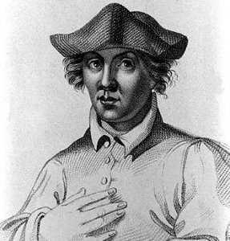
FIGURE I
(portrait idéalisé de Roger Bacon)connaissance sur la philosophie d'Aristote. Il n'acquit point la sagesse par des méthodes uniquement philosophiques, c'est-à-dire par l'observation et le raisonnement, mais, comme Albert, il souligna l'importance de l'expérimentation. On doit toutefois se rappeler que ce que nous appelons aujourd'hui expérience a peu de rapport avec l'expérience telle que la concevait le moyen âge. Bacon dit, par exemple:
« Nous avons établi par l'expérience que les étoiles causent la génération et la décomposition sur la terre, comme chacun peut le voir. »
Ceci n'est pas si évident pour nous, et nous pouvons aussi nous demander comment Bacon pouvait expérimenter les forces mystérieuses des planètes qui influencent par hypothèse la vie et la mort de l'homme. Notre clerc conclut avec impétuosité :
« Ayant établi par l'expérience ce que les philosophes ont montré comme évident avant nous, il s'ensuit immédiatement que toute connaissance ici-bas dépend du pouvoir des mathématiques. »
Un autre exemple de l'attitude scientifique de Roger Bacon est son expérience du noisetier. Dans son ouvrage sur la science expérimentale, il recommande de couper un baliveau d'un an dans les racines d'un noisetier ; puis de le fendre en deux dans le sens de la longueur et de donner les deux parties à tenir à deux personnes aux deux extrémités, de manière que ces deux parties soient séparées par l'espace d'une paume ou de quatre doigts. Après un court instant, les deux parties se rapprocheront peu à peu l'une de l'autre, elles se réuniront, et le rameau se retrouvera intact ! L'explication « scientifique » de ce phénomène, « merveilleux au-delà de tout ce que j'ai vu et entendu », est donnée par Pline, dont Bacon admet les vues : certaines choses s'attirent mutuellement quoiqu'elles soient séparées. Cette explication se fonde sur la croyance à la magie par sympathie, selon laquelle, nous l'avons déjà vu, les semblables s'attirent. Si quelqu'un avait dit à Bacon que c'était là de la magie, il en aurait été bien étonné, car il termine ainsi son rapport :
« Ceci est une chose merveilleuse. Les magiciens font leur expérience en répétant toutes sortes d'incantations. Moi, j'ai méprisé ces incantations et j'ai découvert l'action merveilleuse de la nature, qui est semblable à celle de l'aimant de fer. »
Ainsi, de l'avis de Bacon, les magiciens sont des charlatans qui récitent des formules magiques alors qu'ils savent que le phénomène est naturel — « comme chacun peut le voir » ! Nous trouvons fréquemment des observations de ce genre dans l'œuvre de Bacon : il condamne la magie alors qu'il est lui-même magicien. Les écrits de Roger Bacon ont une vivacité inaccoutumée à l'apogée du mouvement scolastique, et son impatience, mêlée d'une énigmatique clairvoyance, le pousse parfois à faire des prédictions véritablement étonnantes :
« D'abord, je vous parlerai, dit-il dans ses lettres, des admirables œuvres de l'art et de la nature. Après cela, je décrirai leurs causes et leur forme. Il n'y a point là de magie, car la magie est inférieure à de telles choses et en est même indigne. Par exemple : on peut faire des machines à naviguer, de grands navires pour les rivières et pour les mers. Ils se meuvent sans avirons ; un seul homme peut mieux les manœuvrer que s'ils avaient un équipage complet. Puis il y a aussi des voitures, marchant sans chevaux à une vitesse colossale; et nous croyons que tels étaient les chars de combat, équipés de rostres, des anciens. On peut aussi faire des machines volantes. Un homme, assis au centre, contrôle quelque chose qui fait battre comme celles des oiseaux les ailes artificielles de la machine. On peut faire un appareil de petite taille pour descendre les poids lourds, ce qui est d'un grand secours en cas de danger. Car, avec une machine de trois doigts de haut et trois doigts de large, et moins épaisse encore, un homme pourrait se libérer, ainsi que ses amis, de tous les dangers de la prison, et pourrait s'élever et descendre. On peut faire un autre appareil avec lequel un seul homme peut attirer violemment un millier d'hommes contre leur volonté ; et il attire de même d'autres objets. Une machine peut être construite pour les voyages sous-marins, pour les mers et les rivières. Elle plonge au fond, sans danger pour l'homme. Alexandre le Grand fit usage d'un tel engin, ainsi que nous le savons par Ethique l'astronome. De telles choses ont été faites il y a longtemps et on les fait encore de nos jours, excepté peut-être la machine volante...Et infiniment d'autres choses peuvent être fabriquées : des ponts qui traversent les rivières sans piliers, ou d'autres supports et instruments ingénieux et inouïs.»
Il n'est pas étonnant que l'on ait attribué à Bacon de nombreuses inventions et découvertes: la poudre à canon, les verres de lunettes, le télescope, etc. Pas plus que ses contemporains, il ne doutait de l'existence de la magie. Il admettait aussi qu'il y avait des difficultés à discerner entre la science et les arts noirs. Il admettait la magie naturelle, qui n'est pas le mal; et si nous dépouillons ses arguments de leurs subtilités et grossièretés, nous découvrons que les conceptions de ce savant n'étaient pas différentes de celles des philosophes : la magie visant au bien est permise et s'appelle magie naturelle tandis que la magie noire, maléfique, doit être rejetée.
L'alchimie, dit-il, est liée à la physique. Elle traite des couleurs et d'autres substances, du bitume ardent, du sel et du soufre, de l'or et d'autres métaux, et bien que rien concernant l'art alchimique ne se trouve dans l'œuvre d'Aristote, cet art est nécessaire à l'étude de la philosophie naturelle et de la médecine spéculative. Par l'alchimie, on peut faire de l'or et, ainsi, l'art hermétique peut pourvoir aux dépenses de l'État. Il prolonge la vie de l'homme. Mais peu nombreux sont ceux qui travaillent l'alchimie, et moins encore ceux qui peuvent produire des œuvres prolongeant la vie. L'art ne convient qu'aux plus sages, qui savent ce que signifient l'aigle, le cerf, le serpent, le phénix, créatures qui régénèrent leur vie grâce aux vertus des herbes et des pierres. L'or potable doit être dissous, selon Roger Bacon, dans un liquide mystérieux, une eau que seuls les savants spécialement doués savent préparer. Un tel or est meilleur que celui que l'on trouve dans la nature, ou que l'or alchimique. Il produira un effet tout à fait merveilleux quand on le dissoudra correctement. Bien des choses doivent être ajoutées à cette solution :
« ce qui nage dans les mers... et aussi la chose qui naît dans l'air, une fleur de rosée marine ».
A ceci, il faut encore ajouter le dianthe, mélange de feuilles et de fragments de bois avec une petite portion de fleurs ; en outre, ce qui est fourni par la mer : l'ambre gris. Et enfin, un ingrédient de première importance est le serpent, mentionné par Aristote. Les
habitants de Tyr en mangeaient, convenablement préparé avec des épices. Un os qui se forme dans le cœur d'un cerf apportera l'élément final, parce que le cerf est un animal doué de longévité. Ici encore, Bacon reste fidèle au principe magique de sympathie : l'animal doué de longévité la conférera à l'homme ! Notre franciscain considère sa décoction comme un excellent remède contre la vieillesse et toutes les corruptions du corps. Il croyait que l'on pouvait prolonger sa vie de plusieurs centaines d'années. Il prétendait connaître un homme« qui possédait une lettre du pape affirmant qu'il était réellement d'âge patriarcal ».
Bacon pense que des choses aussi incroyables sont suffisamment prouvées par d'aussi vagues allégations. Ce qu'il dit de l'alchimie spéculative n'est guère encourageant pour celui qui désire en explorer le domaine confus. Il déclare que très peu connaissent cet art et que, par suite, ils ne daignent pas communiquer leur connaissance ou même demeurer parmi ceux qu'ils appellent les fous, car de telles gens chicanent sur les interprétations de la loi et cultivent les sophismes. Les alchimistes reprochent aux autres de séparer la philosophie de la théologie. Il ajoute que les opérations alchimiques sont difficiles et coûteuses, si bien que nombre de ceux qui sont experts en cet art ne le peuvent pratiquer faute d'argent. D'autre part, les livres sont écrits en termes si obscurs qu'on peut à peine les comprendre.
L'exclusivisme de Roger Bacon est exaspérant. Il chante les louanges de la science, décrit ses difficultés insurmontables, méprise la magie et toutes méthodes non scientifiques. Il semble qu'il aurait voulu que toute connaissance fût contrôlée par quelques surhommes, ou peut-être par un seul, lui-même. Ayant affirmé que toute connaissance humaine dépend des mathématiques, il avance que sa plus noble branche est l'astrologie, dont on devrait se servir en médecine, en alchimie et pour la prédiction de l'avenir. L'art des étoiles est surtout utile dans le domaine politique : les récentes guerres auraient pu être évitées si les sages avaient observé plus soigneusement les astres. A la naissance de l'homme, les corps célestes déterminent son tempérament physique et son évolution ; à chaque heure, les corps sont sujets à l'influence d'une nouvelle constellation, et les œuvres de l'homme changent de caractère, selon le perpétuel mouvement du ciel. Mais celui-ci ne fait que disposer l'homme à son destin, et n'en décide point, car sa volonté est libre. Bacon écrit :« En accord avec le fait que certains signes sont ardents, chauds et secs, certaines choses participent aussi de cette nature ardente. C'est pourquoi on les appelle martiales, d'après la planète, et elles sont de la nature du Bélier, du Lion et du Sagittaire. Le même principe est vrai pour les autres caractéristiques des choses, des signes et des planètes. Pourtant, nommer et marquer les choses individuellement, par rapport aux planètes et aux signes, est fort difficile à accomplir et impossible si l'on n'utilise pas le Livre des Hébreux. »
Comme rabbi Moïse Maïmonidès (1136 —1204), Bacon croit que l'Écriture sainte est la source fondamentale de l'astrologie, ce qui légitime l'étude des étoiles et de leur influence. L'avis de Bacon sur ce sujet n'était point partagé par tous, car, en dépit de l'influence croissante de l'astrologie sur la culture médiévale, l'attitude officielle de l'Église lui était contraire. Quoi qu'il en soit, Bacon laisse à entendre que la philosophie, qu'il identifie à l'astrologie et aux mathématiques, devrait en fin de compte mener à la théologie et la confirmer. Il va même plus loin, affirmant que, sans l'astrologie ou la philosophie, la doctrine de l'Église n'était pas complète. Il dit dans son Opus Majus ;
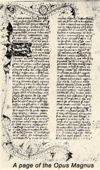
FIGURE II
(Opus magnus)« Si la vérité de la philosophie est mise en doute, on nuit par là même à la théologie dont la fonction est d'utiliser le pouvoir de la philosophie à contrôler l'Église, à diriger la communauté des croyants et à aider à la conversion des incroyants...»
Et il dit des théologiens qui s'opposaient à de telles idées :
« Mais ils se trompent non seulement en ceci que, comme des ignorants, ils condamnent la connaissance de l'avenir obtenue par les mathématiques, mais aussi en ce que, pour une partie qu'ils détestent, ils condamnent le tout.»
Encore une galéjade de Bacon, et des plus dangereuses ! Bacon croyait au pouvoir du mot proféré, ce dont il s'explique ainsi:
« Nous devons considérer qu'il contient une grande force ; tous les miracles, au commencement du monde, étaient issus du verbe. Et le travail propre de l'âme rationnelle est le verbe, dont l'âme se réjouit. Les mots ont un grand pouvoir quand on les prononce avec concentration et désir profond, avec intention droite et confiante. Car, lorsque ces quatre conditions sont réunies, la substance de l'âme rationnelle est mue plus rapidement pour agir, selon sa vertu et son essence, sur elle-même et sur les choses extérieures.»
Puisque Bacon affirmait que l'expérience est le seul critère de certitude en science, nous pouvons conjecturer qu'il essaya la suggestion ou l'hypnose. Mais ceci n'est qu'une hypothèse, car nous avons vu précédemment avec quel sérieux il convenait de juger ses expériences.
« De telles choses, poursuit-il, peuvent être aussi réalisées dans un esprit différent, sans l'aide d'une constellation favorable, et sans les vertus énumérées, mais avec des formules magiques et une pensée malsaine. C'est alors un labeur non scientifique de bonnes femmes, qui ne peut donner de résultats qu'avec l'aide du diable.»
A plusieurs reprises, il laisse percer l'orgueil du savant, et son mépris pour tout ce qui n'est pas bien exprimé et ordonné. Il n'admet la contradiction qu'en théologie. Il cite en exemple un mystère qui défie les lois de la raison : le Christ est la pierre angulaire, bien qu'il soit aussi le centre vers lequel convergent les douze apôtres. En matière de religion, Bacon était absolument orthodoxe, et sa vie, aussi bien que ses études, était vouée à l'Église. Tout ce qu'il découvrait servait son propos d'accroître le prestige de l'Église et de faciliter la réalisation de ses projets et activités. Dans son livre De la science expérimentale, il dit des inventions scientifiques que l'Église devrait envisager leur emploi contre les incroyants et les rebelles afin d'épargner le sang chrétien,
« et elle devrait surtout le faire à cause des périls futurs des temps de l'Antéchrist, qu'il serait facile d'affronter avec la grâce de Dieu si les prélats et les princes encourageaient l'étude et recherchaient eux-même les secrets de la nature ».
Vus dans leur ensemble, les enseignements de Roger Bacon n'ont pas le caractère faustien que des esprits enthousiastes ont cru pouvoir leur attribuer. Bacon ne fut pas le précurseur illuminé de l'ère de la science, celui dont la voix cria en vain dans le désert scolastique. Dans sa volonté d'unifier tout enseignement, sagesse et foi, il produisit une œuvre réellement unique, l'Opus Majus, qui reprend des notions déjà familières à beaucoup de ses contemporains, mais qu'il a arrangées et disposées selon ses propres vues16. L'aspect le plus intéressant de ses livres est qu'ils possèdent une saveur plus individualiste que les autres œuvres du temps. Les élans passionnés de Bacon nous révèlent sa grande sensibilité, contre laquelle, sans doute, il dut lutter lorsqu'il porta aux nues les ennuyeuses méthodes dogmatiques. Ses extraordinaires assertions, dont nous croyons qu'elles furent uniques à l'époque, furent marquées du prophétisme le plus contraire à la science, bien qu'il affirmât que toutes les découvertes sont purement scientifiques. Dans ses prédictions, il exprime les aspirations profondes de l'humanité qui devaient aboutir aux grandes inventions.
adapté du Miroir de la Magie, de Kurt Seligmann, Fasquelle, 1956, ParisA cela, nous ajouterons que les vues des grands intellectuels du Moyen Âge, comme Albert Le Grand, Roger Bacon, etc. doivent être comprises de manière générale. En effet, l'attitude formelle qu'ils avaient pour l'alchimie - cela dit en dehors du fait même que les ouvrages d'alchimie qu'on leur attribue sont souvent supposés - devait être semblable à l'attitude qu'ils avaient quand ils s'exprimaient sur la Physique d'Aristote et les écrits astronomiques de Ptolémée. De ce point de vue, il nous a semblé utile de collationner autant de textes que nous avons pu en trouver sur le serveur Gallica et de les mettre à portée du plus grand nombre, sous un format directement exploitable. Nous espérons ainsi avoir servi des chercheurs qui seraient intéressés par des recherches d'ordre épistémologique sur la liaison entre l'intérêt pour l'alchimie de ces penseurs, mesurée à l'aune de leur intérêt et surtout de la façon dont ils formulaient leurs réflexions. [cf. Composé des Composés, attribué à Albert Le Grand ; Miroir d'Alchimie dans la présente section ; le Trésor des Trésors de Paracelse ; le Chemin des Chemins attribué à Arnauld de Villeneuve ; la Clavicule de Ramon Lull].sites consultés sur Roger Bacon :
http://isimabomba.free.fr/biographies/chimistes/bacon.htm
http://classes.bnf.fr/dossitsm/b-baconr.htm
http://www.univ-lille3.fr/www/Recherche/set/sem/SimonResume.html
http://www.infoscience.fr/histoire/biograph/biograph.php3?Ref=7
http://htl.linguist.jussieu.fr/mediev.html
http://www.remydegourmont.org/de_rg/oeuvres/textes_dissociations.htm
http://optiquetournier.chez.tiscali.fr/historique%202.htm
http://histoirechimie.free.fr/Lien/BACONFR.htm
http://www.voltaire-integral.com/17/bacon_roger.htm
http://www-gap.dcs.st-and.ac.uk/~history/Mathematicians/Bacon.html
http://www.newadvent.org/cathen/13111b.htm
http://www.levity.com/alchemy/rbacon.html
http://www.levity.com/alchemy/rbacon2.html
http://www.fordham.edu/halsall/source/bacon1.html
http://www.sjsu.edu/depts/Museum/bac.html
http://www.acusd.edu/~macy/Roger%20Bacon.html
http://es.rice.edu/ES/humsoc/Galileo/Student_Work/Trial96/breu/bacon.html
L'intérêt de Bacon pour l'alchimie ne tient certes pas dans le traité que nous donnons en fin de section ; comme on sait, le Speculum alchimiae est apocryphe et n'a surtout rien à voir avec la manière dont Bacon considérait l'alchimie.
Roger Bacon naquit en 1214 à Ilcester, comté de Sommerset. II fit ses premières études à Oxford, et vint ensuite à Paris prendre les titres de maître ès-arts et de docteur en théologie. A cette époque, Albert le Grand professait publiquement â Paris. De retour en Angleterre, il entra dans l'Ordre des Franciscains vers 1240. II apprit le grec, l'arabe, l'hébreu pour lire les anciens auteurs dans le texte. Il acquit ainsi une prodigieuse érudition. Il revint à Paris, qui lui offrait plus de facilités pour ses études. Ses supérieurs ignorants, effrayés de sa science, commencèrent à le persécuter. Clément IV qui l'admirait fut impuissant à le protéger, et Bacon dut se cacher de ses supérieurs pour écrire et envoyer au pape l'Opus majus. Nicolas III succéda à Clément IV. C'est sous ce pontife que Jérôme d'Esculo, générai des Franciscains, passant par Paris, fit enfermer Roger Bacon, l'accusant de magie et d'hérésie. Jérôme d'Esculo fut lui-même élu pape sous le nom de Nicolas IV, et Roger Bacon désespérait de jamais sortir de son cachot quand Raymond Gaufredi fut nommé général des Franciscains. Homme doux et savant, Raymond fit mettre en liberté Roger Bacon et plusieurs autres Franciscains. Bacon retourna en Angleterre, mais il avait trop souffert, i! était trop vieux pour reprendre ses chères études. II mourut A Oxford en 1294; à son lit de mort il laissa tomber ces tristes paroles :
« Je me repens de m'être donné tant de peine dans l'intérêt de la science ! »
Les ouvrages de R. Bacon relatifs à l'alchimie ont été réunis dans un recueil intitulé: Rogerii Baconis Thesaurus chimicus, un vol. in-8. Francofurti, 1603 et 1620.
Liste des traités de Roger Bacon : Alchimia major, Breviarium de domo Dei, De leone viridi, Secretum secretorum, Speculum alchemiae, Epistola de secretis operibus artis et naturae ac nullilate magies. Le présent traité se trouve en latin dans la Bibliotheca chemica mangeti dans le Thesaurus chimicus, dans le tome II du Theatrum chimicum. C'est d'après ce texte qu'a été faite la présente traduction. C'est un traité d'alchimie spéculative ou théorique. Le Miroir d'alchimie a été souvent publié en latin de 1541 à 1702. Il a été traduit en français à Lyon, en 1557, et a connu de multiples rééditions, la dernière à Paris par Albert Poisson en 1893.
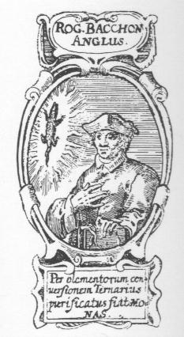
FIGURE III
(portrait idéalisé de Roger Bacon, d'après la gravure de frontispice de la Basilica Chymica d'Oswald Croll, Francfort, 1629)L'article qui suit fait un point très circonstancié de la vie et de l'oeuvre de Roger Bacon. Il montre que le moine francisicain pouvait être comparé à Kepler, Galilée, Newton ou Copernic et qu'il était, selon toute vraisemblance, un génie universel. Qu'il se soit occupé d'alchimie ne laisse pas d'impressionner : son Miroir d'Alchimie ne semble donc pas, comme tant d'autres textes, apocryphes. Roger Bacon croyait à la pierre philosophale et aux transmutations métalliques. Mais il y croyait en fonction des connaissances de son époque et dès lors, sa pensée s'inscrit d'une manière logique, en contexte. Il est d'autant plus remarquable de voir figurer ici le nom d'Artephius, que seul Chevreul a osé « ressusciter » dans les livraisons du Journal des Savants, touchant à la Clef de la plus grande Sapience, attribuée à Alphonse X. Sur l'or potable, cf. la section voie humide.
ROGER BACON SA VIE ET SON OEUVRE
Roger Bacon, sa vie, ses oeuvres, ses doctrines, d'après des document inédits, par M. Emile Charles, Paris 1861. — Fr. Roger Bacon, opera quaedam hactenus inedita, London, 1860 [Revue des Deux Mondes]
Au siècle dernier, il y avait encore à Oxford, au-delà de la ville, dans un faubourg situé sur l'autre bord de la rivière, une vieille tour qu'on faisait visiter aux étrangers comme ayant autrefois servi de lieu d'étude et d'observatoire au frère Bacon, friar Bacon's study (Cette tour, pendant les guerres civiles, servait de poste d'observation, et on en trouve la gravure dans l'ouvrage de Joseph Skelton : Oxonia antiqua restaurata, t. II, p.2, Oxford 1823.). C'est là, suivant la tradition, qu'il se retirait pour étudier le ciel et y lire le secret des choses de la terre; c'est là qu'il cherchait le grand œuvre en compagnie de son bon ami frère Thomas Bungey et d'autres nécromans et sorciers que la légende lui associe : The nigromancie thair saw i eckanone, Of Benytas, Bengo and friar Bacone, etc. (Voyez le Miroir enchanté de Douglas, poète écossais de la fin du XVe siècle.). Ce fut sans doute dans le coin le plus caché de cette mystérieuse retraite que Bacon et son ami fabriquèrent cette fameuse tête d'airain qui parlait et rendait des oracles. La tradition nous peint les deux moines interrogeant la tête miramileuse : ils lui demandent, en véritables Anglais, un moyen de ceindre leur chère Albion d'une muraille inexpugnable. La tête reste d'abord muette, puis, au moment où les magiciens découragés se laissent distraire à d'autres soins, tout
à coup la tête parle et leur révèle le grand secret. Hélas ! ils ne l'ont pas entendu. Qui sait si, en recueillant cette légende, plus d'un bon Anglais de nos jours ne se prendra pas à regretter que la tête d'airain de frère Bacon n'ait pas été conservée, et qu'elle ne puisse pas dire son secret à l'oreille attentive de lord Palmerston ? Que d'alarmes et d'argent épargnés à l'amirauté anglaise! que de soucis de moins pour M. Gladstone ! Aussi bien il s'en faut que tout soit à rejeter dans ces traditions bizarres, où le sentiment national conspire avec les fantaisies de la légende pour travestir un homme de génie en sorcier. Roger Bacon était Anglais de génie et de cœur, comme il l'était de naissance. Sa grande idée, celle qui recommande son nom et le rapproche de l'illustre chancelier, son .compatriote et son homonyme, cette idée est profondément britannique : c'est l'idée du génie de l'homme asservissant la nature à ses volontés, c'est la prise de possession de l'univers par l'industrie. Comment se fait-il que l'Angleterre, si renommée par le culte pieux qu'elle rend à ses grands hommes, ait si longtemps laissé dormir dans l'oubli les pensées et les écrits de Roger Bacon, et livré au caprice de la tradition populaire la mémoire d'un de ses plus illustres enfans ? Je n'ose pas dire, avec M. de Humboldt, que Roger Bacon ait été la plus grande apparition du moyen âge (Cosmos, t. II, p.398); mais à coup sûr il est digne de prendre, place, au siècle de saint Louis, a côté de saint Thomas, de saint Bonaventure et d'Albert le Grand. Deux moines ses compatriotes, Duns Scot et Okkam, ont leur monument; seul, le plus grand moine de l'Angleterre attend encore l'achèvement du sien. Il faut aller du XIIIe siècle jusqu'au XVIIIe pour rencontrer un travail sérieux consacré à Roger Bacon. En 1733, le docteur Samuel Jebb, habile et savant homme, sur les instances de Richard Mead, médecin de la cour, publia la première édition de l'Opus majus. C'est un beau travail, bien qu'il pèche à la fois par excès et par défaut, puisqu'il insère dans l'Opus majus des chapitres qui n'en font point partie, et supprime, on ne sait par qu'elle méprise, tout un livre de la plus grande importance, le livre septième, qui contenait la morale. Voilà tout ce que l'Angleterre jusqu'à ces derniers temps a fait pour Roger Bacon; c'est à un Français, à un de nos compatriotes, érudit passionné autant qu'éminent philosophe, qu'elle a laissé le soin et l'honneur de reprendre les travaux de Samuel Jebb, et de susciter en faveur de l'illustre franciscain d'Oxford un mouvement de recherches qui'ne s'arrêtera plus, s'il plaît à Dieu, jusqu'au iour où justice entière sera faite et où Roger Bacon aura retrouvé la place qu'il mérite dans l'histoire de l'esprit humain. En 1848, M. Cousin, tout occupé de ses travaux sur la philosophie du moyen âge, découvrit dans la bibliothèque de Douai un manuscrit inédit de Roger Bacon. Cette grande mémoire l'intéressa.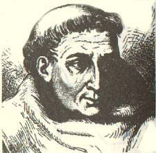
FIGURE IV
(portrait présumé de Frère Bacon)« Nous ne pouvions oublier, dit-il, cet ingénieux et infortuné franciscain qui, à la fin du XIIIe siècle, comprit la haute utilité des langues, enrichit l'optique d'une foule d'observations et même d'expériences importantes, signala le vice du calendrier julien et prépara la réforme grégorienne, inventa la poudre à canon ou du moins la renouvela, qui enfin, pour avoir été plus éclairé que son siècle dans les sciences physiques, en reçut le nom de doctor mirabilis, passa pour sorcier et subit la longue et absurde persécution qui a consacré sa mémoire auprès de la postérité. Nous attachions d'autant plus de prix à retrouver quelque ouvrage inédit de Roger Bacon qu'un examen attentif nous a laissé la conviction que, si par sa naissance Roger Bacon appartient à l'Angleterre, c'est en France et à Paris qu'il acheva ses études, prit le bonnet de docteur, enseigna, fit ses expériences et ses découvertes, et à deux époques différentes fut condamné à une réclusion plus ou moins juste parle général de son ordre, Jérôme d'Ascoli, dans ce fameux couvent des franciscains ou des cordeliers qui occupait le terrain actuel de l'École de Médecine (Journal des Savants, mars 1848). »
Plein de ces grands souvenirs, M. Victor Cousin s'appliqua à l'étude du manuscrit de Douai, et ne tarda pas à y reconnaître, sous un titre inexact et au milieu d'autres documents, un ouvrage capital de Roger Bacon, l'Opus tertium. On savait qu'après avoir envoyé au pape Clément IV, son protecteur, l'Opus majus, Roger Bacon avait écrit, sous le nom d'Opus minus, un second ouvrage qui devait être tout ensemble l'abrégé et le complément du premier; mais ce qu'on savait moins, ce qu'on avait perdu de vue depuis Samuel Jebb, c'est que Roger Bacon avait fait un troisième et suprême effort pour réunir dans une sorte d'encyclopédie l'ensemble de ses pensées et de ses découvertes. Ce dernier mot de son génie, c'est l'Opus tertium. M. Cousin a le mérite de l'avoir fait connaître pour la première fois et d'en avoir mis en lumière les côtés les plus intéressants. Ce n'est pas tout : depuis 1848, M. Cousin a rendu un nouveau service à la mémoire de Roger Bacon en découvrant dans la bibliothèque d'Amiens un manuscrit qui contient une sorte de commentaire de Roger Bacon sur la physique et la métaphysique d'Aristote (Amiens s'est enrichi des livres et des manuscrits de l'antique abbaye de Corbie. Voyez Journal des Savants, août 1848.). Ce manuscrit a de l'importance. On y voit Roger Bacon aux prises avec les grands problèmes de la métaphysique. Or c'est là un côté de son génie resté jusqu'à ce jour complètement inconnu. Aussi M. Cousin, arrivé au terme de ses recherches sur les manuscrits inédits de Roger Bacon, adressait-il un noble appel aux savants de France et d'Angleterre. Il demandait à quelque jeune et consciencieux amateur de la philosophie du moyen âge de s'enfoncer dans l'étude du manuscrit d'Amiens, lui promettant pour prix de ses peines une ample et riche moisson; il stimulait le patriotisme des savans d'Oxford et de Cambridge, et les adjurait de compléter la publication de Samuel Jebb. Ni l'Angleterre ni la France n'ont fermé l'oreille à ces pressantes réclamations. Dans le vaste recueil qui se publie par les ordres du parlement anglais
(Voici le titre de cette collection : Rerum Britannicarum medii œvi Scriptores, or Chronicles and memorials of Great-Britain and Ireland during the middie age, published by the authority of her Majesty's treasury, under the direction of the mastecr of the rolls. — La publication des écrits inédits de Roger Bacon a été confiée à M. I. S. Brewer, professeur de littérature anglaise au collège du Roi à Londres. Nous n'avons encore qu'un volume, qui a paru en 1859 et qui contient l'Opus tertium, l'Opus minus, le Compendium philosophiae et un appendice, le traité De Nullitate magiae.),
on a compris les œuvres de Roger Bacon. Tout récemment encore, un professeur de l'université de Dublin a retrouvé en partie le complément de l'Opus majus, et on nous fait espérer la publication prochaine du morceau tout entier (On the Opus majus of Roger Bacon, by John Kells Ingram, fellow of Trinity College, professor of English literature in the University of Dublin. Dublin 1858.). Voici enfin un savant français, M. Emile Charles, qui nous donne sur la vie, les œuvres et les doctrines de Roger Bacon une monographie complète (Roger Bacon, sa vie, ses œuvres, ses doctrines, d'après des textes inédits, par Emile Charles, professeur de philosophie au lycée de Bordeaux; 1 vol. in-8°.). Elle est le résultat de six années de recherches et d'efforts. Rien n'a pu lasser la patience ni refroidir le zèle de ce jeune bénédictin de la philosophie. Voyages lointains et coûteux, transcriptions pénibles, déchiffrements laborieux, aucune épreuve ne l'a rebuté. Nul manuscrit connu n'a échappé à ses recherches. Il en a demandé de nouveaux à toutes les bibliothèques, à la Bodleienne, au British Museum, à la collection Sloane, au musée Ashmole, à la Bibliothèque impériale, à la Mazarine, à tous les collèges d'Oxford, à toutes les collections de Londres, de Paris, de Douai, d'Amiens. Le fruit de tant de soins, de fatigues et de veilles est un ouvrage des plus distingués, que la Faculté des lettres de Paris, après une soutenance brillante en Sorbonne, a consacré par un suffrage unanime. Certes la matière est loin d'être épuisée, et il y a encore beaucoup à faire pour tirer de son obscurité séculaire la figure de Roger Bacon. La recherche pourtant nous a paru assez avancée pour essayer de donner une idée du docteur admirable, de raconter les vicissitudes de sa destinée, de caractériser enfin l'œuvre trop oubliée du plus hardi génie que le moyen âge ait enfanté.
I.
On sait au juste où naquit Roger Bacon : ce fut à Ilchester, dans le Sommersetshire. La date de sa naissance est moins bien connue; la plus probable est 1214. Il était d'une famille noble, riche et considérée. Son frère aîné joua un rôle dans les discordes civiles du règne d'Henri III; il prit parti pour le roi contre les barons. Roger, né cadet et animé d'une vocation ardente pour les études, fut destiné à l'église et envoyé par sa famille à l'université d'Oxford. Le collège de Morton et celui du Nez de Bronze, Bruzen nase hall, se disputent encore l'honneur de l'avoir élevé. Dès cette époque lointaine. Oxford se signalait déjà par le goût des langues et des sciences mathématiques, et surtout par un esprit particulier d'indépendance et de liberté dans les choses spéculatives comme dans les choses pratiques. Roger y trouva les maîtres qui convenaient le mieux au tour naturel de son génie et de son caractère, Robert Bacon, son parent (probablement son oncle), Richard Fitzacre le dominicain, Adam de Marsh, Edmond Rich, et entre tous ce fameux Robert Grosse-Tête, évêque de Lincoln, théologien passionné pour les lettres, caractère énergique et hardi, si connu par ses démêlés avec le pape Innocent IV, qu'il osa un jour qualifier d'hérétique et d'antechrist. L'esprit de Roger Bacon se déploya tout à l'aise dans cette atmosphère de science curieuse et de libre critique. Nous le voyons figurer à côté de son parent Robert dans une scène solennelle, où il prélude par des hardiesses politiques à des témérités encore plus dangereuses. En 1233, le jour de la Saint-Jean, le roi Henri III eut une entrevue avec les barons mécontents: il lui fallut subir, un long sermon, de sévères réprimandes. Le prédicateur qu'on avait choisi pour cette mission était le frère Robert, le parent de Roger Bacon. Le sermon à peine fini, le moine apostropha directement le roi, et lui déclara que toute paix durable était impossible s'il ne bannissait de ses conseils l'évêque de Manchester, Pierre Desroches, objet de la haine des Anglais. « Les assistants se récriaient à tant d'audace; mais le roi, se recueillant en lui-même, sut se faire violence. Ce voyant calmé, un clerc de l'assemblée, célèbre déjà par son esprit, osa adresser au roi cette raillerie :
" Seigneur roi, savez-vous les dangers qu'on aie plus à redouter quand on navigue en pleine mer ? — Ceux-là le savent, repartit Henri, qui ont l'habitude de ces voyages. — Eh bien ! je vais vous le dire, reprit le clerc, ce sont les pierres et les roches. Et il voulait désigner par là Pierre Desroches, l'évêque de Winchester (Chronique de Matthieu Paris, p. 265.). »
Ce plaisant audacieux n'était autre que Roger Bacon; il avait alors dix-neuf ans. Sa première éducation terminée à Oxford, il vint la compléter à Paris. C'était l'usage universel du temps. L'Université de Paris attirait l'Anglais Roger Bacon comme elle attira l'Allemand Albert, l'Italien saint Thomas, le Belge Henri de Gand. Les détails manquent sur ce premier séjour de Roger Bacon à Paris; mais il est certain qu'il s'y livra à de profondes études, y reçut le grade de docteur, et commença de s'y faire une grande réputation. Est-ce pendant son premier séjour à Paris ou seulement à son retour à Oxford que Roger Bacon entra dans l'ordre de Saint-François ? On l'ignore. Qu'un tel homme se soit fait moine et moine franciscain, c'est ce que peut à peine comprendre un illustre érudit dont les hommes de ma génération ont pu saluer la noble et vénérable vieillesse, et qui savait par expérience ce que les vocations prématurées laissent de chaînes et de regrets.
« Que faisait parmi des franciscains, s'écrie Daunou avec un accent qui semble dénoter un secret et amer retour sur lui-même, que faisait parmi ces moines un homme de génie impatient d'acquérir des lumières et de les répandre (Voyez, dans l'Histoire littéraire du la France, t. XX, p. 230, la notice de M. Daunou, interrompue par sa mort; un digne héritier de son érudition, M. J.-V. Le Clerc, l'a complétée par de savantes recherches bibliographiques.) ? »
Les réflexions qu'ajoute l'ancien oratorien ne sont pas moins curieuses :
« Roger Bacon, s'il voulait embrasser l'état monastique, eût bien mieux fait de se vouer aux frères prêcheurs, inquisiteurs, il est vrai, et persécuteurs hors de leurs couvents, mais jaloux d'attirer et de conserver dans leur ordre tous les hommes qui se distinguaient par des productions scientifiques ou littéraires, religieuses ou philosophiques. Ils en ont possédé, encouragé, honoré un très grand nombre, en dirigeant contre ceux qui ne leur appartenaient pas le zèle intolérant de leur institut. Les franciscains au contraire, toujours gouvernés, si l'on excepte saint Bonaventure, par des généraux d'un mince talent et d'un médiocre savoir, ne se sentaient qu'humiliés de la présence et de la gloire des hommes de mérite qui s'étaient égarés parmi eux. Roger Bacon a ressenti plus qu'aucun autre les effets de cette envieuse malveillance, et il faut convenir que nul ne l'a provoquée autant que lui, puisqu'il était alors et qu'il est encore, par l'étendue et l'éclat dé son génie, le plus-illustre des frères mineurs. »
II y aurait peut-être bien quelque chose à dire sur cette peinture un peu chargée des deux ordres rivaux de Saint- Dominique et de Saint-François; mais comment ne pas s'associer aux regrets pathétiques du vieux Daunou, quand on songe aux persécutions qui vont assaillir notre franciscain, tourmenter sa vie entière, comprimer l'essor de son génie, arrêter le cours de ses travaux, et s'acharner jusque sur ses écrits et sur sa mémoire ? Il est aujourd'hui certain (Voyez M. Cousin, Journal des Savants, cahiers de mars, avril, mai, juin 1848. — Comp.-M. Emile Charles, Roger Bacon, sa vie, etc., p. 11 et suiv.) que Roger Bacon a subi deux persécutions distinctes, l'une qui a duré environ dix ans, de 1257 à 1267, saint Bonaventure étant général des franciscains; l'autre, encore plus cruelle et plus longue, de 1278 à 1292, pendant le généralat de Jérôme d'Ascoli, devenu pape (en 1288) sous le nom de Nicolas IV. Pourquoi ces sévérités redoublées ? Si on interroge les historiens de l'ordre, Wadding par exemple, on les trouve presque muets. Il semble qu'ils aient voulu ensevelir dans le même oubli les souffrances et la gloire de leur victime. Roger Bacon avait-il péché contre les mœurs ? Non. Sa vie était pure, ses mœurs innocentes. S'était-il révolté contre les dogmes de la foi ? Pas davantage ; le christianisme n'a pas eu de croyant plus sincère, l'église de serviteur plus dévoué. Avait-il contesté l'autorité du saint-siége ? Point du tout. C'est même en s'appuyant sur un pape ami des lettres qu'il essayait de se dérober aux entraves de son couvent.
Quel est donc son crime ? Un mot de Wadding le laisse entendre, quoique discrètement. II fut condamné, dit-il, propter quasdam novitates suspectus. En effet, Roger Bacon a été un esprit essentiellement novateur. Comme tous ses pareils, il est mécontent de son siècle. Il se plaint surtout de l'autorité exclusive qu'on accorde à Aristote. Au lieu d'étudier la nature, dit-il, on perd vingt ans à lire les raisonnements d'un ancien.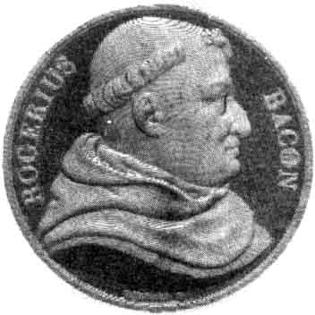
FIGURE V
(médaille à l'effigie de Bacon - notez qu'il ne sembla pas s'agir de Roger, les autres portraits le montrant comme de complexion sèche)« Pour moi, dit résolument Roger Bacon, s'il m'était donné de disposer des livres d'Aristote, je les ferais tous brûler, car cette étude ne peut que faire perdre le temps, engendrer l'erreur et propager l'ignorance au-delà de tout ce qu'on peut imaginer (Compendium Theologiae, pars I, cap. 2.). »
Ce n'est pas que Roger Bacon méconnaisse le génie d'Aristote; mais, dit-il, avant de l'admirer, il faut le comprendre, et pour le comprendre il faut le lire dans l'original. Or c'est ce dont les docteurs les plus vantés de ce temps sont incapables. Ils admirent un faux Aristote défiguré par des traducteurs imbéciles. Roger Bacon n'épargne personne. On a cru voir dans ses attaques contre Albert le Grand et saint Thomas la trace de a rivalité te des moines de Saint- François et des enfants de saint-Dominique. Il n'en est rien. Roger Bacon n'est pas moins âpre contre Alexandre de Halès, l'oracle des franciscains, que contre le dominicain Albert le Grand.
« Je ne fais exception pour aucun ordre, dit-il en propres termes, nullum ordinem excludo (Voyez l'ouvrage du M. Charles, p. 107.). »
Il est sans ménagement pour la subtilité, la sécheresse, la diffusion des théologiens, pour leurs pesantes et interminables sommes. Suivant lui, ce qu'il y a d'utile dans Albert le Grand pourrait être résumé dans un traité qui ne serait pas la vingtième partie de ses écrits. Et ailleurs, sur un ton encore plus vif :
« On vante beaucoup, dit-il, la somme du frère Alexandre de Halès; la vérité est qu'un cheval en aurait sa charge, mais cette somme tant vantée n'est pas de lui. »
Qu'est-ce que saint Thomas ? Vir erroneus et fumosus, c'est ainsi que l'irrévérend franciscain désigne l'ange de l'école. Impitoyable pour les théologiens chrétiens, il n'épargne pas beaucoup plus les Arabes : Avicenne est plein d'erreurs, Averroès a emprunté à d'autres tout ce qu'il a de bon et de vrai; il n'a tiré de son propre fonds que ses erreurs et ses chimères.
« Et l'on ose prétendre, s'écrie Roger Bacon, qu'il n'y a plus rien à faire en philosophie, qu'elle a été achevée dans ces temps-ci, tout récemment, à Paris ! »
Quelle illusion ! La science est fille du temps; elle n'est pas faite d'ailleurs pour devenir facile et vulgaire.
« Ce qui est approuvé du vulgaire, dit durement Roger Bacon, est nécessairement faux (De Mirabili potestate, 47.). »
Aussi ne se dissimule-t-il pas qu'il est dans la destinée des hommes de génie d'être méprisés par la foule et persécutés. Qu'importe ? il faut rendre à la foule mépris pour
mépris.« La foule a été dédaignée de tout temps par les grands hommes qu'elle a méconnus; elle n'assista pas avec le Christ à la transfiguration, et trois disciples seulement furent choisis. Ce fut après avoir suivi pendant deux ans les prédications de Jésus que la foule l'abandonna et s'écria : Crucifiez-le (Opus majus, p. 6.) ! »
Mais une telle perspective n'a rien qui fasse fléchir le courage de Roger Bacon.
« Ceux qui ont voulu introduire quelque réforme dans la science ont toujours été en butte aux contradictions et arrêtés par les obstacles. Et cependant la vérité triomphait, et elle triomphera jusqu'au temps de l'antechrist (Ibid., p. 13.). »
On s'explique sans peine qu'un esprit et un caractère de cette trempe n'étaient pas à leur place dans un couvent. Les moines ne comprenaient rien à ce frère étrange, qui passait sa vie dans sa tour d'Oxford à observer les astres et à faire des expériences de physique. lis y soupçonnaient quelque odieux mystère, peut-être un secret commerce avec les démons. On se disait à l'oreille que frère Roger se vantait d'avoir inventé de prodigieuses machines, un appareil pour s'élever dans les airs, un autre pour naviguer sans rameurs avec une vitesse inouie. On parlait de miroirs incendiaires capables de détruire une armée en un instant, d'un automate doué de la parole, de je ne sais quel androïde prodigieux. Tout cela se faisait-il sans un peu de magie ? Un homme en si bonne intelligence avec les puissances infernales pouvait-il rester disciple et serviteur du Christ ? N'avait-il pas emprunté à ses amis les Arabes, sectateurs de Mahomet, cette horrible et diabolique doctrine que l'apparition des prophètes, l'origine et le progrès des religions tiennent aux conjonctions des astres, que la loi chrétienne en particulier dépend de la conjonction de Jupiter avec Mercure, et enfin, prodige d'erreur et d'iniquité ! que la conjonction de la lune avec Jupiter sera le signal de la chute de toutes les religions ? Telles étaient les rumeurs du couvent, et comme à l'ordinaire un peu de vrai s'y mêlait à beaucoup de faux. Les supérieurs avertis envoyèrent le frère incriminé d'Oxford à Paris, et là commença pour lui un régime de sévère surveillance et d'inquisition tracassière qui dura dix ans, et fut poussé quelquefois jusqu'aux châtiments les plus humiliants. Il faut entendre Roger Bacon raconter lui-même au saint-père ses tribulations dans ce préambule de l'Opus tertium découvert par M. Cousin, et qui rappelle l'Historia Calamitatum d'Abélard. D'abord il lui fut défendu de rien écrire, à plus forte raison d'enseigner. Quel supplice pour un homme dévoré de la passion de répandre ses idées, et qui répétait sans cesse le mot de Sénèque : Je n'aime à apprendre que pour enseigner ! Le voilà réduit à la méditation solitaire; on lui refuse toute espèce de livre, on lui retranche ses instrumens de mathématiques. S'il s'occupe des plus simples calculs, s'il veut dresser des tables astronomiques, surtout s'il essaie de former de jeunes novices à l'observation des astres, on s'effraie, on lui interdit ces nobles et innocents exercices comme des œuvres du démon. La moindre des punitions qu'il encoure en cas de désobéissance, c'est le jeûne au pain et à l'eau. Pendant que frère Roger se consumait au milieu de ces indignités, un rayon de lumière vint tout à coup éclairer sa cellule et réjouir son cœur. On annonce l'exaltation d'un nouveau pape. C'est
un Français, Guy Foulques(Je ne sais pourquoi M. Charles italianise le nom de Foulques et l'appelle constamment Guido Folcodi. Passe peut-être pour Fulcodi, mais pourquoi Guido ? Guy Foulques était né à Saint-Gilles sur le Rhône. Il entra dans les ordres à la mort de sa femme, fut archevêque de Narbonne en 1359, cardinal-évêque de Sabine en 1261, légat du pape Urbain II en Angleterre pour apaiser la querelle d'Henri III et des barons, enfin pape en 1205. Voyez la notice de Daunon et les travaux de M. Cousin.),
esprit généreux et libéral, ami des lettres et ami de Bacon. Avant d'entrer dans l'église, il avait passé par la guerre et par la jurisprudence. Choisi pour secrétaire par saint Louis, il devint rapidement archevêque, cardinal, puis légat du pape en Angleterre. Ce fut là qu'il entendit parler de ce moine d'Oxford dont les travaux excitaient une admiration mêlée de jalousie et de frayeur. Ne pouvant communiquer directement avec le frère, il se servit d'un ami commun, Rémond de Laon, et sut par lui que Roger préparait un grand ouvrage sur la réforme de la philosophie. Quand Roger fut exilé à Paris, Foulques lui écrivit plusieurs fois, mais inutilement; la défense des supérieurs était absolue. On devine quelle fut la joie du pauvre franciscain en apprenant l'exaltation de son protecteur. Il sentit l'espérance entrer dans son âme. Nous trouvons dans l'Opus tertium le contre-coup de cette allégresse :
« Que béni soit Dieu, le père de notre Seigneur Jésus-Christ, qui a exalté sur le trône de son royaume un prince éclairé qui veut servir les intérêts de la science ! Les prédécesseurs de votre béatitude, occupés par les affaires de l'église, harcelés par les rebelles et les tyrans, n'eurent pas le loisir de songer à la direction des études libérales; mais, grâce à Dieu, la main droite de votre sainteté a déployé dans les airs son étendard triomphant, tiré le glaive du fourreau, plongé dans les enfers les deux partis opposés et rendu la paix à l'église. Le temps est propice aux œuvres de la sagesse (Opus tertium, cap. 2, manuscrit de Douai. On peut maintenant confronter les extraits de l'Opus tertium avec l'édition récente publiée à Londres et mentionnée plus haut.). »
Malgré la surveillance étroite qui l'entourait, Roger Bacon parvint à faire passer des lettres au nouveau pape; un chevalier nommé Bonnecor se chargea de les porter et d'y joindre les explications nécessaires. Clément IV ne tarda pas à répondre; nous avons sa lettre, Wadding, l'historien des franciscains, l'a copiée dans les archives du Vatican :
Lettre du pape Clément IV à Roger Bacon.
« A notre fils chéri le frère Roger dit Bacon, de l'ordre des frères mineurs : Nous avons reçu avec reconnaissance les lettres de votre dévotion, et nous avons pris bonne note des paroles que notre cher fils, le chevalier Bonnecor, y a ajoutées, pour les expliquer, avec autant de fidélité que de prudence. Afin que nous sachions mieux où vous en voulez venir, nous voulons et vous ordonnons, au nom de notre autorité apostolique, que, nonobstant toute injonction contraire de quelque prélat que ce soit, ou toute constitution de votre ordre, vous ayez à nous envoyer au plus vite l'ouvrage nous vous avons prié de communiquer à notre cher fils Rémond de Laon quand nous étions légat. Nous voulons encore que vous vous expliquiez dans vos lettres sur les remèdes qu'on doit appliquer à ces maux si dangereux que vous nous signalez, et qu'avec le plus de secret possible vous vous mettiez en devoir sans aucun délai.
« Donné à Viterbe, le 10 des calendes de juillet, de notre pontificat la deuxième année. »
En lisant cette lettre, si honorable pour Clément IV, on remarquera qu'il n'ose pas exiger la délivrance de son protégé. Lui le vicaire de Jésus-Christ, le successeur de Grégoire VII, il s'humilie jusqu'à demander le secret à un moine de Samt-François, tant était grand le prestige de cet ordre redoutable, qui forçait les chefs de l'église, les empereurs et lès rois à compter avec lui : immense armée, à la fois disciplinée et remuante, que plusieurs papes eurent la pensée de détruire, sans en avoir le courage ou le pouvoir, et qui se crut un instant à la veille de substituer à l'ordre établi en Europe une sorte de république universelle dont le général des franciscains aurait été le chef ! Aussi bien la lettre de Clément IV fut loin de mettre un terme aux épreuves de Roger Bacon. Elle ranima son courage, mais elle n'améliora pas, bien plus, elle aggrava sa position. On le gardait à vue, on lui défendait de communiquer avec le dehors, on l'exténuait déjeunes et de macérations. Il se mita l'oeuvre pourtant; mais comment se procurer les livres, l'argent et jusqu'au parchemin nécessaire ? Il lui fallait des aides pour ses expériences et ses calculs, on les lui refusait; il lui fallait des copistes, il ne savait où en trouver : dans son ordre, ils eussent livré ses écrits aux supérieurs; hors de son ordre, il n'avait que les copistes de Paris, mercenaires renommés par leur infidélité, et qui n'auraient pas manqué de rendre publics ces écrits dont le pape devait avoir les prémices. Il lui fallait enfin de l'argent, et ce fut là de toutes les difficultés la plus dure à surmonter. Lui, simple moine, il n'avait rien et ne pouvait rien avoir. Il excusait le saint-père,
« qui, assis au faîte de l'univers et l'esprit embarrassé de mille soucis, n'avait pas pensé à lui faire tenir quelque somme; »
mais il maudissait les intermédiaires qui n'avaient rien su dire au pontife et ne voulaient pas débourser un seul denier. Il eut beau leur promettre d'en écrire au pape et de les faire rentrer dans leurs avances; il eut beau s'adresser à son frère, qui était fort riche, mais que la guerre avait ruiné, puis à plusieurs prélats, à ces personnages, écrivait-il au pape avec amertume, dont vous connaissez le visage, mais non pas le cœur : partout il fut éconduit; sa probité même fut soupçonnée.
« Combien de fois n'ai-je point passé pour un malhonnête homme ! Combien de fois on m'a rebuté et leurré de vaines espérances ! Que de hontes et d'angoisses j'ai dévorées en dedans de moi ! »
Désespéré, il s'adresse enfin à des amis presque aussi pauvres que lui, les décide à vendre une partie de leur modeste avoir et à engager le reste à des conditions usuraires. Et grâce à tant d'efforts et d'humiliations, à quoi parvient-il ? A réunir une somme de 60 livres ! Et pendant ce temps, comme le remarque fort bien le dernier et savant historien de Roger Bacon (M. Emile Charles, p. 23 et suiv.), pendant que le pauvre franciscain s'épuisait en efforts de tout genre au fond de sa cellule de la porte Saint-Michel, ses rivaux de gloire et de génie vivaient dans la faveur des papes et des rois. Saint Thomas dînait à la table de saint Louis, et Albert le Grand donnait à l'empereur cette fastueuse hospitalité que la légende a encore rehaussée de ses fantastiques couleurs. A ces entraves indirectes se joignaient de mauvais traitements personnels. On voulait à tout prix le faire renoncer à son travail; Bacon refusait d'obéir, appuyé sur la lettre du saint-père. Dans cette lutte, la violence fut poussée jusqu'aux dernières extrémités; elles furent si graves qu'il n'ose en faire le récit dans un ouvrage qui doit passer par la main des copistes.
« Je vous donnerai peut-être, dit-il au pape, des détails certains sur les mauvais traitemens que j'ai subis, mais je les écrirai de ma main à cause de l'importance du secret (Opus tertium, cap. 2). »
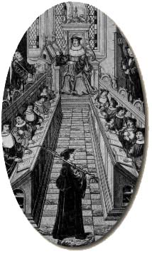
FIGURE VI
(Frère Roger, peut-être au milieu de ses pairs)Ce fut au milieu de ces tracasseries, de ces obstacles et de ces violences que Roger Bacon parvint à écrire l'Opus majus, qu'il fit porter au pape par un jeune homme nommé Jean, son disciple bien-aimé. Le pape se décida enfin à intervenir. Par ses ordres, Roger Bacon fut rendu à la liberté; il put revoir le pays natal, sa chère ville d'Oxford, et reprendre, avec son ami Thomas Bungey, l'exécution de ses vastes projets scientifiques. Malheureusement cette période de faveur et de liberté fut bien courte. Un an à peine s'était écoulé que Clément IV mourut et qu'on lui donna pour successeur un pape qui devait la tiare à l'influence du général des franciscains. Désormais privé de tout appui, Roger Bacon retomba sous le poids des préventions et des haines qu'il avait un instant conjurées. La persécution ne l'avait pas changé. Il continuait de parler et d'écrire, et à ses objections contre les philosophes en renom et les théologiens autorisés il joignait les attaques les plus hardies contre les légistes et les princes, contre les prélats et les ordres mendiants, osant même dénoncer l'ignorance et les mœurs dissolues du clergé et la corruption de la cour romaine. L'orage accumulé sur sa tête éclata en 1278. A saint Bonaventure, qui, en dépit de son surnom de docteur séraphique, n'avait pas été doux pour Roger Bacon, mais qui du moins portait dans le gouvernement quelque chose de l'élévation de son esprit et de la douceur relative de son caractère, venait de succéder Jérôme d'Ascoli, caractère énergique, étroit, inflexible. Jérôme vint à Paris tenir un chapitre général de l'ordre. On y fit d'abord comparaître le frère Pierre-Jean d'Olive, suspect de partager les erreurs de Jean de Parme et de l'Evangile éternel. Après lui, ce fut le tour de Roger Bacon. Nous ne savons rien de ce procès, sinon que défense fut faite d'embrasser les opinions du frère rebelle, et qu'il fut lui-même jeté en prison. En vain Roger s'adressa-t-il au pape Nicolas III. Jérôme l'avait prévenu auprès du saint-père, et les cris de détresse du malheureux franciscain furent étouffés. Cette nouvelle et plus terrible épreuve, sur laquelle tout détail nous manque, dura quatorze ans. Ce ne fut qu'en 1592, après la mort de Jérôme d'Ascoli (pape depuis 1288 sous le nom de Nicolas IV), que le nouveau général de l'ordre, Raymond Galfred ou Gaufredi, rendit à Roger Bacon la liberté. L'infortuné n'était plus en état d'en abuser; il avait près de quatre-vingts ans. Il s'éteignit peu de temps après à Oxford. Les haines qui l'avaient opprimé pendant sa vie s'acharnèrent sur ses écrits après sa mort. On cloua ses écrits sur des planches pour en empêcher la lecture et les laisser pourrir dans la poussière et l'humidité.
II.
Il ne faut point s'attendre à trouver dans l'Opus majus, ni dans aucun autre ouvrage de Roger Bacon, un système général de philosophie. Sous ce rapport, l'analogie est frappante entre le moine d'Oxford et son grand homonyme le chancelier d'Angleterre. Lisez le De Augmentis et le Novum Organum, vous y chercheriez vainement une nouvelle métaphysique; mais vous y trouverez une méthode et des vues supérieures sur la réforme de la philosophie et la constitution de l'esprit humain. Dans les écrits de Roger Bacon, vous ne trouverez aussi qu'une méthode et des vues générales; mais ce qui est prodigieux, c'est que le franciscain du XIIIe siècle préconise la même méthode et s'élève aux mêmes vues que le contemporain de Galilée et de Kepler. Il y a pourtant une différence notable entre les deux Bacon, et elle est toute à l'avantage de Roger. Le chancelier a été sans aucun doute un grand esprit, un grand promoteur; mais on ne peut nier qu'il ne lui ait manqué un don essentiel, celui qu'ont possédé au degré le plus élevé les Descartes et les Pascal : il lui a manqué ce don d'invention qui fait pénétrer le génie de l'homme dans les mystères de la nature. Bacon de Verulam n'a rien découvert de vraiment capital. Admirable quand il décrit la vraie méthode, quand il en célèbre les avantages et en prophétise les conquêtes, on dirait qu'il perd ses ailes dès qu'il veut entrer dans la sphère des applications. Il ne cesse pas d'être ingénieux et brillant; mais inventif avec grandeur, mais véritablement fécond, il ne l'est pas. Roger Bacon a plus de fécondité dans le génie. Ce n'est pas seulement un promoteur, c'est un inventeur. S'il n'a pas connu et décrit la méthode d'observation et d'induction avec cette netteté, cette suite, cette puissance qu'on ne peut assez admirer dans le dernier Bacon, on peut dire qu'il l'a maniée avec plus d'assiduité et de bonheur. Le génie du chancelier regarde la nature de haut; celui du franciscain vit avec elle dans un commerce intime et familier. Aussi lui a-t-elle confié quelques-uns de ses secrets. Transportez Roger Bacon au XVIe siècle : il eût été Kepler ou Galilée. Ajoutez enfin que Roger Bacon, sans avoir une grande originalité en métaphysique, est plus métaphysicien que Bacon de Verulam, qui ne l'est pas du tout. Il n'a pas inventé sans doute un système nouveau sur l'origine et la nature des choses; mais il a pris part aux grandes controverses métaphysiques de son temps, et là encore il a laissé des traces que l'histoire de l'esprit humain doit recueillir.
Ce qu'il y a peut-être de plus extraordinaire dans Roger Bacon, c'est le sentiment net et profond qu'il a eu des vices de la philosophie de son temps. Songez que nous sommes au XIIIe siècle. C'est l'âge d'or de la scolastique; c'est l'époque héroïque des grands docteurs, d'Alexandre de Halès, le docteur irréfragable, de saint Thomas d'Aquin, le docteur angélique, amenant à leur suite Duns Scot, le docteur subtil, Henri de Gand, le docteur solennel. On n'en est plus à l'Aristote de Boèce et aux combats un peu mesquins de la dialectique étroite du XIe siècle. L'horizon s'est élargi; tous les problèmes essentiels de la philosophie et de la théologie ont été soulevés; on vénère toujours Aristote, mais c'est l'Aristote des Arabes, non plus seulement le logicien de l'Organon, mais l'auteur du traité de l'Ame, de la Physique, de la Métaphysique et de l'Histoire des Animaux, Aristote psychologue, naturaliste, théologien. Voici saint Thomas, le maître des maîtres, qui, Aristote d'une main, la Bible de l'autre, se dispose à résumer tous les travaux de son siècle dans une encyclopédie gigantesque et à écrire pour l'instruction des âges futurs cette immortelle somme où tous les problèmes de la science et de la foi sont décomposés dans leurs éléments, régulièrement discutés, magistralement résolus, où la sagesse profane représentée par le philosophe contracte un mariage indissoluble avec la science sacrée, monument unique par l'ordre, la proportion, la grandeur de l'ensemble comme par la finesse, l'abondance et la précision des détails. Certes si jamais la science humaine a présenté l'image de l'éternel et du définitif, c'est au siècle de saint Thomas. Eh bien ! il y avait alors sous le froc de Saint-François un homme, un seul, qui n'était point dupe de ces magnifiques apparences, qui, scrutant les bases de l'édifice, en discernait, en touchait du doigt les parties fragiles et caduques. Et ce même homme, ébauchant dans sa pensée l'image prophétique d'un édifice plus vaste et plus solide, payait de sa personne et abordait vigoureusement l'exécution.
Roger Bacon élève contre la philosophie scolastique trois accusations capitales : elle est d'une crédulité aveugle pour l'autorité d'Aristote; elle est d'une insigne ignorance, puisqu'elle ne connaît de l'antiquité sacrée, ni l'antiquité profane, son Aristote même étant un Aristote controuvé; enfin, et c'est là son vice radical, elle se meut dans un cercle d'abstractions, étrangère au sentiment de la réalité et à la contemplation de la nature, par suite artificielle, subtile, disputeuse, pédantesque, enfermant l'esprit humain dans l'école, loin de la nature et des œuvres de Dieu. C'est bien là le fonds de la polémique victorieuse que la renaissance et l'âge moderne ont dirigée contre la scolastique. Les Bruno, les Campanella, les Ramus, Bacon de Verulam lui-même, ne porteront pas un regard plus pénétrant sur les vices de la philosophie du moyen âge. Ils lui feront le même procès. Seulement Bacon le franciscain a perdu ce procès contre son siècle pour avoir eu raison trop tôt, tandis que Bacon le chancelier l'a gagné, non pour avoir mieux plaidé, mais pour avoir trouvé des juges meilleurs. Rien n'égale la véhémence de Roger Bacon quand il proteste contre le joug d'Aristote. Quoi de plus arbitraire que de déclarer un certain jour que tel philosophe est infaillible ?« II y a un demi-siècle à peine, dit Roger, Aristote était suspect d'impiété et proscrit des écoles. Le voilà aujourd'hui érigé en maître souverain! Quel est son titre ? Il est savant, dit-on; soit, mais il n'a pas tout su. Il a fait ce qui était possible pour son temps, mais il n'est pas parvenu au terme de la sagesse. Avicenne a commis de graves erreurs, et Averroès prête à la critique sur plus d'un point. Les saints eux-mêmes ne sont pas infaillibles ; ils se sont souvent trompés, souvent rétractés, témoin saint Augustin, saint Jérôme et Origène (Compendium philosophiae, cap. I.). » — « Mais, dit l'école, il faut respecter les anciens. » — « Eh ! sans doute, les anciens sont vénérables, et il faut se montrer reconnaissant envers eux pour nous avoir frayé la route; mais on ne doit pas oublier que ces anciens furent hommes et qu'ils se sont trompés plus d'une fois : ils ont même commis d'autant plus d'erreurs qu'ils sont plus anciens, car les plus jeunes sont en réalité les plus vieux; les générations modernes doivent surpasser en lumières celles d'autrefois, puisqu'elles héritent de tous les travaux du passé. »
Ainsi parle un moine vers 1267. En recueillant aujourd'hui cette parole si neuve alors, si hardie et si ingénieuse : les plus Jeunes sont en réalité les plus vieux, ne croyez-vous pas entendre l'auteur du De Augmentis s'écrier : Antiquitas seculi juventus mundi (De Dignitate et Augmentis, 1381), ou l'auteur des Pensées comparer le genre humain à un homme unique qui ne meurt jamais et qui apprend et avance toujours ? Dans cette lutte commune contre Aristote, Roger Bacon a cet avantage sur les hommes de la renaissance et des temps modernes, qu'il a profondément étudié le grand philosophe dont il répudie la tyrannie, et qu'il rend pleine justice à ses travaux;
« Je pardonnerais, dit-il, plus volontiers l'abus qu'on fait d'Aristote, si ceux qui l'invoquent étaient en état de le comprendre et de l'apprécier: mais ce qui m'indigne, c'est qu'on célèbre Aristote sans l'avoir lu. »
Aussi bien ce n'est pas chose facile que de connaître la philosophie d'Aristote. On n'en possède que des parties souvent mutilées. Il y a beaucoup d'ouvrages d'un prix infini qu'on ne retrouve plus. Aristote n'avait-il pas écrit, au témoignage de Pline, un millier de volumes ? Il n'en reste qu'un petit nombre. L'Organon lui-même présente des lacunes.
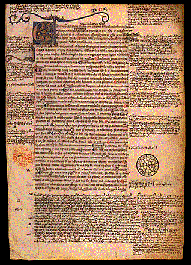
FIGURE VII
(L'Organon d'Aristote avec commentaires, XIIIe siècle
Parchemin, Paris, fin XIIIe Paris, BnF)
L'original de l'Histoire des animaux avait cinquante livres; les exemplaires latins n'en contiennent que dix-neuf. On n'a conservé que dix livres de la Métaphysique, et dans la traduction la plus répandue il manque une foule de chapitres et une infinité de lignes. Quant aux sciences qui traitent des secrets de la nature, on n'en a que de misérables fragments. Maintenant ces fragments épars de l'œuvre immense d'Aristote, est-on capable de les comprendre ? On les lit, mais non pas dans l'original, qu'on ne connaît pas. On s'en rapporte aux versions latines. Or quoi de plus indigne de confiance que les traducteurs latins d'Aristote ? C'est d'abord Michel Scot, qui, ne sachant pas le grec, s'est servi d'un Juif espagnol nommé Andréas; c'est Gérard de Crémone, qui ne sait ni le latin ni le grec et ne comprend rien à ses propres versions; c'est Hermann l'Allemand, qui a avoué ne pas avoir osé traduire la Poétique d'Aristote, parce qu'il ne l'entendait pas; c'est Guillaume de Morbecke, le plus ignorant de tous, bien qu'il soit aujourd'hui florissant et fournisse de traductions son ami Thomas d'Aquin. Ainsi cet Aristote dont on fait l'incarnation de toute sagesse humaine et qu'on prétend mettre d'accord avec la sagesse divine, on ne le connaît pas ! Connaît-on mieux la sagesse divine elle-même, l'antiquité sacrée ? Pas davantage. Et pourquoi cela ? C'est qu'on ne sait pas plus l'hébreu que le grec. Parmi les textes sacrés, les uns sont mal traduits, les autres font absolument défaut : il nous manque deux livres des Machabées; nous n'avons plus les écrits d'Origène, de saint Basile, de saint Grégoire de Nazianze. D'un autre côté, les livres saints sont pleins d'obscurités, et saint Jérôme lui-même ne les a pas toujours bien compris. Que faut-il faire ? Au lieu de défigurer la Bible de plus en plus, et de la mettre en méchants vers dont on charge la mémoire des enfants, il faut instituer dans les écoles une étude sérieuse de la grammaire et des langues. Et quand on aura formé des lecteurs capables d'entendre les textes, il faudra se mettre en quête de découvrir les monuments que nous avons perdus. Pourquoi les prélats et les riches n'enverraient-ils pas des savants en Italie et dans l'Orient pour y recueillir des manuscrits grecs ? Pourquoi ne pas imiter le saint évêque de Lincoln, Robert Grosse-Tête, qui a chargé à grands frais nombre de personnes instruites d'aller à la recherche des monuments de l'antiquité profane et de l'antiquité sacrée ? Ne serait-ce pas là un digne objet de la sollicitude du saint-siège ? Les infidèles à convertir par des missionnaires qui parleraient leur langue, l'église grecque à réconcilier, quelle magnifique perspective, sans parler des avantages de cette connaissance des langues pour le commerce et l'amitié des nations ! Il faut donc introduire dans l'éducation commune les quatre langues philosophiques, c'est-à-dire le grec, l'hébreu, l'arabe et le
chaldéen. C'est de là que sont venues toutes les sciences; voilà les ancêtres dont nous sommes les fils et les héritiers. Dieu donne la sagesse à qui il lui plaît; il ne lui a pas convenu de la donner aux Latins, et la philosophie n'a été achevée que trois fois depuis le commencement du monde : chez les Hébreux, chez les Grecs et chez les Arabes (Opus tertium, cap. X, manuscrit de Douai.). Qui parle de la sorte ? qui célèbre avec cet enthousiasme et cette véhémence l'étude de la langue grecque et des langues orientales, l'épuration des monuments, la critique des textes fondée sur une philologie exacte et sur une érudition universelle ? Ne vous sentez-vous pas transportés à l'école de Florence auprès des Médicis, dans la société de Marsile Ficin, de Pic de La Mirandole, de Politien, ou même en plein collège de France, au temps de Turnèbe et de Budé ? Comme ces grands rénovateurs de l'esprit humain, Roger Bacon est plein d'enthousiasme pour la belle et noble antiquité. C'est au point qu'il va, lui chrétien sincère et moine de vocation et de mœurs, jusqu'à placer les moralistes de la Grèce au-dessus des docteurs de l'école.« Il est étrange que nous, chrétiens, nous soyons sans comparaison inférieurs dans la morale aux philosophes anciens. Qu'on lise les dix livres de l'Ethique d'Aristote, les traités innombrables de Sénèque, de Cicéron et de tant d'autres, et nous verrons que nous sommes dans l'abîme des vices, et que la grâce de Dieu peut seule nous sauver. Le zèle de la chasteté, de la douceur, de la paix, de la constance et de toutes les vertus fut grand chez les philosophes, et il n'y a pas un homme assez absurdement entiché de ses vices qui n'y renonçât sur-le-champ, s'il lisait leurs ouvrages, tant sont éloquents leurs éloges de la vertu et leurs invectives contre le vice ! Le pire de tous les vices, c'est la colère, qui détruit tous les hommes et l'univers entier; eh bien ! l'homme le plus emporté, s'il lisait avec soin les trois livres de Sénèque, rougirait de s'irriter (Opus tertium, cap, XIV). »

FIGURE VIII
(portrait présumé de Roger Bacon)Roger Bacon a pour Sénèque un goût particulier. Il ne peut le louer assez d'avoir recommandé de faire chaque soir son examen de conscience. Voilà, dit-il, un admirable argument pour la morale ! Un païen, sans les lumières de la grâce et de la foi, est arrivé là, conduit par la seule force de sa raison (Ibid., cap. LXXV, manuscrit de Douai, fol. 82.). Mais si l'étude des anciens faite avec Indépendance et éclairée par l'érudition et la critique est une étude féconde, il en est une bien plus féconde encore et bien plus nécessaire : c'est l'étude sans laquelle toutes les autres sont vaines, l'étude de la nature, la contemplation directe des œuvres de Dieu. Nous touchons ici au vice mortel de la philosophie des écoles. Elle se consume en vaines disputes; elle s'aiguise, se raffine et se confond en subtilités; elle ignore la vie. Il n'y a qu'un remède à ce mal, c'est de constituer les sciences expérimentales. Ici Roger Bacon trace des pages mémorables, qui, à quatre siècles d'intervalle, annoncent tour à tour le Novum Organum et le Discours de la Méthode. Voici d'abord quelques pensées détachées, qui tiendraient fort bien leur place parmi les meilleurs aphorismes de lord Verulam.
« J'appelle science expérimentale celle qui néglige les argumentations, car les plus forts arguments ne prouvent rien, tant que les conclusions ne sont pas vérifiées par l'expérience. »
« La science expérimentale ne reçoit pas la vérité des mains de sciences supérieures; c'est elle qui est la maîtresse, et les autres sciences sont ses servantes. »
« Elle a le droit en effet de commander à toutes les sciences, puisqu'elle seule certifie et consacre leurs résultats. »
« La science expérimentale est donc la reine des sciences et le terme de toute spéculation (Opus tertium, dans le manuscrit de Douai.). »
Ce ne sont là que des aperçus rapides et comme des éclairs de génie. Voici des pensées plus suivies et d'un plus large développement :
« Dans toute recherche, il faut employer la meilleure méthode possible. Or cette méthode consiste à étudier dans leur ordre nécessaire les parties de la science, à placer au premier rang ce qui réellement doit se trouver au commencement, le plus facile avant le plus difficile, le général avant le particulier, le simple avant le composé; il faut encore choisir pour l'étude les objets les plus utiles en raison de la brièveté de la vie ; il faut enfin exposer la science avec toute certitude et toute clarté, sans mélange de doute et d'obscurité. Or tout cela est impossible sans l'expérience, car nous avons bien divers moyens de connaître, c'est-à-dire l'autorité, le raisonnement et l'expérience; mais l'autorité n'a pas de valeur, si on n'en rend compte, non sapit nisi detur ejus ratio; elle ne fait rien comprendre, elle fait seulement croire; elle s'impose à l'esprit sans l'éclairer. Quant au raisonnement, on ne peut distinguer le sophisme de la démonstration qu'en vérifiant la conclusion par l'expérience et par la pratique. »
Page vraiment admirable! Cette fière indépendance, cette haine de l'obscurité, ce besoin d'idées claires et distinctes, cet amour de l'ordre et de la simplicité, ne sont-ce pas les traits distinctifs du Discours de la Méthode et les propres expressions de Descartes ? Roger Bacon distingue, comme fera plus tard le Novum Organum, deux sortes d'observations : l'une passive et vulgaire, et l'autre active et savante. A celle-là seulement convient le nom d'expérience.
« II y a une expérience naturelle et imparfaite, dit-il, qui n'a pas conscience de sa puissance, qui ne se rend pas compte de ses procédés, qui est à l'usage des artisans et non des savants. Au-dessus d'elle, au-dessus de toutes les sciences spéculatives et de tous les arts, il y a l'art de faire des expériences qui ne soient pas débiles et incomplètes (Ibid., cap. XIII.). »
Mais à quelle condition l'expérience atteindra-t-elle à des résultats précis, elle qui opère toujours sûr des phénomènes fugitifs et changeants ? A la condition d'appeler à son secours les instruments de précision, et le premier de tous, le calcul.
« Les physiciens doivent savoir, dit Roger Bacon, que leur science est impuissante, s'ils n'y appliquent le pouvoir des mathématiques, sans lesquelles l'observation languit et n'est capable d'aucune certitude (Opus majus, édition de Jebb, p. 199.). »
Bacon s'était lui-même engagé si avant dans cette voie neuve et hardie, que dans un traité de multipllcatione specierum qui lui avait coûté, dit-il, dix ans de travail, il avait essayé l'œuvre réservée à Descartes et à Newton, la réduction de toutes les actions réciproques des corps à des lois mathématiques. Armée de l'expérience et du calcul, la science pourra s'élever au-dessus des faits, car les faits en eux-mêmes ne sont pas l'objet de la science. Les faits peuvent avoir leur utilité, mais la science vise plus haut que l'utile : elle aspire au vrai. Elle ne se contente pas de faits, elle veut saisir des lois, des causes, canones, universales regulae.
« Si Aristote prétend, au deuxième livre de la Métaphysique, que la connaissance des raisons et des causes surpasse l'expérience, il parle d'une expérience inférieure. Celle que j'ai en vue s'étend jusqu'à la cause, et la découvre à l'aide de l'observation. Alors seulement l'esprit est satisfait; toute incertitude a disparu, et le philosophe se repose dans l'intuition de la vérité (De Cœlestibus,cap. I, manuscrit de la Mazarine.). »
Les lois de la nature découvertes, la spéculation a terminé son ouvrage; c'est à la pratique de commencer le sien. Ici, nous l'avouerons, l'ardente imagination de Roger Bacon l'emporte au-delà du raisonnable et du possible. Comme il ne connaît pas de limites à la science de l'homme, il n'en met pas à son pouvoir. Aucune force dans la nature n'est si cachée que l'esprit de l'homme ne puisse l'atteindre, et sa volonté la maîtriser. L'univers connu, c'est l'univers conquis.
« On fabriquera des instruments pour naviguer sans le secours des rameurs et faire voguer les plus grands vaisseaux, avec un seul homme pour les conduire, plus vite que s'ils étaient pleins de matelots; des voitures qui rouleront avec une vitesse inimaginable sans aucun attelage; des instruments pour voler, au milieu desquels l'homme assis fera mouvoir quelque ressort qui mettra en branle des ailes artificielles battant l'air comme celles des oiseaux; un petit instrument de la longueur de trois doigts et d'une hauteur égale pouvant servir à élever ou abaisser sans fatigue des poids incroyables. On pourra, avec son aide, s'enlever avec ses amis du fond d'un cachot au plus haut des airs, et descendre à terre à son gré. Un autre instrument servira pour traîner tout objet résistant sur un terrain uni, et permettre à un seul homme d'entraîner mille personnes contre leur volonté; il y aura un appareil pour marcher au fond de la mer et des fleuves sans aucun danger, des instruments pour nager et rester sous l'eau, des ponts sur les rivières sans piles ni colonnes, enfin toute sortes de mécaniques et d'appareils merveilleux ( Les traits de ce tableau sont tirés du traité De Mirabili et d'un fragment inédit du Traité de Mathématiques.). »
Que le lecteur moderne se garde d'être trop sévère pour ces promesses brillantes où quelques chimères se mêlent à plus d'une espérance prophétique. Ni Kepler, ni Descartes, ni Leibnitz lui-même ne se sont préservés d'un peu d'illusion, et peut-être est-il nécessaire, même aux hommes supérieurs, pour atteindre un but proportionné aux forces humaines, de viser plus haut et de prendre leur élan vers l'inaccessible et l'infini.
III.
Parmi les découvertes innombrables (je parle de découvertes proprement scientifiques) dont une critique peu sévère, depuis Wood jusqu'à M. Pierre Leroux, fait honneur à Roger Bacon, quelles sont celles qui lui appartiennent d'une manière authentique ? Question délicate et compliquée sur laquelle les nouveaux documents pourront fournir plus d'une information précieuse, mais que nous toucherons d'une main discrète, laissant aux juges spéciaux et compétents le soin de la discuter. Le titre scientifique le plus certain de Roger Bacon, c'est la réforme du calendrier. Il est aujourd'hui incontestable que le moine franciscain a proposé à Clément IV cette réforme, sollicitée aussi par Copernic, et qui ne s'est accomplie que sous Grégoire XIII, en 1582.
« Les défauts du calendrier, dit Roger Bacon, sont devenus intolérables au sage et font horreur à l'astronome. Depuis le temps de Jules César, et malgré les corrections qu'ont essayées le concile de Nicée, Eusèbe, Victorinus, Cyrillus, Bède, les erreurs n'ont fait que s'aggraver; elles ont leur origine dans l'évaluation de l'année, que César estime être de trois cent soixante-cinq jours et un quart, ce qui tous les quatre ans amène l'intercalation d'un jour entier; mais cette évaluation est exagérée, et l'astronomie nous donne le moyen de savoir que la longueur de l'année solaire est moindre d'un cent-trentième de jour (environ onze minutes); de là vient qu'au bout de cent trente années (Rigoureusement cent vingt-huit.) on a compté un jour de trop, et cette erreur se trouverait redressée si on retranchait un jour après cette période. »
« L'église, continue Roger Bacon, avait d'abord fixé l'équinoxe du printemps au 25 mars, et maintenant au 21; mais l'équinoxe n'arrive pas à cette date. Cette année (Roger écrivait en 1207), l'équinoxe du printemps a eu lieu le 13 mars, et tous les 125 ans environ 11 avancera d'un jour. L'église se trompa d'ailleurs dès le principe; 14O ans après l'incarnation, Ptolémée trouvait que l'équinoxe du printemps avait lieu le 22 mars; il y a de cela 1127 ans. Aujourd'hui il a lieu le 13, c'est-à-dire neuf jours plus tôt, et en divisant 1267 par 9, on obtient 124, qui est le nombre d'années au bout duquel les équinoxes avancent d'un jour. L'église prétend que le solstice d'hiver tombait le jour de la nativité de Jésus-Christ, le 25 décembre : c'est une erreur, la vérification de Ptolémée l'ayant fixé en l'an 14O au 22, il ne pouvait être, en l'an premier, qu'un peu plus d'un jour en retard, c'est-à-dire du 23 au 24. L'équinoxe du printemps ne pouvait être non, plus, en l'an premier, le 25 mars, puisque Ptolémée l'a fixé, pour l'an 14O, au 22 de ce même mois; encore moins peut-il être, comme on le compte aujourd'hui, le 21, d'après l'usage de l'église; en réalité il vient le 13 à peu près, puisqu'en 124 ans il avance d'un jour. Donc d'abord les équinoxes ne sont pas fixes, et puis ils n'arrivent pas aux jours indiqués par l'église.»
Les erreurs qui concernent les lunaisons ne sont pas relevées par Roger Bacon avec moins de sagacité et d'exactitude.
« Le calendrier actuel, dit-il, indique mal les nouvelles lunes; en 76 ans, la nouvelle lune avance sur l'époque fixée par le calendrier de 6 heures 40 minutes (Plus exactement de 6 heures 8 minutes.); au bout de 356 ans, l'erreur sera d'un jour entier. »
En ajoutant d'autres erreurs à celle-là, Roger Bacon arrive à ce résultat qu'après 4266 ans la lune sera pleine dans le ciel et nouvelle sur le calendrier, et il conclut en adressant au pape cette énergique et éloquente adjuration :
« Une réforme est nécessaire; toutes les personnes instruites dans le comput et l'astronomie le savent et se raillent de l'ignorance des prélats, qui maintiennent l'état actuel. Les philosophes infidèles, arabes et hébreux, les Grecs qui habitent parmi les chrétiens, comme en Espagne, en Egypte et dans les contrées de l'Orient, et ailleurs encore, ont horreur de la stupidité dont font preuve les chrétiens dans leur chronologie et la célébration de leurs solennités. Et cependant les chrétiens ont maintenant assez de connaissances astronomiques pour s'appuyer sur une base certaine. Que votre révérence donne des ordres, et vous trouverez des hommes qui sauront remédier à ces défauts, à ceux dont j'ai parlé et à d'autres encore (car il y en a treize en tout), sans compter leurs ramifications infinies. Si cette œuvre glorieuse s'accomplissait du temps de votre sainteté, on verrait s'achever une des entreprises les plus grandes, les meilleures et les plus belles qui jamais aient été tentées dans l'église de Dieu. »
Roger Bacon ne réduit pas ses vues astronomiques à la question particulière du calendrier. Il attaque sur tous les points le système de Ptolémée, et, ce qui est fort à son honneur, il l'attaque à l'endroit même qui devait attirer le regard sévère de Copernic et susciter le nouveau système du monde. Le cosmos de Ptolémée, avec ses emboîtements infinis, avec ses excentriques et ses épicycles, lui paraît artificiel, compliqué, trop asservi aux apparences des sens et infiniment éloigné de la simplicité de la nature. Si en astronomie Roger Bacon annonce Copernic, l'on peut dire qu'en optique il prépare Newton. A la vérité, les travaux des Arabes dans l'une et l'autre science, particulièrement ceux d'Alpetragius et d'Alhasen, lui ont beaucoup servi; mais il a le mérite, éminent pour l'époque, d'avoir décrit le mécanisme délicat et compliqué de l'œil avec une rare précision et soupçonné l'action de la rétine. Ce n'est pas non plus un faible service d'avoir soutenu contre Aristote que la propagation de la lumière n'est pas instantanée
(M. de Humboldt ayant attribué l'honneur de cette découverte à Bacon de Verulam (Cosmos, t. III, p. 86), je citerai le texte de Roger Bacon : « Tous les auteurs, dit-il, y compris Aristote, prétendent que la propagation de la lumière est instantanée; la vérité est qu'elle s'effectue dans un temps très court, mais mesurable. » (Opus Majus, p. 298 et 300.)),
et que la lumière des étoiles leur appartient en propre et ne leur vient pas du soleil, enfin d'avoir essayé de rendre compte de la scintillation stellaire et d'expliquer le phénomène si curieux, et encore si discuté, des étoiles filantes. A son avis, ces météores ne sont pas de véritables étoiles, mais des corps relativement assez petits, corpora parva quantitatis, qui traversent notre atmosphère et s'enflamment par la rapidité même de leur mouvement. En fait d'optique, on a attribué à Roger Bacon l'invention des verres de lunette, celle du microscope et du télescope. On voit en effet dans le préambule de l'Opus tertium qu'en envoyant son ouvrage à Clément IV, Roger avait chargé Jean, son élève chéri, de remettre au saint-père une lentille de cristal
(« Puer vero Johannes portavit crystallum sphaericum ad experiendum, et instruxi eum ln demonstratione et figuratione hujus rei occultae. » Opus tertium, ch. xxxi du manuscrit de Douai. Comparez pages 110 et 111 de la grande édition de Londres, dirigée Par M. J.-S. Brewer, Londres, 1859.) ;
mais cette indication est vague. Ce qui est hors de contestation, c'est que Roger avait étudié de près le phénomène des réfractions, particulièrement celle qui concourt à produire l'arc-en-ciel, et cherché la loi de déviation des rayons lumineux passant à travers l'atmosphère. Sa part d'invention en chimie n'est pas aussi facile à démêler (Voyez les intéressantes leçons de philosophie chimique données au Collège de France par M. Dumas.). A-t-il découvert le phosphore, le manganèse, le bismuth ? A-t-il inventé la poudre à canon ? La formule chimique en est certainement dans ses écrits; mais peut-être l'avait-il empruntée aux Arabes, ainsi que beaucoup d'autres recettes et observations. Les hommes du métier savent d'ailleurs qu'entre une observation de détail même heureuse, une formule chimique même exacte, un pressentiment même divinateur, entre tout cela et une véritable découverte scientifique il y a une différence infinie. Le fait est qu'en cherchant peu philosophiquement l'introuvable pierre philosophale, les alchimistes ont rencontré beaucoup de vérités qu'ils ne cherchaient pas. Roger Bacon est plus souvent un alchimiste et un astrologue qu'un véritable astronome et un chimiste digne de ce nom. Il croit à la transmutation des métaux et à l'influence des conjonctions célestes sur les événements humains. Les Arabes lui ont assuré qu'Artéphius avait vécu mille vingt-cinq ans, et que l'élixir chimique ferait vivre plus longtemps encore. Il donne des électuaires où entrent l'or potable, des herbes, des fleurs, du spermaceti, de l'aloès, de la chair de serpent, etc. Alchimiste et astrologue, il ne lui manquait rien pour être un magnétiseur. Je trouve en effet dans Roger Bacon cette grande découverte du XVIIIe siècle, le magnétisme animal, de sorte que s'il a la gloire d'avoir fait pressentir tantôt Copernic, tantôt Descartes, tantôt Newton, il n'a pas échappé au malheur de devancer Mesmer.
« L'âme, dit-il, agit sur le corps, et son acte principal, c'est la parole. Or la parole, proférée avec une pensée profonde, une volonté droite, un grand désir et une forte conscience, conserve en elle-même la puissance que l'âme lui a communiquée et la porte à l'extérieur; c'est l'âme qui agit par elle et sur les forces physiques et sur les autres âmes, qui s'inclinent au gré de l'opérateur. La nature obéit à la pensée, et les actes de l'homme ont une énergie irrésistible. Voilà en quoi consistent les caractères, les charmes et les sortilèges; voilà aussi l'explication des miracles et des prophéties, qui ne sont que des faits naturels. Une âme pure et sans péché peut par là commander aux éléments et changer l'ordre du monde; c'est pourquoi les saints ont fait tant de prodiges (Opus majus, p. 251. Comp. Opus tertium, cap. 27.). »
II faut pardonner à Roger Racon, qui a devancé de trois siècles les grandes vues des temps modernes, de ressembler par plus d'un mauvais côté aux génies aventureux du XVIe siècle. J'avoue qu'il a des traits de Cardan et de Paracelse; mais il est plus juste de le rapprocher de Kepler. Comme ce grand astronome, il associe les calculs précis et les vues de génie avec les caprices d'une imagination exaltée. Comme lui encore, et je retrouve cette faiblesse dans quelques contemporains, disciples un peu attardés de l'ingénieuse et chimérique renaissance, il introduit les mathématiques dans les choses religieuses et morales, expliquant la trinité par la géométrie et voyant entre l'effusion de la grâce et celle des rayons lumineux les plus belles analogies. Ce qui rachète ces écarts, c'est une sincérité, une candeur, une naïveté parfaites. La source où Roger Bacon puise son ardeur, ce n'est pas le fol orgueil d'étonner le vulgaire, ou la convoitise des biens matériels; non, c'est la noble ambition de comprendre et de coordonner toutes les parties de l'immense vérité, et de rendre la vérité elle-même secourante et bienfaisante au genre humain.
IV.
Promoteur de la vraie méthode, inventeur dans les sciences, Roger Bacon est-il aussi un métaphysicien original ? C'est ce que nous laisserait croire volontiers M. Emile Charles, qui a le mérite d'avoir étudié le premier sur l'ensemble des manuscrits cette face du génie de Bacon signalée par M. Cousin, mais encore mal connue et quelque peu incertaine. Nous n'avons nulle peine à comprendre chez M. Charles quelque excès de complaisance et de faveur; mais nous lui demandons la permission de ne nous y associer que dans une certaine mesure. Roger Bacon, je le reconnais, n'est pas un pur savant, personne ne ressemble moins que lui à ce qu'on appelle aujourd'hui un homme spécial; les grandes controverses métaphysiques de son temps l'ont occupé, cela est notable, cela est intéressant, cela complète la figure du personnage. Il importe par conséquent à l'histoire de la philosophie de rechercher ses opinions sur la matière et la forme, sur le principe de l'individuation, sur les espèces sensibles et les espèces intelligibles, et c'est ce que fait M. Charles avec une grande abondance d'informations, un choix curieux de textes courageusement recueillis. Mais Roger Bacon est-il un métaphysicien vraiment original, égal ou supérieur à ses contemporains Albert le Grand et saint Thomas d'Aquin ? M. Charles ose l'affirmer, sauf quelquefois à s'en dédire. Je le crois plus près de la vérité quand il s'en dédit. Le docte interprète de Roger Bacon pose fort bien le problème métaphysique de la substance : il le pose dans les termes mêmes ou le XIIIe siècle le posa, c'est-à-dire en partant de la distinction de la matière et de la forme; mais à peine M. Charles a-t-il indiqué un peu superficiellement cette distinction célèbre établie par Aristote, qu'il se hâte de déclarer qu'elle n'a pour lui qu'une valeur logique. A son avis, dans la réalité des choses, l'idée de la substance est une idée simple. Voilà qui aurait mérité d'être éclairci et prouvé. Après avoir posé la question de la matière et de la forme, M. Charles pense que la solution qu'en a donnée Bacon est certainement la plus originale du siècle, puis, tout en maintenant ce grand éloge, il l'explique en disant que le principal mérite des idées de Bacon sur la substance, c'est d'être le plus négatives possible, car, ajoute le savant auteur, la meilleure théorie de la matière et de la forme, c'est celle de Descartes, qui supprime le problème. Descartes a-t-il en effet supprimé le problème, et le plus grand philosophe du monde peut-il supprimer un problème qui. a sa racine dans la nature des choses et dans la constitution de l'esprit humain ? Ce n'est pas à la légère que le génie profondément pénétrant d'Aristote avait imposé à qui veut pénétrer la nature intime d'un être quelconque ces deux questions : quelle est la substance de cet être, c'est-à-dire le fond, la base, le sujet de ses attributs et de ses modes ? et puis quelle est l'essence de cet être, c'est-à-dire son attribut distinctif, caractéristique ? La substance, c'est ce qu'Aristote appelle la matière; l'essence, c'est ce qu'il nomme la forme. Il est clair que le problème est parfaitement sérieux et absolument inévitable à moins de supprimer la métaphysique, moyen de simplification très à la mode aujourd'hui, mais qui n'était pas à l'usage de Descartes.
Même quand il ne s'agit que d'expliquer le monde corporel, Descartes trouve devant lui le problème de la matière et de la forme, et il le résout en imaginant une étendue indéfinie, mobile, figurable et divisible, matière première qui devient toute espèce de corps en recevant une figure et un mouvement déterminés. Ainsi Descartes a eu beau faire, il n'a pu supprimer le problème, et s'il l'avait en effet écarté entièrement, il n'eût pas été un grand métaphysicien. Comment donc Roger Bacon peut-il avoir droit à être proclamé l'auteur de la doctrine la plus originale sur la substance qui ait paru au XIIIe siècle, s'il s'est borné à écarter un problème inévitable ? Il faudrait, pour justifier cet éloge, que vous démontrassiez, soit à l'aide de Bacon, soit par de nouveaux raisonnements, que le problème de la matière et de la forme n'existe réellement pas.
Et j'en dirai autant d'un autre problème étroitement lié à celui-là, et fort agité au moyen âge, le problème de l'individuation ou de l'individualité. Ces deux questions ont l'air d'être nouvelles au temps de saint Thomas et de Duns Scot. Ce sont les mots qui trompent. L'esprit humain est ingénieux: quand on dédaigne un problème métaphysique sous une certaine forme pédantesque et vieillie, il feint de quitter la partie et de faire acte de modestie; puis il invente subtilement des formules nouvelles sous lesquelles se cache, le problème éconduit, et voilà les métaphysiciens qui se remettent à l'ouvrage et les générations nouvelles qui se passionnent pour leurs systèmes et leurs combats. Je crains que M. Charles n'ait pas démêlé que le problème de l'individualité n'est autre que le problème de la matière et de la forme, lequel n'est qu'un aspect du problème éternel des réalistes et des nominaux. Mais voyons un peu ce que dit Roger Bacon sur la matière et la forme. M. Charles admire la clarté de sa théorie. C'est ne pas être difficile en fait de clarté. Ce que j'entrevois pour ma part dans cette doctrine obscure et indécise, c'est d'abord que tout individu réel, esprit ou corps, corps brut ou corps vivant, esprit humain ou esprit angélique, en tant qu'il est réel, en tant qu'il est une substance, possède matière et forme, c'est-à-dire peut être envisagé par la raison sous le point de vue de l'indétermination ou de la possibilité, ou sous celui de la détermination et de l'actualité. Il y a donc matière spirituelle et matière corporelle, matière angélique et matière humaine. Il n'est donc pas vrai que la forme soit le principe unique de la différence des êtres, ni que la matière soit, chez l'homme, le principe de l'individuation.
Cette théorie paraît plaire beaucoup à l'historien de Roger Bacon; j'aurais voulu mieux comprendre ses motifs d'admiration. Il dit qu'elle a l'avantage de faire comprendre l'existence des lois générales de la nature, tandis que les autres doctrines rendent ces lois impossibles. Ceci est tout simplement une contre-vérité, car avec la théorie de Roger Bacon, chaque individu ayant sa matière propre et sa forme propre, je ne vois plus quel rapport d'analogie il peut avoir avec d'autres individus. Au contraire, chez saint Thomas par exemple, la forme ou l'essence humaine étant identique dans tous les hommes, cela explique les lois générales'du genre humain. Quant aux Individus, ils trouvent dans la substance ou dans la matière leur principe d'individuation. Ou bien, si l'on admet que tous les êtres finis sortent d'une commune matière, voilà encore l'explication des lois générales, car alors la matière est le principe des analogies, et la forme le principe des différences. M. Charles prétend que Roger Bacon a un autre avantage, celui d'éviter les formes séparées du docteur angélique, conception en effet fort bizarre et fort périlleuse, sans parler de toutes les difficultés attachées à cette fameuse théorie thomiste de l'individualité humaine, qui rend la séparation de l'âme et du corps impossible. Soit; mais à la place de ces inconvénients il y en a d'autres. Comment Roger Bacon expliquerait-il l'union de l'âme et du corps, si l'âme et le corps, ayant chacun leur matière et leur forme spéciales, constituent par là même deux êtres
profondément séparés, sans analogie réelle et sans union concevable ? Et pour ne pas insister sur mille autres difficultés, le moyen, je le demande à Roger Bacon et à son habile interprète, le moyen de comprendre l'immutabilité de Dieu, si Dieu même a une matière en tant qu'il est substance ? Je ne vois donc pas que Roger Bacon mérite le brevet d'originalité métaphysique qu'on veut lui donner Roger Bacon se trompe en voulant supprimer un problème qui est inhérent à la métaphysique; puis, au lieu de le supprimer, il adopte une solution particulière, sujette à mille objections. Il y a un passage notable, de Roger Bacon sur l'universel qui me paraît être en pleine contradiction avec la théorie que son historien lui attribue sur la matière et la forme :« II y a des sophistes, dit Roger (Extrait du de Communibus naturalium, troisième partie de l'Opus tertium, d'après le manuscrit de la Mazarine.), qui veulent montrer que l'universel n'est rien, ni dans l'âme, ni dans les choses, et s'appuient sur des visions comme celle-ci : que tout ce qu'il y a dans le singulier est singulier. Suivant eux, l'universel n'est rien dans les choses, et le seul rapport entre les objets individuels consiste dans l'analogie, et non dans la participation à une nature commune ; entre un homme et un autre homme, il n'y a d'autre rapport qu'une analogie... »
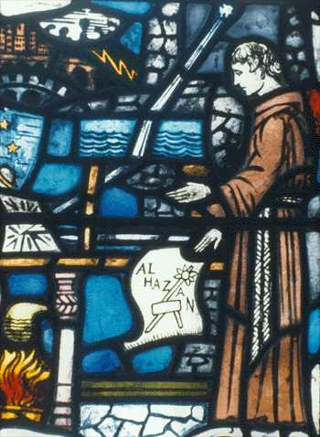
FIGURE VIII
(vitrail de l'Irish Windows Room in the Bapst Library)Voilà bien là la doctrine de l'universel, telle qu'elle résulterait des principes de Roger Bacon sur la matière et la forme; cette doctrine est bien connue : c'est le nominalisme. Après lui avoir donné des gages, Roger la combat et distingue dans l'individu deux sortes de caractères, les uns absolus et individuels, les autres relatifs, résultant des rapports de cet individu avec tous ceux qui lui sont unis par une nature commune, par exemple l'humanité. Mais s'il en est ainsi, si Socrate et Platon, outre leur nature individuelle, participent à une nature commune, il n'est plus vrai que tout être ait sa matière propre et sa forme propre. Il faut que soit la matière, soit la forme aient un caractère général, et alors qu'il'y ait entre la matière et la forme autre chose qu'une différence parement logique et artificielle. Je m'étonne qu'un esprit aussi pénétrant que M. Charles n'ait pas vu cette contradiction. Il félicite Roger Bacon d'avoir écarté le problème de l'individuation et d'avoir presque dit, comme plus tard Okkam : Et ideo non est quaerenda causa individuationis. C'est facile à dire, et au surplus je conçois Okkam se moquant des haeccéités de Duns Scott, le magister abstractionum, et des universaux du réalisme. Il n'admet, lui, que des individus ou plutôt que des phénomènes, doctrine très simple, j'en conviens, très commode surtout, et que des hommes d'esprit, fils déguisés de Condillac, nous donnent aujourd'hui pour le dernier mot de la science hégélienne ; mais nier la substance, ce n'est pas en écarter le problème : c'est le résoudre dans le sens du scepticisme absolu. Ainsi, d'aucune façon, je ne puis souscrire à la prétendue originalité de la doctrine de Roger Bacon, soit sur la matière et la forme, soit sur l'universel, soit sur l'individuation. J'accorderai que Roger Bacon, tout enclin qu'il fût par vocation et par génie à s'adonner avec passion aux sciences, a eu ce rare mérite d'avoir compris l'importance de la métaphysique. J'accorderai qu'il applique à ces matières un goût de simplicité et une force de bon sens qui l'inspirent quelquefois très heureusement, comme lorsqu'il rejette cet intermédiaire inutile que la scholastique établissait entre l'esprit et ses objets sous le nom d'espèces sensibles et intelligibles.
C'est fort bien fait de souffler sur les fantômes de l'abstraction, mais à la condition de ne point aller jusqu'à la négation des problèmes inévitables et des réalités certaines. Roger Bacon incline au nominalisme, mais il y incline sans le savoir. Il n'a pas sur ce point la hardiesse et la netteté de Roscelin, ni la finesse ingénieuse d'Abélard; c'est un nominaliste indécis, et la preuve qu'il n'a pas pleinement conscience de la portée de ses systèmes, c'est qu'il est en théologie d'une orthodoxie parfaite, vraiment moine par ce côté, et moine du XIIIe siècle, mettant la foi par-dessus tout, acceptant tous les mystères avec humilité, et par surcroît la suprématie du pape et la supériorité du droit canonique sur le droit civil. Que nous sommes loin de la logique d'un Okkam ! Cette médiocrité du sens métaphysique chez Roger Bacon, jointe à cette exacte orthodoxie théologique, achève de le caractériser et de le mettre en un juste rapport avec son siècle et avec les siècles qui ont suivi. A un premier aperçu, celui qui ne songerait qu'aux persécutions qu'il a subies dans son ordre pourrait le prendre pour un moine en pleine révolte, comme aussi, à ne regarder qu'à la hardiesse de certaines vues, on serait tenté de voir en lui un libre penseur, un libertin. Ce serait se tromper dans les deux cas. Roger Bacon n'est point un Luther ni un Bruno. Au milieu de ses élans les plus audacieux vers l'avenir, il reste un franciscain contemporain de saint Bonaventure. Cela est tout simple, on est toujours de son. siècle par quelque endroit. Supposer un homme qui n'aurait avec ses contemporains aucun point de ressemblance, c'est supposer plus qu'un prodige, c'est imaginer un monstre, une apparition inexplicable et inutile. Roger Bacon a subi, et, qui plus est, librement accepté les conditions organiques de la vie morale au XIIIe siècle. Il s'est fait moine par vocation, et il est resté moine dans le fond le plus intime de ses croyances. Pour lui, la vérité réside clans les saintes écritures; il ne reste qu'à l'en faire sortir ou à l'y rattacher : c'est à quoi sert la philosophie. L'Écriture, c'est la main fermée; la philosophie, c'est la main ouverte. Pourquoi les philosophes anciens ont-ils pressenti les plus hautes vérités du christianisme ? C'est d'abord qu'ils ont recueilli par des voies mystérieuses cette première révélation que les patriarches se sont transmise dans son intégrité, et qui s'est communiquée par lambeaux aux sages de tous les pays. Et puis, il y a une raison plus simple et plus profonde de l'accord nécessaire de la philosophie et de la théologie : c'est qu'elles ont la même origine. Ce sont deux rayons du même soleil, car la raison qui éclaire les philosophes, cet intellect actif, comme ils disent, qui excite et allume toutes les intelligences, c'est le Verbe même de Dieu, le Verbe qui s'est fait chair et qui a habité parmi nous. Voilà certes une manière très élevée de concevoir l'harmonie de la science et de la foi; mais qui ne reconnaît à l'instant que cette doctrine est celle-là même qu'ont enseignée tous les grands théologiens du XIIIe siècle ? Comment se fait-il maintenant que Roger Bacon se montre pénétré d'un si profond dédain pour l'œuvre d'Alexandre de Hales, d'Albert le Grand et de saint Thomas, et qu'il ait employé sa vie à ouvrir une autre voie à ses contemporains ? Voici, je crois, la clé de cette énigme. Roger Bacon connaît à fond la théologie chrétienne, et il la tient pour absolument vraie. Or qu'est-ce que la théologie, si ce n'est la solution régulière et raisonnée de tous les grands problèmes qui intéressent l'humanité ? Il y a dans les dogmes du christianisme, et parmi les obscurités mêmes des mystères, une métaphysique secrète. La Trinité est-elle autre chose qu'une explication de la nature de Dieu, explication incomplète il est vrai, lumière mêlée d'ombre, mais proportionnée à nos faibles yeux, en attendant qu'ils soient capables de supporter le plein jour de la vérité contemplée facie ad faciem ? Comment, concevoir l'origine de l'homme et de toutes. choses ? La théologie l'explique par la puissance créatrice du Verbe. Et quant à la condition terrestre du genre humain, la religion n'en assigne-t-elle pas la cause première par le dogme du péché originel, dogme redoutable, qu'une logique sublime rattache par des nœuds étroits aux dogmes consolants de l'incarnation et de la rédemption, gages de notre salut et de notre félicité future ? Recueillir et comprendre ces dogmes autant que la raison le permet, en saisir les rapports et l'enchaînement, c'est véritablement connaître les premières causes et les premiers principes des choses. Or cette connaissance, c'est ce qu'on appelle proprement la métaphysique. S'il en est ainsi, quelle est l'œuvre la plus féconde que la science hu-maine ait à se proposer ? Quant aux causes premières, la théologie seule les connaît et les enseigne. Reste la région des causes secondes, la région de l'homme et de l'univers. Or, pour connaître l'univers et l'homme, faut-il spéculer d'une manière abstraite sur la cause matérielle et sur la cause formelle, inventer des espèces intentionnelle, des haeccéités, des entités, monde fantastique où l'esprit s'agite stérilement et se consume en vains combats ? ou bien encore faut-il tourmenter les écrits d'un ancien, qu'on érige en oracle, sans savoir le lire ni le comprendre, pour aboutir, sous prétexte de conciliation, à corrompre la foi par Aristote et Aristote par la foi ? Non, il y a quelque chose de mieux à faire : c'est de laisser là les disputes de l'école et les livres d'Aristote, et de contempler l'univers. Le grand livre de la nature est là; Dieu l'a mis sous nos yeux pour nous engager à le lire sans cesse et à y chercher les plans de sa sagesse et les secrets de sa toute-puissance. Voilà l'objet de la véritable philosophie. C'est ainsi que je me représente l'oeuvre de Roger Bacon. Je ne vois point en lui un panthéiste enivré de l'infinité des mondes comme Bruno; j'y trouve moins encore un de ces observateurs à tête dure et étroite, qui ne veulent rien voir au-delà des phénomènes. C'est un esprit vaste et hardi, capable d'embrasser tout l'horizon de l'esprit humain, mais qui a été violemment rebuté par les vices de la métaphysique de l'école, et qui a eu le pressentiment des sciences de la nature à ce degré où le pressentiment est du génie. En dépit de quelques défaillances, la gloire de Roger Bacon est donc en sûreté. Loin d'avoir reçu quelque diminution des nouvelles recherches de l'érudition française, cette imposante figure en a été à la fois éclaircie et agrandie. Roger Bacon reste, parmi les esprits éminents du moyen âge, le plus extraordinaire. Docteur vraiment merveilleux par l'étendue et la variété de ses connaissances en tout genre comme par la fière indépendance et l'héroïque énergie de son caractère, il a eu en partage, avec le don des vues générales, un autre privilège supérieur, cet esprit d'invention et de découverte qui n'appartient qu'aux meilleurs parmi les plus grands. Certes il est beau d'être un saint Thomas d'Aquin, je veux dire d'exprimer un grand siècle, de lui donner une voix majestueuse et longtemps écoutée; mais il y a un privilège peut-être plus beau encore, et à coup sur plus périlleux : c'est de contredire les préjuges de son temps au prix de sa liberté et de son repos, et de se faire, par un miracle d'intelligence, le contemporain des hommes de génie à venir.
EMILE SAISSET.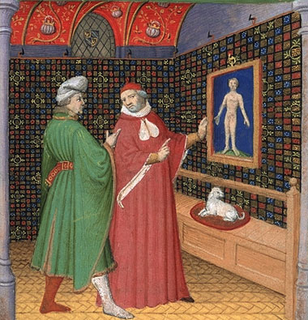
FIGURE IX
(Disputatio - Manuscrit enluminé sur parchemin, 28 X 20 cm
Paris, BnF, Arsenal, ms. 1186 rés., fo 1vo)
JOURNAL DES SAVANTS. MARS 1848.
D'UN OUVRAGE INÉDIT de Roger Bacon, récemment trouvé dans la bibliothèque de Douai.
Occupés à rechercher et à recueillir les monuments de philosophie scholastique qui avaient pu échapper aux investigations de nos savant devanciers dans l'étude de cette grande époque de l'histoire de la philosophie , nous ne pouvions oublier cet ingénieux et infortuné franciscain, qui, à la fin du XIIIe siècle, comprit la haute utilité des langues, enrichit l'optique d'une foule d'observations et même d'expériences importantes, signala le vice du calendrier Julien et prépara la réformation grégorienne, inventa la poudre à canon ou du moins la renouvela, qui, enfin, pour avoir été plus éclairé que son siècle dans les sciences physiques, en reçut le nom de Doctor mirabilis, passa pour un sorcier, et subit la longue et absurde persécution qui a consacré sa mémoire auprès de la postérité. Nous attachions d'autant plus de prix à retrouver quelque ouvrage inédit de Roger Bacon (Sur Roger Bacon, voyez la IXe leçon, Philosophie scholastique, de l'Esquisse d'une histoire générale de la philosophie, t. II de la 2e série de nos COURS DE L'HISTOIRE DE LA PHILOSOPHIE.), qu'un examen attentif nous a laissé la conviction que, si par sa naissance Roger Bacon appartient à l'Angleterre, c'est en France et à Paris qu'il acheva ses études, prit le bonnet de docteur, enseigna, fit ses expériences et ses découvertes, et, à deux reprises différentes, fut condamné à une réclusion plus ou moins dure parle général de son ordre, Jérôme d'Ascoli, dans ce fameux couvent des franciscains ou des cordeliers qui occupait le terrain de notre école actuelle de médecine. Nos recherches n'ont pas été infructueuses. Nous avons trouvé à la bibliothèque de Douai une copie, moderne il est vrai, mais assez bonne, d'un manuscrit de Roger Bacon, qui contient, avec des fragments de l'Opus majus et de l'Opus minus, un autre ouvrage presque entier de notre auteur, appelé Opus tertium. Disons d'abord en peu de mots quels sont ces trois écrits, dans quelles circonstances et à quelle époque ils furent composés. Roger Bacon, né, selon l'opinion la plus accréditée, en 1214, à Ilchester, dans le comté de Sommerset, après avoir étudié à Oxford, vint, comme c'était alors la coutume, perfectionner ses connaissances à l'université de Paris. Il y prit le grade de docteur, et enseigna sur toutes les matières qui excitaient alors un grand intérêt, particulièrement sur la physique. Il acquit peu à peu une grande réputation ; mais il devint suspect à son ordre, et nous savons certainement que, vers 1265 , il lui avait été interdit, non-seulement d'enseigner, mais de communiquer ses écrits et ses opinions, lorsqu'un Français, ami des sciences et lui-même instruit
(Guy Foulques, né à Saint-Gilles, sur le Rhône, d'abord jurisconsulte distingué et secrétaire de saint Louis, entra dans l'Église à la mort de sa femme, et devint successivement archevêque de Narbonne en 1269, cardinal-évêque de Sabine en 1261, légat d'Urbain IV en Angleterre, pour apaiser la querelle d'Henri III et des barons, enfin pape en 1265),
fut élevé à la papauté. Un peu avant de parvenir au pontificat, Clément IV, encore cardinal et évêque de Sabine, sur la grande réputation de Roger, lui avait fait demander ses ouvrages. Roger avait répondu qu'ayant reçu l'ordre de son général de ne faire connaître à personne ce qu'il écrivait, il ne pouvait satisfaire les désirs du cardinal. Celui-ci, devenu pape, ordonna, de son autorité souveraine apostolique, de faire cesser toutes ces prohibitions, et renouvela sa demande au savant franciscain. Cette lettre de Clément IV nous a été conservée
(Wadding, t. Il, p. 294; « Volumus et atibi per apostolica scripta praecipiendo mandaaeus, quatenus, nonobstante praecepto pradati cujuscunque contrario, vel tui ordinis constitutione cuacunque, opus illud quo te dilecto filio Raymondo de Lauduno communicare rogavimus...scriptum de bona littera nobis mittere quam citius poteris non omittas, etc. ») ;
elle est datée de Viterbe le 10 de juillet, deuxième année du pontificat de Clément, c'est-à-dire dans l'année 1266. C'est pour obéir à la volonté du Saint-Père que Roger rassembla tous les travaux qui l'avaient longtemps occupé en un grand corps d'ouvrage, qu'il confia à un de ses élèves pour le porter à Rome et le remettre entre les mains du pape. Mais, comme les routes qui conduisaient à Rome étaient pleines de périls, comme aussi l'écrit destiné à Clément était volumineux et difficile à entendre, Roger Bacon prit le parti d'en faire un double, un abrégé qui pût mieux parvenir à son adresse et éclaircir les obscurités que pouvait renfermer le premier ouvrage : voilà pourquoi celui-ci a été appelé Opus majus et le second Opus minus. Samuel Jebb a imprimé à
Londres, en 1733(" Fratris Bogeri Bacon, ordinis minorum, ad Clementem quartum, pontificem Romanun, ex ms. cod. Dubliniensi cum aliis quibusdam collato, nunc primum edidit S. Jebb, m. d. Londini, 1733, gr. in-fol. —Fratris Rogeri Bacon, ordinis minorum, opus majus ad Clementem IV, pontificem maximum, primum a S. Jebb «m. d. Londini editum 1733, nunc vero diligenler recusum. Venetiis, 1750, pet. in-fol. )-
l'Opus majus, et il en a été donné à Venise une édition nouvelle en 1750. L'Opus minus n'a jamais été publié; il y en a plusieurs manuscrits plus ou moins incomplets en Angleterre et en France (La bibliothèque Mazarine possède un beau manuscrit coté n° 1271, de la fin du XIIIe ou du commencement du XIVe siècle, ou se trouve la troisième partie de l'Opus minus). Cependant la précaution que Roger Bacon avait prise d'envoyer à Clément IV une sorte de duplicata de sa première missive ne lui parut pas suffisante : dans l'ardent désir de complaire au Saint-Père et d'obtenir sa protection, il en fit une troisième copie destinée à remplacer l'Opus majus et l'Opus minus. Tel est l'Opus tertium; c'est le dernier mot de l'auteur , la dernière et la meilleure expression de sa pensée. Et la date de cet écrit ne peut pas être contestée. L'Opus tertium, comme l' Opus majus et l'Opus minus, ont été certainement composés entre la lettre de Clément IV, datée de Viterbe en 1266, et la mort de ce pontife arrivée en 1268, et qui, en ôtant à Roger son seul protecteur, le livra sans défense aux persécutions de plus en plus violentes de ses ennemis. L'Opus tertium est encore inédit comme l'Opus minus, et il n'est connu que par ce qu'en dit Jebb dans la préface de l'Opus majus. Le savant éditeur le cite souvent d'après le manuscrit de la bibliothèque Cottonienne, déposé aujourd'hui au Musée britannique de Londres.
Mais jusqu'ici personne n'avait soupçonné qu'il y en eût en France une copie. La Bibliotheca bbliothecarum ne fournissait, à cet égard, aucune indication. L'inventaire des livres de la bibliothèque publique de la ville de Douai, publié à Douai en 1820 (Cet inventaire a été reproduit par M. Hœnel dans ses Catalogi librorum mss p. 159), fait mention, à la page 648, d'un manuscrit petit in-4°, avec ce titre : Rog. Baconis grammatica graeca.
Accoutumés à nous défier des titres des manuscrits, et sachant bien qu'en fait de découvertes il faut faire mille tentatives inutiles pour en voir une seule réussir, nous voulûmes savoir ce que c'était véritablement que ce manuscrit annonçant une grammaire grecque de Roger Bacon; et, en ayant obtenu la communication, grâce à l'obligeance du bibliothécaire de la ville de Douai, M. Duthilleul, et à la libéralité de l'administration municipale, nous nous assurâmes qu'il contenait non-seulement des morceaux de la grammaire grecque indiquée dans le titre, mais encore un bon nombre de fragments d'autres ouvrages de Roger Bacon, et entre autres l'Opus tertium. Le manuscrit de Douai est un in-4° sur papier, d'une écriture du XVIIe siècle, fine et remplie d'abréviations. Il renferme cinq fragments plus ou moins étendus de Roger Bacon :- 1° Des parties considérables d'une grammaire grecque; et, comme ce fragment de grammaire est au commencement du volume, la personne qui a fait le catalogue ne s'est pas donné la peine de parcourir le volume jusqu'au bout, et elle lui a donné pour titre celui du morceau qu'elle rencontrait en ouvrant le livre :
« Rog. Baconis grammatica graeca Primus hic liber voluminis grammatici circa linguas alias a latina, qui est de grammatica graeca, habet partes tres, etc. »
Ainsi ce n'est que le premier livre d'un traité sur la grammaire et les langues; et ce traité est vraisemblablement la première partie de l'Opus minus, car un passage de cet ouvrage, cité par Jebb dans sa préface, p. XVI, nous apprend qu'il était composé de plusieurs parties, dont la première comprenait la grammaire de diverses langues et la logique : ce premier fragment a quarante-huit feuilles.
- 2° Le second fragment a vingt feuilles ; il est sans titre, et traite de chronologie :
« Distinguimus autem hoc opus in tres partes; prima continet ea quae naturaliter sunt de scientia computi ; secunda ea quae auctoritate et usu; tertia continet tabulas et rationes tabularum; prima pars habet capitula 21, etc. »
Notre manuscrit ne contient que la première de ces trois parties; et encore n'a-t-elle que sept chapitres au lieu de vingt et un ; c'est évidemment l'écrit dont parle Jebb, et qu'il appelle , Prœf. p. XVII, Computus naturalium, d'après le manuscrit qu'il avait sous ses yeux.
- 3° et 4°. Le troisième et le quatrième fragment sont tirés de l'Opus majus. Le troisième, de onze feuilles, a pour titre : Pars sexto, operis majoris; de scientia experimentali. Le quatrième, qui a dix-sept feuilles, est la cinquième partie de l'Opus majus; il est intitulé : Tractatus R. B. de speciebus; pars prima de generatione specierum, subdivisée en six chapitres; pars secunda de multiplicatione specierum, subdivisée en quatre chapitres , dont le quatrième ne paraît pas terminé.
- 5° Ici au milieu du volume et s'étendant jusqu'à la fin, est l'Opus tertium, comprenant quatre-vingt-deux feuilles : Rogeri Baconis ordinis fratrum, minorum opus tertium, ad Clementem papam. Cet ouvrage contient soixante-quinze chapitres; mais il y a une lacune de treize chapitres du trente-huitième au cinquante-deuxième; malgré cette lacune, il forme un traité suivi et régulier, qui nous a paru mériter à tous égard une étude approfondie.
Notre premier soin a été de réparer la lacune considérable que présentait le manuscrit de Douai, en faisant collationner ce manuscrit avec celui du Musée britannique de Londres
(Voici la description du manuscrit britannique, telle que la donne le catalogue de la bibliothèque Cottonienne, imprimé par ordre du parlement : « A catalogue of the manuscripts in the Cottonian library deposited in the British museum. In-fol. 1802.— «Tiberius C. V. codex partim membran. partim chart. in-fol. min. fol. 290, sec. xxv. I. Fratris Rogeri Bacon, opus tertium sive summa ad Clementem papam. Quam dicit in praefatione se ad veritatem et perfectionem utriusque operis praecedentis composuisse. In hoc agit de sapientiae principalibus radicibus, floribus et fructibus.Subjunguntur iractatulus duo de praepositionibus et vocabulis Graecis et tertium de divinatione per somnia, fol. 1. II. Ejusdem majoris operis pars quarta in qua ostenditur potestas mathemalica in scientiïs et rebus mundi, fol. 49. III. Ejusdem opus minus circa sapientiam ostendens, fol. 120. (a) Quae sunt causas propter quas omnis homo semper vacare debet sapientiae. (b) Quae sint necessaria ad eam. (c) De modis et viis quibus debet eam requirere. (d) Qua sint impedimonta illius. In fine scribitur manu recentiore : « Quantum huic tractatui desit (modo ne auctor imperfectum reliquerit) conjicere licet ex propositione dicendorum supra posita, cap. vi, fol 139, lin. ultima. IV. Registrum terrarum hospitalis B. Thomae, fol. 156. »).
Cette collation (Nous la devons à M. Teulet, un des élèves les plus distingués de l'Ecole des chartes, aujourd'hui employé et bibliothécaire aux Archives.) a produit des résultats satisfaisants; elle a comblé toute la lacune qui s'étendait du chapitre XXXVIII au chapitre LII, et elle a fourni une addition considérable et précieuse au chapitre Ier, sans parler d'une foule de bonnes variantes dans tout l'ouvrage. De plus, le manuscrit du Musée britannique, qui se termine au même point que celui de Douai, semble indiquer que le traité de Roger Bacon est ainsi complet, puisqu'à la fin de ce traité se trouvent ces mots : Explicit summa fratris Rogeri Baconis ad mentem papam, comme il commence par ceux-ci : Opus tertium fratris Rogeri. Incipit summa fratris Rogeri Baconis ad Clementem papam. L'Opus tertium peut être divisé en deux parties : l'une qui sert, en quelque sorte, de préface et contient des réflexions préliminaires sur l'auteur, sur sa situation, sur ses travaux et le dessein de son ouvrage ; l'autre, qui est un résumé de l'Opus majus. La première partie est de beaucoup la plus importante : elle répond à ce qu'on appelle le préambule, to wrooimuion, proœmiam, dans les commentaires alexandrins des dialogues de Platon ou des ouvrages d'Aristote. C'est là qu'ordinairement l'auteur, en nous entretenant du but particulier qu'il s'est proposé et en comparant ses travaux avec ceux de ses devanciers, nous fournit de curieux documents sur des personnages ou sur des écrits ensevelis dans la nuit des siècles. Le préambule de l'Opus tertium ne comprend pas moins de vingt et un chapitres, qui forment cinquante pages in-folio de notre copie. Il n'y a là aucune répétition de ce qui se trouve dans l'Opus majus. Tout y est nouveau, et du plus grand intérêt pour l'histoire de Roger Bacon, dans cette période de sa longue et laborieuse carrière, comme pour l'histoire de la philosophie en général, et singulièrement de la philosophie naturelle, dans la dernière moitié du XIIIe siècle. Il nous semble donc utile de faire connaître en détail cette précieuse introduction. Le premier chapitre, imparfait dans le manuscrit de Douai, est beaucoup plus étendu dans le manuscrit britannique, et il abonde en détails qui mettent en lumière le rapport de l'Opus tertium aux deux écrits qui l'avaient précédé. Jebb s'en est déjà servi pour le même objet: mais nous en donnerons une analyse bien plus ample, et nous placerons sous les yeux du lecteur les passages les plus importants. En voici le début, où la suite, le progrès et le caractère de l'Opus majus, de l'Opus minus et de l'Opus tertium, sont nettement marqués. Il y est dit, de la manière la plus expresse, que l'Opus minus n'est pas un simple abrégé de l'Opus majus, mais qu'il contient aussi des parties qui manquaient à celui-ci, et que de même l'Opus tertium ne résume pas seulement, mais complète les deux premiers ouvrages, et renferme une foule de choses qui ne sont point ailleurs. [...] On rencontre dans l'Opus tertium la mention perpétuelle et de fréquentes citations de l'Opus minus : en sorte que tous ces passages, réunis ensemble et joints aux fragments que contiennent plusieurs manuscrits d'Angleterre et de France, pourraient nous aider à reconstruire au moins l'ordre et l'enchaînement de cet ouvrage. Nous signalerons la première page du chapitre IX, la troisième du chapitre X : « In opere minore ubi loquor de potestate studii theologise; » la quatrième du chapitre XI où Roger déclare qu'il a parlé de mathématiques dans son Opus secundum; la fin du chapitre XII, le commencement du chapitre XXI, plusieurs endroits du chapitre XXV ; le chapitre XXVI : « In secundo opere ubi de cœlestibus egi, » et plus loin : « In opere minori ubi de cœlestibus tractavi,» enfin la première et la dernière page du chapitre LXXV. Nous nous bornons à indiquer ces passages ; mais le chapitre Ier, que nous analysons, en renferme un sur lequel nous insisterons davantage, parce qu'il reproduit textuellement le commencement même de l'Opus minus. En effet, après l'exorde que nous avons donné presque en entier, Roger Bacon ajoute :
« Comme Cicéron, à son retour de l'exil, remerciait humblement le sénat romain, ainsi en me rappelant l'exil de dix années que j'ai subi, le silence qui a été imposé à ma bouche et à ma plume, en voyant un grand pontife me tirer de l'oubli et en quelque sorte du tombeau et me demander mes pensées et mes ouvrages, transporté de reconnaissance, après avoir baisé les pieds de Votre Sainteté, j'élevais mon style dans mon second écrit jusqu'à votre Grandeur, et je commençais en ces termes. »
Nous sommes donc bien sûrs de posséder le commencement de l'Opus minus, et il serait même possible que l'introduction entière de l'Opus tertium, composée, comme nous l'avons dit, de vingt et un chapitres, fût à peu près celle de l'Opus minus; car, dans le chapitre XXI, à la fin de l'introduction, on trouve ces mots : « Post haec et hujus modi tradita in opere secundo incepi descendere ad partes primi, » c'est-à-dire:
« Telle est l'introduction que j'avais mise à l'Opus minus; cette introduction achevée, je passais aux différentes parties de l'Opus majus. »
Cependant, il faut remarquer que, dès le chapitre II et dans d'autres chapitres, Roger Bacon recommence à parler de l'Opus tertium, ce qui prouve que notre introduction contient au moins des parties toutes nouvelles. D'ailleurs, celle de l'Opus minus ayant péri et ne se retrouvant dans aucun manuscrit, le travail que nous faisons sur l'une, dans la perte de l'autre, conserve tout son intérêt. Et il est bien certain que la fin du premier chapitre reproduit l'exorde de l'Opus minus. Le style, comme le dit Roger Bacon, est monté à un certain ton de vivacité et de grandeur: [...]
Dans le second chapitre de l'Introduction, que nous entreprenons de faire connaître avec quelque étendue, Roger Bacon rend compte des obstacles qui l'ont empêché de satisfaire aux désirs du Saint-Père aussi promptement qu'il l'aurait voulu. Ces obstacles sont : 1° la persécution qui pesait sur lui; 2° la nécessité où il s'est trouvé de composer les écrits qui lui sont demandés, n'en ayant aucun de prêt; 3° la difficulté de la tâche qui lui est imposée, et qui exigerait toute la vie du plus savant de ses contemporains.
- 1° Non-seulement les supérieurs de Roger Bacon ne l'avaient jamais invité à composer d'ouvrage sur des matières philosophiques, mais ils lui avaient interdit de communiquer à qui que ce fût aucun écrit, sous peine de se le voir enlever, et d'être mis pendant plusieurs jours au pain et à l'eau, sub praecepto et pœna amissionis libri, et jejanio in pane et aqua pluribus diebus. Pour éluder cette défense, il aurait fallu avoir un copiste fidèle, mais il a redouté, dit-il, l'indiscrétion ordinaire des copistes de Paris. Ce langage de Roger Bacon prouve déjà, comme nous le verront tout à l'heure avec plus d'évidence encore, que c'est à Paris et non pas à Oxford qu'il a subi cette première persécution; autrement, il serait fort étrange qu'il se plaignît à Oxford de l'infidélité des copistes parisiens.
- 2° Bacon nous apprend lui-même que
« jusqu'alors, il n'avait composé aucun écrit philosophique, non feci scriptum aliquod philosophiae, mais seulement quelques morceaux de circontstance, aliqua capitala, more transitorio; rien d'important, d'étendu, ni d'achevé.»
C'est donc l'Opus majus, dans sa première ou dans sa seconde ou dans sa troisième forme, qui étendit la renommée de Bacon au delà de l'enceinte de son couvent et de son ordre ; c'est là qu'on trouve exposées pour la première fois les expériences et les découvertes apparentes ou réelles auxquelles son nom est attaché.
- 3° D'ailleurs la tâche que le Saint-Père lui prescrit est si difficile, qu'on doit excuser le long temps qu'il a mis à l'accomplir. Nul autre philosophe n'aurait pu aller plus vite. Les plus célèbres et les plus habiles sont, selon lui, frère Albert, de l'ordre des Prédicateurs, et maître Gilbert de Shirewood, trésorier de l'Église de Lincoln, en Angleterre. Roger met Gilbert bien au-dessus d'Albert, longe sapientior Alberto. Gilbert n'a pas de supérieur dans la science physique. Eh bien, que le pape leur envoie à tous les deux les questions traitées dans les deux écrits précédents et dans celui-ci, et dix années s'écouleront avant que l'un ou l'autre n'en envoient la solution. Il y a une centaine de ces questions qu'ils ne résoudraient pas dans toute leur vie, asque ad finem vitae suae. La seule perspective leur demanderait plus d'une année de recherches,
« Pourquoi cacher la vérité ? dit Roger Bacon; j'assure à Votre Sainteté qu'il n'y a pas parmi les Latins, intra Latinos, un seul homme qui puisse traiter cette seule partie de la philosophie (la perspective), ni
en un an, ni en dix. »Ici paraît le caractère de Roger Bacon, la conscience qu'il avait de son génie, et l'aigreur que mêlait déjà à un orgueil légitime une persécution imméritée. Pour apprécier le jugement qu'il porte sur Albert et sur Gilbert ou Guillaume de Shirewood, car le manuscrit de Douai donne Gilbert et celui du Musée britannique donne Guillaume, il faudrait savoir ce que c'est précisément que ce dernier personnage. Bacon en fait un dignitaire de l'Eglise de Lincoln. On pense alors assez naturellement à Robert dit Grosse-Tête, évêque de Lincoln, que notre auteur célèbre souvent dans ce même ouvrage et dans l'Opus rnajus, par exemple, p. 64, éd. de Jebb. Robert Grosse-Tête passait, de son temps, pour avoir parcouru tout le cercle des connaissances humaines : il fut même accusé de magie, comme Roger Bacon, et on lui attribue un certain nombre d'ouvrages encore subsistants sur la sphère et autres matières semblables (Voyez dans l'Histoire littéraire de France, t. XVIII, l'article consacré par M. Daunou à Robert Grosse-Tête, évêque de Lincoln.). De plus, les noms de Gilbert et de Robert peuvent se prendre aisément l'un pour l'autre. Cependant il est impossible de s'arrêter à cette conjecture. Roger parle ici évidemment d'un homme qui vivait encore en 1266 ou 1267, ainsi qu'Albert, et auquel le pape aurait pu s'adresser. Or, tous les témoignages s'accordent à faire mourir Robert Grosse-Tête en 1253. Il faut donc prendre Guillaume ou Gilbert de Shirewood, trésorier de l'Église de Lincoln, pour un savant peut-être formé à Lincoln., à l'école de Robert Grosse-Tête, mais qui lui-même était devenu aussi célèbre que son évêque, puisque Roger le déclare très supérieur à Albert, et le premier de son temps dans la philosophie naturelle. C'est sur l'autorité de Bacon que Leland a parlé de Guillaume de Shirewood, De scriptoribus britannicis, c. 239, et Leland a été répété par Balée, Oudin et Fabricius. Tous ces auteurs le font chancelier et non trésorier de l'Église de Lincoln, et ils ne lui attribuent que des ouvrages inédits, parmi lesquels il n'y en a pas un seul sur les mathématiques. Aussi est-il assez extraordinaire que Roger Bacon ait placé Guillaume de Shirewood fort au-dessus d'Albert, que le XIIIe siècle a appelé le grand. Est-ce l'effet d'un patriotisme exagéré ? ou faut-il déjà reconnaître ici la querelle naissante des ordres entre eux, qui met aux prises le franciscain Roger et le dominicain Albert, comme elle fera un peu plus tard saint Thomas et Duns Scott ? Quoi qu'il en soit, remarquons que Roger Bacon ne traite avec tant de superbe que les philosophes chrétiens et latins, intra Latinos, réservant ainsi les droits des philosophes arabes, d'Averroës et surtout d'Avicenne, auxquels il n'aurait pu sans une extrême injustice, et même sans ingratitude, refuser son admiration. Nous donnons ici en entier ce chapitre curieux : Cap. II. [...] Le chapitre troisième est un des plus intéressants de l'ouvrage entier, en y joignant quelques parties d'autres chapitres qui s'y rapportent. Roger Bacon y fait connaître la cause principale qui a arrêté sa bonne volonté, à savoir l'impossibilité de suffire aux dépenses qu'exigeait l'accomplissement de ses desseins. A cette occasion, il nous donne une foule de renseignements précieux sur sa vie, sur sa famille et sur les sacrifices qu'il a obtenus de ses amis en faveur de ses études.
« Depuis quarante ans, dit-il, dès que j'ai su lire, je n'ai cessé d'étudier à l'exception de deux années. »
Chapitre xx :
« Multum laboravi in scientiis et linguis, et posui jam quadraginta annos, postquam didici primo
alphabetum, et fui semper studiosus, et praeter duos annos de istis quadraginta fin semper in studio. »Cela ne contredit point, mais plutôt confirme, en une certaine mesure, la date convenue de la naissance de Roger Bacon. Les auteurs prétendent qu'il est né en 1214. Donnons-lui dix ou douze ans pour acquérir cette première instruction qu'il appelle l'alphabet, et nous arrivons ainsi avec ces douze années plus quarante autres, de 1214 à 1266. Ailleurs, chapitre IX, il rappelle qu'il y a quarante ans environ , les théologiens de Paris, l'évêque de cette ville et tous les sages d'alors condamnèrent et excommunièrent les livres d'Aristote sur la physique et la métaphysique, qui sont aujourd'hui reçus par tous :
« Theologi Parisiis et episcopus et omnes sapientes jam ab annis circiter 40 damnaverunt et excommunicaverunt libros naturales et metaphysicam Aristotelis, qui nunc ab omnibus recipiuntur pro sana et utili doctrina. »
Nous avons la date précise du décret qui interdisait, sous peine d'excommunication l'enseignement de la physique et de la métaphysique d'Aristote dans l'Université de Paris. Ce décret, publié par Duboulay et par Launoy, est du mois d'août 1215. En ajoutant quarante ans on ne parvient qu'à 1255, à douze ans de moins que la date certaine de l'Opus majus, minuas, tertium, qui est de 1266 à 1268. Le mot circiter peut rendre compte de cette différence, et Roger Bacon pouvait bien ne pas connaître fort exactement la date du décret du cardinal Robert de Courçon. C'est surtout dans les vingt dernières années, c'est-à-dire depuis 1246, que Roger Bacon, après avoir acquis toutes les connaissances enseignées de son temps, se fit un plan particulier d'études, et se livra de préférence aux langues, aux mathématiques, à la perspective, à la chimie et à la science expérimentale, pour lesquelles il déclare avoir dépensé plus de deux mille livres. Chapitre XVII :
« Per viginti annos quibus specialiter laboravi in studio sapientiae, neglecto sensu vulgi, plusquam duo milita librarum ego posui in his, propter libros secretos, et experientiasi varias, et, linguas, et instrumenta, et tabulas, et alia, tum ad inquirendum amicitias sapientum, tum propter instruendos adjutores in linguis in figuris, in numeris, et tabulis, et instrumentis, et multis aliis. »
Dans le chapitre III que nous analysons, Roger Bacon mande au pape que, dans cette seule dernière affaire, il a dépensé plus de 60 livres parisiennes :
« Opontuit plusquam sexaginta libras parisienses effundi pro hoc negocio. »
Compter ainsi par la monnaie de Paris prouve une fois de plus que l'auteur d'un tel calcul était à Paris. Mais tout doute à cet égard tombe devant la phrase suivante, où Roger dit expressément qu'afin d'obtenir de l'argent des prélats et des grands pour ses expériences, il a dû s'autoriser du nom du Saint-Père, et leur dire qu'il s'agissait d'un travail dont il était chargé en France par le Père de la chrétienté : « Dixi quod negotium quoddam vestrum debuit tractari in Francia per me. » Nous tenons donc comme un point désormais incontestable que Roger Bacon, lorsqu'il écrivait au Saint-Père de 1266 à 1268, était en France et à Paris, dans le couvent des Franciscains, qu'il y était depuis dix ans en disgrâce [...], et que depuis vingt ans il travaillait spécialement à la philosophie naturelle, avec l'argent qu'il tirait de différents côtés comme il pouvait, ainsi que tout à l'heure il va le dire lui-même. Tous les biographes de Bacon (Voyez Wood, Hut. et Antiq. Oxon., p. 136, etc., et la Biographia britannica, éd. 1778, in-fol., t. I, p. 416) affirment qu'il était né d'une ancienne et noble famille, mais ils n'apportent aucun document authentique. En voici un que nous empruntons à notre auteur. Chapitre III :
« Pour avoir de l'argent pour mes expériences, dit-il, je me suis adressé dans mon pays à mon frère, qui est riche, mais qui, ayant pris le parti du roi, a été forcé de fuir avec ma mère, mes frères et toute ma famille, et qui, plus d'une fois pris par l'enhemi, a dû se racheter en payant rançon; en sorte que lui-même, détruit et ruiné, n'a pu m'aider, et jusqu'ici je n'ai pu même en obtenir de réponse. »
« Ego vero nec pecuniam habeo, ut scitis, nec possum habere, nec per consequens mutuari cum non habeam quod reddam. Misi igitur fratri meo diviti in terra mea, qui ex parte regis consistens cum matre mea et fratribus et tota familia exulavit, et pluries hostibus deprensus se redemit pecunia, et idco destructus et depauperatus non potuit me juvare, nec etiam usque ad hanc diem habui responsum ab eo. »
Cette phrase dit assez que Bacon appartenait à une famille riche et importante. Parmi ses frères, l'un s'était mêlé aux affaires politiques de son temps, avait pris parti pour le roi Henri III dans sa querelle avec les barons ; l'autre s'était comme lui voué à l'étude, ainsi que nous l'avons appris dans le chapitre II.
« Si j'eusse composé des ouvrages, je n'aurais pas manqué de les communiquer à mes amis et à mon frère le savant : Cum fratre meo scholari (Voyez plus haut, p. 224). »
Sur la foi de Pits (De rebus Anglicis, Parisiis, 1619, p. 318) plusieurs auteurs parlent d'un frère de Roger Bacon, nommé Robert, qui était Dominicain, et qui aurait pu fort bien être appelé scholaris, puisqu'il avait composé des ouvrages dont les titres nous ont été conservés. Mais, au témoignage de ces mêmes auteurs, Robert Baron est mort en 1248, et très-vieux, ce qui ne permet guère de le donner pour frère à notre philosophe (Voyez la Biographia britannica, article Robert Bacon.). Rien n'est plus touchant que de l'entendre exposer à Clément IV la triste situation à laquelle il a été réduit pendant tant d'années, rêvant une science nouvelle qui exigeait des expériences répétées et coûteuses, et ne possédant rien, ne pouvant emprunter dans l'impuissance de jamais rendre ce qui lui aurait été prêté, demandant en vain de l'argent à sa famille autrefois opulente et tombée dans la pauvreté, sollicitant des prélats et des grands
« dont vous connaissez le visage, dit-il à Clément, mais dont vous ne connaissez pas le cœur, quorum
faciem bene cognoscitis, sed non mentent, »repoussé ou bercé de fausses espérances, ne pouvant persuader à ses amis l'importance de son entreprise, tout près de succomber au désespoir, et se relevant par la puissance d'une foi énergique, trouvant même le secret de forcer ses amis, jusqu'aux plus pauvres, de vendre pour lui et ses expériences le peu qu'ils avaient ou de l'engager à des usuriers.
« Quoties reputatus improbus, quoties repulsus, quoties dilatus spe vana, quantum confusus in me ipso non possum exprimere ! Etiam mihi non credebant amici, quia non potui iis negotium explicare. Unde per banc viam non potui procedere. Angustiatus igitur super id quod potest aestimari, coegi familiares omnes et pauperes expendere omnia quse habebant, et multa vendere et caetera impignorare, etiam multoties ad usuras; et promisi quod ego vobis scriberem partes singulas expensarum et quod bona fide procurarem apud vos perfectam solutionem. Et tamen propter istorum paupertatem, multoties dimisi opus, multoties desperavi et neglexi procedere. »
Les chapitres IV, V, VI, VII et VIII sont assez courts et purement philosophiques. Ils établissent la nécessité de démontrer dans un préambule l'utilité des sciences avant de traiter de chacune d'elles. L'auteur attache la plus grande importance à ce point et il y reviendra plus tard. Le chapitre IX contient la réponse à cinq objections que l'on faisait à Roger Bacon sur la science nouvelle à laquelle il appelait ses contemporains. Roger renvoie pour les trois premières à diverses parties de l'Opus majus. Nous ne relèverons donc que les deux dernières objections avec les réponses de Bacon, parce que celles-ci mettent encore plus à découvert le caractère du savant franciscain et son opinion sur un personnage du XIIIe siècle, qui ne peut être que le dominicain Albert. Déjà nous avons vu qu'il lui préfère de beaucoup l'Anglais Guillaume de Shirewood. Ici, le considérant en lui-même, il proteste contre sa renommée et décrie sa science.
« En quatrième lieu, dit-il, on me reproche d'attaquer certaines sciences et certaines personnes. A cela je réponds que je ne puis autrement servir la vérité, et j'affirme que je n'agis ainsi que par nécessité , pour votre utilité, la mienne et celle de toute l'Église. »
« Affirmo coram Deo et vobis quod hoc non facio nisi propter necessitatem persuadendae veritatis, et propter utilitatem vestram et meam et totius Ecclesiae. »
« La cinquième objection est forte, et elle m'est pénible. Beaucoup d'hommes honnêtes et qui passent pour instruits me disent que la philosophie est achevée, et qu'on ne peut rien ajouter à celle que l'on enseigne dans notre temps à Paris ; et on me cite un auteur qui vit encore et qui, de son vivante a autant d'autorité qu'Aristote, Avicenne et Averroës... Je parle, il est vrai, avec une grande pitié de cet auteur et de l'erreur du vulgaire trompé par lui. Mais, si je ne parle pas ainsi, la vérité ne peut paraître, et la vérité est préférable à tout, comme dit la sainte Écriture. Je dirai donc la vérité et sur ses écrits et sur sa personne, par amour de la vérité et en vue du bien commun... »
[...]
« Les écrits de cet auteur ont quatre défauts : le premier est une vanité puérile, infinie; le second, une fausseté inexprimable; le troisième, une extrême diffusion, la science entière pouvant être renfermée en un traité utile, vrai, clair et parfait, qui serait tout au plus la vingtième partie de tous ses volumes ; son quatrième défaut est d'avoir négligé les parties de la philosophie les plus utiles et les plus belles. C'est pourquoi tous ses ouvrages ne sont d'aucune utilité et nuisent, au contraire, à la vraie philosophie. Et cela n'est pas étonnant, puisqu'il n'a pas été élevé dans l'université de Paris, ni dans aucune autre école où fleurit la philosophie, qu'il n'a pas enseigné, qu'il n'a pas disputé, qu'il n'a pas conféré avec d'autres savants, et qu'assurément il n'a pas eu la Grâce, vivant tout autrement qu'il ne faut pour cela, et accumulant les mensonges, les vanités et les superfluités. »
[...] A qui peut convenir un pareil portrait dans la dernière moitié du XIIIe siècle ? On ne peut songer à aucun franciscain : en 1266, Alexandre de Hales était mort, et le seul homme célèbre que l'ordre de saint François eût à Paris était saint Bonaventure, que Roger Bacon n'aurait osé attaquer. Nous ne voyons que les deux dominicains Thomas et Albert dont l'autorité ait pu révolter l'esprit indépendant et altier de Roger Bacon. Thomas, il est vrai, est surtout un métaphysicien et un moraliste; il n'était ni mathématicien ni physicien ; il avait négligé les parties de la philosophie qui paraissaient à Roger Bacon les plus belles et les plus utiles. Mais comment l'accuser de prolixité, lui dont le style est, comme l'esprit, d'une netteté, d'une précision et d'une sobriété qui trop souvent dégénèrent en sécheresse ? Le vrai rival de Roger était Albert, bien moins inventif, il est vrai, mais très-savant, et qu'il est difficile de défendre du reproche de longueur et de diffusion. Déjà, dans le chapitre II, Roger Bacon rabaisse Albert au-dessous de son compatriote Guillaume de Shirewood; il est donc vraisemblable que c'est encore lui qu'il prend à partie en cet endroit. Plus d'un trait
peut se rapporter à Albert: il a beaucoup écrit (Voyez l'édition qu'a donnée de ses ouvrages le dominicain Pierre Jammy, Lyon, 1651, 21 vol. in-fol), et il est un peu prolixe; il n'avait pas étudié à Paris, ni dans aucune autre école célèbre; sa vie, quoique irréprochable, était particulièrement vouée à la science. L'Église ne l'a pas canonisé; il est bienheureux, il n'est pas saint. D'une autre part, comment dire du grand professeur de Cologne et de Paris, du maître de Thomas, qu'il n'a ni enseigné ni disputé ? Comment dire de l'auteur de tant de commentaires sur l'histoire des animaux, la physique et la météorologie d'Aristote, surtout de l'auteur du traité des minéraux (Pour ne pas parler du Miroir astronomique et d'autres écris vraisemblablement apocryphes.), qu'il était étranger aux sciences que Roger Bacon a cultivées ? N'est-ce pas plutôt parce qu'il les avait cultivées, et avec un grand succès, supérieur peut-être à son mérite réel, que Roger Bacon l'attaque avec une animosité si persévérante. Il faut reconnaître que, si Albert n'a rien écrit sur les mathématiques ni sur l'optique, il aimait, en général, les sciences physiques, et qu'il a beaucoup contribué à en introduire le goût dans Paris. La cause principale de l'irritation du franciscain est, à nos yeux, l'immense autorité que le dominicain exerçait autour de lui, et qui, selon Roger, s'opposait aux progrès de la vraie philosophie. Roger lui-même l'avoue : [...] Au reste, il est à regretter que nous n'ayons pas un manuscrit complet de l'Opus minus; car Roger Bacon nous apprend que, dans la partie de l'Opus minus où il traite des sept défauts de l'étude de la théologie, ce qu'il dit du troisième défaut est dirigé contre le personnage en question.« Là, dit Roger, j'en signale deux, mais il est le principal ; l'autre a un plus grand nom, mais il est
mort. »[...] (Le philosophe qui, selon Roger, avait un nom encore plus grand que celui d'Albert, et qui était mort vers 1266, ne peut guère être que Robert, dit Grosse-Tête, évêque de Lincoln, que Roger Bacon célèbre tant dans les trois éditions de son ouvrage, et qui mourut en 1253.) Dans le chapitre X, Roger Bacon poursuit encore Albert et l'accuse de ne pas posséder l'instrument de tout vrai savoir, la connaissance des langues. Ce chapitre n'est, comme le dit l'auteur lui-même, qu'un résumé de la troisième partie de l'Opus majus sur l'utilité de la grammaire. Trois langues sont nécessaires au vrai philosophe : l'hébreu, le grec et l'arabe. Dieu a d'abord révélé la vérité à ses saints, auxquels il a donne sa loi : voilà pourquoi la philosophie se trouve principalement dans les monuments hébraïques; puis, elle a été renouvelée par Aristote en grec, et en dernier lien par Avicenne en arabe. Pour les Latins, ils n'ont rien d'original et ne possèdent que des traductions ; malheureusement ce qu'il y a de mieux n'a pas été traduit, et les traductions que l'on a sont entièrement défectueuses, surtout en ce qui regarde les ouvrages. d'Aristote. Pour bien traduire, il faut trois choses : la connaissance de la matière dont traite l'ouvrage à traduire, la connaissance de la langue dans laquelle est écrit cet ouvrage, et celle de la langue dans laquelle on entreprend de le faire passer : or un seul homme possède les matières philosophiques, l'évêque de Lincoln, et un seul homme a possédé les langues, Boëce [...] les autres ignorent et les matières et les langues. L'auteur en question ne sait pas un mot de grammaire, pas plus que le vulgaire. Il n'y a pas quatre Latins qui sachent la grammaire hébraïque, grecque et arabe. Je les connais bien, dit Roger, car j'ai fait faire là-dessus des recherches en deçà de la mer et par delà, et je me suis occupé de tout cela avec le plus grand soin :
« Author praedictus nil scit de linguarum potestate, sicut nec totum vulgus. Nam non sunt quatuor Lait tini qui sciunt grammaticam Hebraeorum et Graecorum et Arabum ; bene enim cognosco eos quia et citra mare et ultra diligenter feci inquiri, et multum et diligenter in bis laboravi. »
Le troisième livre de l'Opus majus nous donne quelques lumières sur les quatre savants auxquels Roger fait ici allusion : ce sont des savants d'au delà de la mer, l'évêque de Lincoln, Thomas, doyen de Saint-David, et le franciscain Adam (Adamus de Marisco), un des amis de l'évêque de Lincoln, qui, selon Leland (Commentarii de scriptoribus britannicis, Oxonii, 1709, p. 286), était le supérieur du couvent des Franciscains d'Oxford.
« Namvidimus (Opus majus, éd. Jebb, p. 48.) aliquos de antiquis qui multum laboraverunt, sicut fuit Dominus Robertus praefatus translater, episcopus Lincolniensis, et D. Thomas, venerabilis antistes Sancti David, et frater Adam de Marisco, et quidam alii sapientes. »
La conclusion de ce chapitre X est qu'il faudrait se procurer des ouvrages originaux sur toutes les parties de la philosophie, hébreux, grecs et arabes, pour redresser les erreurs des traductions latines, et qu'il faudrait posséder des hommes véritablement instruits dans ces trois langues, ne les sachant pas par routine, comme les Juifs ou comme les Grecs (et similiter de Graecis veris), qui parient l'hébreu , l'arabe et le grec, comme les laïques parlent les langues qu'on leur a apprises, sans les savoir véritablement et grammaticalement:
« sicut laïci loquuntur linguas quas addiscunt, et nesciunt rationem grammaticam. »
D'ailleurs, ces Grecs et ces Juifs ne connaissent pas les matières sur lesquelles roulent les ouvrages qu'il s'agit de traduire. On ne peut donc se fier à leurs traductions, bien qu'ils soient des auxiliaires nécessaires : « quamvis boni adjutores essent et necessarii.» Mais de bons traducteurs ne suffisent pas à l'avancement de la philosophie; elle demande des esprits inventifs, et avant tout de bons mathématiciens. C'est là le sujet de la quatrième partie de l'Opus majus : c'est celui du chapitre XI de notre Introduction. Nous ne nous arrêterons qu'aux différences, et il y en a d'assez fortes. Dans l'Opus majus ( p. 64. « Inventi enim sunt viri famosissimi, ut episcopus Robertus Lincolniensis et frater Adam de Marisco, et multi alii, qui per potestatem mathematicae sciverunt causas omnium explicare. »), Roger citait comme mathématiciens célèbres Robert Grosse-Tête et Adam de Marisco, ajoutant, il est vrai, « et multi alii. » Ici il entre dans plus de détails :
« Je ne connais, dit-il, que deux mathématiciens accomplis, maître Jean de Londres et maître Pierre de Maharncourt, Picard. Il y en a deux autres qui sont bons : maître Campan de Novare et maître Nicolas, qui a eu pour élève Amaury de Montfort. »
« Non sunt enim nisi duo perfecti, scilicet magister Johannes Londoniensis et magister Petrus de Maharncuria, Picardus. Alii duo boni sunt, scilicet magister Campanus de Novarria et magister Nicolaus, doctor domini Amalrici de Monteforti. »
S. Jebb, qui a publié les premières lignes de ce passage dans sa préface, a le premier fait voir que ce maître Jean de Londres est Jean Pekkam, de l'ordre de Saint-François, du couvent de Londres, depuis archevêque de Cantorbéry, qui était très-versé dans les mathématiques, comme le prouve son traité de perspective imprimé à Cologne en 1627. Mais Jebb ne nous dit rien de maître Pierre de Maharncourt; et il a négligé les lignes où il est question de maître Campan de Novare, de maître Nicolas et de son élève Amaury de Montfort. Pour maître Campan de Novare, c'est évidemment le commentateur d'Euclide, l'auteur d'un traité de la sphère dédié à Urbain IV, que Tiraboschi a fait connaître (Voyez Tiraboschi. t. III, p. 557 (de l'édition des classiques de Milan), et t. IV, p 244, 251, et Montucla, Histoire des mathématiques, t.Ier. p.506.); il était chapelain d'Urbain IV et chanoine de l'Eglise de Paris. Mais nous ignorons entièrement ce que peuvent avoir été maître Nicolas et Amaury. de Montfort. Parmi ces savants, il en est un que Roger Bacon met au-dessus de tons les autres, sans le nommer.
« Celui-là, dit-il, il serait difficile de l'acquérir, parce qu'il se plaît à travailler seul, qu'il veut rester le maître de ses études et cultiver la science comme il lui plaît. J'en ai déjà parlé dans l'Opus minus, et j'en parlerai encore ici en son lieu. »
« Oporteret quod mathematici boni haberentur, qui paucissimi sunt et rari nec reputantes pretium sui ; nec posset aliquis habere eos nisi dominus Papa aut alius magnus princeps, et maxime illum qui est melior omnibus, de quo in minore opee satis scripsi et scribam silo loco; nam vix cum aliquo staret, qui vult esse dominus sui studii et experiri sapientiam ut placet ei. »
En avançant dans l'Opus tertium, nous sommes donc sûrs de rencontrer de nouveau le personnage placé si haut dans cet endroit, mais indiqué d'une manière assez vague, et nous espérons déterminer son nom avec certitude à l'aide des nouveaux passages (Voyez notre 3e article dans le cahier de mai.) comparés avec celui-ci. Bacon insiste particulièrement sur la nécessité d'instruments mathématiques, sans lesquels on ne peut rien et qui coûtent très-cher, 200 ou 300 livres. Ajoutez qu'il en faut beaucoup, qu'ils sont d'une conservation très-difficile, à cause de la rouille qui s'y met, et qu'on ne peut les transporter d'un lieu à un autre sans courir le risque de les briser. Enfin Bacon demande la confection de tables où tous les mouvements du ciel depuis le commencement du monde jusqu'à la fin soient décrits avec une précision et une fidélité qui permettent de voir dans ces tables, appelées almanachs, tout ce qui se passe chaque jour dans le ciel, comme nous voyons dans le calendrier toutes les fêtes des Saints.
« J'ai souvent, dit-il, entrepris de composer de pareilles tables; mais je n'ai pu les achever, faute d'argent et par la sottise de ceux à qui j'avais affaire. Il faudrait d'abord faire apprendre à dix ou douze enfants les règles et les tables ordinaires de l'astronomie; et y après cet apprentissage, il faudrait les employer pendant une année entière à trouver, chaque jour et à chaque heure, les mouvements de toutes les planètes » :
« Saepe aggressus sum compositionem istarum tabularum, sed non potui consummare propter defectum expensarum et stultitiam eorum cum quibus habui facere. Nam primo oportet facere instrui pueros 10 vel 12 in canonibus et tabulis astronomiae vulgatis; et quando bene scirent operari, tunc per annum unum deberent invenire motus singularum planetarum ad omnem diem et horam secundum omnem varietatem motuum eorum et caetera quae in cœlis renovantur. »
De toutes les parties des mathématiques, celle que Bacon recommande avec le plus d'instance est la perspective; il en fait un magnifique éloge. Il rappelle qu'il en a parlé en détail dans l'Opus majus et dans le traité de la perspective, qui est la cinquième partie de cet ouvrage; il renvoie aussi à la troisième partie de ce même Opus majus où il est question de la multiplication des images et des agents qui les produisent. Dans l'Opus majus il a rapporté ces questions à la géométrie, à cause des calculs qui s'y mêlent, mais elles dépendent essentiellement de cette science particulière qu'il appelle la perspective. Non-seulement Bacon recommande au Saint-Père de consulter le 3e et le 5e livre de l'Opus majus, mais il lui annonce qu'il lui adresse un traité plus complet sur la multiplication des images, parce qu'il considère ce point comme le fondement de tout vrai savoir en philosophie et même en théologie :
« Completiorem tractatum mitto vobis de hac maltiplicatione. »
Ce traité plus complet de la multiplication des images était probablement joint à l'Opus tertium, et c'est ce traité que Jean Gombach, de Marbourg, a publié à Francfort en 1614, d'après le manuscrit de la Bodléienne d'Oxford, en même temps que la Perspective [...]. Nous y renvoyons ceux qui désireraient apprécier avec exactitude la valeur des promesses que fait ici Roger Bacon, et ce qu'il y a de vrai ou d'exagéré dans les découvertes d'optique qui lui sont attribuées (Voyez l'opinion de Montuda, t. I, p. 514 sur les travaux de Roger Bacon, elle est celle de Smith, A compleat system of Optik). Mais nous nous faisons un devoir de tirer de ce XIe chapitre tout ce qui peut jeter quelque jour sur l'histoire dès sciences au XIIIe siècle et en particulier sur les travaux et le caractère de notre auteur. A propos de la perspective, il dit qu'elle n'a pas encore fait la matière d'aucun enseignement dans l'université de Paris ni dans toute la chrétienté, excepté deux fois à Oxford en Angleterre, et qu'il n'y a pas trois personnes qui en connaissent la valeur. Il part de là pour accuser de nouveau l'ignorance d'Albert dans la perspective :
« II n'a jamais écrit un seul mot sur ce sujet.... Il est de la même ignorance pour ce qui regarde la racine de la perspective et de toute la philosophie naturelle , la multiplication des images. Que le pape lui écrive pour lui demander son avis sur ce point, qui est la racine de tout vrai savoir, et il reconnaîtra son absolue impuissance; et pourtant sans la connaissance de cette théorie, toute science est vaine, et avec elle la valeur d'un homme est centuplée. Or nul des auteurs anciens ou modernes n'en a écrit. « J'y ai travaillé, dit Roger, pendant dix années, je me suis efforcé d'éclaircir toutes les difficultés qu'elle présente, et j'ai résumé mes travaux dans l'écrit que je vous envoie. » [...]
Le chapitre XII est consacré à la chimie, que le moyen âge appelle alchimie. Elle se divise en chimie spéculative et chimie pratique. Roger Bacon proclame la chimie pratique la première de toutes les sciences dont il a parlé jusque-là, et parce qu'elle peut être d'une grande utilité à la société et surtout parce qu'elle peut prolonger la vie humaine bien au delà des bornes où elle est aujourd'hui renfermée. Il est à remarquer que la plupart des grands philosophes ont cru à la puissance des méthodes curatives, comme à celle de leurs autres méthodes. On connaît, en ce genre, les prétentions de Descartes et de Leibnitz. Bacon paraît très persuadé que, si la vie humaine n'est pas plus longue, c'est la faute de l'homme.
« Nous mourons, dit-il, plus tôt qu'il n'est nécessaire, faute, d'un bon régime, et à cause du tempérament vicié que nous transmettent nos parents; aussi la vieillesse vient-elle plus vite. et la mort devance le terme assigné par Dieu » :
« Nos morimur citius longe quam deberemus, et hoc propter defectum regiminis sanitatis a juven-tute, et propter hoc quod parentes nostri dant nobis complexionem corruptam propter eumdem defectum regiminis sui. Unde senectus ucitius contingit, et mors ante termines quos Deus constituit nobis. »
La chimie pratique est le fondement de la médecine , et elle est comme l'épreuve de la chimie spéculative. Beaucoup s'en occupent, très peu s'y entendent.
« II n'y a pas trois personnes, dit Bacon, qui unissent la chimie pratique à la chimie spéculative; et je ne connais qu'un homme qui soit également versé dans l'une et dans l'autre ; mais, comme fort peu de gens sont capables de le comprendre, il garde sa science pour lui-même, et ne cherche pas à la communiquer. »
Roger Bacon se sert ici, pour caractériser les travaux de ce modeste solitaire, des termes mêmes qu'il a précédemment employés pour désigner le mathématicien qui se complaisait à cultiver la science dans la retraite. Les deux portraits se ressemblent tellement, qu'il est difficile de ne pas les rapporter à un même original. A ce savant inconnu, Roger Bacon ne manque pas d'opposer Albert, ou du moins celui auquel nous avons donné ce nom. Bacon avoue qu'Albert a beaucoup écrit sur la philosophie naturelle; mais il soutient qu'il ignore la chimie, qui en est le fondement
(Ce n'est là ni la réputation d'Albert, ni le jugement qu'en ont porté des juges compétents. « Magnus in magia naturali, major in philosophia, maximus in, theologia, » dit Tritheim (Annales Hirsaug., t. I, p. 592). Voyez le livre d'Albert : De rebus metallicis et mineralibus, et l'analyse qu'en donne l'Histoire de la chimie, de M. Hoefer, t. I, p. 358-368.);
qu'ainsi l'édifice qu'il a élevé ne peut rester debout,
« Non sunt tres inter Latinos qui dederunt se ad hoc, ut scirent alchimiam speculativam, secundum quod sciri potest sine operibus alchimiae practicae, scilicet secundum quod libri et auctores docent qui hoc probaverunt per opera. Unus solus est qui potest in haec, et peritissimus est in istis omnibus; et quod tam pauci sciant haec, ideo non dignatur aliis communicare nec cum aliis esse...Ille vero qui composuit tot et tam magna volumina, de quo super locutus sum, ignorat et fundamenta, et ideo suum aedificium stare non potest. »
En recherchant quel peut être le personnage du XIIIe siècle dont Bacon nous fait l'éloge dans ce chapitre et dans le précédent, comme mathématicien et comme chimiste, condamnés à mettre de côté Robert Grosse-Tête qui ne vivait plus en 1266, nous soupçonnons qu'il pourrait fort bien être ici question du Picard Pierre de Maharncourt, que Roger Bacon a déjà cité (Voyez notre précédent article, cahier d'avril, p.233.) avec un si vif sentiment d'estime ; et ce soupçon devient presque une certitude quand, dans le chapitre qui suit, nous voyons Roger Bacon assurer que le seul homme, dans la chrétienté, qui comprenne quelque chose à la science expérimentale, est maître Pierre de Maharncourt.
« Nullus Latinorum potest intelligere nisi unus, scilicet magister Petrus de Maharncuria. »
Ailleurs, dans ce même chapitre XII, Bacon répète qu'à sa connaissance un seul homme excelle dans la science expérimentale:
« Non cognosco nisi unum qui laudem potest habere in operibus hujus scientiae. »
De plus, après l'éloge du savoir profond en mathématique, en astronomie, en histoire naturelle, en chimie et en médecine, de ce grand expérimentateur, « dominus experimentorum, » Bacon fait une peinture de son caractère, dont tous les traits rappellent celui du savant dont il a été parlé plus haut. Il fuit les cours, les rois et les princes, et ne veut pas même venir à Paris, à la fois d'une valeur incomparable et ne connaissant pas la sienne ; il aurait pu aspirer aux honneurs et à la fortune, mais, comme cela le détournerait de ses expériences, il ensevelit son génie dans la retraite.
« Il a passé trois ans, dit Roger Bacon, à travailler à un miroir ardent, qui brûle les objets qu'on y expose à une certaine distance, et il mènera bientôt à bonne fin cette entreprise, s'il plaît a Dieu. »
Enfin, le manuscrit britannique, suppléant au silence du manuscrit de Douai, donne en marge : « Petrus de Maharncuria. » On ne trouve pas même une seule fois ce nom ni dans Montucla, ni-ailleurs; Roger Bacon seul l'a transmis jusqu'à nous. Ici, Pierre de Maharnecourt ou Marnecourt a l'air d'un laïque, et paraît aussi étranger à l'Université qu'à l'Eglise. En recueillant tous les passages où notre philosophe le désigne certainement, on composerait une monographie curieuse, on restituerait une page intéressante de l'histoire des sciences dans la dernière moitié du XIIIe siècle. Pour concourir à cette œuvre utile, nous transcrirons le dernier passage du chapitre XII, qui se rapporte, selon le manuscrit britannique, à cet homme de Picardie, à la fois mathématicien, astronome, chimiste, médecin, ennemi des disputes de mots et amateur d'expériences de toute espèce, qu'un juge tel que Roger Bacon met au-dessus de tous ses coniemporains.
« Paucissimi sunt dediti huic scientiae propter defectum expensarum; non enim cognosco nisi unum qui laudem potest habere in operibus hujus scientiae ; nam ipse non curat de sermonibus et pugnis verborum, sed persequitur opera sapientiae et in illis quiescit; et ideo quod alii caecutientes nituntur videre, ut vespertilio lucem solis in crepusculo, ipse in pleno fulgore contemplatur; propter hoc quod est dominus experimentorum, et ideo.scit naturalia per experientiam et medicinalia et alchimica et omnia tam cœlestia quam inferiora, immo verecundatur si aliquis, laïcus vel vetula vel miles vel rusticus sciat quae ipse ignorat. Unde omnia opera fundentium metalla et qui operantur auro, argento et caeteris metallis et omnibus mineralibus ipse rimatus est, et omnia quae ad militiam et ad arma et venationes ipse novit ; omnia quae ad agriculturam et ad mensuras terrarum et opera rustiucorum examinavit; et experimenta vetularum et sortilegia et carmina earum et omnia magicorum consideravit, et similiter omnium joculatorum illusiones et ingenia, ut nihil quod sciri debeat lateat ipsum, et quatenus omnia falsa et magica sciat reprobare. Et ideo sine eo impossibile est quod compleatur philosophia nec tractetur utiliter nec certitudinaliter. Sed hic, sicut non est dignus pretio, sic nec pretimn aestimat sui. Nam, si vellet cum regibus et principibus stare, bene inveniret qui eum honoraret et ditaret; aut si Parisus vellet ostendere quae scit per opera sapientiae, totus mundus sequeretur eum : sed quia per utramque viam impediretur ab experientiarum magnitudine, in qua summe delectatur, ideo negligit omnem honorem et divitias, praecipue cum potuerit quandd voluerit per suam sapientiarn ad divitias pervenire. Circa vero unum speculum comburens in certa distantia laboravit jam per tres annos, et cito veniet ad finem per gratiam Dei, quodiomnes Latini nescirent facere, nec unquam fuit attentatum inter eos, cum tamen libros habemus de hujus modi speculorum compositione.»
: II paraît même que la prophétie de Roger Bacon sur le prompt achèvement du miroir ardent de Pierre de Marnecourt s'était accomplie pendant la composition de l'Opus tertium; car, dans la suite de cet ouvrage, à la fin du chapitre XXXIII, à propos d'un miroir ardent d'une puissance extraordinaire, se rencontrent ces mots qui ne se peuvent appliquer qu'à Pierre de Marnecourt : « Et jam per Dei gratiam factum est hoc speculum per sapientissimum Latinorum.». Voici de nouveaux détails sur les peines et sur l'argent que la confection de ce miroir à coûté à son inventeur et sur les services qu'une telle machine eût pu rendre en Egypte contre les infidèles ; et quand le roi saint Louis ira en Palestine, mieux lui vaudrait l'assistance de Pierre de Marnecourt et de deux autres savants comme lui que la moitié ou même la totalité de son armée. [...] Ne quittons pas le chapitre XII sans en tirer encore un document assez précieux. Bacon nous y apprend qu'il n'a traité ni de la chimie spéculative, ni de la chimie pratique dans l'Opus majus, mais qu'il l'a fait dans l'Opus minus :
« Nolui vero radices istarum duarum scientiarum ponere in majore Opere, quod non proposui tunc scribere de iis; sed postea in minore Opere vidi opportunum esse et scripsi quae videbantur mihi
expedire. »II semblerait que le traité des Sept défauts de l'étude de la théologie, dont il a été question plus haut (Voyez notre second article (mois d'avril), p. 231), faisait partie de l'Opus minus, car, dans ce même chapitre XII, Bacon déclare qu'il a posé les fondements de la chimie spéculative d'après Avicenne, en traitant du sixième défaut de l'étude de la théologie. Il s'est contenté de poser les principes et de les appliquer à l'or et à d'autres métaux sans aller plus loin, son attention n'étant pas, dans cet ouvrage, de tout expliquer, et le peu qu'il dit étant encore fort au-dessus du prétendu savoir de tous les naturalistes contemporains; soit dit sans orgueil, ajoute Bacon, et seulement pour marquer la vanité des sciences à la mode et exciter le Saint-Père à rechercher la vérité. [...] Non-seulement Bacon nous dit qu'il a traité de la chimie dans l'Opus minus; mais il nous marque la place; c'est immédiatement après le préambule, après avoir fait connaître l'objet qu'il se propose « Has radices ego pono in secundo Opere post intentionem minoris Operis datam; » et il ajoute qu'il en traitera avec encore plus de soin dans l'Opus tertium. Mais il déclare que ce qu'il en dira dans ce dernier écrit est inintelligible, si on ne se rappelle ce qu'il en a dit ailleurs, comme ce qu'il en a dit ailleurs ne peut être compris sans les développements qu'il donnera dans l'Opus tertium; et encore le tout ne peut être saisi que par les plus avancés, par ceux qui possèdent à fond la chimie, et il n'y en a pas trois dans le monde entier.
« In hac tertia scriptura ponam (has radices) exquisitius. Sed nec quod hic ponam potest intelligi sine aliis locis nec illa sine eis quae hic pono : nec omnia haec dant intellecturo nisi sapientissimis et omnino perfectis in hac scientia qui non sunt tres in hoc mundo. »
Or dans tout l'Opus tertium, tel que nos deux manuscrits nous le donnent, il n'est plus question de chimie, et la promesse que fait ici Bacon n'est pas accomplie. C'est là une des raisons qui, jointes à plusieurs autres, nous permettront plus tard d'établir, malgré la formule du manuscrit britannique : « Explicit summa, etc., » que l'Opus tertium est incomplet, soit que les dernières parties aient été détruites par le temps ou qu'elles se cachent encore dans la poussière de quelque bibliothèque, soit quelles n'aient jamais été achevées et que Roger Bacon n'ait pas mis la dernière main à son ouvrage. Nous nous arrêterons peu sur le chapitre XIII qui traite de la science expérimentale, car nous en avons déjà emprunté les renseignements historiques qui en font le plus grand intérêt, et Roger Bacon ne fait guère qu'y répéter ce qu'il a dit de la science expérimentale dans la VIe partie, de l'Opus majus;
« Sicut ego in sexta parte Operis majoris ostendo...de ista scientia multa tango in parte sexta. »
Cependant on rencontre ici plus d'un trait que l'auteur du Novum organum eût pu envier à son illustre homonyme du XIIIe siècle. La science expérimentale néglige les arguments abstraits, qui, par eux mêmes, n'entraînent pas la certitude, quelque forts qu'ils soient, si l'expérience n'en vérifie pas les conclusions.
« Haec vocatur scientia experimentalis quae negligit argumenta, quoniam non certificant quantumcumque sint fortia, nisi adsit experientia conclusionis. »
Les sciences spéculatives fondent leurs arguments sur des principes généraux : la science expérimentale opère la certitude en s'attachant à des faits particuliers et en s'appuyant sur des expériences parfaites. Elle n'accepte pas les résultats des autres sciences telles que celles-ci les lui présentent; elle les éprouve, et ces sciences sont pour elle comme des servantes :
« Non recipit veritates in terminis aliarum scientiarum, sed tamen utitur eis sicut ancillis. »
Elle est supérieure à toutes les sciences, parce que toutes la servent et parce qu'elle leur est à toutes une pierre de touche admirable :
« Una perfectior omnibus cui omnes famulantur et quae omnes miro modo certificat. »
Elle est la maîtresse de toutes les sciences et la fin de toute spéculation :
« Haec est domina scientiarum omnium praecedentium et finis totius speculationis. »
La science expérimentale est l'application des sciences mathématiques aux arts mécaniques et usuels. Ainsi faire un miroir ardent est l'œuvre du géomètre en tant que ce miroir doit avoir une figure déterminée qu'il s'agit de calculer; mais le géomètre ne construit pas ce miroir, et il ne s'en sert pas; c'est là l'œuvre de l'expérimentateur, qui, avec ce miroir, à l'aide des rayons du soleil, et à toutes les distances qu'il lui plaît, brûle tout ce qui est combustible. L'expérimentateur seul peut concevoir et achever ce grand travail. Il cornmande donc au géomètre qui doit lui fournir une figure déterminée. Il est évident qu'une pareille science exige de très-grandes dépenses. Par exemple, des miroirs capables de brûler à toute distance coûteraient plus de mille marcs. Mais, s'écrie Bacon avec enthousiasme, comme il le fait encore dans le chapitre XXXIV, que nous avons cité tout à l'heure (Plus haut, p.293-294), ces miroirs vaudraient plus que toute une armée contre les Tartares et les Sarrasins. Car avec eux, et grâce aux seuls rayons solaires, sans aucun autre feu, un expérimentateur consommé pourrait détruire toute une armée et un camp ennemi. La chose est prodigieuse; mais la science expérimentale est remplie de choses plus prodigieuses encore. [...] Roger Bacon exprime la même conviction dans les Specula mathematica, au chapitre où il expose les règles de la multiplication des forces des agents selon les lignes et les angles. Il y décrit quelle devrait être la composition d'un miroir capable de brûler à toute distance les corps qu'on y exposerait (p. 21 , éd. de Combach). C'est, au moyen âge, le renouvellement des miroirs fabuleux d'Archimède que plus tard Kircher a tenté de réhabiliter (Voyez, sur les miroirs d'Archiniède, Montucla, Hist. des Math., t. I, p. 233.). Par les prodiges plus grands encore « alla mirabiliora » que promet en cet endroit Roger Bacon, il n'est pas douteux qu'il ne faille entendre la poudre à canon dont il donne la recette dans l'Opus majus, éd. de Jebb , p. 474. Ch. XIV et XV. Après avoir établi l'utilité de l'étude des langues et de la grammaire, des mathématiques et en particulier de la perspective, de la chimie et de ce qu'il appelle la science expérimentale, Roger Bacon arrive à la science la plus noble de toutes et à laquelle nulle autre ne peut être comparée, parce que son objet est le bien de l'âme, « quia haec sola docet bonum animae, » c'est-à-dire la science morale. Elle est la science pratique par excellence, la fin dernière, la maîtresse et la reine de toutes les autres sciences, « finis omnium et domina et regina. » Bacon la divise en six parties. La première règle la croyance et la conduite de l'homme par rapport à Dieu, à la vie future, etc.; la deuxième traite du droit public, d'abord du culte à rendre à Dieu, ensuite du gouvernement des Etats; la troisième expose la beauté de la vertu et la laideur du vice, pour faire aimer l'une et détourner de l'autre; la quatrième fait connaître les diverses religions, et elle prouve qu'il n'y en a qu'une qui mérite d'être choisie et de se répandre dans le monde entier, tandis que toutes les autres doivent être réprouvées: c'est, à proprement parler, une démonstration de la foi chrétienne. Toute loi y est rapportée à Dieu qui nous la révèle, et à son vicaire en ce monde, seul législateur parfait, qui a le droit de disposer de tous les royaumes :
« uni legislatori perfecto qui est vicarius ejus (Dei) in terra, et habet totimundo dominari et omnia regna disponere. »
La cinquième est une exhortation à remplir tous les devoirs imposés par la religion dont la vérité a été précédemment établie. La sixième enfin a pour objet l'organisation de la justice et des tribunaux, la manière dont les causes doivent être plaidées et entendues, etc. Tout nous porte à croire que ces six parties de la philosophie morale sont les divisions d'un travail terminé auquel Bacon fait ici de fréquentes allusions. [...] Les deux chapitres que nous analysons offrent plus d'une pensée d'une hardiesse remarquable. Roger Bacon prétend que la philosophie morale était plus avancée chez les anciens que chez les modernes. Il fait un grand éloge et recommande la lecture des dix livres de la morale d'Aristote, des traités de Sénèque, de Cicéron et d'autres philosophes. Il n'y a pas un vice que les moralistes de l'antiquité n'aient combattu, pas une vertu dont ils n'aient relevé l'excellence. Qu'un homme porté à la colère lise avec soin les trois livres de Sénèque sur ce vice, et il rougira de s'y livrer. La morale était pour les philosophes anciens ce qu'est pour nous la foi chrétienne. Comme nous mesurons sur celle-ci l'utilité de toutes les connaissances humaines, de même les philosophes n'estimaient toutes les spéculations métaphysiques que par leur rapport à la morale, qui était en quelque sorte leur théologie, leur moyen de salut. [...] Roger demande au Saint-Père de se servir de son autorité pour faire enseigner de bonne heure la morale à la jeunesse chrétienne. Il voudrait que l'on choisît dans les deux Testaments les passages les plus clairs et les plus inoraux pour les faire apprendre par cœur aux enfants. Il condamne, et par là il nous révèle la malheureuse pratique de mettre toute la Bible en vers, pour l'inculquer dans la mémoire. Il serait bien préférable, dit-il, de faire réciter aux enfants et de leur faire écrire en prose non pas toute la Bible, mais les Evangiles, les Epitres et les livres de Salomon; et il faudrait mettre entre leurs mains, comme le recommandent Boëce et Bède, en fait d'auteurs païens, les livres moraux de Sénèque bien plutôt que les fables et les extravagances d'Ovide et des autres poëtes, où ils ne puisent que des erreurs déplorables pour la foi et pour les mœurs. Ces deux chapitres nous fournissent aussi des indications qui ne sont pas à dédaigner sur l'érudition philosophique de Bacon et de son siècle. Bacon y cite plusieurs fois des écrivains arabes, Avicenne, Alghazel, sans désigner la traduction latine dont il se sert, et Albumazar, dans l'ouvrage intitulé Grande Introduction, d'après la traduction d'Hermann, Cette grande introduction est sans doute le Meldkhal ou Introduction à l'astronomie, dont parle d'Herbelot dans la Bibliothèque orientale, article Abou- Maaschar ( Le seul ouvrage traduit en latin et qui nous soit connu d'Albumazar, est le traité De magnis conjuntionibus, imprimé à Augsbourg, en 1489, in-8°). La traduction qu'en avait faite Hermann, et que désigne d'une manière authentique ce passage de Roger Bacon, a péri, ou elle est encore ensevelie dans la poussière de quelque ancienne bibliothèque. Reste à savoir si l'auteur de cette traduction est l'Hermann Contract (Voyez.sur Hermann Contract; la Bibliotheca latina mediae et infimiae aetatis de Fabricius, éd. Marist., t.III, p. 237.), moine bénédictin du XIe siècle, ou si ce n'est pas plutôt l'Hermann que M. Jourdain (Recherches sur les anciennes traductions latines d'Aristote, 2e édit. p. 135) a en quelque sorte retrouvé, et auquel il a restitué avec raison plus d'une traduction de l'arabe attribuée jusqu'ici à Hermann Contract. Roger Bacon parlé ailleurs assez souvent d'un Hermann, qui traduisit en latin les monuments les plus célèbres de la philosophie grecque et arabe, et sous le même nom il a bien l'air de comprendre dans tous ces endroits le même personnage, et ce personnage est certainement du XIIIe siècle. Bacon nous dit qu'Hermann avait traduit le commentaire d'Averroës sur la politique d'Aristote, Opus majus, p. 59; mais Averroës, qui florissaità la fin du XIIe siècle, n'a pu être traduit par Hermann Contract, qui appartient au siècle précédent. Dans le ch. XXV de l'Opus tertium, Bacon cite Hermann parmi d'autres traducteurs du XIIIe siècle, Gérard de Crémone, Michel Scot, etc., et là il déclare qu'il était Allemand, et au service de Mainfroi, tout récemment vaincu par le roi Charles,
« Hermannus Alemanus et translator Manfredi nuper a domino rege Carolo devicti. »
Et, en effet, la défaite de Mainfroi par Charles d'Anjou est de cette même année, 1266, où Bacon a pu commencer à écrire l'Opus majus. Cette date que nous fournit notre manuscrit est décisive. Enfin Bandini (Catal. cod. lat. t. III, col. 178 et 179) nous donne des extraits d'une traduction de la morale d'Aristote, par Hermann, faite à Tolède en 1240, et M. Jourdain [...] a publié le prologue inédit d'une traduction de la Poétique d'Aristote, par Hermann l'Allemand, traduction aussi datée de Tolède, 1256. L'Hermann, traducteur d'Albumazar, ici mentionné par Bacon, est donc très vraisemblablement Hermann, Allemand de naissance, qui a vécu en Espagne à Tolède, au milieu du XIIIe siècle, et qui, avec l'aide des savants de ce pays, a traduit en latin différents ouvrages grecs et arabes. Si le XIIIe siècle possédait une version latine de l'Introduction à l'astronomie, d'Albumazar, que nous n'avons plus, il semblerait, à en croire Roger Bacon, qu'il n'avait pas encore une traduction latine de la Politique d'Aristote :
« Nam philosophiae secundum quod tradita est ab Aristotele et Theophrasto, non est haec pars (de regimine reipublicai et civitatibus et regnis) in usu Latinorum.»
Laissons là Théophraste, dont les ouvrages politiques ne sont pas venus jusqu'à nous et que Roger ne cite, comme il le dit lui-même, que d'après un passage de Cicéron, quatrième chapitre du cinquième livre du De finibus (Bacon, mal à propos, écrit les Académiques, au lieu du De finibus) ; mais on est un peu surpris de lui entendre dire que la Politique d'Aristote n'est pas en usage chez les Latins, lorsqu'à deux pas du couvent des franciscains, dans le couvent des dominicains de la rue Saint-Jacques, Albert et Thomas enseignaient publiquement la Politique d'Aristote sur une version latine, comme l'attestent les longs commentaires qu'ils en ont laissés et qui sont imprimés dans leurs œuvres. Cependant, rappelons- nous que Vincent de Beauvais ne met point la Politique dans la liste des ouvrages d'Aristote; il ne la connaissait donc pas, même dans une traduction, et Vincent est mort en 1264, c'est-à-dire avant le pontificat de Clément IV et les trois lettres que Bacon lui adressa. Ajoutons que les commentaires d'Albert sur la Politique et sur l'Ethique sont mis, et avec beaucoup de vraisemblance, parmi ses derniers écrits, et que, par conséquent, ils sont peut-être postérieurs à la composition de l'Opus tertium. Pour saint Thomas, c'est seulement en 1271, au témoignage d'Aventinus (Annal. Boior., lib. VII, c. IX.), qu'un de ses confrères de l'ordre de Saint-Dominique lui aurait fourni une nouvelle version de tous les livres d'Aristote, faite sur, le grec et non sur l'arabe ; et le commentaire de saint Thomas porte en effet des traces de mots grecs à moitié latinisés, qui auront passé, de la version de son confrère le dominicain Henri de Brabant ou Guillaume de Morbeck, dans la paraphrase du docteur Angélique. Cette paraphrase n'aurait donc été faite qu'assez longtemps après l'Opus tertium. Il est donc permis de douter avec Roger Bacon que la traduction latine de la Politique d'Aristote qui est en tête du commentaire d'Albert et de celui de saint Thomas, ni même qu'aucune version latine de cet ouvrage, existât ou du moins fût répandue à Paris en 1266.
Il ne faut pas perdre de vue les longues et vastes recherches auxquelles Roger s'était livré pour se procurer des monuments philosophiques de l'antiquité; et quand il déclare que tel ou tel de ces monuments ne se trouve pas de son temps, son témoignage a la plus grande force. Par exemple, il nous dit qu'il a eu beau chercher dans les différentes parties du monde, et en employant une foule d'intermédiaires, l'ouvrage de Cicéron sur la République, il n'a jamais pu le découvrir ni entendu dire que quelqu'un ait été plus heureux que lui.« Libri Marci Tullii de Republica optimi nusquam inveniuntur, quod ego possum audire, cum tamen sollicitus fui quaerere per diversas partes mundi et per diverses mediatores. Similiter muiti alii libri ejus. »
Depuis Roger Bacon, bien d'autres ont fait comme lui de vains efforts pour découvrir la République; c'est de nos jours seulement qu'elle a été retrouvée et encore presque en lambeaux. Bacon nous apprend aussi qu'il a cherché en vain pendant longtemps les traités moraux de Sénèque : il n'a pu se les procurer que depuis la lettre qu'il a reçue du S. Père. Cependant, dit-il, il y a vingt ans et plus que je les cherche avec le plus grand soin. Voilà pourquoi il en envoie des extraits au pape.
« Libros vero Senccae, quorum flores Vestrae Beatitudini conscripsi, nunquam potui invenire nisi a tempore mandati vestri, quamvis diligens fui in hac parte jam a viginti annis et pluribus; et sic est de multis aliis utilissimis libris istius scientise nobilis. »
Si nous ne nous trompons, ces nombreux détails, exacts et précis, qui paraissent au jour pour la première fois, nous peignent de la manière la plus frappante l'état vrai des ressources de l'érudition, au milieu du XIIIe siècle
(Nous avons tâché de faire connaître l'état de l'érudition philosophique au milieu du XIIe siècle dans l'Introduction aux ouvrages inédits d'Abélard, que reproduit, avec plusieurs additions, le t. III des Fragments philosophiques, intitulé : Philosophie scolastique, IIIe série de nos écrits.).
Les chapitres XVI, XVII et XVIII résument les difficultés que Bacon a rencontrées et qui l'ont empêché de composer un ouvrage où toutes les parties des sciences soient traitées à fond. Il a dû se borner à un abrégé, à un préambule qui puisse tenir lieu du vaste monument qu'il n'a pas été en sou pouvoir d'élever, malgré tous ses efforts. Il rappelle aussi tout ce qu'il a fait depuis sa jeunesse pour l'avancement des sciences. [...] Le chapitre XIX introduit sur la scène un nouveau personnage que déjà l'Opus majus avait montré, et que l'Opus, tertium fait connaître plus en détail.
« Qui oserait tirer vanité de la science, avait dit Boger Bacon, dans l'Opus majus, Ie partie, ch. x, p. 15, de l'éditron de Jebb, quand un enfant de bonne volonté peut l'acquérir en une seule année, ou même en moins de temps ? car j'en ai fait l'épreuve dans le présent jeune homme qui en une seule année d'études, a appris tant et de si grandes choses. Il n'est sur rien l'inférieur de personne, et il surpasse tout le monde sur certains points. Quoiqu'il soit mon écolier qu'il soit jeune, et que je sois vieux « me senem (Cette expression de senem n'est point en opposition avec la date reçue de la naissance de Roger Bacon. Né en 1214, il avait 52 Ou 54 ans lorsqu'il écrivait ceci entre 1366 et 1268.),» il me surpasse en beaucoup de choses, grâce aux principes qu'il a reçus, et qui, entre ses mains, porteront des fruits auxquels je n'atteindrai jamais. »
— VIe partie, ch. I, p. 447, en témoignage des avantages de la vertu, même dans l'étude des sciences, Bacon cite le porteur de la missive adressée au Saint Père : « lator praesentium. » C'est, dit-il, un jeune homme d'environ vingt ans, qui n'a ni un grand esprit ni beaucoup de mémoire : « nec est magni ingenu, nec memoriae, » et qui pourtant, en une seule année, a appris toutes les grandes choses qu'il sait « magnalia quae sit. » II ne peut devoir cet avantage qu'à Dieu, qui aura voulu récompenser la pureté de son cœur; car il nous a quitté avec la pureté sans tache d'une vierge, et sans que j'aie pu trouver en lui aucun péché mortel, malgré l'examen le plus sévère. L'Opus tertium n'abrège pas ici l'Opus majus, il le développe. Roger Bacon, sachant que le Saint-Père est très-occupé, et à quel point les écrits qu'il lui envoie sont difficiles à comprendre, a fait choix d'un médiateur habile qui pût donner les éclaircissements qui paraîtraient nécessaires. Il adresse au pape un jeune homme qu'il a fait instruire, depuis cinq ou six ans, dans les langues, dans les mathématiques et dans la perspective, les trois choses où ses écrits ont le plus besoin d'explications : il lui a donné lui-même des instructions particulières depuis qu'il a reçu l'ordre du pape, afin qu'il fût en état de répondre à toutes les questions. Personne n'est plus au fait de ses idées, et aucun des savants dont il a parlé précédemment, ni même le premier de tous, ne pourrait le faire connaître aussi bien que ce jeune homme, formé par lui et d'après sa méthode. [...]
« dum meum, sicut iste qui ore meo didicit et qui consilio meo est instructus. »
Dans l'Opus majus, Bacon avait dit que son envoyé n'avait pas un grand esprit ni beaucoup de mémoire, et qu'il devait tout à la bonté de Dieu, qui a voulu récompenser la pureté de sa vie par le progrès de son intelligence. Ici, en renouvelant l'éloge des mœurs de son disciple, Roger Bacon vante non-seulement sa science acquise, mais son aptitude, « habilem in studio.» Il affirme plusieurs fois que personne à Paris n'est plus avancé en philosophie. [...] D'après ce jeu de mots : « Vestra Clementia re et nomine inveniet juvenem clementem, » on pourrait croire que le messager de Bacon s'appelait Clément. Mais, dans d'autres chapitres de l'Opus tertium, Bacon lui-même nous dit que son nom était Jean.
Ch. XXV. « Et puer Joannes novit melius intelligere haec exempta, quamvis sint theologica, quam omnes theologi qui sunt lectiores et doctiores in hoc mundo. »
Plus bas :
« Johannes potens est in his plus quam omnes qui sunt Parisius.»
— Ch LVII. « Hoc poterit Joannes quem misi probare ante oculos vestros. »
— Ch. LIX. « Ut probavi in tractatu de radiis (C'est probablement le traité De multiplicatione specieram qu'il a déclaré plus haut envoyer au pape avec son ouvrage) quem Joannes extra principalia opera deportavit. »
En voyant tant de passages où Bacon nous dit qu'il préfère Jean à tous les savants parisiens, et qu'il l'a élevé lui-même dès son enfance, évidemment au couvent des Franciscains de Paris, on ne peut douter que Jean ne fût de cette ville, et c'est à lui très-vraisemblablement. comme Jebb le conjecture dans sa préface, que sont adressées les trois lettres connues de Roger Bacon à Jean de Paris (On trouve ces lettres à la fin de l'écrit intitulé : Sanioris medicinae magistri D. Rogeri Baconis Angli, de arte chymiae scripta, cui (sic) accesserunt opuscula alia ejusdem authoris, Francofurti, 1603, in-16). Mais revenons à notre introduction et achevons de la faire connaître.
CH. XX. En choisissant un tel messager, Roger Bacon n'a pas voulu seulement adresser au Saint-Père un homme digne de lui être présenté, et capable de résoudre les difficultés que pourrait lui suggérer la lecture de ses ouvrages; il a voulu aussi offrir au Saint-Père un exemple de ce que peut le travail secondé par un bon enseignement. Jean était un enfant de quinze ans lorsqu'il s'est présenté au couvent des Franciscains de Paris. Il n'avait pas de quoi vivre ; il était obligé de servir de domestique à ceux qui le nourrissaient. Pendant deux ans il n'a pu trouver personne qui consentît à lui apprendre un seul mot, et il n'a pas consacré à l'étude une année entière, la plus grande partie de son temps étant prise par les occupations mercenaires auxquelles la pauvreté le condamnait, Cependant, que ne sait-il pas ? C'est qu'il a eu une bonne direction, c'est qu'il a espéré et qu'il a travaillé :« Et tamen scit tot et tanta propter bonum consilium quod habuit, et propter hoc quod speravit et diligens fuit. »
Que ne ferions-nous donc pas, nous autres vieillards, « nos senes » (c'est la seconde fois que Bacon parle de sa vieillesse), si, à notre expérience nous ajoutions le travail ? Nous sur- monterions tous les obstacles; car l'âge, quand on a été sage pendant toute sa vie, loin d'affaiblir l'esprit, le fortifie. Un vieillard laborieux, s'il a un bon maître, apprend plus, en une semaine, qu'un jeune homme en un mois, dans toute espèce de science. C'est une erreur de croire qu'on apprend mieux les langues et les mathématiques dans la jeunesse. La difficulté d'apprendre ne vient pas de l'âge, mais du défaut de zèle, et surtout du défaut de bons maîtres. Je suis sûr, dit Bacon, que, si on nous donne une langue à apprendre, à ce jeune homme et à moi, j'en apprendrai plus, en un seul jour, que lui en une semaine. Avec de bons maîtres nous ferons plus de progrès en une année qu'aujourd'hui en vingt. Je me charge de le démontrer par le lait même, et, dans cette gageure, j'offre ma tête pour enjeu. Depuis quarante ans j'ai travaillé sans relâche; eh bien, j'apprendrai à un homme attentif et zélé tout ce que je sais et des sciences et des langues, dans le quart ou dans ia moitié d'une année, pourvu qu'on me laisse composer d'avance un bon manuel. Je me fais fort d'enseigner en trois jours l'hébreu à tout homme docile et attentif, qui voudra suivre la méthode que je lui prescrirai. Trois jours me suffiront aussi pour le grec, et, en une semaine, il apprendra plus de mathématiques avec moi, qu'en dix années par ia voie ordinaire. C'est qu'aujourd'hui on suit une détestable méthode d'enseignement Voilà pourquoi l'étude des mathématiques est négligée et dédaignée, tandis que les mathématiques sont, à vrai dire, l'alphabet de la philosophie.Tout ce chapitre XX ne semble pas écrit au XIIIe siècle, tant il respire le mépris de la scholastique. Sans doute les promesses que Bacon prodigue sont un peu présomptueuses, et elles sont fort outrées, comme celles de son Traité d'optique, comme toutes les promesses des grands novateurs. Sachons-le bien : on n'entreprend rien de difficile sans un vif sentiment de ses forces et sans des espérances ardentes et quelquefois chimériques. La plupart des découvertes qui ont accru le domaine de l'esprit humain ont été mêlées de rêves et d'illusions gigantesques. Ici, ce qui nous frappe est bien moins l'excès des paroles de Roger Bacon, que ia foi énergique qui l'anime et le soutient. Il croit si bien à l'excellence de sa méthode, qu'il parie sa tête pour elle. On sent, dans chaque mot, une passion généreuse pour la science nouvelle dont il est l'apôtre ; tout ce qui s'oppose à l'étude des mathématiques lui paraît l'œuvre du diable, s'appliquant à maintenir l'ignorance des hommes. De loin en loin, sous un latin barbare, percent des éclairs de génie : [...] Telle est l'introduction de l'Opus tertium. On ne peut y méconnaître un caractère d'originalité et de force qui justifie suffisamment les longs extraits que nous en avons donnés. Nous ferons connaître plus rapidement le reste de l'ouvrage.
Arrivé à la fin de sa préface, dans le chapitre XXI, Roger Bacon rappelle l'intention qui lui a dicté l'Opus tertium, et le but qu'il s'y est proposé : c'est un abrégé destiné à mettre en lumière ce qu'il y a de plus important dans l'Opus majus. Certaines choses y sont éclaircies et fortifiées, d'autres changées, d'autres ajoutées :[...] Ce qu'il a fait dans l'Opus minus pour l'Opus majus, Roger Bacon le fera ici pour l'un et pour l'autre, et particulièrement pour l'Opus minus :
« Sicut feci in secundo Opere respectu primi secundum has rationes, faciam hic respectu utriusque, praecipue respectu secundi.»
Quant à l'ordre qu'il convient de suivre dans l'exposition des sciences, on peut sans doute commencer par la science la plus haute pour descendre par degrés aux sciences-inférieures; c'est là l'ordre d'excellence et de dignité, mais ce n'est pas celui de l'esprit humain, qui ne monte aux connaissances les plus élevées qu'en passant par les sciences les plus accessibles. Cette méthode est la plus utile ; ce sera celle de Roger Bacon :
« Prosequar partes secundum ordinem nostri intellectus, ut in-cipiam a minoribus...quod nec possumus intelligere nec habere majora sine minoribus, ideo primo dicam de minoribus. »
Au lieu de débuter par la philosophie morale, pour aller à la science expérimentale, de là à la chimie, à la perspective, aux mathématiques et aux langues, il prend l'ordre inverse, déjà suivi dans l'Opus majus. L'Opus majus est divisé en six parties : la première traite des causes de nos erreurs et des obstacles qui s'opposent à la découverte et à la propagation de la vérité; la seconde établit le rapport de la philosophie, de la science en général, à la théologie, et la nécessité de leur harmonie dans leur mutuel intérêt ; la troisième est consacrée aux langues ; la quatrième aux mathématiques ; la cinquième à la perspective et au traité de la multiplication des images ; la sixième à la science expérimentale. L'Opus tertium parcourt successivement ces diverses parties ou du moins la plupart, abrégeant les unes, développant les autres, et semant de loin en loin sur cette longue route des documents nouveaux qu'il importe de recueillir. Le chapitre XXII résume la première partie de l'Opus majus, sans y rien ajouter. C'est bien assez, dit Roger Bacon, de la faiblesse naturelle de l'esprit humain, sans y joindre pour notre part d'autres causes d'erreur qu'il est possible d'éviter :
« Sufficit intellectui nostro sua propria infirmitas, ut non demus ei occasiones et causas erroris, et ideo volui excludere errorum causas humanorum. »
Toutes les causes d'erreur peuvent se ramener à quatre causes générales : l'autorité de l'exemple, celle de la coutume, celle de la multitude soit des ignorants, soit même des savants, enfin la présomption. Roger Bacon insiste particulièrement sur cette dernière cause d'erreur, qu'il regarde comme la source des trois autres. [...] Réduire ainsi toutes les causes d'erreur à la force de l'autorité, soit qu'on suive l'autorité des autres, soit qu'on se fasse autorité soi-même, est certes un début profondément original, dont on chercherait en vain le modèle ou l'imitation dans aucun des devanciers ou des successeurs de Bacon au moyen âge, et qui prévient en quelque sorte les travaux des pères de la philosophie moderne. Au contraire, les chapitres XXIII et XXIV, qui correspondent exactement à la seconde partie de l'Opus majus, expriment de la manière la plus fidèle le caractère de la philosophie scholastique. J'ai montré ailleurs (IIe série de nos ouvrages, t II, lec. IX) que cette philosophie se partage en trois époques : la première où la philosophie n'est qu'une servante de la théologie; la seconde, où ces deux grandes puissances paraissent assez unies; la troisième, où la philosophie aspire plus ou moins ouvertement à l'indépendance. La seconde époque commence à l'université de Paris, et comprend le XIIIe et le XIVe siècle. Elle est, à proprement parler, l'époque classique de la philosophie du moyen âge, non-seulement par l'abondance des hommes supérieurs et des grands monuments qu'elle a produits, mais surtout parce qu'elle représente la philosophie scholastique dans son idée la plus générale. Comme le moyen âge n'est autre chose que le règne temporel du christianisme, de même la philosophie du moyen âge n'est autre chose que le règne de la philosophie chrétienne. Pour que ce règne soit parfait, le christianisme et la philosophie doivent se prêter un secours réciproque ; le christianisme doit défendre la philosophie, à la condition que la philosophie le défende lui-même, et s'élève jusqu'à lui sans tenter de le surpasser. Mais la philosophie ne peut atteindre jusqu'à l'interprétation des dogmes chrétiens qu'après avoir traversé les exercices de la logique péripatéticienne et être parvenue en pleine métaphysique ; et elle n'arrive là qu'à l'aide des grands ouvrages retrouvés d'Aristote, à l'aide des commentateurs grecs et arabes de ces ouvrages, à l'aide enfin d'écoles fortement organisées sous l'autorité des papes et des rois, c'est-à-dire au XIIIe siècle. Dans ce siècle et dans le suivant, la scholastique est sur le trône ; la foi chrétienne est l'âme de la philosophie, et en même temps le représentant de la philosophie, Aristote, est comme canonisé. Clercs et laïques, dans l'université de Paris, et, en dehors de cette université, dans toutes celles qui s'élèvent en Europe sur son modèle, dominicains et franciscains, thomistes et scotistes, réalistes, conceptualistes et nominalistes, tout le monde convient de ce principe, que toute vérité est dans le christianisme, mais que la philosophie seule peut l'en dégager, que les saintes Écritures et les décisions de l'Eglise ont besoin, pour être bien comprises, d'être expliquées par la philosophie. Roger Bacon est ici tout à fait de son temps : il en a l'esprit et le langage. Et même on comprend que, parlant à un pape, dans cette alliance toujours un peu périlleuse de la théologie et de la philosophie, il fait la part de la théologie bien grande. Il a l'air de se plaindre que certaines gens se livrent à des spéculations qui ne sont point assises sur le fondement du christianisme ; il ne veut pas qu'on pose d'abord des principes philosophiques, et qu'ensuite on les applique à l'interprétation du christianisme; il veut qu'on commence par exposer les vérités chrétiennes, et qu'après cela on recherche les moyens d'interprétation philosophique que ces vérités peuvent admettre. [...] On le voit : Roger Bacon est de la plus rigoureuse orthodoxie scholastique, en exigeant que, dans l'harmonie nécessaire de la philosophie et de la théologie, la philosophie subordonne toujours ses explications au texte sacré. Il porte le même esprit dans l'étude du droit canonique. Il demande que le droit canonique soit exclusivement fondé sur les décisions de l'Église, et il se plaint, avec une vivacité portée souvent jusqu'à la véhémence, qu'on s'efforce de lui ôter peu à peu ce saint fondement, et qu'on l'altère en y mêlant des explications tirées du droit civil. II s'adresse à Clément, qui, dans le siècle, avait été un jurisconsulte renommé ; il le prie de faire cesser ce désordre, qui ne va pas à moins .qu'à ruiner l'autorité de l'Église. Il rassemble tous les reproches qu'on peut faire aux gens de loi sur leur avidité qui refuse aux pauvres la justice, sur leur esprit de chicane qui se répand partout et infecte la.société tout entière. Le temps est venu de réformer l'étude du droit canonique et de sauver l'Église menacée par les juristes. Ce
triomphe sera le signal de triomphes plus grands encore, par exemple du retour des Grecs dans le giron de l'Église romaine et de la conversion des Tartares et des Sarrasins; en sorte que le genre humain ne formerait qu'un seul troupeau conduit par un seul pasteur.« Il y a quarante ans, dit Roger, cette prophétie a été faite qu'un pape allait venir qui accomplirait ces grands événements ; il appartient à Clément IV de réaliser cette prophétie. »
Ce passage est précieux en ce qu'il marque fidèlement, comme nous l'avons dit, le vrai caractère de la philosophie de cette époque, la profonde soumission à l'Eglise dans les esprits les plus indépendants, le zèle égal des intérêts de la papauté dans les ordres les plus dissemblables, dans le franciscain Roger Bacon comme dans le dominicain saint Thomas, et aussi parce qu'il nous peint de la façon la plus vive les alarmes que jetait parmi tous les serviteurs de l'Église romaine l'entreprise de la royauté française, d'émanciper l'État et la société de la domination ecclésiastique à l'aide du droit civil, opposé ou mêlé au droit canonique. Nous ne saurions par aucun autre témoignage à quel siècle appartient l'Opus tertium, que ce seul document le dirait assez : il indique, avec certitude, le siècle de Philippe-Auguste, de saint Louis et de Philippe le Bel. Voici, en abrégé, ce passage, dont aucun trait ne se rencontre dans l'Opus majus : [...]
Relevons encore un renseignement tout différent et plus spécial que nous fournit le chapitre XXIII. On a pu douter si le traité De anima, publié pour la première fois parmi les œuvres de Guillaume d'Auvergne, évêque de Paris (Guilielmi Alverni, episcopi Parisiensis...opera omnia, in-fol. Aureliae, 1674, t. II, supplém. p. 65), appartient réellement à ce docteur du XIIIe siècle. Une citation directe et précise que notre auteur fait de ce traité ne permet plus d'en révoquer en doute l'authenticité. Guillaume d'Auvergne dissertant (t. II, p. 205, De intellectu agente) sur, le vrai sens de l'lntellectus agens d'Aristote (Nous woihtikoV, Nous waqhtikoV, Peri juxhV, III, v; trad. de M. Saint-Hilaire, p. 302) et devançant les discussions sans fin qui eurent lieu pendant tout le moyen âge, et surtout au XVIe siècle dans l'école de Padoue, sur cette théorie péripatéticienne, conclut, d'une manière assez embarrassée mais pourtant certaine, que l'Intellectus agens ne peut être l'entendement humain. Or ici Roger Bacon, en adoptant cette opinion, la rapporte entre autres à Guillaume d'Auvergne. Dans le chapitre V de la seconde partie de l'Opus majus, il avait déjà dit que l'Intellectus agens ne peut être que Dieu; dans le chapitre XXIII de l'Opus tertium il renouvelle cette proposition et s'appuie sur ses autorités accoutumées, celle d'Avicenne, celle de ses amis Robert Grosse-Tête et Adam de Marisco, celle enfin du vénérable évêque de Paris, Guillaume d'Auvergne, auquel, dit-il, il a entendu deux fois professer cette doctrine devant toute l'université. Il reprend avec une amertume peu dissimulée les modernes, les novateurs, qui prétendent que l'intellect actif fait partie de l'âme humaine. Parmi ceux que Roger Bacon traite de modernes vers 1266, il est impossible de méconnaître Albert, qui, mettant de côté les subtilités des Arabes, n'hésite pas à considérer l'intellect actif et l'intellect passif comme deux points de vue de la même intelligence et de l'âme humaine. Alberti Magni opera, t. III, p. 159 du commentaire sur le De anima :« Quidam crediderunt eum (intellectum agentem) non esse parlem animae, sed esse splendorem resultan tem in anima ab intelligentia separata. Et hoc inconveniens est quia, etc., etc. Dicendum quodista duo radicantur in anima, quorum unum est sicut forma, alterum sicut materia. »
Voilà donc une face nouvelle et très-importante de la lutte de Roger Bacon et d'Albert que l'Opus tertium nous révèle; aussi croyons-nous devoir mettre sous les yeux du lecteur presque tout cet endroit abondant en documents de plus d'une sorte : [...] Les chapitres XXV, XXVI et XXVII n'offrent qu'un abrégé de la troisième partie de l'Opus majus sur les langues et sur l'utilité de la grammaire. La seule addition remarquable est l'endroit où Roger Bacon s'explique avec sa franchise accoutumée sur les traducteurs les plus célèbres de son temps. Nous en avons donné quelques lignes, mais le passage entier mérite d'être connu. On y voit ce que pense Roger Bacon de Gérard de Crémone, de Michel Scot, de l'anglais Alfred et de l'allemand Hermann. Ils ont beaucoup traduit, mais sans avoir aucune connaissance ni des matières ni des langues, pas même de la langue latine, car, dans bien des cas, ne pouvant trouver l'expression latine qui répond au mot grec ou arabe, ils ont mis un terme emprunté à leur langue maternelle. Le seul homme qui ait possédé les matières dont traitaient les ouvrages qu'il entreprenait de traduire, est Robert Grosse-Tête. Roger Bacon nous donne ici des détails qu'on chercherait vainement ailleurs. Robert doit sa science à sa longue vie et à un travail infatigable; il ne parvint même que sur la un de sa carrière à savoir les langues assez bien pour traduire. Il appela des Grecs et fit venir de Grèce et d'autres pays des livres sur la grammaire grecque. Cela prouve qu'au XIIIe siècle Paris et Londres avaient des relations plus grandes qu'on ne le croit avec Constantinople, et que, bien avant la prise de cette ville, ses savants visitaient l'Europe. Malheureusement, ceux que Robert Grosse-Tête fit venir ne traduisirent que très peu d'ouvrages, s'il en faut croire Roger Bacon. [...] A partir du chapitre XXVIII jusqu'à la fin du chapitre LXXV, c'est- à-dire jusqu'à la fin de notre manuscrit, Roger Bacon reprend en sous-œuvre l'exposition de la quatrième partie de l'Opus majus consacrée, comme nous l'avons dit, aux mathématiques. Chapitre XXVIII :
« Procedendum est ad expositionem quartae partis quae est de mathematicae potestate. »
Cette quatrième partie est la plus longue de l'Opus rnajus, et le résumé qu'en donne l'Opus tertium est aussi fort étendu. Bacon parcourt de nouveau et pas à pas tous les points qu'il a traités, à savoir, l'application des mathématiques à toutes les sciences, à l'astronomie, à l'optique, à la géographie, à la chronologie, à la musique, à la théologie. Plus d'une fois il fait lui-même cette remarque qu'il ajoute peu à ses premières pensées, mais qu'il les a éprouvées par des réflexions ou des expériences nouvelles, et qu'il y persiste en plus grande connaissance de cause. Par exemple, à la fin du chapitre XXXVII, en parlant de l'astronomie :
« Multa plura scripsi in Opere majore quae hic non tango, sed certius scribo hic ; et ideo magis est huc scripturae adhaerendum. »
En deux occasions seulement, Bacon ne se résume pas, il se développe. La première fois, à propos de l'astronomie, il se jette, contre son ordinaire, dans une digression plus métaphysique que mathématique, dont le modèle lui est fourni par la physique d'Aristote, sur la matière, le mouvement, l'espace, le vide, le plein, l'unité du temps ou l'éternité, et sur la question si les substances immatérielles occupent un lieu
(Les ouvrages que cite Roger Bacon sur toutes ces matières sont surtout la physique et la métaphysique d'Arislote et le Liber de causis; il fait aussi de fréquentes allusions aux discussions contemporaines et aux opinions les plus célèbres qui avaient cours dans l'université de Paris (positiones famosae), sans les rapporter a leurs auteurs.).
Nous ne voulons pas nous engager nous-même, à la suite de notre auteur, dans cette digression, sans grande originalité, mais qui atteste qu'avec tout son siècle Roger Bacon avait cultivé la métaphysique, sans y avoir porté le même génie ou du moins sans y avoir obtenu la même renommée que dans les sciences physiques. Elle est d'ailleurs très-longue, et occupe de nombreux chapitres. Dans le LIIe il s'avertit lui-même qu'il est plus que temps de mettre fin à ces discussions épisodiques; il s'excuse sur la relation qu'elles soutiennent avec la notion de la quantité qui est le fond de la notion de la matière et le sujet même de la géométrie.
Chapitre LII :« Haec igitur quae jam diu protraxi de vacuo, de immobilitate, et localitate substantiarum spiritualium, et de aevo, annectere volui propter hoc quod sunt annexa prioribus; quoniam reducuntur ad quantitatem quae consequitur ad naturam materiae et quam geometra considérat. »
Le second point sur lequel l'Opus tertium renferme d'importantes additions à l'Opus majus est la nécessité d'une nouvelle constitution de l'année. Il est indubitable que personne n'a mieux démontré que Roger Bacon les vices de l'année julienne, et qu'il a efficacement préparé la réforme introduite plus tard nar le calendrier Grégorien. L'Opus majus pouvait paraître suffisant à cet égard ; mais Bacon croit devoir reproduire son projet de réforme, corrigé et perfectionné. A la fin du chapitre LXVII :
« Quatenus videretis radices principales errorum istorum cum remediis scripsi satis in Opere majori; quia tamen propter festinantiam et propter occupationes in aliis magnas et varias vestrum exemplar non fuit usquequaque correctum , hic iterum feci transcribi et correxi.»
Les chapitres LXVIII, LXIX, LXX et LXXI comprennent l'exposition de la réforme proposée. Pour en faire saisir l'importance, il faudrait les transcrire tout entiers, car il est impossible ou très-difficile d'abréger des observations et des chiffres. Nous n'osons pourtant pas donner ici ces douze ou quinze pages nouvelles, quelque intéressantes qu elles soient. Nous nous bornerons à y puiser un document certain sur la date vraie de l'Opus tertium. Nous avons lait voir (Premier article, mars, p. 131) que la lettre adressée par Clément IV à Roger Bacon étant de 1266, et ce pape étant mort en 1268, les trois réponses de Roger Bacon sont nécessairement renfermées entre ces deux points extrêmes. Ici Roger nous apprend lui-même qu'il écrivait l'Opus tertium en 1267. Chapitre LXVIII : II y aura un solstice d'hiver dans 94 années environ, c'est-à-dire en 1361.
« Post annos circiter 94, scilicet anno Domini 1361, erit solstitium hyemale pridie idus decembris...»
Et plus bas : Depuis l'épreuve faite par Ptolémée il y a 1127 ans, puisque nous sommes en 1267, et qu'il y a 140 ans de l'ère chrétienne à l'épreuve de Ptolémée.
« Ab anno probationis Ptolemaei sunt nunc de annis Domini 1127, eo quod nunc sit annus Domini 1267, à quibus si demantur 140 qui fluxerunt ab incarnatione usque ad probationem Ptolemaei, remanebunt 1127. »
Et plus bas encore : « Et pono casum in hoc anno 1267.» « Et sicut hoc anno 1267, ita accidet in anno sequenti. »
Dans le chapitre LXXV , Roger Bacon, à propos de la musique et des services qu'elle peut rendre à l'Église, dit quelques mots de l'art de la prédication, qui, comme l'a musique, a pour objet d'exciter et d'entretenir dans l'âme des sentiments généreux, et il fait mention d'un Allemand, le frère Barthold, qui à lui seul a fait plus de bien parle talent de la parole que tous les frères prêcheurs ensemble ainsi que les franciscains :
« Ut est frater Bartholdus, Allemanus, qui solus plus facit de utilitate magnifica in praedicatione quam fere omnes alii fratres ordinis utriusque. »
Là s'arrêtent nos deux manuscrits ; et l'un d'eux, le manuscrit du Musée britannique ajoute ces mots: Deo gratias, amen. Explicit summa fratris Rogerii Baconis ad Clementem papam. Mais, malgré cette note, il est évident que l'Opus tertium est loin d'être terminé. D'abord il est même douteux que la partie de cet ouvrage qui répond à la quatrième de l'Opus majus sur les mathématiques soit achevée; car ordinairement, en quittant chaque grande division de son écrit et avant de passer à un autre objet, Bacon récapitule ce qu'il a dit, et ici le chapitre finit avec une brusquerie inaccoutumée et sans conclusion régulière. Et puis, où est l'abrégé de la cinquième partie de l'Opus majus sur la perpective, et de la sixième sur la science expérimentale, c'est-à-dire sur les deux choses auxquelles Roger Bacon attachait le plus d'importance ? Ce n'est pas tout : l'Introduction de l'Opus tertium promettait une théorie approfondie de la chimie. L'Opus majus ne contient pas et ne devait pas contenir de chimie, Bacon le dit clairement au chapitre XII, comme nous l'avons vu (Troisième article, mai, p. 294), mais, dans ce même chapitre, il dit aussi qu'il a exposé les éléments les plus généraux de la chimie dans l'Opus minus, et qu'il traitera d'une façon plus particulière de cette science dans l'Opus tertium.
« Radices alchymiae practicae pono in secundo opere...Sed et in hac tertia scriptura ponam exquisitius. »
Or il n'y a pas trace de chimie dans l'Opus tertium ; donc cet ouvrage est incomplet. Enfin Roger Bacon annonce dans l'introduction (Ibid., p. 297) un traité complet de morale dont il donne le cadre et les principales divisions. La science morale était, dans la pensée de Roger Bacon, le couronnement de l'édifice qu'il voulait élever, la fin dernière de l'entreprise qu'il met sous la protection du Saint-Père. Cette grande conclusion manquant à la fois à l'Opus majus et à l'Opus tertium, j'en tire cette conséquence que ni l'un ni l'autre de ces ouvrages ne sont achevés, que l'Opus majus avait une septième partie, dont l'Opus tertium devait présenter le résumé ou le développement, comme nous l'avons vu résumer ou développer les quatre premières parties. Nul doute que Roger Bacon n'ait eu l'intention de terminer son œuvre par cette septième partie. Non seulement il l'annonce dans l'Introduction, mais plus d'une fois il renvoie à cette septième partie sur la science morale; donc il l'avait écrite, ou tout au moins elle était dans le plan de l'ouvrage. Samuel Jebb, dans sa préface, prétend que le traité de Bacon sur la morale ne faisait pas partie de l'Opus majus, mais y était ajouté. « Huic (Operi majori) tractatum de philosophia morali ad calcem adjunxit. » Mais sur quel texte s'appuie cette assertion du savant éditeur ? Nous n'en connaissons pas un seul, et lui-même n'en cite aucun qui la justifie. Loin de là, nous avons des textes divers et nombreux qui prouvent que l'Opus majus et l'Opus tertium étaient ou devaient être couronnés par une théorie morale. Opus majus, deuxième partie, chapitre VII :
« Caeterum totius philosophiae decursus consistit in eo ut per cognitionem suae creaturae cognoscatur Creator...et moralis philosophia morum honestatem, Jeges justas et cultum Dei statuit...Haec sunt certa discurrentibus per omnes partes philosophiae principales, sicat sequentia docebunt. »
Ce passage ne dit-il pas que Bacon doit parcourir, dans la suite de l'Opus majus, les différentes parties de la philosophie pour aboutir à la morale ? N'oublions pas que le but définitif de Roger Bacon est, comme il le répète sans cesse au pape, le plus grand service de l'Église, que la grammaire, les mathématiques, la chimie, la science expérimentale, ne lui étaient que des degrés pour parvenir à la philosophie morale, qui comprenait à la fois la religion et la politique. Sans doute Bacon est plus original comme physicien et mathématicien que comme théologien et moraliste; mais l'esprit de son siècle et le caractère de celui auquel il s'adressait imposaient ce but à son entreprise. En général, on reçoit son but des mains de son temps, et c'est dans les moyens employés pour l'atteindre qu'on marque son propre génie, l'Opus tertium, qui est un résumé de l'Opus majus, en rappelant le dessein de cet ouvrage , déclare qu'après la grammaire, les mathématiques, la chimie et la science expérimentale, venait la morale. Il fait plus : il nous apprend (Troisième article, mai, p. 297.) que la science morale était divisée en six parties; et ces six parties ne sont pas indiquées comme des divisions d'un travail à faire, mais d'un travail achevé. C'est là un renseignement important que nous a fourni l'introduction de l'Opus tertium. Qu'on se rappelle les termes si précis du chapitre XIV : [...] Il s'agit donc évidemment d'un écrit composé, achevé, et même corrigé. Enfin, veut-on une preuve décisive que la philosophie morale était une partie intégrante, la septième et dernière, de l'Opus majus ? Trois passages du chapitre LXXV de l'Opus tertium nous la fournissent, et ne laissent plus rien à désirer ni à contester. [...] II est donc péremptoirement établi, par toutes les preuves de raisonnement et de fait, que l'Opus majus que S. Jebb a publié en six parties en possédait réellement une septième, dont le sujet était la philosophie morale, et que cette septième partie avait été reproduite dans l'Opus tertium, et quelquefois même perfectionnée. Voilà ce qui sort pour la première fois, mais avec une certitude irréfragable, de l'étude attentive et détaillée de notre manuscrit. On voit par là de quelle importance il serait de rechercher le traité manuscrit de philosophie morale que S. Jebb indique, sur la foi de Balée et de Pits, car ce traité serait très vraisemblablement la septième partie de l'Opus majus. En effet, voici comment Jebb, dans sa préface, mentionne ce traité : De philosophia morali, lib, I. Et il en donne les premiers mots : Manifestavi in praecedentibus. In praecedentibus marque assez que le prétendu livre Ier sur la philosophie morale appartient à un ouvrage plus étendu. Nous nous étonnons que Jebb n'ait pas recherché de quel écrit celui-là était la suite. Il a publié l'Opus majus d'après le manuscrit de Dublin collationné avec d'autres manuscrits : Ex ms. codice Dubliniensi cum aliis quibusdam collato. Mais il ne donne point une description de ce manuscrit de Dublin; il dit seulement, page 2, qu'il contenait beaucoup d'ouvrages attribués à Bacon et dans un ordre tel, qu'ils semblaient composer un seul et même ouvrage,
« Codex qui non pauca Bacono vulgo ascripta contineret, atque eo ordine disposita ut unum quoddam opus inter se componere viderentur.»
II importerait donc de savoir quels étaient ces différents écrits qui formaient un seul ouvrage. Les Catalogi codicam manuscriptorum Angliae et Hiberniae in unum collecti, Oxoniae, 1697, vont nous le dire. Au catalogue des manuscrits du collège de la Trinité de Dublin, n° 221, on lit :
«Rogeri Baconis opera varia. I. De quatuor universalibus causis totius ignorantiae humanae. II. De sapientia perfecta. III. De utilitate grammaticae. IV. De potestate mathematicae et mundo. V. De stellis et prognosticis. VI. De modis particularibus et causis videndi. VII. De multiplicatione specierum. VIII. De scientia experimentali. IX. De philosophia morali. C. 6.»
Ces divers écrits représentent évidemment l'Opus majus, d'après le plan qu'en a tracé Bacon lui-même dans l'Opus tertium. Pourquoi S. Jebb a-t-il supprimé le dernier de ces écrits, De philosophia morali, qui faisait suite aux précédents ? On ne peut s'expliquer une telle inconséquence, quand lui-même avait reconnu et déclaré que tous ces écrits forment un seul ouvrage. L'édition de l'Opus majus est donc défectueuse : elle contient une lacune considérable. Il serait aisé de la remplir à l'aide du manuscrit de Dublin. Puisse cette entreprise, à la fois utile et facile, sourire au patriotisme de quelque savant d'Oxford ou de Cambridge. Pour nous, il nous suffit d'avoir accompli la tâche que nous nous étions donnée, et d'indiquer aux amis de la philosophie scholastique, si intéressante et si dédaignée, le travail qui reste à faire pour voir bien clair dans le vaste et obscur monument où l'un des plus libres et des plus grands esprits du moyen âge déposa en 1267, à trois reprises différentes, les résultats de ses recherches et de ses méditations, loin de l'œil jaloux de supérieurs inquiets et irrités, et, pour ainsi dire, dans l'intervalle de deux persécutions.
V. COUSINLES EMPRISONNEMENTS DE ROGER BACON
Roger Bacon, comme on le dit généralement dans notre siècle et en France, a-t-il réellement, et à deux époques de sa vie, subi les peines de la prison ? C'est un double point historique qui nous paraît n'avoir pas été jusqu'ici suffisamment examiné. En 1811, Suard écrivait dans la Biographie universelle (Art. BACON (Roger)) :
« Le pape défendit d'abord à Roger de professer dans l'université ; mais on ne s'en tint pas là : il fut bientôt enfermé dans une prison, où il ne pouvait communiquer avec personne, et où il n'avait pas même, dit-il, une nourriture suffisante. »
Suard ajoutait que ce fut Clément IV qui « lui rendit la liberté.» Mais où Roger Bacon dit-il cela ? Si l'écrivain visait une phrase de Leland, nous allons dire tout à l'heure ce qu'il faut en penser. S'il croyait pouvoir s'appuyer sur Pils, mentionnant une certaine
persécution qui aurait eu lieu sous le règne de Clément IV et le généralat de Jérôme d'Ascoli(De illust. Angt. script., an. 1284, De Rogero Bacone : «... ab Hieronymo de Esculo, ordinis totius ministro generali, ferunt eum Romam vocatura, et jussu dementis papae quarti examinatum, vix satis se de nimis periculosa curiositate purgasse et ideo ad tempus carceribas mancipatum fuisse »),
il aurait dû découvrir l'erreur et la contradiction de cet historien, car Jérôme d'Ascoli ne fut élu général de l'ordre que plusieurs années après la mort de Clément IV : tout le monde sait que Clément IV quitta la vie et le trône pontifical en 1268 et que Jérôme d'Ascoli fut le successeur de saint Bonaventure, en 1274, à la tête de la famille franciscaine (Wadding, Annal. Minor., an. 1274, cap. XXXIV). Assez longtemps après, Daunou écrivait pour l'Histoire littéraire de la France une notice sur le célèbre Franciscain. Visant le pontificat de Clément IV, il a tracé franchement ces lignes, et, à cette date, les données historiques ne permettaient pas d'être plus affîrmatif :
« Bacon aurait été incarcéré avant cette époque, ce qui n'est énoncé nulle part et n'a pas la moindre apparence ; il n'y a de vrai que la bienveillance accordée par Clément IV à Roger (Hist. littèr. de la France, t. XX, p. 231.) »
M. Cousin, qui publiait, en 1848, dans le Journal des savants, une étude de l'Opus tertium, s'est borné à parler d'une disgrâce de dire ans (Journ. des sav., avril 1848, p. 227). Ces deux appréciations n'ont pas arrêté M. Emile Charles. Dans sa thèse du doctorat ès-lettres sur Roger Bacon, après avoir dit qu'on infligea au religieux « le même châtiment qu'à
un écolier indocile », il ajoute :« A cette première et cruelle torture, on joignit toutes les vexations qui pouvaient faire souffrir le moine suspect ; on lui refusait des livres et, quand il écrit à Clément IV, il a bien soin de rappeler qu'il en est réduit à sa seule mémoire ; on surveillait ses travaux ; on feignait de s'effrayer quand il se livrait à ses calculs ou voulait dresser des tables astronomiques et apprendre à de Jeunes élèves à calculer et à observer les astres. Que ne dut pas souffrir un caractère trempé comme le sien, aux prises avec cette discipline tracassière ! (Roger Bacon, sa vie, ses ouvrages, ses doctrines, Bordeaux et Paris, 1861, p. 25.Empressons-nous de déclarer, pour qu'on ne se méprenne pas sur notre pensée, que ce travail forme l'étude la plus complète qui ait été publiée sur le savant Franciscain.) »
Aucune source n'est indiquée. Au paragraphe précédent, il est vrai, le futur docteur ès-lettres avait renvoyé au chapitre II de l'Opus tertium. Mais nous n'avons découvert rien de tout cela dans ce chapitre ni dans le précédent ni ailleurs. Il en est vrai encore que M. E. Charles transcrit et traduit, un peu plus loin, cette phrase « citée par Brown » et « empruntée à Leland », qui la donne à l'Opus tertium :
« Praelati enim et fratres, me jejunio macerantes, tuto custodiebant nec aliquem ad me venire voluerunt, veriti ne scripta mea aliis quam summo pontifici et sibi ipsis pervenient; »
phrase dont voici la traduction exacte donnée par M. E. Charles :
« Les prélats et les frères m'imposaient le jeûne et les macérations, me gardaient de près, ne me laissaient communiquer avec personne, dans la crainte que mes ouvrages ne parvinsent en d'autres mains que les leurs et celles du Souverain Pontife (Roger Bacon, sa vie, ses ouvrages, ses doctrines. Bordeaux et Paris, 1861, p. 29.) »
Mais le traducteur confesse lui-même qu'il ne l'a pas trouvée dans l'Opus tertium ; et, pour ce qui nous concerne, nous forons le même aveu. Wood, l'historien de l'université d'Oxford, place la même phrase dans l'Opus minus du même Roger Bacon (Hist. et antiquit. univers. Oxon., lib. I. Oxford, 1674, p. 138.). Nous ne l'y avons pas rencontrée davantage. Pourtant, M. E. Charles n'a pas modifié son jugement dans l'article sur notre Franciscain pour le Dictionnaire des sciences philosophiques, car nous y lisons:
« Pendant dix années, on y exerça (dans le couvent de Paris) sur lui une persécution dont il nous a laissé le lamentable récit...Défense d'écrire, d'enseigner, d'avoir des livres... (Art. BACON (Roger)) »
La thèse de M. E. Charles était donnée au public en 1861. La même année, et au sujet de cette thèse, M. Saisset publiait, dans la Revue des Deux-Mondes, une étude sur le savant religieux. A la suite de ces paroles presque solennelles et destinées à faire présager d'incontestables assertions :
« II faut entendre Roger Bacon raconter lui-même au Saint-Père ses tribulations dans ce préambule de l'Opus tertium, découvert par M. Cousin, et qui rappelle l'Historia calamitatum d'Abélard ; »
l'écrivain reproduit presque textuellement le récit de M. E. Charles, tout en le gratifiant de quelques enjolivures :
« D'abord, dit-il, il lui fut défendu de rien écrire, à plus forte raison d'enseigner. Quel supplice pour un homme dévoré de la passion do répandre ses idées et qui répétait sans cesse le mot de Sénèque : Je n'aime à apprendre que pour enseigner. Le voilà réduit à la méditation solitaire; on lui refuse toute espèce de livres, on lui retranche ses instruments de mathématiques. S'il s'occupe des plus simples
calculs, s'il veut dresser des tables astronomiques, surtout s'il essaie de former déjeunes novices à l'observation des astres, on s'effraie, on lui interdit ces nobles et innocents exercices comme des œuvres du démon. La moindre des punitions qu'il encourt, en cas dedésobéissance,c'e"st le jeûne au pain sec et à l'eau (Revue des Deux-Mondes, 1861, t. XXXIV, p, 369.). »M. B. Hauréau avait abordé précédemment le même point historique. C'était en 1850, dans la première édition de son Histoire de la philosophie scolastique. Après avoir marqué que Roger Bacon, encore qu'on ne pût rien découvrir en lui de bien condamnable, était suspect à ses frères en religion, il écrivait donc :
« Conservant, néanmoins, la plus grande méfiance à l'égard du moine occupé d'études réputées si dangereuses, ils lui interdirent, sous des peines spéciales (En note : « Sub praecepto et pœna amssionis libri, et jejunio in pane et aqua pluribus diebua. »), de rien publier de ses écrits. Cette interdiction fut-elle rigoureusement observée ? Nous n'avons pas lieu de le croire (De la philosophie scolastique, t. I, Paris, 1850, p. 281.)... »
Ce jugement modéré était, en 1880, dans la seconde édition de l'ouvrage, ainsi modifié :
« Suivant ses instructions (celles de saint Bonaventure) ou sans les attendre, certains de n'être pas désapprouvés, les supérieurs immédiats de Bacon lui commandèrent d'aller habiter, non loin de la place Saint-Michel, dans un logis de leur dépendance, une sorte de prison où, pour châtier son esprit téméraire, trop curieux de la fausse gloire, il lui sera interdit d'écrire, de lire et notamment d'observer les astres. On lui défendit même de parler aux novices, qu'il aurait pu séduire par ses discours. »
M. Hauréau ajoute, à la vérité :
« Mais ce sont là des prohibitions trop dures pour être rigoureusement observées (Hist. de la philosophie scolastique, par. II, t. II, Paris, 1880, p. 79.). »
Mais les prohibitions elles-mêmes, où l'éminent écrivain les a-t-il ren-contrées ? Un homme qui semble s'être improvise historien et était loin, si l'on en juge par certaines de ses propositions, de se croire dépourvu de connaissances théologiques, devait renchérir encore. En M. Maffre, le théologien a formulé cette grave assertion :
« L'enseignement de Bacon, s'il était écouté, détruisait le christianisme. »
En lui, l'historien a écrit ces phrases :
« Le couvent devint pour le moine libre-penseur une véritable prison. Défense de communiquer avec ses anciens élèves et ses amis ; défense d'enseigner ses doctrines à ceux qui l'approchaient ; défense de les publier; on lui confisque les manuscrits qu'il apporte avec lui d'Angleterre ; défense d'en recevoir de nouveaux; défense expresse d'observer les astres et de se livrer à des calculs astronomiques. »
M. Maffre a entendu parler d'un disciple de Bacon. Mais, pour lui, le disciple n'est qu'un idiot placé peut-être par les persécuteurs pour rendre plus cruelles les souffrances du
malheureux:« On lui donna, dès son entrée au couvent, pour le servir et bientôt après pour seul compagnon, un jeune homme sans aucune instruction ; il passait même pour idiot. Les supérieurs de Roger Bacon pensaient peut-être que l'ignorance de son serviteur serait pour le savant une torture de plus ajoutée à celles qu'ils ne lui avaient pas épargnées. »
Voilà ce que nous avons recueilli dans l'Histoire populaire des réformateurs (Histoire populaire des réformateurs, Paris, 1863, pp. 43, 46, 47.).
M. Figuier a publié les Vies des savants illustres du moyen âge. Bacon y avait sa place marquée. Or, au sujet de la première persécution du savant, l'auteur fait écrire par saint Bonaventure, au supérieur du couvent de Paris, une lettre dans laquelle le saint parle
« du cachot avec le jeûne au pain sec et à l'eau (Vies des savants.... Paris, 1867, p. 184.). »
Mais M. Figuier aurait bien dû dire où il avait découvert cette missive. Un peu plus loin, il nous offre une gravure représentant notre religieux
« emprisonné dans le couvent des Franciscains de Paris (Ibid., p. 189.). »
Mais est-ce là une preuve ? M. Hoefer a eu le mérite de se maintenir en de plus justes bornes, lorsqu'il a dit dans son Histoire de la chimie :
« Ies supérieurs de l'ordre auquel Bacon appartenait avaient fait un règlement par lequel il lui était expressément défendu de communiquer ses écrits à qui que ce fût, sous peine de perdre le fruit de ses veilles et d'être lui-même privé de sa liberté (Hist. de la chimie, t, I, Paris, 1866, p. 393.). »
Nous avons fait pressentir notre jugement sur ces divers récits, qui tous ont la prétention d'être également historiques. Nous allons le compléter, le condenser, l'accentuer, avant d'asseoir ce que nous estimons être la vérité. A la rigueur on expliquerait, sans les excuser, les assertions erronées de Suard : ce dernier, rédigeant un simple article biographique, puisait dans une certaine tradition, s'inspirait de l'esprit de l'époque, car il appartenait surtout au XVIIIe siècle ; et, d'ailleurs, les vrais documents lui faisaient défaut. Rien de semblable ne saurait être allégué à la décharge de M. E. Charles, écrivain de nos jours et en possession de l'Opus tertium. On croirait vraiment découvrir le rhéteur visant à une amplification oratoire. On ne pouvait guère attendre un démenti ou une rectification de la part de M. Saisset : ce dernier étudiait la thèse, et le passage devait sourire à son esprit de philosophe rationaliste. Toutefois, il aurait dû se dispenser, en reproduisant comme certaines les propositions de M. E. Charles, de les enjoliver encore : pourquoi faire assaut d'imagination ? M. Hauréau nous a surpris. Assurément l'érudit philosophe ne visait pas à être rhéteur ; et, pourtant, lui aussi, il s'est donné le plaisir, du moins en 1880, d'une sorte d'amplification oratoire. S'inspirait-il d'un certain philosophisme ? Nous l'eussions mieux compris en 1850; et, pourtant, exact à cette dernière date, il cesse de l'être à l'autre. M. Maffre a parlé, nous ne dirons pas comme un homme qui se croit apte à tout, s'estime en droit de parler de tout, mais simplement comme un homme que son titre d'écrivain d'une Histoire populaire dispense d'appuyer ses dires sur des bases quelque peu solides. Que croire de M. Figuier, un savant, celui-là ? Il est vrai qu'il aspire à la gloire de vulgarisateur de la science. Mais est-ce une raison pour ne pas se garder des erreurs, soit scientifiques,
soit historiques ? Ce serait plutôt le contraire, car le vulgaire n'est pas à même de contrôler les assertions de l'écrivain. M. Hoefer s'est approché de la vérité, Daunou l'a devinée, M. Cousin l'a découverte et résumée. Voilà ce qu'il nous incombe maintenant d'établir. Nous trouvons dans l'Opus tertium ces mots écrits par Bacon lui-même :«...facta est Constitutio gravis in contrarium sub praecepto a pœna amissionis libri et jejunio in pane et aqua pluribus diebus si aliquod scriptum factum apud nos aliis communicetur (Op. tert., cap. II. p. 13. Cet ouvrage a pris place, Londres, 1859, dans la collection des Rerum Britannicarum medii cevi scriptores.). »
Le mot Constitutio indique que la défense a été portée dans un chapitre général et a une fin générale. Cette défense visait en gros les écrits sur la physique ou les sciences naturelles et, en particulier, les écrits sur la magie, l'astrologie judiciaire, l'alchimie, superstitions ou erreurs grossières qui étaient alors trop en faveur. Il était donc interdit de communiquer en dehors de l'ordre les livres traitant de ces matières et dus à des plumes franciscaines, et la peine qui devait frapper la désobéissance était
« la confiscation de l'écrit et le jeûne au pain et à l'eau pendant plusieurs jours (Ces mots, qui précèdent la Constitutio gravis, viennent à l'appui de notre interprétation, à savoir que la Constitution est d'ordre général : « Nam m alio statu non feci scriptum aliquod philosophiae, nec in hoc, in quo sum modo, fui requisitus a praelatis meis ; immo facta est Constitutio... »). »
L'ordre de Saint-Dominique semble avoir précédé celui de Saint-François dans cette voie de proscription : non seulement les constitutions dominicaines réglaient l'étude des sciences naturelles, mais il y avait aussi défense de composer des ouvrages curieux. Ainsi statua le chapitre général de 1243, et ses actes furent renouvelés et confirmés dans celui de 1246
(Martène, Thesaur. nov. anecdot., t. IV, col. 1685 : «Fratres non studeant in libris pnysici nisi secundum quod scriptum est in Constitutionibus, nec scripta curiosa faciant. » Et ibid., col. 1691 : « Constitutionem de modo studendi in libris gentilium priores, faciant diligenter observari. » Ces deux. chapitres ont été tenus à Paris.).
Bacon se trouvait, comme ses frères, sous l'empire de cette Constitutio gravis. Son esprit indépendant, altier, ses goûts trop prononcés pour les sciences naturelles et occultes l'avaient-ils porté à s'en affranchir quelque peu ? Voulait-on l'arracher aux tentations de s'y soustraire, tentations plus fréquentes et plus fortes dans sa propre patrie ? Toujours est-il que, vers 1257 (C'est la date à indiquer d'après celle de la composition de l'Opus tertium.), ordre lui lut donné de quitter l'Angleterre et de se ren-dre au couvent de Paris. Dans les ordres religieux, ces changements de résidence; en circonstances semblables, ont toujours été ordinaires et le sont encore aujourd'hui. Nous pourrions, à ce sujet, en remontant à une dizaine d'années, citer le nom d'un prédicateur renommé qui, accusé de certaines témérités doctrinales, a dû quitter le couvent de Paris pour aller séjourner dans un autre qui s'en trouvait bien éloigné. L'on a vu là une retraite obligatoire. Mais personne n'a songé à y découvrir une prison. Le changement de résidence fut considéré par Bacon comme un véritable exil (recolens me jam a decem annis exsulantem) (Op. tert., cap. I, p. 7.). La défense, édictée dans la Constitutio gravis, de répandre au dehors ses écrits scientifiques, continua de lui être bien pénible, puisqu'il s'est plaint du silence qui lui fut imposé (recolens...os elingue ei calamum stridentem (Op. tert., cap. I. p. 7.)). Cette défense parait bien avoir été ponctuellement respectée, puisqu'il n'a pas cru devoir, maigre son désir, donner communication de ses écrits au cardinal Fulcodi ou Foulques, d'origine française et ami des sciences. Ce dernier, en effet, voulait prendre connaissance de ces compositions savantes et avait demandé à l'auteur de les lui transmettre par l'intermédiaire de Raymond de Laon (Ibid., cap. II, p. 13; Annal. Minor., an. 1206, cap. XIV, lettre de Clément IV, dont il sera parlé.). Bacon avait donc composé des écrits. C'étaient quelques opuscules sur diverses matières ; et cela à l'instance d'amis (aliqua capitula de dicersis materiis ad instantian amicorum), et cela depuis le changement de résidence (nam in alio statu non feci scriptum aliquod philosophiae)
(« Quelques-uns de ces chapitres, dit M. V. Le Clerc, ont été réunis dans le recueil De secretis operibus artis et naturae et nullitatis magiae et souvent réimprimés comme formant une lettre à Guillaume de Paris. » (Hist littér. de la France, t. XX, p. 246).).
Si ses œuvres n'étaient pas plus nombreuses, c'est que, sous le coup de la Constitution, il avait négligé lui-même la composition (quando desperaci de communicatione neglexi componere) (Op. tert., cap. II. p. 13.). Mais dans les révélations de Bacon ne se rencontre-t-il rien qui ait trait à de mauvais traitements ? Et d'abord ce passage :
« Et primum impedimentum fuit per eos qui inihi praetuerunt...; nistabant ineffabili violentia ut cum aliis eorum voluntati obedirem (Ibid., cap III, p. 15.). »
Nous répondons qu'il s'agissait d'expliquer, par la défense de la communication d'écrits, une des raisons du non envoi d'ouvrages demandés par le cardinal Foulques. Voila le sens de l'impedimentum, empêchement, obstacle
(Nous ne savons pourquoi M. E. Charles sa plaît à traduire impedimentua, impedimenta par mauvais traitements. Ainsi, ce passage, p. 15. de l'Opus tertium : « Articulos tamen certos hujusmodi impedimenti hoc loco fortassis explicabo et manu mea propter secreti magnitudinem conscribam » est rendu en ces ternies par l'écrivain susdit, dp cit , p. 29 : « Je vous donnerai peut-être des détails certains sur les mauvais traitements que j'ai subis, mais je les écrirai de ma main, en considération de « l'importance du secret. » M. E. Charles se proposait sans doute de donner un appui à ses affirmations. Mais, ni dans la latinité du temps d'Auguste, ni dans celle du moyen âge, impedimentum n'a signifié mauvais traitement. Du reste, à la suite du passage, nous trouvons ces mots qui définissent le mot impedimentum : «. Costerum aliud genus impedimenti recepi, quod suffecit ad subversionem totius negoti, et fuit defectus expensarum. » Il n'y a donc pas lieu de s'arrêter plus longtemps à la licence
inexplicable du traducteur.).Cet empêchement, cet obstacle provenait des supérieurs immédiats (per eos qui mihi praefuerunt), lesquels voulaient absolument être obéis par Bacon comme par les autres religieux (ut cum aliis eorum voluntati obedirem}. Pourtant, dans la pensée de ce dernier, on aurait pu faire une exception en faveur du cardinal ; et le refus formel de faire ou autoriser cette exception est qualifié d'ineffable violence (instabant ineffabili violentia). C'était donc simplement une violence morale. Et ces autres lignes de la page suivante :
« Angustiatus igitur supra id quod potest aestimari, coegi familiares homines et pauperes expendere omnia quie habebant, et multa vendere et caetera impignorare, etiam multoliens ad usuras, et promisi eis quod ego vobis scriberem partes singulas expensarum, et quod bona fido procurarem apud vos perlectam solutionem. »
Nous répondons : Le contexte montre clairement que le mot : Angustiatus se rapporte uniquement à la pauvreté. En effet, pour ces études, Bacon avait beaucoup de choses à se procurer, et sa qualité de religieux mendiant le constituait sans ressources. Ajoutez que l'ordre se gardait bien de venir au secours du savant pour des études jugées inutiles, même dangereuses. De là : Angustiatus igitur supra ici quod pot est aestimari. Ainsi donc la liberté du religieux demeurait entière. Celle de l'écrivain n'était entravée qu'en ce qui concernait la circulation extérieure des écrits (si aliquod scriptum factum apud nos aliis communicetur) ; et, répétons-le, à ce point de vue, il se trouvait dans les mêmes conditions que ses frères en religion. Il y a plus. Il devenait loisible au savant, non seulement de se livrer, comme par le passé, à des études expérimentales, mais même d'avoir et de former des élèves, double tache qu'il s'empressa de s'imposer. Relativement aux études expérimentales, Bacon déclare, dans le même ouvrage, l'Opus tertium, que, depuis vingt ans, dans ces études qu'il nomme études de la sagesse (in studio sapientiae) (Op. tert., cap. XVII, p. 59 . « Nam per viginti annos quibus specialiter laboravi in studio sapientiae, neglecto sensu vulgi... »), il a dépensé, d'une part, plus de soixante livres Parisis :
«...oportuit plusquam sexaginta libras Parisienses effundi pro hoc negotio (Op. tert., cap. III, p. 15.),» et, de l'autre, plus de deux mille livres : «...plus quarn duo millia librarum ego posui in his »,
dépenses dont il spécifie ainsi les objets :
« propter libros secretos et experientias varias et linguas et instrumenta et tabulas, et alia, tum ad inquirendum amicitias sapientium, tum propter instruendos adjutures in linguis, in figuris, in numeris, et tabulis et instrumentis et multis allis (Ibid., cap. XVII, p. 59.). »
Comment Bacon s'était-il procuré de pareilles sommes, lui, membre d'un ordre mendiant ?
« Afin d'avoir de l'argent pour mes expériences, dit-il, je me suis adressé dans mon pays à mon frère, riche jadis, mais qui, rallié au part: du roi, a été forcé du fuir avec ma mère, mes frères et toute ma famille, et qui, plus d'une fois pris par l'ennemi, a dû se racheter en payant rançon, en sorte que, ruiné lui-même, il n'a pu pu m'aider et jusqu'ici je n'ai pu encore en obtenir de réponse (Ibid., cap. III, p. 16). »
A défaut du frère, il avait fait appel, ainsi que nous l'avons déjà vu, à des connaissances,à des amis (familiares homines), qui ont répondu, en vendant, empruntant, même usurairement (multa vendere et cœlera impignorare, eliam muliotiens ad usuras) (Voir, pag. précéd., texte entier.). Néanmoins, les demandes pécuniaires du savant ne furent pas aussi bien accueillies de tous. Ce dernier éprouva même de pénibles, de cruels refus,
« Que de fois, s'écrie-t-il, j'ai été estimé malhonnête ! que d'affronts j'ai éprouvés ! De combien d'espérances vaines j'ai été bercé ! Je ne pourrais dire combien de hontes j'ai dû dévorer ! Mes amis eux-mêmes ne me croyaient pas, parce que mes explications ne leur paraissaient pas suffisantes (Op tert., cap. III, p. 16). »
Bacon nous apprend donc lui-même qu'il était en relation : avec sa famille —il écrivait a son frère,— avec ses amis—il s'adressait a leur générosité, — avec le monde savant — il savait dépenser pour se concilier de précieuses amitiés. Bacon nous apprend encore qu'il formait des élèves qui devenaient, en même temps, ou deviendraient ses collaborateurs :
«. .propter instruendos adjutores in linguis, in figuris, in numeris et tabulis et intrumentis et multis aliis. »
II nous l'ait connaître le nom d'un de ses élèves, illustre entre tous. C'est celui qu'on désigne, tantôt sous le nom de Jean de Paris, tantôt sous celui de Jean de Londres. Le maître consacra cinq ou six années à l'instruction du disciple « dans les langues, les mathématiques, la perspective. » A vingt, ou vingt et un ans — il n'avait que cet âge quand il tut envoyé à Rome, vers 1267, porteur de l'Opus majus de Bacon,— le disciple était jugé digne d'expliquer au Souverain Pontife la doctrine du maître, et celui-ci le proclamait sans égal en science à Paris (Op. tert., cap. XIX, pp. 61, 62.). Si nous en croyons Cave, Roger Bacon aurait eu même la liberté de retourner et de séjourner en Angleterre, puisque cet historien nous raconte que le religieux prononça à Oxford, en 1259, devant Henri III, un discours hardi, vraie critique de la conduite du roi qui montrait une répréhensible préférence pour les étrangers dans la distribution des emplois
(Script, ecclesiast. histor. litter. Oxford, 1740-1743, t. II, p. 325 «...etiam anno MCCLIX, coram Henrico tertio, Oxonii tunc agente, concionenri habuit, qua regem ob Pictavienses aliosque esteros, quorum consiliis pene unice agebatur, non modo in aulam admisses, sed et summia republicae muneribus adhibitos, libore arguebat. »).
Mais l'heure de la complète liberté allait sonner. Une lettre était remise à Roger Bacon, dans laquelle se trouvaient ces lignes :
« Nous vous mandons et enjoignons — telle est notre volonté — par rescrit apostolique, de nous adresser le plus tôt possible, nonobstant toute défense de n'importe quel prélat, et toute constitution de votre ordre, l'ouvrage que, établi dans un moindre office, nous vous avions prié par missive de remettre à notre cher fils Raymond de Laon. Vous n'oublierez pas de nous indiquer par une missive les moyens à employer pour remédier à celte triste situation que vous nous avez fait connaître, et cela sans retard et en tenant la chose aussi secrète que vous pourrez. »
Cette lettre était du pape Clément IV, qui n'était autre que le cardinal Foulques avant son élévation au trône apostolique. Elle portait la date du 10 des calendes de juillet, la deuxième année du pontificat de l'auteur, c'est-à-dire le 23 juin 1266. La dernière phrase nous révèle que le savant mal apprécié s'était permis de se recommander à la bienveillance du nouveau pape (Wadding-, Annal.. Minor., an. 1266. cap. XIV : «. Dilecto filio fratri Rogerio, dicto Baccon, ordinis fratum Minorum. »).
La lettre papale, en relevant le courage et les espéances de Bacon, lui donna de nouvelles ardeurs pour le travail,
« Béni soit Dieu, dira-t-il plus tard, le père de Notre-Seigneur Jésus-Christ, qui a élevé sur le trône de son royaume un prince sage qui désire s'occuper utilement de l'élude de la sagesse. Les prédécesseurs de Votre Béatitude, occupés des autres affaires de l'Eglise, ayant à tenir bon contre tant de rébellions et de tyrannies, ne pouvaient, guère diriger les esprits vers les études. Mais, sous l'assistance de Dieu, votre droite a par sa puissance déployé dans les airs l'étendard victorieux, tiré les deux glaives, précipité dans l'enter les parlis opposés, rendu la paix à l'Église ; a et, par là, admirablement préparé un temps favorable aux études (Op tert., cap. I, p. 9) ».
Bacon s'était empressé d'obéir. Il écrivit successivement l'Opus majus, l'Opus minus et l'Opus tertium. L'Opus majus ou le Grand ouvrage fut porté à destination, comme nous venons de le dire, par Jean de Paris ou Jean de Londres, ce disciple bien-aimé de l'auteur et chargé d'en être l'interprète. A cause de la longueur et des périls du chemin, l'on pouvait craindre la perte de l'œuvre. D'un autre côté, les graves occupations du pontife lui permettraient difficilement la lecture d'un si fort volume. En conséquence, Bacon en rédigea une sorte d'abrégé : ce fut l'Opus minus, le Petit ouvrage. L'auteur s'inspira de la seconde raison surtout pour écrire l'Opus tertium, le Troisième ouvrage, qui devait être pour les deux précédents ce que le second avait été pour le premier, c'est-à-dire un résumé et un complément, à la fois. Ces trois ouvrages ont élé rédigés entre les années 1266, date de la lettre de Clément IV, et 1268, année de sa mort
(Nons avons déjà dit que l'Opus tertium avait été imprimé dans les Rerum Britannicorum medii cevi scriptores, Londres, 1859. L'Opus minus a pris place dans le même volume ; quant à l'Opus majus, il y a eu deux éditions, l'une à Londres, 1733, l'autre à Venise, 1750.)Dans ces trois ouvrages, le théologien, le philosophe, le savant se faisaient entendre. Mais nous n'avons pas ici à redire leurs accents. La liberté pleine et entière avait été rendue au savant. Aussi, dans l'Opus tertium, avant de transcrire un passage de l'Opus minus, Roger Bacon disait-il au Souverain Pontife :
« Comme Cicéron, à son retour de l'exil, remerciait humblement le Sénat romain, ainsi en me rappelant l'exil de dix années que j'ai subi («... Recolens mejam a decem annis exsulantem... », paroles déjà citées.), le silence qui a été imposé à ma bouche et à ma plume, en voyant un grand pontife me tirer de l'oubli et, en quelque sorte, du tombeau, et me demander mes pensées et mes ouvrages, transporté de reconnaissance, après avoir baisé les pieds de Votre Sainteté, j'élevais mon style dans rnon second écrit jusqu'à Votre Grandeur et je m'exprimais en ces termes (Op. tert., cap. I, p. 7, traduct. de M. Cousin (Journ. des savants, vol. cit., p. 130).). »
Tirons de noire récit, incontestablement historique, cette conclusion qui en découle par une rigoureuse et évidente logique : La fameuse prison dont on a tant parlé, les tortures on présence desquelles on se sentait frémir, consistaient simplement pour Roger Bacon, l'une dans un changement de résidence ou, selon l'expression de ce dernier, dans un exil, les autres dans l'obéissance à une constitution qui s'imposait à tout l'ordre.
II
Le second emprisonnement a-l-il eu plus de réalité ? Commençons par consulter les historiens susnommés. Nous lisons dans le même article de la Biographie universelle :
« Sous le pontificat de Nicolas III, successeur de Clément IV, — Suard aurait dû dire : un des successeurs — le général des Franciscains, Jérôme de Esculo, se déclara contre Roger, défendit la lecture de ses ouvrages et rendit contre lui une sentence d'emprisonnement qui fut confirmée par le pape. Cette nouvelle détention dura dix ans entiers. Jérôme de Esculo ayant été fait pape sous le nom de Nicolas IV, Roger essaya de le fléchir en lui adressant, comme une preuve de l'innocence et de l'utilité de ses travaux, un traité intitulé : Des moyens d'éviter les infirmités de la vieillesse. Cette démarche n'eut pas un succès bien efficace. Ce ne fut qu'à la fin de ce pontificat, et à la sollicitation de quelques nobles anglais, que Roger obtint sa liberté. Il retourna à Oxford et publia, vers 1291, un Abrégé de théologie. »
Qu'on ne croie pas que la dite sentence devint une lettre morte :
« La sentence, dit à son tour M. E. Charles, fut exécutée et, au témoignage de tous les écrivains, ce fut en France que, pendant quatorze années,ce vieillard illustre expia quelques expressions hasardées (Op. cit.. p. 57.) »
M. E. Charles maintient en ces termes son dire dans le Dictionnaire des sciences philosophiques :
« A partir de ce moment, Bacon disparaît; il est enseveli dans quelque cachot d'un couvent en Angleterre ou en France, et jusqu'en 1292, il n'écrit pas une ligne (Art. BACON (Roger)) »
Voici l'affirmation de M. Saisset :
« II est aujourd'hui certain que Roger Bacon a subi deux persécutions ; l'une, qui a duré dix ans, de 1257 à 1267..., l'autre, encore plus cruelle et plus longue, de 1278 a 1292 (Revue des Deux-mondes, vol. cit., p. 367)...»
M. Hauréau avait dit en 1850 : Jérôme d'Ascoli
« prononça la plus sévère sentence contre l'audacieux investigateur des arcanes de la nature... Roger Bacon fut jeté dans un cachot où il resta près de neuf ans (De la philos. scolast., t. 1. p. 281.) »
II répète en 1880 :
« Pour désigner le lieu où fut relégué notre docteur, nous n'userons pas cette fois d'une figure, en l'appelant une prison.» De cette « véritable prison, » continue-t-il, « Roger ne sortit qu'après la mort de Nicolas IV, en l292, » quand a on n'avait plus rien à craindre de ce censeur presque octogénaire (Hist. de la philos. scolast., par. II, t. II, p. 81-82.). »
Sous la plume de M. Maffre, la prison devient un horrible cachot.
« Bacon, dit-il, fut jeté dans un cachot de l'ordre à Paris (1278). Les bourreaux lui rendirent dure sa captivité : pendant dix ans, le vieillard, privé de lumière, presque d'air, n'eut aucune communication avec ses contemporains ; il n'entendait que la voix de celui qui lui apportait le pain et l'eau qui prolongeaient sa malheureuse existence (Op. cit , p. 74.). »
On sent qu'il doit encore y avoir la de la fantaisie. M. Figuier est également explicite :
« L'arrêt porte que le frère Bacon subira un emprisonnement de quatorze ans !... Le jugement qui condamna Bacon à une détention de quatorze ans s'exécuta dans toute sa rigueur (Op. cit., p. 191.).»
Pour être aussi précis, il faudrait avoir des documents en main. A ces historiens, nous devons joindre Daunou, qui n'admettait pas le premier emprisonnement, et M. Hoefer, qui déterminait mieux la peine frappant alors Bacon. En effet, Daunou a écrit :
« Les tourments qu'a subis ce philosophe ne commencent à nous apparaîire qu'en 1278. C'est alors que Jérôme d'Ascoli, supérieur général de l'ordre..., condamne ses livres, lui interdit tout enseignement et ordonne de l'emprisonner (Hist. littèr.. de la France, vol. cit., p. 231). »
M. Hoefer, après avoir dit que Bacon fut mis au cachot, ajoute :
« Le général des Franciscains fit confirmer cette condamnation par la cour de Rome... Ce fut donc en vain que Bacon en appela au Saint-Siège : au lieu d'être mis en liberté, il ne fut que plus étroitement resserré dans sa prison... Enfin, grâce à l'intervention de quelques personnages puissants, le pauvre frère Roger obtint sa liberté en 1291, après dix ans de captivité. Mais, hélas ! il avait vieilli dans sa prison; ses forces étaient brisées par les douleurs et les infirmités (Op. cit., p. 394.) »
Enfin, M. Fouillée, synthétisant sans doute les appréciations de ces divers auteurs, s'est, de son côté, exprimé en ces termes :
« L'autorité poursuivit et enferma pendant douze années, dans un cachot, comme sorcier, celui qu'on avait nommé le Docteur admirable (Doctor admirabilis) (Hist. de la philos., Paris, 1875, p. 210.). »
II ne dit pas, à la vérité, laquelle des deux persécutions il vise ; mais il semble bien que c'est la seconde. Ici, nous devons dire, à la décharge de ces historiens, que, si l'on excepte les traits d'imagination semés par eux, ils pouvaient se croire autorisés à s'appuyer, comme M. Hauréau, sur l'historien de l'ordre. L. Wadding, en effet, a écrit, sous l'année 1278 :
« Ibidem etiam existens Hieronymus generalis, de multorurn fratrurn consilio condamnavit et reprobavit doctrinam fratris Rogerii Baconis Anglici, sacrae Theologiae magistri..., propter aliquas novitates suspectas, et praecepit omnibus fratribus, ut nullus earndem sequeretur aut amplecteretur, sed potius vitaret ut suspectam et ab ordine reprobatam, et ipsum auctorem carceribus mancipavit. Praevenit etiam illius aut sequacium querelas pontifici, quod factum erat scribens, et rogaris ut actum confirmaret (Annal. Minor., an. 1278, cap. XXVII.). »
Dans ce concert d'affirmations, M. Cousin sut mieux ne pas fausser la note juste, lorsqu'il termina sa magistrale étude sur l'Opus tertium, en qualifiant cet ouvrage et les deux précédents, l'Opus majus et l'Opus minus, de
« vaste et obscur monument où l'un des libres et des plus grands esprits du moyen âge déposa, en 1267, à trois reprises différentes, les résultats de ses recherches et de ses méditations, loin de l'oeil jaloux de supérieurs inquiets et irrités, et, pour ainsi dire, dans l'intervalle de deux persécutions (Journ des sav., juin 1848, p. 354.). »
Notre étude a maintenant pour objet l'examen du fait en lui-même et dans ses circonstances, afin d'arriver à en détacher la vérité très probable, sinon certaine. En possession de la liberté pleine et entière, le savant dut largement, trop largement en user. Un cerlain nombre de propositions sur l'astrologie judiciaire et peut-être sur la magie donnèrent prise contre lui. La chose est incontestable : il fut condamné « propter aliquas novitates suspectas », rapporte Wadding sans rien spécifier (Annal. Minor.. ibid., paroles déjà citées.) ; —
« apud impentum vulgus haberetur mirus praestigiator, apud quosdam etiam non indoctos de magicis artibus vehementer fuerit suspectus »,
nous fait lire Pits, transcrit par le même historien de l'ordre de Saint-François (Ibid., an. 1278, cap. XXVI ; — Pits, Soc. cit.). D'un autre coté. Bacon ne tenait pas assez compte de l'état des esprits, si engoués d'Aristote, si fiers du la méthode scolastique ; et il ménageait fort peu ceux qu'il considérait comme ses rivaux ou qu'il n'estimait pas à la hauteur de leur renommée. Alexandre de Halès parmi les morts, Albert le Grand parmi les vivants, devenaient l'objet de ses railleries ou tombaient sous les coups de ses diatribes. En ces deux principaux docteurs de l'école, disait-il, presque tout le mal avait son origine, car ils étaient pour le moins la cause occasionnelle des travers dans l'enseignement théologique (totus error studii venit per occasionem istorum duorum), d'un grand défaut qui s'y faisait sentir, l'ignorance de ce qui est la base de cet enseignement (quae sunt in usu theologorum), c'est-à-dire les langues, la philosophie naturelle, la métaphysique, la révélation (Op. tert. cap. IX ; Op. min., pp. 322 et suiv.). Bacon disait encore d'Alexandre de Halès :
« Celui qui est mort, fut de son temps un homme vertueux, riche, grand archidiacre et maître en théologie... Après son entrée en religion, ses frères et d'autres l'ont élevé jusqu'au ciel, lui ont donné autorité sur les études théologiques et lui ont attribué cette somme considérable, plus lourde que le poids d'un cheval, somme qu'il n'a vraiment pas écrite, mais que la vénération lui a adjugée et qui est appelée la Somme du frère Alexandre (Op. min., p. 325-326. Nous ne saurions dire les raisons du doute de Bacon relativement à la Somrne du savant Franciscain. Mais on reconnaît aujourd'hui que ce doute ne saurait être fondé.).»
Bacon disait encore d'Albert le Grand, qu'il ne nommait pas, mais qu'il désignait suffisamment :
« On me cite un auteur qui vit encore et qui, de son vivant, a autant d'autorité qu'Aristote, Avicenne et Averroés... Je parle, il est vrai, avec une grande pitié de cet auteur et de l'erreur du vulgaire trompé par lui... Je dirai donc toute la vérité et sur sa personne et sur ses écrits, par amour de la vérité et en vue du bien commun. Les écrits de cet auteur ont quatre défauts : Le premier est une vanité puérile, infinie ; le second une fausseté inexprimable ; le troisième une extrême diffusion, la science entière pouvant être renfermée en un traité utile, vrai, clair et parfait, qui serait. tout au plus la vingtième partie de ses volumes ; son quatrième défaut est d'avoir négligé la partie de la philosophie la plus utile et la plus belle. C'est pourquoi tous ses ouvrages ne sont d'aucune utilité et nuisent, au contraire, à la vraie philosophie. Et cela n'est pas étonnant, puisqu'il n'a pas été élevé dans l'université de. Paris ni dans aucune autre où fleurit la philosophie, qu'il n'a pas enseigné, qu'il n'a pas disputé, qu'il n'a pas conféré avec d'autres savants, et qu'assurément il n'a pas eu la grâce, vivant tout autrement qu'il ne faut pour cela, et accumulant les mensonges, les vanités et les superfluités (Op. tert., cap , IX, traduct. de M. Cousin dans le Journal des savants, avril 1848, p. 229. Ce portrait convenait et pouvait convenir uniquement, dans l'ensemble de ses traits, à Albert le Grand.) »
Entre temps, notre docteur n'épargnait pas l'Ange de l'école. Il l'associait volontiers à Albert le Grand, faisant peser sur l'un et sur l'autre un égal dédain. En effet, après avoir visé des « pueri inexperti », des « enfants sans expérience, » il plaçait, au nombre de ces enfants, Albert et Thomas :
« Hi sunt pueri..., ut Albertus et Thomas et alii qui ut in pluribus ingrediuntur ordines, cum sint viginti annorum et infra (Compendium studii philosophias dans Rerum Britannicum medii cevi scriptores. Londres, 1859, p. 425-426.). »
Les critiques de Bacon portaient plus loin et plus haut. Elles s'attaquaient à la cour de Rome :
« A la cour romaine, disait-il, que réglait autrefois, comme cela doit être, la sagesse même de Dieu, maintenant domine, grâce aux constitutions des empereurs, le droit laïque qui contient le droit civil et ne devrait gouverner que les laïques. Aussi, ce siège sacré est eu proie aux mensonges et aux tromperies; la justice y périt, la paix y est violée, l'orgueil y règne, l'avarice s'y enflamme, la gourmandise y corrompt les mœurs et la luxure déshonore la cour papale tout entière.»
Elles s'attaquaient à l'épiscopat :
« Et les prélats, à leur tour, considérons comme ils sont ardents à s'enrichir, indifférents au soin des âmes, occupés à faire avancer leurs neveux, leurs autres amis selon la chair, ou bien ces légistes cauteleux dont les conseils bouleversent, le monde. »
Elles s'attaquaient aux religieux. :
« Les religieux, de leur côté, ne valent pas mieux, et je n'en excepte aucun ordre (nullum ordinem excludo. »
Elles s'attaquaient au clergé de second ordre :
« Ce peuple de clercs est en proie à l'orgueil, à la luxure, à l'avarice; partout où ils se trouvent en nombre, comme à Paris et à Oxford, ils scandalisent le peuple laïque par leurs débats, leur turbulence et tous les autres vices . »
Elles s'attaquaient au roi de France et à Charles d'Anjou : l'un vient, « au mépris de tout droit, d'enlever de grands territoires au roi d'Angleterre ; » l'autre a a exterminé les héritiers de Frédéric le Grand
(Compendium..., pp. 358 et suiv., traduct de M. E. Charles dans Op. cit., p. 51-52. Nous avons, néanmoins, corrigé en un endroit. M. Charles avait dit : « Ce siège sacré est en proie au crime et au mensonge. » Le latin porte : « Laceratur enim illa sedes sacra fraudibus et dolis injustorum. » Voilà pourquoi nous avons cru devoir dire : « Ce siège sacré est en proie au mensonge et aux tromperies. »). »
L'on peut dire que par le censeur la société civile n'était pas plus épargnée que la société religieuse. Assurément ces sévérités, même injustes, d'appréciations diverses, sans fournir matière à condamnation, indisposaient les esprits ; et les supérieurs, en présence d'écarts de doctrines, ne devaient guère se sentir enclins à l'indulgence. Aussi, en 1278, une sentence fut-elle portée par le général de l'ordre, Jérôme d'Ascoli, contre le délinquant ou le téméraire. Mais quelle lut-elle au juste ? L. Wadding ayant écrit le mot prison : carceribus mancipavit, nous ne nous reconnaissons pas le droit de contester la vérité du mot ni l'exactitude de l'historien. Mais la sentence a-t-elle été appliquée ? L'a-t-elle été rigoureusement ? L'a-t-elle été longtemps, par exemple durant douze ou quatorze années ? L'on rapporte assez généralement au pontificat de Nicolas IV une production littéraire, imprimée dès le XVIe siècle, celle des
Moyens de relarder les accidents de la vieillesse et de conserver les sens (De retardandis senectutis accidentibus et sensibus conservandis, Oxford, 1590.in-8°.) : étude curieuse, car on y trouve l'hygiène du temps avec, sans doute, les observations particulières de l'auteur qui, dans le titre iniprimé, est qualifié non seulement de mathématicien, mais de médecin (Libellus Rogerii Baconi Angli, doctissimi mathematici et medici ..).Le savant, sous le coup de la nouvelle mesure prise à son égard, se proposait de fléchir son ancien général élevé à la papauté. Mais M. E. Charles lui-même estime, avec beaucoup de raison, qu'il y a lieu de placer l'enfantement de l'oeuvre sous le règne de Nicolas III. Cet historien a rencontré dans un manuscrit d'Oxford une préface que n'a pas reproduite l'éditeur, et dont voici le début :« Seigneur du monde, vous dont l'origine se rattache à la plus noble souche, puisse le Dieu suprême accomplir tous les souhaits de Votre Clémence et de Votre Sainteté... (Op. cit., p. 38) »
Nicolas III, en effet, était de l'illustre famille des Ursins ou Orsini. Roger Bacon avait donc alors la liberté d'écrire ; et il ne faut pas oublier que Nicolas III mourut en 1281. Bacon termina un autre ouvrage en 1292, année qui fut celle même de la fin de la peine. M. E. Charles dit : « composa. » Mais c'est évidemment « termina » qu'il faut écrire et que cet historien a dû vouloir écrire, car — nous citons ses propres paroles — il s'agit d'un « grand ouvrage, » et l'auteur, alors, était « accablé sous le poids des années et des disgrâces (Op. cit., pp. 39, 410.). » Comment, en si peu de temps et dans de telles conditions, écrire une œuvre semblable ? Nous venons de désigner le Compendium studii theologiae, oeuvre encore inédite. Le Résumé de l'étude de la théologie traite des causes des erreurs, de la grammaire, de la logique, de l'optique, de la multiplication des images. Bacon voulait faire pour la théologie ce qu'il avait fait pour la philosophie. Il avait composé, en effet, un Compendium studii philosophiae, autre Résumé que nous avons dû viser déjà Mais, ici comme là, il est facile de découvrir le plan et de retrouver les idées de l'Opus majus, auquel un double complément a été ainsi donné. Si l'auteur, qui devait travailler depuis assez longtemps à ce Compendium studii theologiae, ne l'a pas terminé plus tôt, cela tenait aux longues recherches à faire, aux nombreuses expérience à entreprendre et aussi au défaut de ressources pour se procurer ce qui était nécessaire. Voici les paroles mêmes de Bacon, paroles transcrites par M. E. Charles sur un manuscrit du Musée britannique, lequel renferme l'oeuvre inédite (Roger Bacon..., p. 411 : Royal Library.):
« Saepe igitur et rnultum requisitus et diu expectatus, ut scriberem aliqua utilia theologiae, impeditus verum multipliciter, ut notum est, et multis obnoxius difficultatibus, quae non potuerunt excedi audiendo et legendo (scilicet requiritur multitudo experientiae et longi ternporis examinatio diligens (« Il y a sans doute, dit M.Charles, dans ce passage, quelques mots altérés, soit dans le manuscrit, soit dans notre transcription. »)) ; tandem favens amicis, quantum efficaciter potui, festinavi conisiderans illud sapientis Salomonis : Spes quae differtur, affringit animum ; sicut, secundum Terentium, torquet spes destituta ; et Ovidius ait :...... spes anxia mentem - Distrahit et longo consamit gaudia voto. »
Bacon se livrait donc dans sa fameuse prison à la composition d'une œuvre considérable, destinée dans la pensée de l'auteur à compléter l'Opus majus au point de vue théologique, demandant plus que des lectures, des entretiens scientifiques (multis obnoxius difficultatibus, quae non potuerunt excedi audiendo et legendo), mais imposant, nous venons de le dire, de grandes recherches, de multiples expériences (requiritur multitudo experientiae et longi temporis examinatio diligens). Ajoutons à cela la pauvreté du religieux mendiant qui se trouvait sans argent, pour acheter les instruments nécessaires, et peut-être sans amis généreux pour venir, comme précédemment, au secours de sa détresse (mullis obnoxius difficultatibus.) Mais alors qu'était devenue l'épouvantable prison ? Le lecteur n'aura pas été sans remarquer que le langage de Bacon, au sujet de ce second emprisonnement, est à peu près le même que celui qu'il tenait au sujet du premier. Autres ne sont pas ses paroles dans les Moyens de retarder les accidents de la vieillesse et de conserver les sens.
« J'ai été, dit-il dans la préface de ce dernier ouvrage, retenu en partie par le manque de ressources, en partie par les rumeurs du vulgaire, et n'ai pu faire des expériences qui eussent été faciles à tout autre (M. E. Charles, op. cit., p. 38.). »
Enfin, n'est-il pas remarquable aussi que Bacon n'ait, dans aucun de ces deux ouvrages, formulé de plaintes sur les rigueurs de sa captivité ? Ce fait, M. E. Charles l'a constaté en partie avant nous ; ce qui aurait dû porter l'écrivain à adoucir ses expressions, à tempérer son jugement,
« II n'y a plus, dil-il, dans ce livre (le Compendium studii theologiae) d'attaques violentes contre les personnes ; on y chercherait en vain une plainte sur ses infortunes (Ibid., p. 39). »
Quant à ce que nous lisons dans l'Histoire de la chimie, par M. Hoefer (Paris. 1866, p. 395.), et dans l'article de la Nouvelle biographie générale, par le même auteur (Art. BACON (Roger).), à savoir :
« II faut que ce grand génie ait été bien malheureux, pour qu'il ait pu, sur son lit de mort, laisser échapper cette plainte amère : Je me repens de m'être donné tant de mal pour détruire l'ignorance, »
l'écrivain aurait dû indiquer ou il avait découvert cette expression de découragernent chez un savant qui, dans le cours de sa vie, n'avait reculé devant aucune difficulté pour poursuivre avec ardeur ses importantes études. Lorsque M. Hoefer aura révélé la source où il a puisé, nous pourrons en apprécier la valeur ou la pureté. Mais, tant que cette révélation n'aura pas été faite, nous nous croyons en droit de considérer l'expression comme fort peu authentique. Du reste, le découragement de la part du savant s'expliquerait par le peu de succès obtenu, sans qu'il fût besoin d'en appeler aux rigueurs des prisons. De ce qui vient d'être établi historiquement, il semble que le second emprisonnement, dans presque sa totale durée, ressemble bien au premier. Ainsi, puisque l'historien de l'ordre le dit, nous ne faisons pas difficulté de convenir que Roger Bacon a dû subir quelque temps la peine de la prison du couvent. Mais, parce que nous le voyons, presque au commencement de sa peine, se livrer à ses études favorites et les continuer jusqu'à la fin, nous nous estimons fondé à écrire : la liberté du religieux ne tarda pas beaucoup à redevenir entière dans le couvent assigné, et celle de l'écrivain et du savant ne fut entravée qu'en ce qui regardait peut-être la communication des écrits au dehors. En ce cas, le Souverain Pontife était naturellement encore excepté. Cette sorte d'internement disciplinaire prit fin par la volonté d'un général éclairé, Raymond Gaufredi, qui l'ut placé a la tête de l'ordre en 1289 et sur lequel L. Wadding porte ce jugement :
« Fuit enim nobilis genere, in theologia magister, virtutibus excultus, mansuetus, pius et devotus, bonorum fautor, disciplinae regularis et evangelicae paupertatis acerrimus zelator (Annal. Minor., an. 1289, cap. XXII.). »
S'il y a lieu de penser que Bacon subit encore sa peine au couvent de Paris, l'on a raison d'ajouter que, mis en complète liberté, il revint dans sa patrie, car c'est à Oxford que L. Wadding le l'ait quitter cette terre. Mais cet historien se trompe, quand il assigne l'année 1284 (Annal. Minor., an. 1284, cap. XII.). Il n'est pas défendu de conjecturer, avec l'éditeur de l'Opus majus, que le célèbre religieux abandonna ce monde pour un meilleur en 1294. Est-il besoin de le dire ? En essayant de circonscrire historiquement, dans leurs justes limites, les peines infligées au docteur franciscain, nous n'avons eu nullement la pensée de les justifier ou de les excuser. Même en ce qu'elles avaient de moins rigoureux comme le changement de résidence avec défense de produire dehors, par des écrits, des études scientifiques, elles nous paraissent excessives. Pourquoi une mesure aussi générale, aussi absolue ? Pourquoi n'avoir pas distingué entre ce qui était contraire à la foi et ce qui ne l'était pas ? Pourquoi, en prononçant l'interdiction dans le premier cas, n'avoir pas reconnu au savant et à l'écrivain le droit de se mouvoir à l'aise dans le second. Pourquoi ne s'être pas borné à empêcher, après examen, la circulation des ouvrages qui n'auraient pas présenté les caractères de l'orthodoxie ? Pourquoi encore cette défense générale, absolue, avec la clause de peines disciplinaires ? Sans doute, Bacon se trouvait sous le coup d'une loi qui frappait également ses frères en religion. Mais, loin de découvrir là pour l'ordre une justification ou même une excuse, nous y verrions plutôt l'aggravation d'une erreur trop commune alors et d'une faute toujours regrettable. Ajoutons que l'emprisonnement, dans la seconde persécution, si court qu'il ait été, mérite les sévérités de l'histoire. Le lecteur aura remarqué que nous nous en sommes tenu, en notre étude, aux historiens français qui ont écrit dans le XIXe siècle. Cette ligne de conduite nous était tracée. En effet, ainsi que nous l'avons dit au commencement de cet article, c'est surtout en France et à notre époque qu'on s'est proposé de préciser davantage, en distinguant deux emprisonnements. Pour ce qui est des autres historiens français, ils se sont bornés — du moins ceux dont nous avons pria connaissance et qui ont parlé de peines afflictives — ils se sont bornés, suivant en cela l'exemple de L. Wadding, à la mention d'un emprisonnement dont ils plaçaient la date en 1278 ou vers 1278, quand ils ne
la passaient pas sous silence. Ainsi de Georges de Chauffepié dans son Nouveau dictionnaire historique et critique pour servir de supplément...au Dictionnaire... de Bayle (Art. BACON (Roger),). Ainsi des écrivains qui ont complété le Dictionnaire historique et géographique de Moréri, c'est-à-dire l'abbé Goujet et Drouet (Art. BACON (Roger).). Ainsi de Rigoley de Juvigny, qui a édité les Bibliothèques françaises de Lacroix du Maine et Du Verdier (Art. ROGER BACON.). Nous devons en dire autant des historiens étrangers, soit anciens, soit modernes, à l'exception peut-être de la Biographie Britannique, qui parle de deux emprisonnements (Tom. 1. Londres, 1778, art. Bacon, Bahon, Bacun (Roger).). Ainsi, anciennement, de Pits qui, nous l'avons vu, a cependant fait une confusion entre deux dates (Loc. cit., et supra, p. 119.), de Wood qui, nous l'avons également vu, s'autorise d'une phrase plus que douteuse quant à la provenance et, en outre, s'égare dans une confusion analogue à celle signalée à l'instant(Supra, p. 121, ou Hist. et antiquit. univers. Oxon., lib. I. Oxford, 1674, p. 138 : « ...clinique causam suam ad papani Nicolaum IV deferret, tam non liberatum, ut pontitex, qui doctrinam ejus in mulus haud probabat, cumdem in multorum annorum firmissimum custodiam adjudicarit. » Et pourtant la phrase, base de l'affirmation, serait empruntée à l'Opus minus, ouvrage composé à la fin de la première peine.). Ainsi,de nos jours, sir Thomas Duffus Hardy, qui, dans son Catalogue descriptif des manuscrits relatifs à l'histoire de la Grande-Bretagne, s'exprime en ces termes:
«for these alleged misdemeanors he was cast into prison, kept on bread and water, and forbidden to see or speak to any one, lest he might contaminate them, and to divulge his writings to any other than the Pope and his superiors ( Tome III. Londres, 1871, p. 239.) »
Ainsi, de nos jours encore, A. Budinszki, présentant comme une chose incontestable que Bacon a subi un long .emprisonnement :
«...durch eine langere Gefangenschaft büssen hessen (Die universitat Paris. Berlin, 1876, p. 105.) »
Nous n'avons pas à nous livrer a un nouvel examen relativement a ces historiens français et étrangers. Leurs dires ont leur réfutation ou leur appréciation dans ce que nous avons écrit, tant en premier qu'en second lieu, sur nos écrivains du XIXe siècle. Chateaubriand a parlé quelque part de
« vieux mensonges historiques qui deviennent des verités a force d'être redits (Etud., hist. Deuxième race.). »
Les fameux emprisonnements de Roger Bacon nous paraissent rentrer, l'un complètement, l'autre en très grande partie, dans cette catégorie de mensonges historiques. Mais il appartient à l'étude sérieuse et sincère des faits et des documents de les contraindre à cesser d'être des vérités. Voilà ce que nous nous sommes proposé ici. Voilà où nos efforts ont tendu. Aurons-nous réussi ?
L'abbé P. FERET.
Notes additionnelles sur Roger Bacon : Roger Bacon (1214-1295), plus nettement encore qu'Albert le Grand, distingue une « alchemia speculativa » d'une « alchemia pratica ». Roger Bacon peut être considéré comme le promoteur intellectuel, mais également comme le contrôleur compétent de la diffusion de l'alchimie à ses débuts en Angleterre. Il avait favorablement accueilli l'irruption fougueuse de la philosophie naturelle arabe et aussi celle de la nouvelle médecine et de l'alchimie. Il constitue donc le représentant d'une « alchimia speculativa », d'une chimie organique qui est considérée comme base théorique de toute pharmacopée positive. Ce n'est qu'à ces conditions qu'une « alchimia practica » pouvait s'avérer utile, et cela d'autant plus que ses secrets sont nombreux.
On estime que les dix-huit traités alchimiques qui portent son nom, sont tous sans exception, des apocryphes, en partie de pures compilations de sources arabes.Voici encore quelques traits sur Roger Bacon tirés de l'Alchimie de L. Gérardin.
On attribue souvent la redécouverte de la méthode expérimentale au moine Roger Bacon, un autre élève d'Albert le Grand. Mais, attention, le mot expérience n'eut pas pour ce savant le sens que nous lui attribuons aujourd'hui. L'illumination mystique venue de Dieu fait partie de l'expérience baconienne : elle en constitue le degré le plus élevé. L'expérimentation concrète au laboratoire reste le premier degré de l'échelle de la sagesse. En dépit de ce qu'on a souvent afhrmé, Roger Bacon fut bien un homme de son époque et un grand scolastique qui mérita le nom de Docteur Admirable.
Sa vie malheureuse diffère singulièrement de la calme existence de ses condisciples. En 1214 en Angleterre, dans le comté de Somers et, il fit ses études à l'université d'Oxford avec des maîtres comme Robert Grosse-Tête et Adam de Marisco qui, ni l'un ni l'autre, ne furent d'aveugles disciples d'Aristote, lui préférant les ouvrages des savants arabes. L'école d'Oxford n'avait pas la renommée de l'université de Paris. Roger vint donc à Paris comme tous les étudiants de l'époque. Il y suivit, de 1248 à 1250, les leçons d'Albert le Grand, mais le jugea extrêmement sévèrement. Voici ce qu'il en dit :« Certes, j'en fais plus de cas que de tous les autres savants vulgaires parce que c'est un homme studieux qui a beaucoup lu, recueilli des observations et rassemblé des faits utiles.»
Mais cet exorde flatteur tourne vite court :
« Il pèche par la base. Il ne sait rien, rien dans les langues, rien en optique, rien en science expérimentale. A Paris, c'est pourtant le Docteur par excellence. Quelle confusion pour la science! Quel abus jamais encore vu dans ce monde ! [...]. Je l'excuse d'ailleurs: l'ignorance n'est pas un crime, il y a un nombre infini d'hommes habiles, clercs ou laïques, qui sont tout aussi ignorants et sont pourtant utiles en ce bas monde.»
Un tel langage ne pouvait attirer que des ennuis ; d'autant plus que Bacon n'épargna pas les autres penseurs de l'époque : Thomas d'Aquin (« cet homme fameux qui se trompe »), Alexandre de Halles (« ignorant en physique, en métaphysique et en logique et dont les oeuvres pourrissent, tant personne ne les ouvre »), saint Bonaventure (« qui se console de son ignorance en étalant ses vanités aux yeux d'une multitude imbécile »). Le Docteur Admirable réserve ses louanges à des gens moins connus. En particulier, il couvre d'éloges un certain maître Pierre qui, pour lui, fait figure de maître des expériences. Maître Pierre connaît l'art de guérir et sait les rapports entre les phénomènes célestes et ceux d'ici-bas; il sait fondre les métaux et a pénétré les secrets de l'or et de l'argent; il a inventé des machines de guerre terribles et possède l'art d'arpentage. Mais cet homme modeste se garda bien de rechercher la gloire et l'on ignore presque tout de lui. Pour méditer à loisir sur tout ce qui bouillonnait en lui d'idées et de connaissances, Bacon n'avait d'autre solution que de se faire moine. Influencé par ses amis Robert Grosse-Tête et Adam de Marisco qui détestaient les dominicains, Bacon décida de se faire franciscain. Il prononça ses voeux vers 1250. Son choix se révéla désastreux : ses frères le persécutèrent de toutes les façons possibles au point d'étouffer totalement son génie. Son langage indépendant fut pour beaucoup dans les tourments qu'il subit et dont la raison exacte demeure mal connue. Ce fut, rapportent les chroniqueurs, à cause de quelques nouveautés suspectes et, tout spécialement, les opinions curieuses qu'il professait en matière d'astrologie.
Les Editions de Roger Bacon [Journal des Savants, 1905]
JOHN HENRY BRIDGES , Fellow of the Royal College of Physicians, sometime fellow of Ariel Collège. Thé Opus majus of Roger Bacon, edited with Introduction and Analytical table. 2 vol. CLXXI;: 404 p Oxford, Clarendon Press, 1897. —
DOM F.-A. GASQUET. ; An unpublished fragment of a work by Roger Bacon, English Historica Review, vol. XII, 1897; English Scholarship in the thirteenth century. Dublin Review, vol. CXXIII, 1898. —
S. A. HIRSCH. Early English Hebraists : Roger Bacon and his predecessors, Jewish Quarterly Review, october 1899, vol. XII, p. 51.—
J. L. HEIBERG. Die griechische Grammatik Roger Bacons, Byzantinische Zeitschrift, vol. IX. Leipzig, 1900, p. 479-491 —
JOHN HENRY BRIDGES. The Opus majus of Roger Bacon, supplementary volume. XV- 187 p. Williams et Norgate, 1900.—
EDMOND NOLAN et S. A. HIRSCH. Thé qreek Grammar of Roger Bacon and a fragment of his Hebrew Grammar, edited from the Mss.,with introduction and Notes; LXXV- 212 p: Cambridge, at the University Press, 1902.Dans le Journal des Savants, en 1848, Victor Cousin analysait une copie moderne, mais assez bonne de la Bibliothèque de Douai qui offrait, avec des fragments de l'Opus majus et de l'Opus minus, l'Opus tertium presque en entier. Il soutenait que l'Opus majus a une septième partie, qui traite de la morale et que Samuel Jebb a supprimée,
purement .et simplement, dans son édition de 1733. Il demandait, avec toute l'énergie persuasive dont il était coutumier, qu'on vérifiât et même qu'on comblât cette lacune, à l''aide du manuscrit de Dublin mieux examiné. En 1858, John Kell Ingram, fellow de Trinity College et professeur de littérature anglaise à l'Université de Dublin, publiait une brochure de huit pages dans laquelle il établissait que le manuscrit de Dublin était bien celui dont s'est servi Jebb et qu'il contient une septième partie, plus étendue qu'aucune des six autres (92 pages sur 498). A peu près à la même époque, Emile Charles entreprenait, sur l'oeuvre entière de Roger Bacon, ce que Cousin demandait pour l'Opus majus. En 1861 paraissait : Roger Bacon, sa, vie, ses ouvrages, ses doctrines d'après des textes inédits, la meilleure monographie que nous ayons sur le penseur franciscain [A la page 335, Emile Charles Charles annonçait qu'il avait en main de nombreux matériaux oui pourraient; faciliter une édition des œuvres de Bacon. Sa fille, à qui je me suis adressé tout récemment, m'a fait savoir que ces papiers avaient dû être détruits quand Charles quitta l'Académie de Lyon.].
De son côté, Brewer, professeur de littérature anglaise au King's College de Londres, publiait en 1859 des Opera quaedam hactenus inedita (c-576 p.) qui comprenaient l'Opus tertium signalé par Cousin, l'Opus minus, le Compendium phiIosophiae et, en appendice, l'Epistola Fratris Rogerii Baconis de secretis.operibus artis et naturae et de nullitate magiae, puis
l'Apoloqia in Hieronymum Tartarottum nuperum. censorem doctrinae Fr. Rogerii Baconis, Minoritae. Après toutes ces publications, voici à peu près ce .que l'on pouvait dire des écrits de Roger Bacon. Avant 1263, il compose les lettres réunies sous le titre. De mirabili potestate artis et naturae, dont les cinq dernières sont peut-être apocryphes ; les Commentaires sur la physique et la métaphysique , les traités De Ternino paschali et De Temporibus a Christo, constituant peut-être un seul et même volume. En 1263, il écrit le Computus naturalium; en 1267-1268, par ordre du pape, Clément IV, l'Opus majus, l'Opus minus et l'Opus tertium; en 1272, le Compendium philosophiae ou liber sex scientiarum; en 1276, le traité De retardandis senectutis accidentibus; en 1292 , l'année probable de sa mort, le Compendium studii theologiae [voir Charles, Roger Bacon, pages 91-92 et les préfaces de Brewer et de Bridges. Un certain nombre de ces indications chronologiques seraient peut-être modifiées par un examen complet des textes.]. De Roger Bacon, on avait imprimé, avant le XVIIe siècle, le Speculum alchimiae, le De mirabili potestate artis et naturae (parfois avec le titre plus exact, Epistola fratris R. B. de secretis operibus artis et naturae et de nullitate magiae). Puis paraissaient : Sanioris medicinae magistri D. R. B.. Angli de arte chymiae scripta, 1603; R. B. ...Perspectiva. . 1614, et.Specula mathematica... 1614. La Perspective, éditée par Combach, forme la 5ème partie de l'Opus majus; les Specula mathematica, édités aussi par Combach, sont identiques à la 4ème partie de l'Opus majus, mais ne contiennent ni l'astrologie, ni la géographie, ni la chronologie. Enfin Samuel Jebb avait donné l'Opus majus en. 1733, et les Franciscains della Vigna l'avaient réimprimé à Venise, en 1760, avec un Prologus galeatus.I. Toutes ces indications bibliographiques, limitées au strict nécessaire, sont indispensables pour faire comprendre la portée des publications actuelles et expliquer ce qui reste à entreprendre si l'on veut acquérir une connaissance tout à fait satisfaisante de l'écrivain et du penseur, qui tient une place unique dans le moyen âge et qui appartient presque autant à la France qu'à l'Angleterre. Emile Charles, poursuivant l'œuvre de Cousin et d'Ingram, avait montré que l'édition de Jebb péchait par excès, puisqu'elle contenait un long traité, Tractatus magistri Rogeri Bacon de multiplicatione specierum (p. 358 - 445), dont la place n'était pas dans l'Opus majus; mais qu'elle péchait surtout par défaut, puisque la seconde partie, qui traite de la grammaire, était incomplète, et que la septième, qui renferme la morale, fin suprême de la science et de la théologie profane, en était totalement absente. C'est en 1893 que Bridges pensa à préparer une édition de l'Opus majus :
« C'était, dit-il, le sixième centenaire d'un des premiers et des plus grands penseurs de l'Université d'Oxford, dont l'Opus majus, en connexion avec la science grecque et avec la science moderne, surpasse tout ce qui a paru avant les œuvres philosophiques et sociales d'Auguste Comte. »
En 1897 paraissaient deux volumes de Bridges, avec une préface (I-XIX), une Introduction (XXI-XCII) qui traite de Bacon, de sa position dans les controverses métaphysiques du XIIIe siècle, de son Scriptum principale, de sa philologie, de ses mathématiques, de son astrologie, de la propagation de la force, de son optique, de son alchimie, de la science expérimentale, de la philosophie morale, des caractères généraux de l'Opus majus. Puis vient une analyse de l'Opus majus, et de la Multiplication des images (XCII-CLXXXVII); enfin le texte de l'Opus majus, avec ses sept divisions : causes de l'erreur; affinité de la philosophie et de la théologie; utilité de la grammaire ou de la connaissance des langues ; les mathématiques et leur utilité pour les sciences de la nature comme pour la théologie, la distinction des mathématiques et de la magie, la correction du calendrier, la géographie et l'astrologie; l'optique, les principes de la vision, vision directe, réflexion et réfraction; la science expérimentale ; la philosophie morale. Le texte du De multiplicatione specierum suit celui de l'Opus majus. Cette édition est supérieure à celle de Jebb : 1° parce que la seconde partie, sur la grammaire, est moins incomplète; 2° parce que le traité de la Multiplication des images y est séparé de l'Opus majus ; 3° parce que le texte de la sixième partie, sur la science expérimentale, est beaucoup amélioré; 4° parce qu'elle contient plus de 180 pages sur la philosophie morale qui ne figuraient pas dans Jebb. En 1897, Dom Gasquet publiait, dans l'English Historical Review, un manuscrit de Bacon, trouvé au Vatican, moins ancien que le Cottonian Julius D. V., le plus vieux des manuscrits de Roger Bacon, mais qui peut suppléer, en certains endroits, aux lacunes de ce dernier. Bridges fut amené, par l'étude du travail de Gasquet et par celle de nouveaux manuscrits, à publier en 1900 un troisième volume où figuraient le texte revisé des Causes de l'erreur, de l'Affinité de la philosophie avec la théologie, de l'Utilité de la grammaire, puis des corrections, des améliorations au reste du premier volume et au second de 1797, enfin des notes. Les changements sont importants, les améliorations notables, les additions parfois considérables. Ainsi, dans la troisième partie, Grammaire ou connaissance des langues, plus de cinq pages sont ajoutées, comprenant une partie du chapitre XII, le chapitre XIII et le chapitre XIV. Elles insistent sur l'utilité de la connaissance des langues : 1° pour la direction de la république des Latins, en vue du commerce, afin de ne pas être sous la dépendance d'interprètes ignorants ou infidèles [Ce sont des arguments analogues créer un enseignement du chinois à que l'on a fait valoir récemment pour Lyon.], en vue de la justice à réclamer chez les peuples étrangers et en vue de la paix à maintenir avec les autres nations; 2° pour la conversion des infidèles, car, par les guerres, on peut en tuer et en envoyer aux enfers un certain nombre, on ne les convertit pas, et ceux qui survivent n'en sont que plus acharnés contre les chrétiens et plus éloignés d'accepter la religion du Christ ; 3° pour combattre ceux qui ne peuvent être convertis. Car, dit-il encore, la guerre est moins efficace que la sagesse. Surtout il y a dans les paroles une puissance telle qu'aucun mortel ne peut y résister. Et mêlant le naturel et le surnaturel, de manière à montrer tour à tour en lui les tendances positives des modernes et toutes les croyances des hommes du XIIIe siècle, il cite la vertu des paroles sacramentelles, celle des paroles des saints, des fidèles, des orateurs et des philosophes, celle de deux versets contenant les noms dès trois rois de Cologne par lesquels est arrêtée l'épilepsie, etc. C'est, dit-il, que l'âme raisonnable, dont l'œuvre principale est la parole, sait choisir, pour agir, le temps indiqué comme opportun par les constellations et quelle peut transmettre aux mots une puissance plus grande qu'à ses autres œuvres, pourvu qu'elle soit immaculée, que son désir soit fort, son intention certaine, qu'elle agisse en accord avec la puissance céleste et qu'elle s'applique aux trois langues qui sont consacrées aux divins mystères, à l'hébreu, au grec, au latin. En somme, cette édition constitue, malgré les critiques dont elle a été l'objet, un progrès marqué dans la série des œuvres mises à notre dispo-sition pour étudier Roger Bacon. À l'étude générale de Dom Gasquet sur les maîtres du XIIIe siècle en Angleterre se joignait l'année suivante celle de Hirsch sur les premiers hébraïsants, sur Roger Bacon et ses prédécesseurs. Il notait chez Bacon l'instinct philologique, la claire notion d'une connexion entre les dialectes variés, qui appartiennent à des groupes de langues, les spéculations sur le langages primitif, sur la manière dont Adam imposait leurs noms aux choses et dont les enfants placés dans un désert pourraient exprimer leurs sentiments. Hirsch inclinait, à croire que Bacon a écrit une grammaire hébraïque. Nolan, était alors occupé à examiner, pour l'éditer, la grammaire grecque qui existe en manuscrit à Oxford. À Cambridge, il trouva, à côté du fragment de grammaire grecque, un fragment de grammaire hébraïque dont Hirsch accepta de faire l'examen. En 1902, l'University Press de Cambridge publiait la grammaire grecque d'Oxford (182 pages en trois parties, alphabet, orthographe, noms, pronoms et verbes), le fragment de la grammaire grecque de Cambridge (184-196), celui de la grammaire hébraïque (202-208), une préface (3 pages) et deux introductions (XIII-LXXV et 199-201). Nolan et Hirsch invoquent d'excellentes raisons, surtout tirées de la comparaison avec les œuvres incontestées de Bacon, pour justifier l'authenticité des fragments mis au jour. Celui
d'Oxford devait être une grammaire élémentaire; Bacon avait exprimé, en outre, l'intention; de composer, pour les étudiants, un dictionnaire grec. Peut-être, dit Nolan, est-ce celui du manuscrit d'Arundel au College of Arms à Londres. Le manuscrit de Cambridge est une esquisse ou une nouvelle rédaction de celui d'Oxford, ou encore l'ébauche d'une grammaire plus complète. Heiberg, de Copenhague, estimait que Roger Bacon avait utilisé les grammaires byzantines de Lascaris et de Chrysoloras, mais Nolan fait remarquer que les analogies signalées par Heiberg peuvent provenir d'une source commune, et il rappelle, à ce sujet, les œuvres du Thrace Denys, d'Hérodien, de Théodore Prodromus. Hirsch pense que, jusqu'au moment où l'on aura découvert une grammaire hébraïque de Bacon, il faudra considérer le fragment de Cambridge comme une ébauche des observations grammaticales qu'il a incorporées
à la troisième partie de l'Opus majus.II. La première, chose qu'il faudrait faire, actuellement, ce serait le recensement de tous les manuscrits. Emile Charles en a examiné environ 80 et en a décrit un certain nombre. Brewer, Bridges, Gasquet, Hirsch, Heiberg, Nolan, même Jebb et Cousin, seraient aussi consultés avec fruit. Et l'on appellerait l'attention de tous les érudits compétents sur les bibliothèques où l'on rencontre des manuscrits analogues. De tous ces manuscrits il conviendrait d'avoir une copie ou, tout au moins, de vérifier à nouveau les parties communes qu'on a signalées dans un certain nombre d'entre eux et de les replacer pour chacun dans le contexte qui lui est spécial. Peut-être pourrait-on établir, entre les écrits qu'ils reproduisent, un ordre chronologique et aussi un ordre de perfection croissante pour ia pensée et pour la forme. Car Roger Bacon s'y reprenait à plusieurs fois : Sentiens meam imbecillitatem, nihil scribo difficile quod non transeat usque ad quartum vel quintum exemplum antequam habeam quod intendo. Et Emile Charles nous dit (p. 86) qu'il a trouvé, dans les manuscrits, jusqu'à-six Perspectives différentes par le début, et qui, à part les premières lignes destinées à former une transition, ne, sont au fond que la seule et unique Perspective publiée par Combach et insérée dans l'Opus majus de Jebb.
Mais Roger changeait-il à la fois le titre et le contenu, ou bien, sous un seul et même titre, plaçait-il des rédactions différentes et de plus en plus adéquates à sa pensée ? Peut-on voir, dans le Scriptum principale dont il parle dans les Communia Naturalium, un ouvrage auquel il se préparait en écrivant l'Opus majus, l'Opus minus et l'Opus tertiam ? Bien d'autres questions de ce genre pourraient être résolues par la comparaison de toutes ces copies. En tout cas, en admettant qu'on n'aboutisse pas à un classement définitif, on publierait tous les fragments assez étendus et fort importants qui sont encore inédits. Avec ces textes pourraient être composées une foule de monographies qui apporteraient les renseignements les plus précieux, non seulement sur l'homme et sur l'époque, mais encore sur la marche ultérieure de la civilisation. Nous n'en indiquerons que quelques-unes. On compléterait Charles et Bridges en déterminant quels auteurs grecs, latins, hébreux et'arabes, authentiques ou apocryphes[Ainsi Bacon attribue à Aristote et commente le Secretum secretorum, qui explique le succès des œuvres pour nous authentiques :
Et maximus Aristoteles ipsa veritate coactus dicit in libro Secretorum, Omnem sapientiam Deus revelavit suis prophetis et justis et quibusdum aliis quos praeelegit, et illustravit spiritu divinae sapientiae, et dotavit eos dotibus scientiae. Ab istis seqauntes viri philosophi principium et originem hubuerunt, Indi, Latini, Persae et Graeci.( Bridges, III, 54.)],
Bacon connaît en tout ou partie. L'importance qu'il donne à l'étude des langues, les qualités qu'il exige de l'interprète, — connaître la science dont il est traité, savoir la langue de l'original et celle dans laquelle on doit le traduire, — les distinctions qu'il établit entre les diverses manières d'entendre la connaissance des langues, obligent à dépouiller toutes ses œuvres pour déterminer en quelle mesure il a su le grec, l'hébreu, l'arabe, le chaldéen, le latin, le français et l'anglais de ses contemporains. Pour le latin, en particulier, il y aurait lieu de le distinguer d'Albert le Grand et de saint Thomas :
« Avec eux, dit Jourdain, il y a divorce entre la langue du peuple et la langue de l'école. »
Au contraire la syntaxe de Roger Bacon, dont les œuvres pullulent de gallicismes, se rapproche d'une singulière façon du français et surtout du français moderne. Un travail analogue devrait être fait sur chacune des sciences dont il déclare la culture indispensable. On chercherait, d'après tous les textes, jusqu'où allaient ses connaissances, en mathématiques, en optique, en physique, en alchimie, en astronomie, en géographie, etc., de qui il les tient et quelles sont celles qui lui appartiennent en propre. On verrait s'il, est possible de savoir exactement ce qu'est ce maître Pierre, qu'il appelle le maître des expériences, et jusqu'à quel point il a pratiqué lui-même cette méthode qu'il a tant recommandée et vantée [Est-il le même que l'homo sapientissimus qui sait si bien les langues (Charles) ou est-ce Guillaume de Mara (Nolan) ?]. En connexion avec les recherches précédentes s'imposerait celle dont l'objet serait de montrer comment ses œuvres se sont transmises, quelle influence il a exercée pendant le moyen âge et au XVIIe siècle, où il semble qu'il y a tout au moins des présomptions de croire qu'il a contribué, en une mesure qu'il faudrait fixer, au développement scientifique qui se réclame de François Bacon, de Galilée, de Descartes, de Kepler et de Harvey. Sur ces questions, on aurait à tenir compte des travaux antérieurs. Sur d'autres, il y aurait plus à faire œuvre personnelle. Le fondateur d'une exégèse et d'une théologie qui devraient être en accord constant avec les acquisitions philologiques et scientifiques
[Nous croyons pouvoir affirmer que si l'Eglise avait suivi la direction que Roger Bacon indiquait à Clément IV, la Réforme eût été rendue inutile et la séparation entre ia science et le catholicisme ne se fût pas produite, comme elle nous apparaît aujourd'hui. Voir notre article dans la Revue d'histoire des religions, mars-avril 1905. Au moment où nous corrigeons cette épreuve paraît le début d'une- nouvelle édition : Opera hactenus inedita Rogeri Baconi. Fasc.-I, METAPHYSICA. Fratris Rogeri, ordinis Minorum, de viciis contractis in studio theologiae, omnia quae supersunt nunc primum edidit ROBERT STEELE; London, Alexander Moring, VIII-56 pages.];
le savant et le philosophe qui poursuit, comme but suprême, le triomphe de la religion; l'adversaire d'Albert le Grand et de saint Thomas, contre lesquels il est d'autant plus sévère que sa cause est plus compromise; le partisan du droit canon, qui le rattache intimement à la théologie et. condamne entièrement le droit civil ; le critique, dont les jugements sont en quelques cas d'un enthousiasme qui étonne et le plus souvent d'une dureté dont on se demande si elle est justifiée, donneraient lieu à des études aussi importantes au point de vue de l'histoire religieuse qu'au point de vue de l'histoire générale de la civilisation.
FRANÇOIS PICAVET.
John Henry Bridges. — THE « OPUS MAJUS » OF ROGER BACON. 2 vol., Oxford. Clarendon Press; 1 vol. Williams et Norgate.
A cette édition, M. John Henry Bridges, qui l'a dédiée à l'ancien président, Richard Mead, du Collège royal des médecins de Londres, a mis deux épigraphes significatives. L'une est empruntée à Auguste Comte, « Induire pour déduire afin de construire »; l'autre vient de Bacon lui-même et de l'Opus tertium,
« Omnes scientiae sunt connexae et mutuis se fovent auxiliis, sicut partes ejusdem totius, quarum quœlibet opus suum peragit non solum pro se sed pro aliis ».
On sait que Roger Bacon a écrit, outre un certain nombre d'opuscules, cinq grands ouvrages, l'Opus majus, l'Opus minus, l'Opus tertium, composés par ordre de Clément IV en 1266-1267, le Compendium Studii Philosophiae, où, vers 1271, il dénonce la corruption de l'Église, le Compendium Theologiae, qui date de 1292. De ces ouvrages qui dénotent un exégète et un théologien comme un savant et un théoricien de premier ordre, l'Opus majus est le plus considérable, comme celui qui nous est fourni, quoique mutilé, dans le meilleur état par les manuscrits. C'est donc une œuvre des plus intéressantes et des plus utiles que nous a donnée M. John Henry Bridges. Pour que le lecteur s'en fasse
lui-même une idée, il est nécessaire d'indiquer le contenu de chacun des trois volumes qu'elle comprend. Le premier volume débute par une préface, p. VII-XIX, où l'auteur indique les raisons pour lesquelles il a entrepris ce travail, les manuscrits et les diverses éditions, monographies ou histoires qu'il a consultés. Viennent ensuite les faits relatifs à la vie de Bacon, p. XX, l'Introduction, p. XXI-XCII, avec les divisions suivantes :Vie de R. Bacon, p. XXI-XXXVI; Position de Bacon dans les controverses métaphysiques du XIII° siècle, p. XXXVI-XLIII; Scriptum principale de Bacon, p. XLIII-XLVIII; Philologie de Bacon, p. XLVIII-LV; Mathématiques de Bacon, p. LV-LIX; Astrologie de Bacon, p. LIX-LXV; La propagation de la force, p. LXV-LXIX; Optique (Perspectiva) de Bacon, p. LXIX-LXXIV; Alchimie de Bacon, p. LXXIV-LXXVIII ; Science expérimentale p. LXXVIII-LXXIX; Philosophie morale, p. LXXIX-LXXXVIII; Caractères généraux de « l'Opus majus », p. LXXXVHI-XCI. Puis M. Bridges donne une analyse détaillée de l'Opus majus, p. XCH-CLXXI ; de la Multiplication des images, p. CLXXII-CLXXXVII, et il arrive au texte de l'Opus majus, dont la première partie, des Causes de l'erreur, occupe les p. 1-32; la seconde, Affinité de la philosophie et de la. théologie, les p. 33-65; la troisième, de l'utilité de la grammaire ou de la connaissance des langues, les p. 66-96; la quatrième, du pouvoir des mathématiques, les p. 97-404, avec les subdivisions suivantes, utilité de la. mathématique dans les sciences de la nature (in physicis), p. 97-174; utilité de
la mathématique pour la théologie (in divinis), p. 178-238 ; distinction des mathématiques et de la magie (Judicia astronomie), p. 238-269; correction du calendrier, p. 269-285; géographie, p. 286-376; astrologie, p. 376-404.Le second volume contient la cinquième partie de l'Opus majus, l'Optique (de scientia perspective), p. 1-166, avec trois grandes divisions : principes de la vision, p. 1-82; vision directe, p. 83-129; Réflexion et réfraction, p. 130-166; la sixième partie, la science expérimentale, p. 167-222; la septième partie, Philosophie morale, p. 223-404, dont la 1" division, p. 223-249, a surtout pour objet la définition et l'importance de la morale, la 3e, p. 250-253, la famille et l'État, la 3e, p. 254-36S, la morale individuelle, la 4e p. 366-404, les fondements de la religion chrétienne. Cette 4e division, incomplète comme la Philosophie morale, comme l'Opus majus lui-même, se termine par des considérations sur les sacrements, en particulier sur l'Eucharistie, qui nous incorpore au Christ et fait de nous des dieux, ex participatione Dei et Christi deificamur et christificamur et fimus Dei... Et quid potest homo plus petere in hac vita ? L'Opus tertium (ch. XIV) nous apprend qu'une 5e division de la Philosophie morale traitait de l'enseignement religieux, de la prédication où R. Bacon recommandait de tenir compte du débit, du style et de l'action; qu'une sixième division s'occupait des procès devant le juge entre les parties, pour que la justice fût exactement rendue. Le second volume de Bridges contient encore la Multiplication des Images, de Multiplicatione specierum (Bacon, dit M. Bridges, II, 408, entend par là la radialion ou la propagation de la force.) avec ses six parties (405-852) et un Index (553-568).
Au moment où paraissaient ces deux volumes, le docteur Gasquet publiait dans English Historical Review, un manuscrit de Bacon (appelé V dans l'édition de Bridges) qui de trente ans moins ancien peut-être que le manuscrit Cottonien (Jul. ou J.), le plus vieux de tous, fournissait cependant en certains endroits, un texte que ne donnait pas ce dernier, détérioré par l'incendie de 1731. En outre, d'autres manuscrits n'avaient pas été suffisamment mis à profit. De là un 3° volume, avec Préface (I-XV), texte revisé des Causes de l'erreur (p. 1-36) ; de l'Affinité de la Philosophie avec la Théologie (36-79); de l'Utilité de la Grammaire (80-125); des corrections et améliorations au reste du volume 1 et au volume II (129-157); des notes additionnelles au volume 1 et au volume II (157-187). Un fac-similé de l'écriture hébraïque et grecque de Roger Bacon est placé dans les deux premières pages du volume. M. Bridges avait plusieurs raisons pour justifier son entreprise. En 1893, quand il y songea pour la première fois, c'était le sixième centenaire « d'un des premiers et peut-être d'un des plus grands penseurs. d'Oxford ». En second lieu, l'œuvre de Roger Bacon est en connexion avec la science moderne et avec la science grecque, par l'intermédiaire des écoles arabes de Bagdad et d'Espagne. En particulier l'Opus majus, le « Grand OEuvre », est le livre qui contraste le plus, par son contenu, avec le siècle de Bacon et ceux qui l'ont suivi :« Combinant l'étude comparative du langage avec une recherche compréhensive de la physique, concevant ces études comme progressives et les subordonnant cependant à un but moral suprême, il surpasse, disait M. Bridges, tout ce qui a paru avant les œuvres philosophiques et sociales d'Auguste Comte ».
Et les brèves indications qui précèdent, sur le contenu de ce livre, et notamment sur la place accordée à la connaissance des langues, aux mathématiques, à l'optique, à la science expérimentale et à la morale ont déjà expliqué ce jugement, qui le serait plus encore, si on rapprochait ce sommaire d'une Analyse de la Somme de théologie d'Alexandre de Halès ou de S. Thomas d'Aquin, ou même du grand Miroir de Vincent de Beauvais. Il y avait bien des publications antérieures à celles de Bridges. Ainsi Jean Combach, professeur de philosophie à Marbourg, avait, en 1614, publié la cinquième et la quatrième partie de l'Opus majus. C'était l'Optique ou la Perspective, Rogerii Baconis Angli, viri eminentissimi Perspectiva. nunc primum in lucem edita, opera, et studio Johannis Combachii philosophiae professoris in Academia Marpurgensi, Francofurti, 1614. Et une partie de la Mathématique, Specula Mathematica in quibus de specierum multiplicatione earumdemque in inferioribus virtute aqitur, Liber omnium scientiarum studiosis opprime utilis, Combachii studio et opera, Francofurti, 1614. Combach avait omis, pour la 4e partie, ce qui concerne l'astrologie, la géographie et la chronologie (Il donnait en même temps un de speculis qui traitait de la fabrication des miroirs ardents et de la manière de faire converger en un même point tous les rayons qui tombent sur une surface réfringente.). En somme Combach donnait environ 300 pages sur les 800 qu'occupe l'Opus majus dans l'édition de Bridges. Joignez à cela le Speculum alchimiae, souvent réimprimé de 1541 à 1702, le De mirabili potestate artis et naturae, publié en 1542, réimprimé dans le Theatrum chemicum, traduit en français (traduction réimprimée en 1613), réédité à Oxford en 1394, à Hambourg en 1613, le Libellus Rogerii Baconis Angli doctissimi mathematici et medici de retardandis senectutis accidentibus et de sensibus conservandis, Oxoniœ, 1590, qui fait songer à la 6e partie du Discours de la. Méthode, les Sanioris medicinae magistri D. Rogerii Baconis Angli de arte chymiae scripta, cui accesserunt opuscula alia ejusdem authoris, 1603, où figurent des extraits de l'Opus tertium et peut-être du Compendium philosophiae. Rappelez-vous en outre que les manuscrits de la Perspective sont innombrables. Vous serez amené ainsi à penser que les hommes qui vivaient vers 1618 avaient sous les yeux des œuvres de Roger Bacon, suffisantes pour activer puissamment le développement des sciences mathématiques et physiques. Or, à cette époque, Galilée faisait ses recherches sur le pendule ; il avait commencé dès 1610 ses observations sur Jupiter dont il découvrait les satellites. François Bacon ne fit paraître qu'en 1620 le Novum Organum et Descartes ne devait se retirer en Hollande qu'en 1629 pour s'adonner complètement à l'étude. N'y aurait-il pas lieu dès lors de se demander si l'influence directe et positive de Roger Bacon ne se fit pas sentir, au début du XVIIe siècle, sur ceux-là même que l'on
considère d'ordinaire comme les rénovateurs des sciences et qui n'auraient fait ainsi que reprendre la chasse aux découvertes, interrompue depuis le XIIIe siècle(Bridges rappelle que François Bacon, dans le Novum Organum, 1.1, 80, fait allusion à la parole d'un moine obscur, monachi alicujus in cellula, et se demande s'il s'agit de Roger Bacon. Les Cogitata et Visa étaient écrits, dit-il, avant la publication de Combach, mais en raison de l'abondance des exemplaires de la Perspective, il est difficile qu'elle ait été inconnue de François Bacon. Quant à Descartes, il doit, dit Bridges, avoir connu, les éditions de Combach, qui ont pu l'aider dans ses recherches sur la Dioptrique, I, p. 35. Emile Charles trouve dans les paroles de Roger Bacon, p. 113, le procédé que François Bacon va préconiser au XVIIe siècle, après que Galilée l'aura employé. Il rappelle que Vitellion, commenté par Kepler, vint après Boger Bacon qu'il n'a ni cité, ni égalé (p. 289), que l'ouvrage de Bacon est cité comme une autorité, dans beaucoup d'ouvrages du XV° au XVI° siècle, dans la Margarita philosophiae, espèce d'encyclopédie qui eut une grande influence au moyen âge; que Maurolyce cite « la très utile Perspective de Roger Bacon », dans sa Cosmographia, en 1543; que Scheiner, en 1618, en fait le plus grand éloge et croit qu'au fond il a reconnu, comme Kepler, que, la rétine est l'organe où se forment les images, p. 290. Il y aurait une étude intéressante et précise à faire sur ce sujet, en ne se contentant pas de rapprocher des textes, mais en cherchant à déterminer s'il y a filiation et influence directe.) ?
Il faut aller jusqu'en 1733 pour trouver une nouvelle publication relative à Roger Bacon. Samuel Jebb donna alors une édition de l'Opus majus
« le monument le plus important que la presse nous ait livré du génie de Roger Bacon ».
Mais cette édition, réimprimée à Venise, en 1750, avec un Prologus galeatus, par les Franciscains della Vigna, est aujourd'hui presque introuvable. De plus, elle pèche à la fois par excès et par défaut. S. Jebb donnait, après la 5° partie de l'Opus majus,
c'est-à-dire, après la Perspective, le traité De multiplicalione specierum (p. 308-445). Emile Charles a montré, par une argumentation irréfutable, que ce traité n'appartient pas à l'Opus majus; Bacon parle, en effet, dans la 4° partie de l'Opus majus, occupée par les mathématiques, de la multiplication des images (p. 68-88 dans Jebb, I, p. 110 et suivantes dans Bridges) et dès le début, il dit qu'il faut, pour comprendre l'exposition qu'il en présente, avoir sous les yeux le traité que Jebb met après la Perspective. En outre Roger Bacon, chez Jebb, p. 338, affirme qu'il a démontré, dans la 3e partie de cet ouvrage (le De multiplicatione specierum) que les mots essence, substance, nature, puissance, etc., sont synonymes : Recolendum est quod in tertia parte hujus operis taclum est quod essentia, substantia, natura, potestas, potentia, virtus, vis, significant eandem rem. Or il n'est nullement question de cette démonstration dans la « Connaissance des langues », c'est-à-dire dans la 3e partie de l'Opus majus. Mais elle figure dans le De communibus naturalium, dont Charles fait une partie de l'Opus tertium. Enfin Bacon donne, dans l'Introduction à ce dernier ouvrage, le sommaire de l'Opus majus; il y est parlé de la multiplication des images, comme elle figure dans la 4° partie: il n'y est pas question du long traité donné par Jebb. Ce traité est-il une partie de l'Opus tertium, comme le veut Charles ? ou, comme le conjecture Bridges, serait-il une édition ultérieure et augmentée (a later and amplified edition) des Communia naturalium ? La question est importante, car il semble que Roger Bacon soit, comme de nos jours Maine de Biran, revenu sur ses œuvres commencées, pour leur donner une forme plus complète et plus adéquate à sa pensée : ainsi on expliquerait, en bonne partie, que la plupart des manuscrits soient incomplets. Mais il suffit ici de constater que le traité publié par Jebb n'appartient pas à l'Opus majus. Peut-être n'est-ce là qu'un inconvénient secondaire, quoiqu'il soit moins facile de suivre, en ce cas, la pensée de Bacon. Il y avait quelque chose de plus grave : c'est que la septième partie, la « Morale », avait été omise. Dès 1838, le docteur Ingram montrait la continuité de la 7e partie avec ce qui précède : Incipit septima pars hujus persuasionis de morali philosophia et qui s'ouvre par les mots suivants : Manifestavi in praecedentibus. Victor Cousin écrivait qu'il n'y a pas d'exemple, dans l'histoire littéraire, d'une erreur semblable à celle de Jebb. Il oubliait qu'il avait fait quelque chose d'analogue en 1836 quand, dans l'édition du Sic et Non d'Abélard, il se bornait à donner les titres de certains chapitres qui ne pouvaient, disait-il, intéresser le lecteur. Certaines remarques de Bridges nous inclinent à supposer que S. Jebb a, pour une raison analogue, laissé la « Morale » inédite. La 3e section était restée incomplète; il y manquait un alphabet grec et un alphabet hébreu, qui figuraient dans un manuscrit dont il avait tiré de nombreuses corrections. La 6e avait été éditée avec si peu de soin qu'elle semblait avoir été confiée à un assistant tout à fait incompétent, interprétant mal les abréviations les plus ordinaires, omettant des phrases entières, etc. S. Jebb avait au contraire édité avec un soin tout spécial la 4e et la 5e partie, déjà publiées par Combach et qui, pour le XVIIIe siècle encore, présentaient quelque originalité. Quoiqu'il en soit, on fut dès lors tenté d'oublier que le but suprême de Bacon avait été la consolidation de la foi catholique, capable de donner tout son développement à la civilisation et toute sa noblesse à l'humanité, par une complète rénovation et réorganisation des forces intellectuelles de l'homme. On vit en lui le savant, le théori-
cien scientifique, dont on voulut faire parfois même un positiviste avant Auguste Comte; on ne se souvint pas de l'exégète et du théologien dont l'originalité était égale et qui, en opposition à Albert le Grand et à saint Thomas, aurait imprimé, si le pape Clément IV eût vécu et suivi ses conseils, une direction toute différente à l'Église catholique. Il faudra continuer à utiliser les éditions de Combach et de Jebb, mais, avec le volume de Brewer qui, en 1859, a publié l'Épître de Clément IV à Roger Bacon, l'Opus tertium, l'Opus minus, le Compenditim studii philosophiae, la lettre De secretis operibus artis et naturae et de nullitate magiae, l'Apologia in Hieronymum Tartaroltum, nuperum censorem doctrina Fr. R. Baconis minoritae; avec la bonne monographie d'Emile Charles (1861); avec la présente édition de Bridges, on pourra aborder l'étude impartiale et complète de R. Bacon, on pourra essayer de résoudre les multiples questions qu'elle soulève ou qui s'y rattachent. Les futurs candidats au diplôme supérieur de philosophie trouveraient, dans la publication annotée et commentée de certaines parties de l'oeuvre ou dans l'examen des doctrines qu'elle contient, d'intéressants sujets de Mémoires.FRANÇOIS PICAVET.
Le texte qui suit va nous permettre de confronter les concepts de la scholastique médiévale et ceux inhérents à l'alchimie ; pour cela nous utiliserons les règles du raisonnement par analogie en liaison avec les règles de la cabale hermétique. Il va sans dire que les notes développées dans ce texte sont à prendre avec un grain de sel : le lecteur aurait beau jeu, sans cet avertissement, de croire que nous aussi, sans avoir le talent de R. Bacon, avons été touché par une illumination qui serait du ressort de Phaéton plutôt que de celui d'Apollon. Notez que les équivalences que nous développons, nous les trouvons dans un texte attribué à Ramon Lulle : la Chrysopée du Seigneur.
Roger Bacon : Raoul CARTON, 1° L'expérience physique chez Roger Bacon, 1 vol. in-8° de 189 pages 12 francs. 2° L'expérience mystique de l'illumination intérieure chez Roger Bacon, 1 vol. in-8° de 376 pages : 20 francs. 3° La synthèse doctrinale de Roger Bacon, 1 vol. in-8° de 150 pages : 10 francs, Paris, Vrin, 1924. [Archives de Philosophie, 1926]
Publiés dans l'excellente collection des Etudes de philosophie médiévale dont M. Etienne Gilson est le directeur, les trois volumes de M. Carton, fruit d'un labeur prolongé et de méditations pénétrantes, constituent une contribution de tout premier ordre à l'histoire des doctrines scolastiques. L'auteur s'y attache à dégager le sens exact de la doctrine baconienne relative à l'illumination intérieure1, ou mieux, à l'expérience2 de cette illumination. Ce point est en effet central dans l'œuvre du célèbre franciscain anglais. C'est, déclare franchement l'auteur, ce que n'ont pas su comprendre ses divers historiens. Or cette illumination ne se peut bien entendre, que si on la distingue nettement de deux autres, la commune ou générale et la primitive. Par ailleurs, l'expérience de l'illumination intérieure ne prend tout son sens, que pour qui est au fait de l'expérience extérieure ou physique. De là toute l'économie du monumental travail de M. Carton :
1° L'expérience physique; 2° L'expérience mystique de l'illumination intérieure ; 3° La synthèse doctrinale.
Dans son œuvre, R. Bacon vise à la certitude ou paisible intuition de la vérité (I, p. 22). Intuition toute pénétrée d'amour et essentiellement réalisatrice, car la vérité à conquérir, c'est le salut3. La marche à la vérité est la marche au salut ; ainsi, la science est-elle d'autant plus excellente, qu'elle est plus intéressée et plus efficace, bref, qu'elle procède de l'âme, toutes forces réunies4. Utilitarisme supérieur, qui, pour
« être compris, doit être envisagé sous son aspect religieux et moral » (I, p. 35). 5
Voilà le but. Et quelle est la voie ? L'expérience. En elle seule, se réalise et se révèle la certitude, car la vérité s'éprouve6. Et cela se doit affirmer de toute vérité, même des vérités mathématiques. L'expérience seule « certifie ». Comment le fait-elle ? En se servant, dûment, de l'autorité et du raisonnement7. Il y a une autorité nuisible, celle du vulgaire, il faut s'en libérer ; il y a une autorité utile, celle des « experts », il faut l'exploiter. Il y a une manière de raisonner, déductive d'ailleurs ou inductive, purement abstraite, elle est stérile ; il y a aussi un raisonnement concret, celui qui se tient « en contact permanent avec les choses », celui de la « logique instinctive et évidente en ses inférences inconscientes, variées comme la vie » (I, p. 51). Ce raisonnement spontané n'est, au fond, que l'instinctive application des principes de la raison à l'expérience en train de se réaliser. « II est seulement condamné à servir perpétuellement l'expérience et à se servir d'elle » (I, p. 52)8. Ainsi constituée, l'expérience engendre et révèle la certitude scientifique, elle prouve le vrai en l'éprouvant, elle le réalise en nous et l'applique en toute sûreté au service de nos besoins (I, p. 59). Elle saisit les vérités à même les choses, intuition de singulier concret, intuition « certificatrice », en un certain sens, même des vérités
d'ordre mathématique, moral et religieux (I, p. 65-74). Mais alors cette expérience, physique, concrète, n'est point exclusivement sensible, ne faisant« œuvre de science que préparée par le raisonnement expérimental et parée du raisonnement mathématique » (I, p. 105),
« et c'est justement cette union chez elle du « raisonné » et du « senti»9, union où la raison sert les sens... qui la caractérise en définitive comme méthode » (I, p. 103).
Est-ce tout ? Non, puisque selon Bacon, l'expérience physique ne peut édifier notre science du sensible que moyennant une illumination divine destinée à
« conférer précisément à nos connaissances, par l'irradiation des idées éternelles, la nécessité et l'immutabilité qui leur manquent ».10
Enfin, ultime exigence beaucoup plus mystique qu'empirique, notre science même de la simple nature ne peut, du moins dans l'état présent de déchéance originelle et de péchés personnels, se parfaire qu'avec le secours
« d'une autre expérience, celle de l'illumination intérieure » (I, p. 133).11
Après avoir ainsi très soigneusement déterminé les éléments complexes de l'expérience baconienne, M. R. Carton détaille ses trois prérogatives : fonction critique universelle (I, p. 136-138), fonction investigatrice qui éclate dans l'art de prolonger la vie humaine, la confection de l'astrolabe et la découverte de la pierre philosophale (I, p. 138-143)12, fonction spécifique, enfin, puisqu'elle constitue une science et un art particuliers, hermétiques (I,p. 144-166)13. Il faut savoir gré à M. Raoul Carton de n'avoir pas hésité à s'étendre, textes à l'appui, sur cet aspect bizarre de la pensée baconienne, car il est révélateur de l'homme et de son temps. Dans la Revue néo-scolastique, mai 1925, l'abbé J. Hoffmans qui, lui-même, a publié sur la doctrine de Roger Bacon plusieurs articles remarquables, donne un compte rendu détaillé du travail de M. Carton. Quelques-unes de ses critiques atteignent et l'auteur médiéval et son nouvel interprète. Première critique : La théorie baconîenne suppose et rejette tout ensemble la valeur du discours.—Réponse : Elle ne rejette que le discours abstrait. — Méconnaître la valeur du raisonnement abstrait, c'est s'interdire l'usage du raisonnement concret, car l'abstraction est à l'origine des idées et de la science :
« Réfléchi ou spontané, explicite ou implicite, le discours n'est-il pas toujours tel en vertu de la même activité fondamentale qui abstrait des choses les idées de ces choses et qui les ordonne ensuite pour arriver à connaître les choses elles-mêmes ? » (p. 175). 14
— II y a pour Bacon une science expérimentale qui ne postule point l'abstraction thomiste. Les êtres de la nature ne sont pas des atomes disjoints, ils dépendent les uns des autres et s'influencent mutuellement. Or, ces activités mutuelles sont régies par des lois nécessaires, fondement objectif de la science expérimentale. Ces lois, notre intelligence les peut découvrir, peu à peu, grâce à l'illumination de cet Intellect agent qu'est Dieu; illumination d'ordre naturel, commune à tous et qui dispense de recourir à l'abstraction conceptuelle15. L'on a vu, au surplus, que, pour Bacon, l'expérience de l'illumination intérieure vient s'ajouter à l'illumination générale, pour parfaire l'expérience physique16. Nous n'avons fait que mettre en formules brèves les réponses conformes à l'exposé de M. Raoul Carton à l'argumentation de l'abbé J. Hoffmans. Formulées par Roger Bacon lui-même elles eussent été singulièrement plus tranchantes. La doctrine de l'intellect-agent individuel et immanent, celle connexe de l'abstraction conceptuelle, sont-elles, non seulement suffisantes, mais nécessaires pour rendre raison de la science humaine, telle est la question fondamentale ici évoquée. Si oui, la critique de l'abbé Hoffmans est décisive, si non, si la doctrine baconienne de l'illumination générale peut sauver la nécessaire objectivité de la science, l'auteur médiéval et son interprète restent sur leur position. L'éminent auteur ajoute une seconde critique; elle vise la théorie baconienne de la sensation qui recèlerait des germes de subjectivisme et d'idéalisme. En effet, la connaissance y devient
« une assimilation de l'objet au sens, au lieu d'être une assimilation du connaissant au connu » (Rec. néo-sc,, p. 177)17.
Reproche insuffisamment justifié, selon M. Carton, car si pour le docteur admirable, l'objet n'informe pas le sens, il l'excite néanmoins et
« le fait exprimer de lui-même l'effet lui-même, c'est-à-dire qu'il le fait se transformer de son propre fonds à son image » (I, p. 112)18.
Si toutes les conditions sont dûment respectées, le sens, en s'assimilant activement l'objet sensible, ne le déforme aucunement19. On ne peut, dès lors, parler de subjectivisme ou d'idéalisme au sens moderne de ces mots.
Le 2° volume, le plus considérable des trois, est consacré à l'expérience mystique de l'illumination intérieure et comprend deux parties : 1° Illumination : 2° Illumination et expérience. Toutes rédactions opérées, restent, chez Roger Bacon, trois sortes d'illumination, l'illumination générale, l'illumination spéciale, l'illumination primitive et traditionnelle. Commune « à tous les hommes dans chacune de leurs connaissances », naturellement nécessaire, admise par l'ensemble des écrivains sacrés, des Pères et des philosophes, l'illumination générale nous permet d'acquérir, non la « sapience divine », mais la science humaine ou la « sagesse philosophique ». Par elle, Dieu fait « rayonner sur nous la splendeur des idées éternelles », ainsi,
« toute vérité, où qu'elle soit et quelle qu'elle soit, est chrétienne, puisqu'elle vient du Verbe divin qui est le Christ ».
Fruit de l'illumination divine, la science humaine serait ainsi une sorte de « révélation universelle » (II, p. 32-34)20. Je note, en passant, que R. Bacon ne distingue point entre état de nature pure et état de nature élevés, il se place d'emblée dans la donnée historique qui est la donnée chrétienne; ainsi, peut-il, sans faillir à l'orthodoxie catholique, attribuer, en fait, au Christ, cette illumination nécessaire à la nature de l'homme,
« ubicusque veritas invenitur, Christi judicatur,... Illuminât enim omnem hominem venientem in hune mundum » (Opus majus, éd. Bridges, III, p. 44-45).
On a vu plus haut comment, pour le docteur admirable, cette illumination naturelle de Dieu est le principe indispensable, le garant aussi, du caractère de nécessité et d'universalité de notre science des choses. L'illumination spéciale se distingue de la précédente par son contenu, sa perfection et ses bénéficiaires. Par son contenu qui est d'ordre surnaturel : sont en effet
« spéciales, les illuminations qui confèrent la connaissance des vérités de la foi et constituent de ce fait la Révélation salutaire » ;
par sa perfection, puisque la science philosophique elle-même ne se peut entièrement « certifier » sans illumination transcendante à l'illumination générale ; par ses bénéficiaires qui sont les chrétiens croyants, les philosophes mêmes de la gentilité, à quelque degré, et pour « préparer par eux l'avènement du Christ »21. De plus,
« les Patriarches et les Prophètes... ont reçu des lumières spéciales sur les vérités de la philosophie naturelle... et il en est de même des philosophes païens sur les vérités de la philosophie morale ».
« En définitive, toutes les illuminations surnaturelles sont des illuminations spéciales, mais toutes les illuminations spéciales ne nous paraissent pas des illuminations surnaturelles » (II, p. 34-39).
« Générale ou spéciale, l'illumination est immédiate », au contraire, en tant du moins que traditionnelle, l'illumination primitive est médiate. Dieu, à l'origine, a révélé l'ensemble des vérités naturelles et surnaturelles « aux premiers Justes de l'ancienne Loi », c'est l'illumination encyclopédique sous son aspect primitif et direct. Elle fut consignée en des écrits et de là,
« s'épancha à travers le monde et les générations, et voilà le second aspect de notre illumination, celui sons lequel elle est et s'appelle tradition »22.
Ce qui « par le labeur des générations », a été transmis d'elle, constitue « le fondement même de la connaissance humaine » tout entière, naturelle et surnaturelle. Les maîtres « experts » la transmettent correctement, les autres l'altèrent. Ainsi se caractérise cette illumination, capitale dans la doctrine de R. Bacon (II, p. 39-42). Reste à déterminer et à situer l'illumination qui fait tout l'objet du 2e volume de M. R. Carton, l'illumination intérieure. Elle nous permet « de connaître les vérités et réalités spirituelles », les certifie, certifie même « les vérités et réalités de la nature »23, atteignant ainsi, en quelque manière, toute la science naturelle et surnaturelle de l'homme. Toutes les illuminations spéciales sont intérieures, toutes les primitives aussi, du moins en tant que directement octroyées par Dieu aux Justes de l'ancienne Loi. Désignons les désormais par ces mots d'illumination intérieure.
« Seules jusqu'ici et sûrement, la révélation primitive et les illuminations spéciales rentrent dans l'extension des illuminations intérieures » (II, p. 48).
Par contre, quoi qu'en aient dit les historiens de Roger Bacon, il faut admettre l'irréductibilité de l'illumination générale et de la primitive considérée sous son aspect traditionnel ; de celle-là qui est commune à tous, due à la nature, incapable de certifier car
« par elle Dieu coopère avec nous pour faire notre connaissance et non point pour la parfaire ». (II, p. 48-53) ;
de celle-ci qui est essentiellement médiate. D'où les trois illuminations définitives : générale, intérieure et traditionnelle. L'illumination intérieure est-elle nécessaire ? En droit et dans l'état de nature pure, non ; en fait et dans l'état présent de déchéance originelle ainsi que de pêchés personnels, oui. Sans elle, non seulement l'intelligence humaine ne pourrait atteindre les vérités surnaturelles, mais elle ne pourrait, non plus, aller au fond des autres, de les certifier, puisque celles-là « rendent raison de tout ».
« Et l'impuissance intellectuelle s'accompagne dans la volonté d'une impuissance correspondante à faire le bien » (II, p. 75-76).
Il y a pis, dans l'état présent de péché, nous tendons aux erreurs, à celles où nous induisent l'opinion, la coutume et l'autorité injustifiées. Aidée de l'illumination générale qui n'est point, pour Roger Bacon, la vision des idées éternelles, l'expérience sensible s'élève à
« une certaine connaissance des réalités spirituelles par le moyen des choses matérielles »24,
« mais nous n'en pouvons avoir une connaissance certaine que par une illumination divine..., intérieure » (77-81)25.
L'illumination traditionnelle est, elle aussi, dans l'ordre présent de Providence, moralement nécessaire, car l'homme est un être enseigné, même à l'endroit de la pure philosophie. Quant à l'illumination générale, elle est absolument requise, à
« titre de coopération prêtée par Dieu comme Cause première à l'humaine intellection comme à toute action de la cause seconde » (II, p. 107).
Et
« ce concours... réside dans ce fait que Dieu se comporte à notre égard comme un objet qui nous meut dans notre connaissance... non pas en se faisant voir lui-même, mais en nous faisant voir tout ce que nous voyons en fait de vérité, par l'irradiation expressément immédiate de ses idées éternelles » (II, p. 111-112)26.
« Reprenons maintenant, conclut R. Carton,... le résultat de toutes ces analyses, afin de mieux dégager l'esprit qui préside ici chez Bacon à la critique de la connaissance humaine et à la doctrine d'une ou plutôt de plusieurs illuminations, chacune à sa façon nécessaire. L'homme est fait pour connaître, mais il ne le peut d'abord sans le concours exprès d'une illumination qui n'est autre pour lui que la manifestation du concours général divin, manifestation pourtant ici à sa manière et dans sa mesure, spéciale; et encore lui faut-il, pour connaître ainsi, sous le primat du Verbe illuminateur universel, qu'il reçoive sa connaissance en quelque sorte dans sa matière, de la Tradition, sous la forme d'un enseignement..., qu'il la tienne de proche en proche de Dieu, du Dieu de la Révélation primitive, présidant dès l'origine par l'infusion totale de la Sagesse aux premiers hommes, au savoir de l'humanité tout entière. Et ce n'est pas tout : de cet homme qui ainsi reçoit et perçoit la vérité sous une double assistance divine, directe et indirecte, l'on ne peut dire encore qu'il sait de science, quoiqu'il fasse en s'aidant de l'expérience des sens, s'il ne reçoit pas de Dieu une illumination toute spéciale qui lui confère avec les vérités souveraines du monde spirituel et surnaturel, la parfaite vérité des choses de la nature — de telle sorte en définitive que la connaissance humaine n'est possible, ne se fait et ne se parfait que sous le triple concours d'une Providence illuminatrice ou révélatrice » (II, p. 115)27.
Cela n'est point d'un sceptique, mais plutôt d'un « homme de bon sens, de science et de vertu » (II, p. 118). Après avoir dûment défini et situé l'illumination intérieure, marqué sa nécessité, M. Raoul Carton consacre des pages très riches à déterminer ses conditions morales, comment l'homme doit être vertueux, « non seulement pour savoir le bien... mais aussi pour bien savoir » (II, p. 119-152). Il achève cette première partie en
« tâchant de dégager... l'idée qui préside en Dieu au plan de l'œuvre illuminatrice » (II, p. 153). C'est le salut à obtenir par la médiation du Christ (II, p. 153-168).
Une seconde partie intitulée Illuminations et. Expérience décrit par le menu chacune des trois espèces d'illumination, marque leur contenu doctrinal respectif,
« leur contribution particulière au problème de la connaissance et de la science humaines »,
tout cela pour mettre en relief
« l'illumination intérieure et l'expérience de l'illumination intérieure » (II, p. 173.)
L'illumination générale n'est, pour R. Bacon, ni la vision des idées éternelles, ni le seul produit de l'influence immédiate de l'intelligence et de l'intelligible, c'est
« la vision de toute vérité sous l'irradiation expressément immédiate des exemplaires divins » (II, p. 187).
Dieu, en nous illuminant, ne devient ni notre intelligence, ni notre intelligible, mais il actualise en notre âme une virtualité spéciale, et ainsi, une intellection déterminée se réalise (II, p. 203). L'illumination intérieure, elle, comporte des degrés, sept, que l'auteur décrit minutieusement (II, p. 213-267).
« L'illumination intérieure, telle qu'elle s'étage en ses sept degrés, est dans l'âme l'efllorescence d'une vie qui nous fait vivre de plus en plus en Dieu en faisant vivre Dieu de mieux en mieux en nous »28.
Elle fait jaillir l'action et en jaillit,
« elle est une perception de Dieu expérimenté surtout par le cœur » (II, p. 268-270)29.
Elle nous certifie les vérités surnaturelles, et, par là même, aussi, les vérités naturelles ; d'où l'expression d'expérience de l'illumination intérieure; par elle, notre âme participe à la science et à la sapience. Cette expérience mystique l'emporte sur celle des sens, non seulement par son contenu, mais aussi comme méthode certificatrice ; elle est l'expérience parfaite, souveraine. Elle l'est, en ce qu'elle nous donne de percevoir la triple intelligibilité des choses et de l'Ecriture : spéculative, affective et pratique (II, p. 283-309). L'illumination encyclopédique est directe en tant que primitive, indirecte en tant que transmise. Pour savoir, il faut recevoir ; d'où la nécessité d'une révélation originelle de la science et de la sagesse totales. Révélation insuffisante, au reste, sans le secours de la tradition et de l'effort personnel pour se l'approprier. Il y a donc place pour le progrès individuel et social (II. p. 323-350)30. Telles sont les lignes maîtresses et les conclusions, en partie neuves, de ce très important 2° volume. L'abbé J. Hoffmans, courtoisement, en louait naguère
l' « argumentation... toute au service d'une pensée souple, pénétrante, subtile, et appuyée d'une érudition historique considérable » (Rev. néo-scol., mai 1925, p. 181).
On ne saurait mieux dire. Le critique, néanmoins, trouve la thèse de M. Carton plus séduisante que sûre. Sans doute y a-t-il lieu de relever une distinction entre illumination générale et illumination intérieure, mais quelle en est la nature ? Est-elle radicale ? Il semble bien que non, car
« nos illuminations ne se distinguent essentiellement ni par leur objet qui reste toujours situé au-dessus des prises naturelles de la raison humaine, ni par leur principe immédiat, l'intelligence divine, ni dans leur mode qui est un mode expressément divin » (/. cit. p. 182)31.
Et la discussion critique se poursuit, très serrée (p. 182-190). Nous n'avons pas ici à prendre parti. Seul, M. Carton est qualifié pour répondre avec une entière compétence aux objections soulevées. Toutefois l'irréductibilité entre les deux illuminations nous paraît solidement établie. Leur finalité respective est essentiellement différente, différente aussi leur manière d'agir. A l'encontre de Roger Bacon, nous pensons que l'illumination spéciale ou intérieure n'est point requise, même pour certifier nos connaissances philosophiques; l'intelligence naturellement illuminée par Dieu est capable, toutes autres conditions du côté du créé dûment réalisées, non seulement de science mais de justification critique, de « certification » de sa science. Il reste à l'illumination intérieure son domaine propre, les vérités de l'ordre strictement surnaturel. Quant à l'illumination dite primitive, R. Bacon risque des précisions que ni la philosophie, ni l'histoire ne sauraient justifier; M. R. Carton, au reste, est le premier à le reconnaître. Par manière de conclusion à son 2e volume, il marque avec beaucoup de finesse le degré de mysticisme que renferme la doctrine des illuminations, le rôle de premier plan qui y est réservé à la sainteté, enfin, la subordination de la science philosophique à la science théologique :
« sorte de Spiritualisme redoublé, suivant lequel le Docteur de l'Illumination intérieure, s'il célèbre tant l'expérience physique, le fait seulement pour mieux se retrouver mystique et mieux édifier son mysticisme » (II, p. 356).
Le troisième volume constitue une essai de synthèse doctrinale. Essai relatif, d'abord, à la méthode. La méthode est l'expérience, qui « n'exclut que l'autorité qui l'exclut elle-même » (III, p. 11), « que le raisonnement qui l'exclut elle-même » (p. 12); expérience des sens et de l'illumination intérieure. Dans l'application, voici l'idéal que Bacon lui-même ne respecte pas toujours : 1° partir de la tradition des « experts », 2° vérifier par l'expérience 3° raisonner (p. 13). Il en a contre la seule scolastique vulgaire, routinière, « formelle », celle d'un Albert et d'un Thomas, autorités « fictives » ; il respecte, au contraire, celle d'un Alex. de Halès et d'un Bonaventure. Son originalité, ici, est dans la part du lion octroyée à l'expérience ; pour le reste, profondément augustinien et novateur contre les seuls « modernes », les dominicains (p. 16-36). Suit la synthèse relative au savoir qui, tout entier, procède en fait de la Révélation primitive, formé d'une théologie et d'une philosophie qui
« se contiennent l'une l'autre ou tout au moins s'entretiennent en de multiples points » (p. 39).
Toute pour la Théologie, la Philosophie reste néanmoins elle-même; de son côté, la Théologie « même traitée par la philosophie du chrétien », « reste sur sa transcendance » (p. 55). M. Raoul Carton conclut en notant que l'augustinisme baconien est profondément distinct de l'aristotélisme thomiste. Pour Bacon, le savoir essentiellement pratique a pour but le gouvernement de la cité civile et religieuse. Idéal : la chrétienté.. Dans sa conclusion (III, p. 107-143), M. R. Carton s'attache à caractériser le Docteur admirable « foncièrement mystique à la fois et politique », il montre « comment à ces deux traits s'ajustent le trait expérimentaliste et le trait humaniste » ; enfin, après une dissertation nuancée sur le rôle qu'il s'attribuait dans la restauration de la chrétienté, il avoue « que la personnalité de notre homme demeure en son intimité finalement une énigme » (p. 149-150).
« La vérité, écrit à ce propos M. Et. Gilson, c'est qu'il reste de l'énigme en R. Bacon comme en toute grande âme ; mais il en reste vraiment beaucoup moins depuis que nous disposons de l'admirable travail de M. Carton pour nous aider à la comprendre » (Revue d'Histoire franciscaine, octobre 1924).
Nous ne pouvons mieux faire que de nous rallier à ce jugement autorisé.
Blaise ROMEYER.
Notes personnelles sur le texte de Romeyer1. désigne le Mercure préparé et animé
2. préparation du Mercure et des éléments du Rebis
3. c'est-à-dire la pierre philosophale : la vérité, le salut et la pierre au rouge sont strictement équivalents
4. les forces réunies : corps, âme et esprit : le corps est l'écrin de la pierre ; l'âme en est la teinture ; l'esprit est le milieu qui permet de conjoindre les extrémités du vaisseau de nature
5. religieux et moral : l'âme et l'esprit sont conjoints ; ils forment le compost philosophal
6. les alchimistes ont fait accroire que la vérité s'éprouvait par la transmutation, preuve que leur Pierre était canoniquement préparée ; cette transmutation n'apparaît que comme un moyen et nullement comme une fin. De là, des interprétations pas toujours réussies de la part des critiques et des historiens de l'alchimie. La vérité s'éprouve, selon nous, davantage par les lois de la réfraction, c'est-à-dire par la physique, que par des transformations purement chimiques. Voir là-dessus René Just Haüy : Traité de caractères physiques des pierres précieuses [Courcier, Paris, 1817].
7. C'est nommer la Force, la Prudence et la Tempérance. Ces deux vertus caractérisent, en effet, le raisonnement bien conduit. La Force ressortit du FEU, c'est-à-dire de Vulcain ardent. Quant à la Justice, elle se rapporte au poids des éléments : elle contracte des rapports avec les trois autres Vertus [cf. Gardes du Corps]
8. ce type de raisonnement est celui que pronent les alchimistes, et tout spécialement Fulcanelli
9. l'union de l'esprit [le raisonné] et de l'âme [le senti]
10. là encore, on remarque l'analogie avec la pierre, envisagée comme un « don de Dieu », en raison de l'assonance entre qeioV et qeion [Dieu-Soufre]
11. Tous les textes mettent en avant cette « transsubstantation » par laquelle l'alchimiste réalise sa transmutation spirituelle
12. Quelle curieuse association : prolongation de la vie, astrolabe et pierre philosophale. Mais dès que l'on sait qu'un astrolabe sert à mesurer des arcs de mouvement diurne, on remarque le rapport avec le système des directions primaires de Ptolémée, cf. directions primaires. Quant au rapport entre la durée de la vie et la Pierre au rouge, il n'est point besoin d'y insister
13. cf. l'Idée alchimique
14. l'alchimiste de même, transforme des corps amorphes en corps cristallins par le truchement de son Mercure
15. cf. l'Idée alchimique, III sur l'intellect agent
16. l'illumination intérieure correspondrait au Mercure ; l'illumination générale, au 3ème oeuvre accompli
17. ce qu'en termes hermétiques on peut traduire par une assimilation du Corps [objet] à l'Âme [sens]
18. idem : le fait transformer en sa propre matière [i.e. : le Soufre est à l'état liquide dans le dissolvant]
19. le Soufre n'est donc nullement détruit dans l'opération des sublimations. Replacez le mot sens par celui d'agent et le mot objet sensible par celui de patient : vous retrouvez alors l'une des réflexions les plus pointues des alchimistes sur leur art
20. On retrouve l'idée de la réminiscence chère à Socrate [cf. Phédon ; Ménon]
21. c'est-à-dire la parousie : le retour des cendres, pour parler le langage des alchimistes
22. voilà qui rejoint le thème de la pristina sapientia ou sagesse antique dont la réalité ne faisait pas de doute pour Newton ; cela, par parenthèse, avait conduit Newton à considérer sa propre théorie de la gravitation comme une redécouverte ; cf. là-dessus, Pierre Thuillier : Isaac Newton, un alchimiste pas comme les autres, La Recherche, 212, 876-887, 1989. Là encore, ce thème de la récurrence des idées est très proche de la théorie de la réminiscence de Socrate
23. C'est exactement employer les termes par lesquels on peut caractériser le Mercure de nature. N'oublions pas que l'alchimiste se doit d'imiter la nature
24. Sans cela, l'alchimiste ne pourrait pas préparer son Mercure, mais la connaissance du poids de nature lui est inconnu : seul Dieu le connaît. Il ne peut juger que du poids de l'art
25. les alchimistes assurent que le Mercure est un don de Dieu. On remarque que l'illumination générale ne donne accès qu'au Mercure vulgaire, c'est-à-dire au Mercure commun [cf. la Clavicule de Lulle]
26. par là se révèle l'animation du Mercure : l'illumination intérieure donne accès au Mercure philosophique ou double Mercure
27. On retrouve ici la trinité : illumination générale, intérieure et spéciale
28. ces sept degrés s'apparentent aux sept branches de l'Arbre solaire des alchimistes : sept métaux, sept planètes, etc.
29. l'Âme ou la teinture de la Pierre pour l'alchimiste
30. Par là, on a une trace résiduelle des mystères orphiques dont l'alchimie se ressent en particulier : le concept d'initiation est pour ainsi dire omni présent dans les textes, les secrets ne se transmettant que de maître à disciple comme il se doit
31. De fait, dans son creuset, l'alchimiste ne fait qu'initier le mouvement qui va faire tourner la roue [feu de roue] mais c'est bien la nature qui « fait » la Pierre
HISTOIRE DES SCIENCES. — Sur un fragment, inconnu jusqu'ici, de l'Opus tertium de Roger Bacon. Note de M. P. DUHEM.
Je demande à l'Académie la permission de lui signaler un document, fort important pour l'histoire des Sciences au XIIIe siècle, qui paraît avoir échappé jusqu'ici à l'attention des érudits. Le beau manuscrit conservé à la Bibliothèque Nationale sous le n° 1026 (fonds latin) provient de la bibliothèque de Louis XIV. Il contient, une série de pièces sur diverses Sciences, toutes copiées à Naples, en la seconde moitié du XVe siècle, par Arnaud de Bruxelles. L'une de ces pièces a été transcrite par le copiste, comme il nous l'apprend lui-même, d'après un manuscrit en mauvais état et dont la fin manquait. Terminée le 14 décembre 1476, cette copie s'étend du fol. 186, recto, au fol. 226, recto; elle occupe donc 81 grandes pages. L'Ouvrage qu'elle reproduit porte ce titre : Liber tertius Alpetragii. In quo tractat de perspectiva : De comparatione scientie ad sapientiam. De motibus corporum celestium secundum ptolomeum. De opinione Alpetragii contra opinionem ptolomei et aliorum. De scientia experimentorum naturalium. De scientia morati. De articulis fidei. De Alkimia. Ce titre, qui est en même temps un sommaire, est fort exact, sauf en ce qui concerne le nom de l'auteur. L'écrit en question n'est nullement de l'astronome arabe Al Bitrogi (Alpetragius); une bonne partie de cet écrit est consacrée à une comparaison entre le système astronomique d'Al Bitrogi et le système de Ptolémée. Une lecture, même superficielle, de l'Ouvrage révèle aussitôt qu'il est de Roger Bacon; les indications que l'auteur donne lui-même, à maintes reprises, nous apprennent en outre qu'il est un fragment de l'Opus tertium. Ce fragment n'a aucune partie commune avec le fragment considérable de l'Opus tertium que J.-S. Brewer a publié à Londres, en 1859, dans le Volume intitulé : Fr. Rogeri Bacon Opera quaedam hactenus inedita. Dans l'Ouvrage complet, il prenait place, médiatement ou immédiatement, après le fragment publié par Brewer, auquel il renvoie à plusieurs reprises.Il ne nous semble pas que le fragment dont nous venons de parler ait été signalé par aucun des érudits qui ont entrepris l'étude des écrits de Bacon; son attribution à Alpetragius le leur a dissimulé. Nous ne saurions indiquer ici tous les renseignements que l'on peut tirer de ce document nouveau, soit pour l'histoire de la Physique au XIIIe siècle, soit pour la mise en ordre des écrits déjà connus de Roger Bacon. Nous joindrons quelques-uns de ces renseignements à la publication, que nous comptons faire bientôt, de ce Liber tertius Alpetragii. Il est une seule remarque que nous demandons à l'Académie la permission de lui soumettre. La pièce nouvelle fixe la réponse à une question souvent débattue : Bacon connaissait-il la composition de la poudre à canon ? Dans l'Opus majus, il parlait d'une poudre explosive qui se formait au moyen du salpêtre. Dans le De mirabili potestate artis et naturae, publié en 1542, à Paris, par Oronce Finée, parmi d'autres énigmes alchimiques, il enseigne en ces termes (fol. 32) un moyen d'imiter le tonnerre et les éclairs :
« Salis petrae luru vo po vir can utriet sulphuris »32;
ce qui veut dire, paraît-il, salispetrae carbonum pulvere et sulphuris (EMILE CHARLES, Roger Bacon, sa vie, ses ouvrages, ses doctrines, Paris, 1861, p. 299.); mais le Livre édité par Oronce Finée n'est qu'une reproduction très fautive de la lettre : De secretis operibus artis et naturae, et de nullitate magiae, dont Brewer a publié le texte dans l'Ouvrage déjà mentionné; or ce texte correct parle bien (p. 536) de la poudre explosive, mais n'indique nullement, même sous forme d'énigme, quelle en est la composition; il est donc permis de suspecter l'authenticité de la formule donnée du De mirabili potestate. Au contraire, le texte que nous avons étudié ne nous permet plus de douter que Bacon n'ait connu la poudre à canon. Au recto du folio 213, sous ce titre : De la poudre des Lombards, il reproduit ce qu'il a dit en l'Opus majus des propriétés explosives de cette poudre; mais il nous apprend en outre qu'elle est connue dans les diverses parties du monde, et qu'elle se compose de salpêtre, de soufre et de charbon de saule :
« Exemplum est puerile de sono et igne qui fiunt in mundi partibus diversis per pulverem salis petrae, et sulphuris, et carbonum salicis. »
Le rapprochement des termes dont Bacon se sert pour décrire les effets de la poudre explosive en la lettre De secretis operibus naturae, en l'Opus majus et en l'Opus tertium montre qu'il s'agit bien, dans ces trois écrits, de la même poudre. Or la lettre De secretis operibus naturae paraît avoir été écrite à Guillaume d'Auvergne, évêque de Paris, qui mourut en 1248 ou en 1249. Il semble donc que les propriétés explosives de la poudre noire fussent connues, en France et en Angleterre, avant le milieu du XIIIe siècle; en tous cas, en 1267, l'Opus tertium en faisait connaître la composition.
Notes personnelles sur le texte de Duhem
32. Voici un extrait d'une Histoire de la poudre à canon [La poudre à canon et les nouveaux corps explosifs par Maxime Hélène ; ill. par J. Férat ] :
Jusqu'ici, on n'est point encore parvenu à dissiper tous les nuages qui enveloppent l'origine et les premières applications de la poudre, mais tout au moins la lumière se fait peu à peu et bien des erreurs se sont déjà évanouies. Ainsi, on ne saurait plus aujourd'hui compter Roger Bacon comme l'inventeur de la poudre à canon. Il n'est pas douteux qu'il n'en ait connu les éléments, le procédé de fabrication, qu'il n'en ait prévu jusqu'à un certain point l'usage et la puissance. Mais il est non moins évident qu'il en parle comme d'une chose connue de son temps et jusqu'à un certain degré devenue vulgaire. C'est ce qui résulte des passages si souvent cités de ses deux ouvrages De Operibus secretis artis et naturae
et Opus majus.« Prenez du salpêtre, here vapo vir con utri (anagramme de charbon), et du soufre, et de cette manière vous produirez le tonnerre, si vous savez vous y prendre. Une petite quantité de matière préparée de la grosseur du pouce fait un bruit horrible et un éclair violent. Cela se produit de beaucoup de manières par lesquelles une ville ou une armée peut être détruite. D'ailleurs on répète en petit l'expérience dans tous les pays du inonde où l'on emploie dans les jeux des fusées et des pétards. »
II en est de même d'Albert le Grand, contemporain de Bacon, à qui on attribuait également la découverte de la poudre, et qui n'a fait que reproduire textuellement les passages cités plus haut de Marcus Graecus. La conclusion, c'est qu'il est puéril d'attribuer à telle ou telle personnalité le bénéfice de cette découverte. Il sera plus juste d'en faire honneur aux multiples efforts de ces infatigables chercheurs du moyen âge, les alchimistes. Dès qu'ils connurent les procédés des Grecs du Bas-Empire et les premiers essais des Arabes, ils se préoccupèrent d'imiter, de s'approprier, de perfectionner ce terrible engin, et ils y réussirent. Nous trouvons trace de ces courageux travaux dans un livre de Canonnerie et artifices de jeux, imprimé à Paris, en 1561, sans nom d'auteur, chez Vincent Sertenas, et ayant un chapitre intitule : Petit traité contenant divers artifices de feux très-utiles pour la canonnerie, et recueillis d'après un vieil livre écrit à la main et nouvellement mis en lumière. On y peut suivre les nombreux procédés pour préparer le salpêtre, afin qu'il fût aussi pur que possible, les cent combinaisons différentes du mélange de salpêtre, soufre et charbon. On y trouve également la description d'une arme à feu analogue à la medfaa dont nous parlions plus haut, avec cette différence que la charge de poudre est des 5/5 au lieu du tiers. Nous y trouvons encore une recette qui nous peut faire comprendre comment et en quoi le hasard a pu aider à manifester les qualités explosives de la poudre à canon. Voici cette recette « pour faire grosses pouldres pour gros basions » :
« Prenez salpêtre 100 livres, soufre 25 livres, charbon 2.5 livres, et mettez le tout ensemble, et faites bien bouillir jusqu'à ce que tout soit pris ensemble, et vous aurez grasse pouldre. »
Or, il suffisait que le vase fût fermé par un couvercle ou une pierre, et, sans étincelle, la chaleur du feu pouvait projeter le couvercle à une grande distance. Le moine allemand Berthold Schwartz, qui vivait dans la première moitié du quatorzième siècle, fut longtemps regardé comme le promoteur de la poudre à canon. Si l'on en croit la légende, un jour qu'il avait laissé dans son laboratoire, au fond d'un mortier recouvert d'une pierre, le mélange ternaire de salpêtre, soufre et charbon, une étincelle, tombée par hasard, enflamma le mélange qui fit explosion, et laissa le moine sous le coup d'une terreur indescriptible. Revenu de sa stupeur, Schwartz aurait reconnu la propriété balistique de la poudre. On ne connaît du reste rien de précis sur la vie et les découvertes de Schwartz. On a, il est vrai, retrouve un règlement des monnaies, tant de France qu'étrangères, dans lequel il est dit :
« Le 17 mai 1554, le dit Sire Roy étant acertené de l'invention de faire artillerie trouvée en Allemagne par un nommé Berthold Schwartz, ordonne aux généraux de monnaies faire diligence d'entendre quelles quantités de cuivre étaient audit royaume de France, tant pour adviser au moyen de faire artillerie que semblablement pour empêcher vente et transports d'iceux à l'étranger. »
M. Lalanne en conclut que l'invention de Berthold Schwartz concernait l'emploi de la grosse artillerie, et peut-être à la fois d'une plus grande portée donnée à l'artillerie.
HISTOIRE DES SCIENCES. — Sur la Commémoration de Roger Bacon en 1914 - Note (transmise lors de la séance du 6 octobre 1913) de M. FRANCOIS PICAVET, transmise par M. d'Arsonval. Comptes REndus Acad. Sci., 1913, T. 157, n° 15Je voudrais appeler l'attention de l'Académie sur la Commémoration que l'Angleterre doit faire de Roger Bacon en 1914 et surtout sur la fondation d'une Société qui entreprendra la publication complète et critique de toutes les œuvres de Roger Bacon, même des ébauches et des fragments. Depuis 20 ans, j'ai poursuivi par mes recherches et par mon enseignement la connaissance de l'œuvre d'un des penseurs les plus remarquables de l'Angleterre et de l'Europe médiévale (Essais sur l'Histoire générale et comparée des théologies et philosophies médiévales, Paris, Alcan, 1913 - chap. I et II). Toute publication d'Ouvrages inédits, même fragmentaires pendant cette période, l'a rendue plus précise et plus ample. De bonne heure j'ai donc souhaité et demandé une édition complète (Journal des Savants, juillet 1905, septembre et octobre 1912 ; Essais, chap. X). Les arguments que j'ai fait valoir ont convaincu, ce semble, le Comité, qui pensait d'abord uniquement à élever une statue à Roger Bacon. Ce Comité a nommé une Commission éditoriale de trois membres, auxquels on m'a adjoint homme membre correspondant étranger. C'est en cette qualité que je crois devoir signaler au monde savant l'intérêt de la future publication. Par ses travaux sur les diverses sciences et par sa conception de la méthode scientifique, Roger Bacon relève de l'Académie des Sciences et de la plupart de ses sections. Avant Descartes, il a cherché à appliquer les Mathématiques à la Physique « pour en tirer l'explication de toutes choses ». Son optique est supérieure à celle de Witelo dont Kepler commenta les écrits avant de se livrer à ses recherches originales. Deux parties de l'Opus majus, publiées en 1614 par Combach, furent utilisées par les contemporains avec les travaux de Scheiner et de Kepler. Roger Bacon est rappelé quand Descartes traite de la Dioptrique et des moyens de prolonger la vie humaine. Ses recherches sur la multiplication des espèces ont été rapprochées des travaux modernes sur la propagation des forces. Son alchimie et celle de ses contemporains, étudiées par Berthelot33, ont montré que la Chimie était en fort bonne voie vers la fin du XIIIe siècle. Ses idées sur la réforme du calendrier n'ont été
réalisées qu'en 1582. Les pages que Pierre d'Ailly a reproduites textuellement sans le citer n'ont pas été sans influence sur la découverte de l'Amérique. Roger Bacon a l'imagination puissante qui trouve, comme disait Claude Bernard, les idées directrices par lesquelles s'augmentent les connaissances scientifiques et se multiplient les applications pratiques d'une grande portée. De là viennent ces inventions, dont la plupart ne furent qu'entrevues ou imaginées : la poudre à canon pour l'attaque et la défense des forteresses; les instruments pour naviguer sans rameurs et faire voguer les plus grands vaisseaux avec un seul homme pour les conduire plus vite que s'ils étaient pleins de matelots; les voitures qui rouleraient avec une vitesse inimaginable, sans aucun attelage; des instruments pour voler, au milieu desquels l'homme assis ferait mouvoir quelque ressort qui mettrait en branle des ailes artificielles, battant l'air comme celles des oiseaux; d'autres, pour nager et rester sous l'eau; des ponts sur les neuves, sans colonnes et sans piles; le pouvoir grossissant d'une surface réfringente, qui conduira à la découverte du microscope; l'utilisation des phénomènes de la réfraction pour grossir les objets, d'où viendra le télescope; les miroirs comburants qui reproduisent, bien avant Buffon, les fameuses inventions d'Archimède. Cuvier et Pouchet, Humboldt, Jourdan et Hoefer ont bien vu que Roger Bacon a cru au pouvoir de la nature, au pouvoir de l'homme, auquel il joint l'action toute puissante de Dieu; ils ont bien vu qu'il avait une confiance illimitée dans l'observation et dans l'expérience. La méthode expérimentale s'étend pour lui de l'observation proprement dite, la soumission patiente et perspicace à la nature, jusqu'à l'expérience qui la met à la question pour mieux lui arracher son secret, pour connaître la raison et la cause. C'est la maîtresse des sciences avec les sens extérieurs, les instruments qui en augmentent la puissance en Optique, en Astronomie, peut-être même en Médecine, avec l'autorité ou plutôt le témoignage; avec le raisonnement par analogie, employé pour expliquer l'arc-en-ciel ou chercher les moyens de prolonger la vie humaine; avec le travail de collaborateurs multiples pour la préparation des Tables astronomiques et pour l'observation constante de la nature, comme pour le dépouillement des ouvrages latins et grecs, hébreux, chaldéens et arabes, dans lesquels a été consignée la sagesse divine et humaine. Mais l'autorité et le raisonnement ne valent, pour Roger Bacon, qu'en fonction de l'expérience. C'est elle qui doit prononcer en dernier ressort sur les affirmations des anciens comme sur nos propres conceptions. Ainsi Roger Bacon se distingue profondément des plus grands de ses contemporains, Albert le Grand, saint Thomas d'Aquin, Vincent de Beauvais, qui rassemblent les connaissances acquises par les Grecs, les Arabes et les Juifs, ou qui en font la synthèse d'un point de vue chrétien. Roger Bacon veut, par l'observation et l'expérience, en vérifier la valeur elles augmenter de jour en jour, car il croit, comme Sénèque, au progrès du savoir humain,« Nos descendants s'étonneront un jour de notre aveuglement et le vulgaire saura ce que nous ignorons. »
Roger Bacon a donc entre les mains l'instrument qui a rendu possibles toutes les conquêtes de la science moderne. Comme les modernes encore, il veut qu'on tire, des sciences de la nature et de l'homme, des applications pratiques pour la médecine et pour l'astronomie, pour l'agriculture, l'industrie et le commerce, pour l'éducation, la morale et la politique. En plus, il demande que les exégètes et les théologiens les étudient pour maintenir le développement parallèle de la science, de la religion et de la théologie. Que la publication complète des œuvres fournisse des indications nouvelles, un exemple suffît à le montrer. Les œuvres éditées disent que maître Pierre a dépensé 100 livres et plusieurs années de travail pour achever le premier miroir comburant; un manuscrit inédit nous apprend que Roger Bacon en a fabriqué lui-même :
« Le premier, dit-il, m'a coûté 60 livres de Paris ; puis, instruit par l'expérience, j'ai découvert qu'on pouvait arriver à faire mieux, en dépensant 10 livres, même 2 marks, 20 sous ou moins encore ».
Sans compter qu'on verra plus clairement ce qui lui appartient en propre, ce qui lui vient des Grecs, des Arabes et surtout de ce Pierre de Maricourt34, dont il faudra bien retenir en France le nom, lorsque l'Angleterre aura rendu justice à celui qui l'appelle le maître des expériences et auquel il reconnaît devoir la meilleure partie de ce qu'il sait en matière scientifique.
Notes personnelles sur le texte de Picavet
33. Nous n'avons pu relever les passages de Berthelot sur l'alchimie de Bacon. On trouve une citation concernant Bacon et l'expériences des miroirs ardents [Histoire des Sciences, Mémoires de l'Académie, 1906]
34. sur Pierre de Maricourt [1219 - 1292] : au Moyen Age, alors qu'il participe, peut-être comme ingénieur militaire auprès de Charles d'Anjou, au siège de Lucera en Italie, en 1269, un personnage par ailleurs inconnu, Pierre de Maricourt écrit un texte bref, mais d'une remarquable richesse où il définit les pôles de l'aimant, leur localisation, leur nature. Il présente l'expérience de l'aimant brisé et va même jusqu'à décrire un moteur universel magnétique. Il faut attendre 1600 pour que paraisse le premier traité de magnétisme, il est écrit par un anglais W. Gilbert. Maricourt peut être considéré comme le premier expérimentateur de la science moderne.site consulté : http://quanthomme.free.fr/MG_KeelyPeregrinus2.htm
Note des Comptes Rendus Acad. Sci. - M. D'AVEZAC présente à l'Académie, de la part du Père Dom Timothée Bertelli, barnabite, résidant naguère à Naples et fixé nouvellement à, Florence, un second Mémoire assez étendu, destiné à faire suite à un premier travail offert à l'Académie dans la séance du 22 juin, et qui avait pour sujet Pierre Pèlerin de Maricourt, et sa Lettre sur l'Aimant, document très curieux du XIIIe siècle, d'une grande importance pour l'histoire des connaissances et des théories du moyen âge sur le magnétisme. C'est à la personne de Pierre Pèlerin, désigné par Roger Bacon comme l'un de ses maîtres, qu'était principalement consacré le premier Mémoire. Le second, qui sur le titre associe en plus à la Lettre de Pierre Pèlerin, quelques inventions et théories magnétiques du XIIIe siècle, donne, dans une première partie, le texte latin de cette précieuse Lettre, soigneusement établi par le P. Bertelli au moyen de divers manuscrits, mais dans un ordre d'idées qui lui fait rejeter, comme une interpolation ultérieure, un passage du plus haut intérêt affirmant l'observation directe et répétée du phénomène de la déclinaison, avec l'expression numérique de l'angle d'écart : il semble plus prudent, sur ce point, de réserver son jugement jusqu'à plus ample informé. Le P. Bertelli a rassemblé, à titre comparatif, dans une seconde partie du Mémoire actuel, les fragments relatifs au même sujet qu'il a pu recueillir dans les autres écrivains du moyen âge. C'est dans une troisième partie, non encore publiée, qu'il exposera son appréciation personnelle des documents, au point de vue de la part à faire aux inventions, aux expériences et aux théories qui y sont contenues, dans l'histoire du progrès scientifique. Ce deuxième Mémoire, comme le premier, a été imprimé à Rome sous le généreux patronage du prince Don Balthazar Boncompagni, dans le Bulletin de Bibliographie et d'Histoire naturelle des Sciences mathématiques et physiques, dont il est fait hommage à l'Académie avec une ponctuelle régularité par les soins de M. Chasles.
Maricourt, alias Peregrinus. Son nom vient du village de Picardie et son surnom de pèlerin de ses visites en terre sainte en tant que membre des croisades de l'époque. C’est à Peregrinus que l’on attribue la mise au point du premier moteur à aimant permanent connu et enregistré. Ses travaux se trouvent à la Bibliothèque Publique de la ville de New York. Le 8 août de l'an de grâce 1269, au camp de Lucera, il termine un écrit en latin traitant d'un moteur magnétique. La traduction en anglais est de Silvanus P. Thompson (Bertell 1868, et Hellmann 1898) corrigée d'après la copie du manuscrit en sa possession, précédemment dans les Pallips Manuscripts, de 1391 et a été imprimée en 1902, en type "caxton" en 240 exemplaires par Charles Whittingham & Co., Chiswick Press. Au cours de son travail sur ce nouveau moteur, Peregrinus a été progressivement conduit à réfléchir à la question fascinante du mouvement perpétuel. Il a lui-même, avec ses résultats, au moins schématiquement, et à sa propre satisfaction, réfléchi à la manière dont il serait possible d'entraîner une roue indéfiniment grâce à l'attraction magnétique.
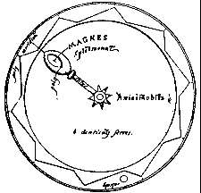
FIGURE I
(le moteur de Mirecourt)Il dit :
« Je vais vous révéler la manière de construire une roue à mouvement perpétuel. J'ai vu de nombreuses personnes qui s'y sont consacré vainement et même se sont épuisées en cherchant à inventer une telle roue. Mais elles ont toutes échoué, n'ayant pas remarqué que grâce à la vertu ou la puissance de la pierre d'aimant, toutes les difficultés pouvaient être surmontées. Pour construire la roue, prenez un boîtier en argent semblable à un miroir concave. Sur l'extérieur, faites des ciselures et des perforations, pas seulement dans un but esthétique, mais pour l'alléger et la faire mouvoir plus rapidement . Faites les perforations de telle façon qu'un œil non averti ne puisse pas voir ce qui se trouve placé avec ingéniosité à l'intérieur de la boîte. A l'intérieur placez, en les inclinant de petits clous de fer de poids égal fixés à la périphérie de la roue, espacés de la largeur d'un haricot ou d'un pois. La roue elle-même doit être d'un poids uniforme. Fixez ensuite très solidement le milieu de l’axe autour duquel la roue tourne de façon à ce qu’il ne bouge absolument pas. Ajoutez ici une barre d’argent et à son extrémité fixez une pierre d’aimant placée entre les deux boîtiers (coques) et préparée de la façon suivante : une fois arrondie et les pôles marqués comme indiqué précédemment, donnez lui la forme d’un œuf ; en laissant les pôles intacts, polissez les parties intermédiaires de façon à ce que, ainsi aplaties et occupant moins d’espace, la pierre ne puisse pas toucher les côtés du boîtier lorsque la roue tourne. Ainsi préparée, sertissez la comme une pierre précieuse sur un anneau. Le pôle Nord doit alors être tourné vers les dents ou les pignons de la roue en quelque sorte inclinés de façon que la vertu de la pierre ne puisse pas circuler selon un diamètre dans la dent mais suivant un certain angle. Quand une des dents approche du pôle Nord, devant à l’élan de la roue de le dépasser, elle approche alors du pôle Sud vis à vis duquel elle est plutôt éloignée qu’attirée comme la loi énoncée dans un précédent chapitre le montre. En conséquence, une dent sera constamment attirée et repoussée.
Pour que la roue tourne plus rapidement, placez à l’intérieur une petite bille de cuivre ou d’argent d’une dimension qui lui permette d’être saisie entre deux dents. Par conséquent, en raison du mouvement continu de la roue dans une direction, la chute de la masse se fera de façon continue dans l’autre. Etant continuellement attrapée entre les dents de la roue qui ne cesse de tourner, son propre poids fait qu’elle cherche à aller en direction du centre de la terre, aidant en cela le mouvement des dents et les empêchant de venir en position de repos face à la pierre d’aimant. Veillez à ce que les espaces entre les dents soient suffisamment creux pour leur permettre de saisir la masse dans sa chute comme l’indique le schéma suivant. »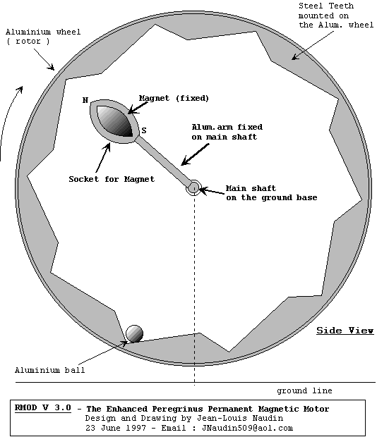
FIGURE II
(prototype moderne du moteur de Maricourt : Peregrinus selon Jean-Louis Naudin et Geoff Egel)Une copie du texte de Peregrinus a été placée le 23/06/97 sur le site Internet de J-L Naudin sous le titre : " The letter of Petrus Peregrinus ON THE MAGNET, AD.D. 1269 ", traduite par Frère Arnold, M.Sc. Principal de La Salle Institute, Troy avec une introduction de Frère Potamian, D.Sc, professeur de physique au Manhattan College, New York.
Autre référence : H.G. Booker, " Energy in Electromagnetism ", Peter Peregrinus LTD, 1982, part of the IEE Electromagnetic Waves Series 13
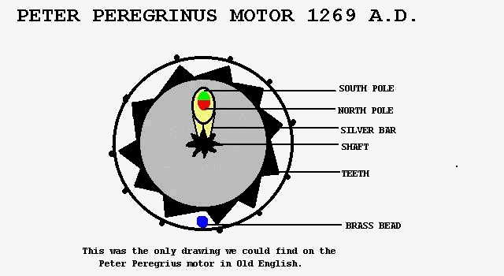
Geoff Egel, dans son encyclopédie de L’Energie Libre dit, lui, que Peregrinus se servait de morceaux de pierre d’aimant et de pointes enfoncées dans des disques de bois plats pour donner le rapport d’engrenages sur les disques. Ken Bozeman fait le récit de ce qu’il a vu en compagnie de ses deux frères, à la télévision à Bâton Rouge : un chercheur indépendant de Gonzalès, en Louisiane a un moteur basé sur le moteur magnétique de Péregrinus et qui semble fonctionner. Le moteur possède des aimants en fer à cheval en rotation qui semblent remplir la même fonction que les deux petites roues de l’appareil de Peregrinus.
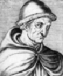
Pour terminer ce tour de la figure de Roger Bacon, nous proposons au lecteur cet article qui a paru dans la revue Ambix [AMBIX Vol. 23, Part I, March 1976] de Edmund Brehm, disponible sur le site. Si nous nous permettons d'inclure cet article, c'est que, nous semble-t-il, la diversité des chapitres de la présente section est là pour montrer que nous avons avant tout pour but de faire connaître le génie de Roger Bacon, dans sa diversité et même son universalité. Nous espérons donc que l'auteur de cet article ne nous tiendra pas rigueur de l'avoir emprunté au remarquable site levity.com. Du reste, cet article est destiné à être commenté, comme celui que nous avons donné dans la page d'introduction de l'Atalanta fugiens.
http://www.levity.com/alchemy/rbacon.html
ALCHEMY, throughout its history, has shown a dual nature. On the one hand, it has involved the use of chemical substances and so is claimed by the history of science as the precursor of modern chemistry. Yet at the same time, alchemy has, throughout its history, also been associated with the esoteric, spiritual beliefs of Hermeticism and thus is a proper subject for the historian of religious thought.
The chemical approach is easily understood. As the distinguished historian of alchemy, the late F. Sherwood Taylor, concluded: " The hopeless pursuit of the practical transmutation of metals was responsible for almost the whole of the development of chemical technique before the seventeenth century, and further led to the discovery of many important materials. This is the commonly recognized contribution of alchemy. "35 Mircea Eliade and others, on the other hand, have emphasized the soteriological function of alchemy as working toward the perfection and liberation of the human soul or spirit, a process symbolized in the perfection of metals into gold and of the human body to a state of optimum health and even immortality. Such an approach is complemented by the psychological studies of C. G. Jung, which correlate alchemical symbolism with the development of the psycho-religious life of the individual.
Eliade has conclusively demonstrated the religious nature of alchemy in Eastern cultures, and Jung has discussed the psychological basis of Western alchemy during its later period (the sixteenth and seventeenth centuries). But European alchemy during the Middle Ages, especially from a religious point of view, has received little attention. With both points of view in mind, I shall examine here the alchemical ideas of the thirteenth-century natural philosopher, Roger Bacon, and suggest the position he occupies in the history of the "Hermetic Art". There is a large corpus of treatises on alchemy that bear Bacon's name and simply establishing the authenticity of his works has held much scholarly attention. For this study I have relied upon only those works that can with certainty be credited to the Doctor Mirabilis.36
Because of Bacon's importance to the development of modern science, he is always mentioned in general histories of alchemy and chemistry. For the most part, however, historians have not clarified Bacon's place in these developments. Considering his alchemical writings from the chemical point of view, there is little material that would justify many of the claims that have been made over the years about his importance to that science This opinion agrees with that of Robert P. Multhauf, one of the more recent scholars who discusses this question. He points out that such a judgment was also shared by the famous alchemical "editors" of the sixteenth and seventeenth centuries, who seldom mention Bacon in their discussions of the great alchemists, or include works attributed to him in their printed collections.37
Bacon's chemistry is generally derivative and superficial. As one example, he reports a recipe at the beginning of his Opus Minus that, he says, is guaranteed to produce the "elixir". He first cites several works by Aristotle and Avicenna, then explains:
First there is pulverization, then solidification, then solution with ascension and depression [i.e., distillation], and a melting and mixing together. And afterwards there is sublimation with attrition and mortification; then follows the corruption of the oil, that is, it is separated from spirit so that afterwards the fiery power may be increased. After this, we consider the "proposition of lime", the distillation of oil, and the evaporation of water, so that we may finally obtain the solution from the first [metal?] into the seventh, and a contention with acute fever. Truly, whoever knows how to do these things would have the perfect medicine, which the philosophers call the Elixir, which immerses itself in the liquefaction as it is consumed by the fire and does not flee [i.e., evaporate].38
Taylor, after discussing such recipes, concluded that efforts to correlate such vague descriptions with actual chemical processes are futile.39 Yet the lack of any demonstrable contribution to chemical technique in Bacon s work was characteristic of his time, a period that was, as John Read described it, "redolent of the lamp rather than of the laboratory".40 Nevertheless, Bacon's theoretical ideas are equally unimpressive. His writings contain a great deal of unfounded criticism of other alchemists, much discussion of the importance of maintaining secrecy, and vague references to how very useful the Art is to theology, to medicine, to the state, and -- he emphasizes for Clement IV -- to the papacy. When Bacon discloses various "enigmas" to the Pope in his Opus tertium they turn out to be rather banal bits and pieces of alchemical lore, which most educated people of the time must have known, such as the correspondence between the seven metals and the seven celestial bodies, or the sulfur-mercury theory of metal formation. Bacon's division of alchemy into "speculative" and "practical" seems to me to have been overrated. In the first place, Bacon divided many branches of knowledge into speculative and practical aspects. Secondly, a dichotomy between the theoretical and practical aspects of alchemy had been recognized by adepts since Greek times.41
Viewed from the point of view of soteriology, Bacon's alchemical writings, taken by themselves, do not suggest a deep relationship between alchemy and religious experience. His idea that alchemy is useful to theology because it can determine the physical composition of the bodies of Adam and Eve may be curious, but it is not profound. His works lack the allegorical and symbolic elaboration, called in alchemy the amplification, which is the starting point of Jung's analysis of alchemical symbolism. Yet placed within the context of Bacon's entire conception of science and salvation, the soteriological nature of his alchemical ideas can be appreciated. His conception of science constitutes the amplification of his alchemy, and it implicitly links the alchemical process that produces the elixir of life to the soteriological path that leads through Christian morality to eternal salvation.
In all of Bacon's later works, he attempted to integrate all knowledge into a scientia integralis, an integrated, universal science. His vision of this universal science had its roots in his study around 1247 of The Secrets of Secrets, a book that spuriously purports to be the occult and most profound teachings of the philosopher Aristotle. Prior to 1247, Bacon's interests focused on the traditional topics of scholastic learning upon which he lectured at the University of Paris. There he showed no tendency toward his later concern with science, astrology, alchemy, or magic. In fact, in his lectures on the Pseudo-Aristotelian treatise, De Plantis, Bacon even seems to deny the validity of alchemy, maintaining on philosophical grounds that transmutation of metals per speciem is impossible.42 But all of Bacon's interests change after he discovered The Secrets of Secrets: the work inspired Bacon's study of medicine, astrology, alchemy, and it was the seed for his vision of a universal science. " It cannot be emphasized too strongly, " Steward C. Easton writes, " that the enormous difference between what Bacon now learns from the books of Secrets and all that he had previously studied was that the knowledge now acquired is practical.... His whole later life and the emotional intensity with which he pursued it can be traced to the impact of this book. "43 Bacon set off studying medicine, the chief subject suggested by the Secrets, and around 1250 wrote a treatise on the retardation of old age in which two-thirds of the quotations are from this spurious work.44 In the next few years Bacon wrote a commentary to the Secrets; he studied astrology and alchemy, and he perhaps began the study of ancient languages, Greek, Hebrew, and Arabic. The one thing that now set Bacon apart from the other men of his time -- if, perhaps, only in Bacon's mind -- was his intuitive vision that all this knowledge is marvelously interrelated. Thus, Bacon learned from the Secrets that medicine is very useful because it provides a regimen for health, and combined with alchemy, it teaches how to prolong human life. Astrology is also most useful in this regard because of the complexional correspondences of the stars, humors, qualities, elements, and metals. And all these sciences are most useful, utilissimae, for theology because they can explain the composition of the bodies of Adam and Eve before the Fall and also describe the means by which the damned will be tortured in hell.
One can almost become caught up by Bacon's obvious enthusiasm, until he gets down to specific examples, and then one is struck by how vague everything is. Bacon's " gift for systematic analysis is greatly inferior to his imagination and vision ", Easton observes.45 Such a state of mind led to " an indiscriminating eclecticism detrimental to logical unity and harmony "'.46 Yet clear in Bacon's mind was an intuitive vision of universal science, a vision that rests at the center of his work. Around it cluster his thoughts on revelation, astrology, morality, alchemy, salvation, the prolongation of life, and the other sciences. Some parts of his system, such as optics, are more fully thought out and developed than others, but their one unifying aspect, Bacon believed, is that they make up the scientia integralis.
In trying to understand the personality behind Bacon's vision, we need not go as far as David Knowles, who asserts that Bacon's ideas " seem to have been vitiated by some deep psychological flaw, and by a restlessness and lack of control that prevented his brilliant talents and intuitive genius from attaining full realization ".47 Yet the picture of Bacon which emerges from his writings is of a man who was moved by a highly-cathected emotional drive. It was this drive that gave Bacon the feeling of power and righteousness that carried him throughout his difficult career. The subjective reality of such a drive may also have lent experiential substance to his ideas on revelation, which Bacon believed to be the ultimate source of science. This revealed wisdom was in turn linked to human salvation:
And God wishes all men to be saved and no man to perish, and His goodness is infinite; He always leaves some way possible for man through which he may be urged to seek his own salvation.... For this reason the goodness of God ordained that revelation would be given to the world that the human race might be saved.... And it is not surprising that the wisdom of philosophy is of this kind since this wisdom is only a general revelation made to all mankind because all wisdom is from God.48
Scientific knowledge may lead to salvation, but the prerequisite for this revealed wisdom of science is Christian morality. Bacon explains in his commentary to the Secrets that Moses, Abraham, and the other Hebrew patriarchs were the original founders of science, which was revealed to them by God because of their great sanctity. Even the ancient pagans -- Aristotle, of course, and Plato, Avicenna, and others -- by their exemplary lives, " arrived at the secrets of wisdom and acquired all the sciences. But we Christians, " Bacon continues, " discover nothing worthy, the reason for which is that we do not have their morals. For it is impossible that wisdom stand with sin, but perfect virtue is required by her. "49 This wisdom of philosophy, Bacon maintained, is not just the traditional studies of physics and metaphysics; it is all the sciences which make up the scientia integrsalis. And not a single piece of the whole can be omitted, he insists. In an attack upon Albertus Magnus, for example, Bacon writes that this master knows nothing of the science of perspective, which is necessary in order to know the whole, " and therefore, he can know nothing of the wisdom of philosophy ". Then, moving on to alchemy, Bacon declares, " Indeed, he who has composed so many and such great volumes on natural matters . . . is ignorant of these fundamentals [of alchemy], and so his building cannot stand "-- et ideo suum aedificium stare non potest ! 50 Thus, one must know the secrets of alchemy in order to complete that edifice of wisdom that is so important for the salvation of man.
Alchemy is linked to salvation by another pillar in Bacon's intellectual structure: his medical ideas on the elixir of life. The alchemical " medicine " not only procures gold, he writes, but " what is infinitely more [important], it will prolong life ''.51 The prolongation of life, furthermore, is in turn closely tied up with morality. Bacon explains to the Pope that there are two reasons for the premature onset of old age: the first is a lack of the proper regimen of health, which includes the use of alchemically concocted drugs and elixirs; the second reason is the decline of morality.52 Thus, a good Christian life allows one to receive the revelation of the universal science, which can be used in man's quest for salvation. It also helps to prolong his life, as was the case among the saintly patriarchs before the Flood.53 This prolongation of life in itself is a kind of proto-salvation, for just as the elixir works by bringing the elements and humors of the body into as perfect a harmony as is possible in this life, so at the Resurrection, the bodies of the saints will be brought into perfect harmony, while the damned will be tormented in hell by an eternal affliction of the bodily humors.54Here we can see implicit in Bacon's system an intimate interrelationship between alchemcy, morality, the prolongation of life, and salvation. This matrix of ideas can be summarized most clearly in a diagram:
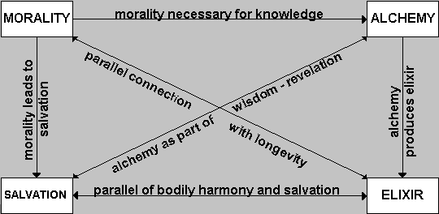
Such a set of relationships is strikingly similar to the symbiosis of tantric yoga and alchemy discussed by Eliade. In the Indian system, the spiritual development of the individual to liberation not only parallels, but is causally interrelated to the production of the elixir through alchemy and the attainment of physical immortality. Roger Bacon was not a medieval yogi, to be sure; but his system is consistent with the spirit of the fourteenth-century Tantrist, Madhava, who taught that alchemy " is not to be looked upon as merely eulogistic of the metal, it being immediately, through the conservation of the body, a means to the highest end, liberation. "55
One should not exaggerate the importance of alchemy for Bacon; the other sciences were equally important to him. However, of all the components of the universal science, only alchemy and the elixir are integrated by Bacon so closely with his ideas on Christian morality and salvation. Bacon's formulation of this relationship, no matter how incompletely or even unconsciously developed, is an important link between the ancient soteriological tradition of alchemy and the first blossoming of the Art in Europe during the fourteenth century. Such a view of the underlying structure of Bacon's ideas relating to alchemy also agrees with the thesis of Jung and Eliade that the most significant, the most useful -- utilissima -- approach that we can take to alchemy is by way of the deeper psychological and religious pathways of the human mind and soul.--------------------------------------------------------------------------------
Edmund Brehm's email address is edmbrehm@micron.net.
--------------------------------------------------------------------------------
REFERENCES
35. The Alchemists, New York, 1949, ix-x. [les alchimistes ont effectivement anticipé les chimistes sur de très nombreuses dédouvertes de sels dont la plupart leur était d'ailleurs absolument inconnus]
36. The published editions of these works are: Opus Majus, ed. J. H. Bridges, 3 vols., London, 1900; Eng. trans. Robert Burke, 2 vols., Philadelphia, 1928; Opera quaedam hactenus inedita Fr. Rogeri Bacon, ed. J. S. Brewer, Roll Series, no. 15, London, 1859, hereafter cited as "Brewer"; Part of the Opus Tertium of Roger Bacon, ed. A. G. Little, Aberdeen, 1912; Secretum Secretorum cum Glossis et Notulis Rogori Baconi, Opera hactenus inedita Rogeri Baconi, fasc. 5, ed. Robert Steele, Oxford, 1920 -- this collection hereafter cited as "O.H.I.", De Erroribus Medicorum, in O.H.I., fasc. 9, ed. A. G. Little and E. Withington, Oxford, 1928, I50-79. Cf. A. G. Little, "Roger Bacon's Works", in Roger Bacon, Essays Contributed by Various Authors on the Occasion of the Commemoration of the Seventh Centenary of his Birth, ed. A. G. Little, Oxford, 1914, 395-8, and D. W. Singer, "The Alchemical Writings of Roger Bacon", Speculum, 7 (1932), 80-6. [dans cet ordre d'idées, on est allé avec Jung jusqu'à dénier qu'il y ait eu des travaux effectifs d'alchimie, la matière première se trouvant uniquement dans l'esprit de l'opérateur]
37. The Origins of Chemistry, London, 1966, 191-2.
38. Opus minus (Brewer), 314: Prius est pulverisatio cum congelatione, deinde resolutio, cum ascensione, et depressione, et incarceratione, et mixtione. Et postea est sublimatio cum attritione et mortificatione, deinde sequitur corruptio olei, vel separatur a spiritu, ut post intendatur virtus ignea. Nam post haec intendimus calcis propositionem, et olei distillationem, et aquae exaltationem, ut ultimo quaeramus resolutionem a primo in septimum, et contentionem cum febre acuta. Qui vero haec sciret adimplere haberet medicinam perfectam, quam philosophi vocant Elixir, quae immergit se in liquefacto, ut consumeretur ab igne, nec fugeret.[il faut ajouter à cela que Bacon se proposait de rédiger un traité de chimie - c'est-à-dire d'alchimie - dans son Opus tertium, et que pour une raison inconnu, ce traité n'a pas vu le jour]
39. Alchemists ( I ), 115. [mais il faut tenir compte que les écrits des alchimistes sont cryptés]
40. Prelude to Chemistry, London, 1939, 43. [et il faut avouer que les historiens de l'alchimie n'ont guère fait d'efforts pour essayer de lire entre les lignes...]
41. Wilhelm Ganzenmüller, L'Alchimie au moyen âge, trans. G. Petit-Dutaillis, Paris, 1940, 161-2. [les alchimistes ne pouvaient faire l'économie de cet aspect dual ; aussi leurs écrits étaient-ils disposés en sorte que le lecteur se trouvait rapidement plongé dans la perplexité, devant des énumérations insolites de substances salines et la nécessaire piété dont devait faire preuve l'impétrant, car l'alchimie était caractérisée expressément comme un don de Dieu]
42. Quaestiones supra librum de plantis, O.H.I., fasc. II, ed. Robert Steele, Oxford, 1932, 251-2.
43. Roger Bacon and his Search for a Universal Science, New York, 1952, 80-1, 86.
44. De Retardatione Accidentium Senectutis cum aliis opusculis de rebus medicinalibus, O.H.I., fasc. 9, ed. A. G. Little and E. Withington, Oxford, 1928, I-83.
45. Roger Bacon (9,) 168
46. Theodore Crowley, Roger Bacon: The Problem of the Soul in his Philosophical Commentaries, Louvain, 1950, 167.
47. The Religious Orders in England, Cambridge, 1960, iii, 215.
48. Opus Tertium, ed. Little, 64-5 et passim, quoted in translation by Easton, Roger Bacon (9), 75.
49. Compendium Studii Philosophiae (Brewer), 410-2. [ces idées devaient aboutir au concept de la pristina sapientia : la sagesse primordiale des Anciens, dont Newton était un partisan convaincu]
50. Opus Tertium (Brewer), 37.
51. Opus Majus (Burke trans.), 627. [mais ici, Bacon comme d'autres est ombé dans le travers de confondre l'élixir, qui n'est que l'un des états évoulés du Mercure, avec la soi disant panacée universelle, chimère que certains recherchent encore activement]
52. Ibid., 617-18. [l'élixir, selon nos hypothèses, n'est autre que l'eau permanente des Sages : le secret consiste à la garder au feu le plus longtemps possible afin qu'une cristallisation intervienne par sursaturation de la solution saline]
53. Opus minus (Brewer), 373.
54. Ibid., 367-74. [l'Apocalypse alchimique ne saurait s'apparenter à la tragédie promise par les textes et la parousie du magistère se signale à l'Artiste par l'étoile des Mages qui les guide jusqu'au berceau du BasileuV]
55. Saravadars anasamgraha, trans. E. B. Cowell and A. E. Gough, 2nd ed., London, 1894, 140, quoted by Mircea Eliade, Yoga, Immortality and Freedom, trans. Willard R. Trask, 2nd ed., Princeton, 1969.
Extrait de Roger Bacon, sa vie, ses ouvrages, ses doctrines d'après des textes inédits, par Emile Charles, Paris, Hachette, 1861 -
Il y a peu de choses à dire des œuvres imprimées de Roger Bacon après l'excellente notice que M. V. Leclerc a insérée dans l'Histoire littéraire. Nous renvoyons à cet article pour les indications bibliographiques, et nous nous bornons à examiner l'authenticité de ces œuvres. Ce sont :
1° Speculum alchimiae, souvent réimprimé de 1541 à 1702 dans les bibliothèques et répertoires d'alchimie, sans mériter tant d'honneurs; traduit en anglais par un anonyme, en français par un gentilhomme du Dauphiné, et souvent sous le faux titre : Miroir de maistre Jean de Mehun (1). Il y a sept chapitres qui traitent de la définition de l'alchimie, de la nature des métaux, de leur constitution, de la manière de composer l'élixir qui les purifie, et comment et quand on doit opérer la projection sur les métaux. Rien ne prouve que cet opuscule appartienne à notre docteur. On en trouve très-peu de manuscrits; les idées et la méthode ne sont pas celles qu'il indique ailleurs ; pourtant, il n'y a pas de raison positive de le lui enlever.
2° De mirabili potestate artis et naturae, ubi de philosophorum lapide, etc., publié par Oronce Finée, à Paris, en 1542; édition très-défectueuse et souvent inintelligible, réimprimée dans le Thea-trum chemicum, et traduite en français par Jacques Gérard de Tournus d'une façon tout aussi peu claire (2); l'édition d'Oxford 1594 et celle de Hambourg 1613 sont infiniment préférables. Le titre de cette dernière est plus exact : Epistolœ fratris Rogerii M. Fortoal, qai voulut bien autoriser de son patronage et rendre plus faciles par ses recommandations nos recherches dans les bibliothèques anglaises.Baconis de secretis operibus artis et naturae et de nullitate ma-giae opera J. Dee, Londinensis, pluribus exemplaribus castigata olim, et ad sensum integrum restitutœ, etc., in-8°. Cet ouvrage a été aussi traduit en anglais en 1597, in-4°, à Londres, sous le nom de R. Bachin, puis, en 1659, sous ce titre : Frier Bacon his discovery of the miracle of art, nature and magick, faithfully translated ont of Dr Dee's own Copy, by T. M. and never before in english. C'est un recueil de plusieurs lettres sur différents sujets. On croit qu'elles furent écrites à Guillaume d'Auvergne (3); ce qui les reporterait à l'extrême jeunesse de l'auteur, ou plus probablement à Jean de Londres, c'est-à-dire, suivant nous, Jean Basingestokes; peut-être aussi furent-elles adressées, comme les trois lettres dont nous parlerons plus loin, à Jean de Paris, son disciple bien-aimé. On y trouve dix chapitres, dont les cinq derniers sont énigmatiqucs, et plusieurs dates qu'il n'est pas facile d'expliquer. Au chapitre VII (4), on lit : « Je réponds à votre demande la 601e année des Arabes, » et au chapitre X (5) : « Vous m'avez interrogé au sujet de certains secrets l'an 608 des Arabes. » Ce qui fait, pour notre manière de compter, l'an 1206 et l'an 1212; or, Bacon n'était pas encore né à cette époque. Il y a corruption dans le texte, ou bien ces chapitres ne sont pas de lui. Quant aux premiers, ils dénoncent à première vue leur auteur; on y voit la plus grande confiance dans les ressources et la portée du génie humain, le dédain pour les opérations magiques, et la foi dans un avenir où des prodiges seront réalisés par l'industrie. C'est un des opuscules les plus connus de Bacon. Nous nous bornons à cette mention (6).
3° Libellus Rogerii Baconi Angli, doctissimi mathematici etmedici de retardandis senectutis accidentibus et de sensibus con-servandis (7) oxoniae. Anno 1590. — Ce livre est très-rare, et nous ne l'avons rencontré qu'en Angleterre. La bibliothèque impériale ne possède que la traduction anglaise : The cure af old age, and preservation of youth. By the great mathematician and physi-cian Roger Bacon, a franciscan frier, translated, etc., by Richard Brown. London, 1683. Un manuscrit d'Oxford (8) contient ce traité avec une longue dédicace à un pape, qui nous parait avoir été Nicolas III. L'auteur y donne lui-même le sommaire de son œuvre : « Il y traite : 1° des causes de la vieillesse et des moyens d'y résister; 2° des accidents de la vieillesse, des signes des lésions des sens, des causes qui peuvent servir ou blesser les sens, l'imagination et la mémoire ; 3° des aliments et des boissons qui peuvent restaurer les humeurs chaque jour évaporées; 4° des moyens d'empêcher cette évaporation ; 5° des aliments qui hâtent les progrès de la vieillesse; 6° des moyens d'absorber les humeurs qui causent ' les accidents de la vieillesse ; 7° des moyens de réconforter la chaleur naturelle ; 8° des moyens de réconforter les facultés et les sens et de ramener les forces ; 9° des moyens de fortifier le corps et de faciliter les mouvements ; 10° des moyens de conserver à la peau sa beauté juvénile, sa propreté et sa couleur, et d'éviter les rides; 11° de l'utilité de cette lettre, du régime des vieillards, de la composition des médecines (9). L'ouvrage publié renferme seize chapitres. »
4° Sanioris medicinae magistri D. Rogeri Baconis angli de arte chymiae scripta, cui accesserunt opuscula alia ejusdem authoris 1603, in-12, réimprimé en 1620, sous ce titre : Sanioris medicinae, etc. Thesaurus chemicus. — Sous ce titre, sont rassemblés six petits traités qui ont été souvent jugés apocryphes. Il y a pourtant à distinguer, et peut-être le plus grand nombre de ces fragments revient-il à notre docteur. D'abord, les deux extraits qui sont en tète du livre sont évidemment de lui, et l'un est emprunté à l'Opus tertium, l'autre à un ouvrage désigné sous le nom de Livre des six sciences, et qui pourrait bien être le Compendium philosophiae. Le premier traité est un abrégé du livre d'Avicenne, de . Anima, et ne renferme que des énigmes alchimiques. Bacon reconnaît en maint passage avoir traduit cette œuvre d'Avicenne (10). Le second, Breve breviarium fratris Rogeri Baconi de Dono Dei, se divise en deux parties : l'une spéculative, l'autre théorique. Chaque fois que Bacon parle de l'alchimie, il la divise ainsi, et le sommaire qu'il donne de ses travaux à ce sujet se rapporte parfaitement à l'ordre suivi dans cet opuscule. C'est son style, ce sont les mots qu'il emploie, ce sont parfois des passages entiers qui se retrouvent ailleurs; puis de très-vieux manuscrits de Londres et d'Oxford, et même un de Paris, renferment ce même ouvrage, formellement attribué à Bacon. Enfin, les doctrines sont celles que Bacon professe partout (11). Le troisième est attribué à Raymond Gaufredi, qui l'aurait reçu de la bouche même de Bacon prisonnier, et une note rejetée à la fin nous apprend que Bacon révéla ses secrets à Raymond, général des Mineurs, en échange de la liberté que celui-ci lui rendit. Dans le reste du livre, il faut encore restituer à notre auteur le Tractatus trium verborum, dont nous avons lu beaucoup de manuscrits, qui est composé de trois lettres à Jean de Paris, probablement l'élève du philosophe, et qui, à part tout témoignage, porte à chaque ligne l'empreinte de son origine. Bref, s'il fallait apprécier les doctrines de Bacon en alchimie, il vaudrait mieux les puiser dans ces trois traités que dans le Miroir d'alchimie, dont l'origine moins contestée est plus suspecte, et qui est un abrégé insignifiant.
5° Rogerii Baeonis Angli, viri eminentissimi Perspectiva, nunc primum in lucem edita, opera et studio Johannis Combachii philosophiae professoris in academia marpurgensi. Francoforti 1614, in-4°. — Ce livre n'est pas autre chose que la cinquième partie de l'Opus majus, édité par Jebb ; le commencement seul offre une variante.
6° Specula Mathematica in quitus de spetierum multiplica-tione earumdemque in inferioribus virtute agitur. Liber omnium scientiarum studiosis apprime utilis, Combachii studio et opera Francofurti 1614. — C'est la quatrième partie de l'Opus majus, sans un seul changement, telle qu'elle se trouve dans l'édition de Jebb. Combach a omis les derniers chapitres, qui traitent de l'astrologie, de la géographie et de la chronologie, et qui, dans l'édition de Jebb, vont du folio 108 au 255. M. Cousin se trompe donc quand il avance que ce traité était tout à fait différent de celui de l'Opus majus, et qu'il le rapporte à l'Opus tertium. Une simple confrontation des deux ouvrages aurait pu lui éviter cette erreur (12). C'est encore à tort que cet illustre philosophe conseille de rechercher dans ce livre des détails plus complets sur l'optique; c'est, à proprement parler, un traité de mathématiques, et le mot specula a seul pu causer cette confusion. À l'ouvrage publié par Combach est joint un opuscule intitulé : De speculis; l'auteur y traite de la fabrication des miroirs ardents et de la manière de faire converger en un même point tous les rayons qui tombent sur une surface réfringente.
7° Rogeri Bacon Opus majus ad Clementem Papam. Publié par Samuel Jebb en 1733, et réimprimé à Venise en 1750, avec un Prologus galeatus, par les Franciscains della Vigna. C'est le monument le plus important que la presse nous ait livré du génie de Bacon. Tout en rendant justice au savoir et au travail de sir Jebb, il importe pourtant d'établir que son édition n'est pas sans défaut, et qu'elle renferme une partie importante qui jamais n'a pu entrer dans le cadre de cet ouvrage, et qu'elle a omis d'autres parties que Bacon lui-même y avait insérées ; ces deux points sont hors de doute. Il y a d'abord dans l'Opus majus tout un long traité (pages 358-445) intitulé : Traetatus magistri Rogeri Bacon de multiplicatione specierum, qui vient après la Perspective, et qui, au premier coup d'œil d'un lecteur attentif, y parait déplacé. En effet, ce sujet a déjà été étudié dans la quatrième partie (pages 65-88) ; et dans la Perspective qui précède, Bacon a soin de nous dire que, pour comprendre cette science, il faut toujours avoir en main son livre sur la multiplication des images (13), qui, dans l'ordre adopté par Jebb, ne vient qu'après la Perspective elle-même. La Perspective cite souvent ce traité; donc, il n'est pas à sa place. Il y a plus : on lit dans ce traité douteux, page 368, cette simple mention : « Ut tactum est in communibus naturalium. » Or, ce livre ainsi cité, Jebb le savait, fait partie d'un ouvrage postérieur, l'Opus minus suivant l'éditeur, l'Opus tertium suivant nous (14), et il est vraiment étrange que cette phrase ne l'ait pas arrêté. Un autre témoignage se retrouve à la page 358. L'auteur dit : « J'ai démontré, dans la troisième partie de cet ouvrage, que ces mots essence, substance, nature, puissance, etc., sont synonymes. » Or, rien de pareil dans la troisième partie de l'Opus majus; mais cette preuve se trouve au long aussi dans le traité de communibus naturalium, qui, en réalité, est la troisième partie de l'Opus tertium. Enfin, Bacon lui-même nous donne, dans l'Introduction de l'Opus tertium, le sommaire de l'Opus majus. Il y parle de la multiplication des images, telle qu'elle se trouve expliquée dans la quatrième partie; de ce long traité, il ne dit pas un mot. Donc, cet ouvrage, qui rompt l'unité déjà peu sensible de l'œuvre de Bacon, qui fait double emploi avec la quatrième partie, qui cite des ouvrages postérieurs à l'Opus majus, des passages qui ne s'y retrouvent pas, n'a jamais fait partie de ce recueil. Sa place est dans l'Opus tertium, comme on le verra bientôt.[...]
(1) The miror of Alchymy composed by the thrice famous and learned fryer H. Bacon.....alto a most excellent and learned discourse of the admirable force and efficacie of art, etc. London, 1597; in-4°.
(2) Souvent réimprimée, entre autres fois en 1613, avec le Miroir de maistre Jeham de Metrun.
(3) Jebb; Op. maj. ad praef.
(4) edit. de 1542, fol. 40.
(5) Idem, fol. 32.
(6) La traduction française est pleine d'inepties. L'auteur trouve le texte obscur — on le voit de reste, — et se plaint qu'il ne soit pas enrichi de « numéreuses locations latines. L'avertissement parle de cette composition écrite par « Monsieur R. Bacon, philosophe et grand personnage de son temps. » Paris, 1629.
(7) Ce titre est le véritable, et diffère un peu de celui que transcrit l'Histoire littéraire.
(8) Canonici codices, 334; in-12.
(9) Canonicus codex, 324, fol. 2, De conservatione sanitatis et juventutis preservatione.
(10) Communia naturalium, cap. 11. Manusc. de Paris. - Op. tert , cap. XII. Introd.
(11) Voy. surtout les pages 100 a 108.
(12) Journal des Savants, p. 235. 1848.
(13) Opus majus, 5e pars., p. 256.
(14) Jebb. praef. ad Opuus majus.
(15) Opus tertium, cap. XXVI.
Le traité Le Miroir d’Alquimie de Jean de Mehun a été imprimé la première fois à Lyon en 1557, accompagné d’un texte au titre identique attribué à Roger Bacon. En réalité ces deux oeuvres sont les versions d’un Speculum alchimiae très répandues dans des manuscrits du XVe siècle édités sous l’autorité de Bacon, quoique les analyses historiques leur attribuent une plus grande ancienneté. L’auteur présumé du Miroir d’Alquimie, Jean Chopinel s’était lui-même surnommé Clopinel car il boitait légèrement. Il est plus connu sous le pseudonyme de Jean de Mehun ou de Meun, ou encore de Meung. Il est ce poète qui continua l’œuvre commencée par Guillaume de Lorris Le Roman de la Rose.
Jean de Meun est né à Meung-sur-Loire vers 1240 et est mort à Paris vers 1305. Ce roturier philosophe fit de solides études et l’on peut dire qu’il connaissait presque tout de ce que l’on pût savoir de son temps. Il lui est attribué à tort ou à raison des œuvres traitant de l’alchimie comme Le miroir, Les remontrances de Nature à l’alchimiste errant et La fleur d’alchimie. [cf. bnam.fr]
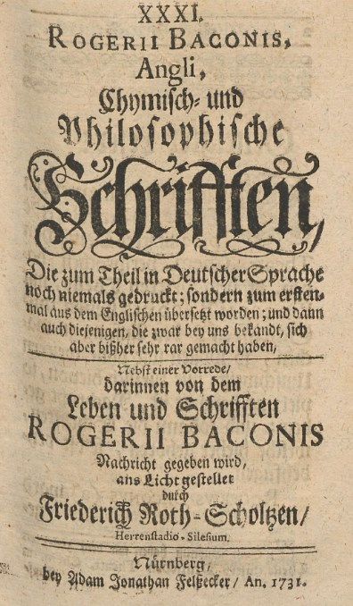
Deutsches Theatrum chemicum, Dritter theil, 57 (2) - 1731
Dans leurs écrits les Philosophes se sont exprimés de bien des manières différentes, mais toujours énigmatiques. Ils nous ont légué une science noble entre toutes, mais voilée complètement pour nous par leur parole nuageuse, entièrement cachée sous un voile impénétrable. Et pourtant ils ont en raison d'agir ainsi. Aussi, je vous conjure d'exercer avec persévérance votre esprit sur ces sept Chapitres, qui renferment l'art de transmuer les métaux, sans avoir à vous inquiéter des écrits des autres philosophes. Repassez souvent dans votre esprit leur commencement, leur milieu, leur fin, et vous y trouverez des inventions si subtiles que votre Âme en sera remplie de joie.
CHAPITRE I
Dans quelques manuscrits anciens, on trouve de cet art plusieurs définitions desquelles il importe que nous parlions ici. Hermès dit :
«L'Alchimie est la science immuable qui travaille sur les corps à l'aide de la théorie et de l'expérience, et qui, par une conjonction naturelle, les transforme en une espèce supérieure plus précieuse.»
[cette définition, on le voit, n'implique nullement une idée de transmutation métallique. ] Un autre philosophe a dit :
«l'Alchimie enseigne à transmuer toute espèce de métal en une autre, cela à l'aide, d'une Médecine particulière, ainsi qu'on peut le voir par les nombreux écrits des Philosophes.»
C'est pourquoi je dis :
«I'Alchimie est la science qui enseigne à préparer une certaine Médecine ou élixir, laquelle étant projetée sur les métaux imparfaits, leur donne la perfection dans le moment même de la projection.» [on comprend bien, dès lors, que notre propos sera de « cerner » le contexte dans lequel ce petit traité a été écrit et d'en repérer les bornes essentielles, ramenées à un contexte historique]
CHAPITRE II
Je vais parler ici des principes naturels et de la génération des métaux [voir le Bergbüchlein sur la génération des métaux, avec des notes de Daubrée]. Notez d'abord que les principes des métaux sont le Mercure et le Soufre. Ces deux principes ont donné naissance à tous les métaux et à tous les minéraux, dont il existe pourtant un grand nombre d'espèces différentes
[nous pouvons adhérer, sous de certaines conditions, à ce que dit le pseudo-Bacon pour les minéraux ; en tout cas, il est clair que les argiles sont issues de la décomposition des roches feldspathiques ainsi que nous l'indiquons dans la section sur les blasons alchimiques. Nous ne pouvons pas adhérer, bien sûr, à ce discours pour les métaux].
Je dis de plus que la nature a toujours eu pour but et s'efforce sans cesse d'arriver à la perfection, à l'or. Mais par suite de divers accidents qui entravent sa marche, naissent les variétés métalliques, ainsi qu'il est clairement exposé dans plusieurs philosophes. Selon La pureté ou l'impureté des deux principes composants, c'est à-dire du Soufre et du Mercure, il se produit des métaux parfaits ou imparfaits, l'or, l'argent, l'étain, le plomb, le cuivre, le fer. Maintenant recueille pieusement ces enseignements sur la nature des métaux, sur leur pureté ou leur impureté, leur pauvreté ou leur richesse en principes. [ce qui suit reprend en partie ce qu'écrit B. Valentin dans son Traité Chymico-Philosophique des Choses naturelles et surnaturelles des métaux et des minéraux ; voyez aussi la Révélation de la Teinture des métaux de Bernard Le Trévisan]
Nature de l'Or : l'Or est un corps parfait composé d'un Mercure pur, fixe, brillant, rouge et d'un Soufre pur, fixe, rouge, non combustible. L'Or est parfait.
Nature de l'Argent: c'est un corps pur, presque parfait, composé d'un Mercure pur, presque fixe, brillant, blanc. Son Soufre a les mêmes qualités. Il ne manque à l'Argent qu'un peu plus de fixité, de couleur et de poids.
Nature de l'étain : c'est un corps pur, imparfait, composé d'un Mercure pur, fixe et volatil, brillant, blanc à l'extérieur, rouge à l'intérieur. Son Soufre a les mêmes qualités. Il manque seulement à l'étain d'être un peu plus cuit et digéré.
Nature du plomb: c'est un corps impur et imparfait, composé d'un Mercure impur, instable, terrestre, pulvérulent, légèrement blanc à l'extérieur, rouge à l'intérieur. Son Soufre est semblable et de plus combustible. Il manque au plomb, la pureté, la fixité, la couleur ; il n'est pas assez cuit. [c'est pourtant le plomb qui fournit une des solutions possibles dans la voie de la saturnie végétale]
Nature du cuivre : le cuivre est un métal impur et imparfait, composé d'un Mercure impur, instable, terrestre, combustible, rouge, sans éclat. De même pour son Soufre. II manque au cuivre, la fixité, la pureté, le poids. Il contient trop de couleur impure et de parties terreuses incombustibles. [le cuivre était comparé à Prothée pour la richesse et la variété des couleurs qu'on peut en tirer par M.A. Gaudin]
Nature du fer: le fer est un corps impur, imparfait, composé d'un Mercure impur, trop fixe, contenant des parties terreuses combustibles, blanc et rouge, mais sans éclat. Il lui manque la fusibilité, la pureté, le poids ; il contient trop de Soufre fixe impur et de parties terreuses combustibles. [c'est pourtant l'oxyde fer sous la forme de sesquioxyde qui fournit les teintures de nombreux aluminates et nésosilicates]
Tout alchimiste doit tenir compte de ce qui précède.
CHAPITRE III
Dans ce qui précède on a suffisamment déterminé la genèse des métaux parfaits et imparfaits. Maintenant nous allons travailler à rendre pure et parfaite la matière imparfaite. Il ressort des chapitres précédents que tous les métaux sont composés de Mercure et de Soufre, que l'impureté et l'imperfection des composants se retrouvent dans le composé ; comme on ne peut ajouter aux métaux que des substances tirées d'eux-mêmes, il s'ensuit qu'aucune matière étrangère ne peut nous servir, mais que tout ce qui est composé des deux principes, suffit pour perfectionner, et même transmuer les métaux.
Il est très surprenant de voir des personnes, pourtant habiles, travailler sur les animaux, lesquels constituent une matière très éloignée, alors qu'elles ont sous la main une matière suffisamment prochaine dans les minéraux. II n'est pas impossible qu'un Philosophe ait placé l'oeuvre dans ces matières éloignées, mais c'est par allégorie qu'il l'aura fait.
Deux principes composent tous les métaux et rien ne peut s'attacher, s'unir aux métaux ni les transformer, s'il n'est lui-même composé des deux principes. C'est ainsi que le raisonnement nous force à prendre pour Matière de notre Pierre, le Mercure et le Soufre. Le Mercure seul, le Soufre seul ne peuvent engendrer les métaux, mais par leur union, ils donnent naissance aux divers métaux et à de nombreux minéraux [voir la section sur les blasons alchimiques à le Mercure naturel]. Donc il est évident que notre Pierre doit naître de ces deux principes. Notre dernier secret est très précieux et très caché : sur quelle matière minérale, prochaine entre toutes, doit-on directement opérer ? Nous sommes obligé de choisir avec soin. Supposons d'abord que nous tirions notre matière des végétaux : herbes, arbres et tout ce qui naît de la terre. II faudra en extraire le Mercure et le Soufre par une longue cuisson, opérations que nous repoussons, puisque la nature nous offre du Mercure et du Soufre tout faits. [On tirera pourtant profit des cendres des arbustes, du varech et des salicornia pour récolter le borith et le natron à section Bain des astres]
Si nous avions élu les animaux, il nous faudrait travailler sur le sang humain, cheveux, urine, excréments, oeufs de poule, enfin tout ce que l'on peut tirer des animaux. Il nous faudrait, là encore, extraire par la cuisson, le Mercure et le Soufre [il faudra ici récupérer les cendres des os calcinés, riches en phosphates qui jouent un rôle dans une certaine variété de Mercure ; cf. Ebelmen]. Nous récusons ces opérations pour notre première raison. Si nous avions choisi les minéraux mixtes, telles que sont les diverses espèces de magnésies, marcassites, tuties, couperoses ou vitriols, aluns, borax, sels, etc., il faudrait mêmement en extraire le Mercure et le Soufre par cuisson, ce que nous repoussons pour les mêmes raisons que ci-dessus.[tous les minéraux et sels que cite le pseudo-Bacon sont utiles à l'oeuvre ; la magnésie peut entrer dans la composition du fondant sous la forme de sulfate infusible ; la marcassite peut procurer le vitriol vert sans lequel on ne peut avoir de tartre vitriolé ; la tutie peut participer au fondant ou, par l'oxyde de zinc, procurer de la gahnite dont nous parlons dans la section sur le Mercure ; la couperose est le terme générique des sulfates ; les vitriols sont essentiels ; l'alun procure le Soufre blanc ; le borax est un candidat de choix pour le dissolvant, etc.]
Si nous choisissions l'un des sept esprits comme le Mercure seul, ou le soufre seul, ou bien le Mercure et l'un des deux soufres, ou bien le soufre-vif, ou l'orpiment ou l'arsenic jaune, ou l'arsenic rouge, nous ne pourions les perfectionner; parce que la nature ne perfectionne que le mélange déterminé des deux principes. Nous ne pouvons faire mieux que la nature, et il nous faudrait extraire de ces corps le Soufre et le Mercure, ce que nous repoussons comme ci-dessus. Finalement, si nous prenions les deux principes eux mêmes, il nous faudrait les mêler selon une certaine proportion immuable, inconnue à l'esprit humain, et ensuite les cuire jusqu'à ce qu'ils soient coagulés en une masse solide. [c'est ce dont parle Fulcanelli sous l'épithète de poids de nature et poids de l'art ; le poids de nature est inaccessible à l'homme...]
C'est pourquoi nous écartons l'idée de prendre les deux principes séparés, c'est-à-dire le Soufre et le Mercure, parce que nous ignorons leur proportion et que nous trouverons des corps dans lesquels les deux principes sont unis dans de justes proportions, coagulés et conjoints selon les règles.
Cache bien ce secret: L'Or est un corps parfait et mâle sans superfluité ni pauvreté. S'il perfectionnait les métaux imparfaits fondus avec lui, ce serait l'élixir rouge. L'argent aussi est un corps presque parfait et femelle, et si par simple fusion, il rendait presque parfaits les métaux imparfaits, ce serait l'élixir blanc. Ce qui n'est pas et ce qui ne peut pas être, parce que ces corps sont parfaits à un seul degré. Si leur perfection était communicable aux métaux imparfaits, ces derniers ne se perfectionneraient pas et ce seraient les métaux parfaits qui seraient souillés par le contact des imparfaits. Mais s'ils étaient plus que parfaits, au double, au quadruple, au centuple, etc., ils pourraient alors perfectionner les imparfaits.
La nature opère toujours simplement, c'est pour cela que la perfection est simple en eux, indivisible et non transmissible. Ils ne pourraient entrer dans la composition de la Pierre, comme ferments, pour abréger l'oeuvre ; ils se réduiraient en effet en leurs éléments, la somme de volatil dépassant la somme de fixe.
Et parce que l'or est un corps parfait composé d'un Mercure rouge, brillant, et d'un Soufre semblable, nous ne le prendrons pas comme matière de la Pierre pour l'élixir rouge; car il est trop simplement parfait, sans perfection subtile, il est trop bien cuit et digéré naturellement et c'est à peine si nous pouvons le travailler avec notre feu artificiel ; de même pour l'argent.
Quand la nature perfectionne quelque chose, elle ne sait cependant pas le purifier, le parfaire intimement, parce qu'elle opère avec simplicité. Si nous choisissions l'or et l'argent, nous pourrions à grand-peine trouver un feu capable d'agir sur eux. Quoique nous connaissions ce feu, nous ne pouvons cependant arriver à la purification parfaite à cause de la puissance de leurs liens et de leur harmonie naturelle ; aussi repoussons l'or pour l'élixir rouge, l'argent pour l'élixir blanc. Nous trouverons un certain corps, composé de Mercure et de Soufre suffisamment purs, sur lesquels la nature aura peu travaillé.
Nous nous flattons de perfectionner un tel corps avec notre feu artificiel et la connaissance de l'art. [voir le Mercure de Nature pour la perfection des minéraux par la voie humide.] Nous le soumettrons à une cuisson convenable, le purifiant, le colorant et le fixant selon les règles de l'art. Il faut donc choisir une matière qui contienne un Mercure pur, clair, blanc et rouge, pas complétement parfait, mélangé également, dans les proportions voulues et selon les règles, avec un Soufre semblable à lui. Cette matière doit être coagulée en une masse solide et telle qu'à l'aide de notre science et de notre prudence, nous puissions parvenir à la purifier intimement, à la perfectionner par notre feu, et à la rendre telle qu'à la fin de l'oeuvre, elle soit des milliers de mille fois plus pure et plus parfaite que les corps ordinaires cuits par la chaleur naturelle. [le lecteur trouvera matière à réflexion sur un texte que nous tirons de la section sur le laboratoire alchimique :signalons une étrange relation où E. Canseliet, à la fin de son Alchimie expliquée sur ses Textes classiques, dans la Grande Coction nous révèle quelques points techniques : si nous avons bien compris -car Canseliet s'exprime très souvent de façon « anodine » là où pour ainsi dire se trouve terré l'essentiel- il ne pouvait arriver à aucun résultat par voie sèche au degré de température pratiquée, ce que d'ailleurs il donne l'impression de confier (p.294) :Sois donc prudent; car si tu as exercé la subtilité et l'acuité de ton esprit sur ces chapitres où je t'ai manifestement révélé la connaissance de la Matière, tu possèdes maintenant cette chose, ineffable et délectable, objet de tous les désirs des Philosophes. [il s'agit d'un sulfate double d'où l'on tire le Soufre blanc et le Soufre rouge]
"Depuis ce temps, au cours de plus de vingt années, à cause de la température contraire, nous n'avons essayé que quatre fois la réalisation de la phase ultime, sans la réussir, mais aussi, grâce à Dieu, sans provoquer la rupture de l'oeuf."
ainsi que cette confidence à propos de son maître :
"Comme l'infortuné inventeur du radium, Fulcanelli savait très bien que le feu de son fourneau ou de ses brûleurs était incapable de provoquer une transmutation. La sublimité de l'arcane mit sa prudence en éveil, et c'est pourquoi il ne dépassa pas le niveau d'argumentation du feu secret des anciens alchimistes. C'est la raison pour laquelle aussi, nous avons disserté, une nouvelle fois, sur la grande inconnue de réalisation physico-chimique".
Nous avons là un superbe trait de cabale d'E. Canseliet. D'abord, il s'agit presque d'un aveu ; il est clair qu'aucune transmutation n'est possible. Ensuite, l'expression « sublimité de l'arcane » renvoie directement à la faculté de volatilisation de l'un des composants du Mercure : l'arcanum duplicatum, encore appelé tartre vitriolé ou sel polycreste. Quant au degré d'argumentation, c'est encore de Mercure que parle E. Canseliet car argumenter, en grec, se dit sullogoV [rassembler ses esprits] ; il s'agit donc là d'une remarque sur le lien du Mercure. Ce lien, c'est la Prudence qui en est l'hiéroglyphe ; que le lecteur reprenne nos observations sur cette Vertu et il mesurera effectivement, en liaison avec ce que nous en disons dans la section sur les blasons alchimiques, toute la sublimité de l'arcane.]
CHAPITRE IV
Si tu n'as pas la tête trop dure, si ton esprit n'est pas enveloppé complétement du voile de l'ignorance et de l'inintelligence, je puis croire que dans les précédents chapitres tu as trouvé la vraie Matière des Philosophes, matière de la Pierre bénite des sages, sur laquelle l'Alchimie va opérer dans le but de perfectionner les corps imparfaits à l'aide de corps plus que parfaits. La nature ne nous offrant que des corps parfaits ou imparfaits, il nous faut rendre indéfiniment parfaite par notre travail la Matière nommée ci-dessus.
Si nous ignorons la manière d'opérer, quelle en est la cause, sinon que nous n'observons pas comment la nature perfectionne chaque jour les métaux ? Ne voyons nous pas que dans les mines, les éléments grossiers se cuisent tellement et s'épaississant si bien par la chaleur constante existant dans les montagnes ; qu'avec le temps elle se transforme en Mercure ? [nous renvoyons le lecteur à ce que nous disons des feldspaths dans la section sur les blasons alchimiques] Que la même chaleur, la même cuisson transforme les parts grasses de la terre en Soufre ? Que cette chaleur appliquée longtemps à ces deux principes, engendre selon leur pureté ou leur impureté, tous les métaux ? Ne voyons-nous pas que la nature produit et perfectionne tous les métaux par la seule cuisson : Ô folie infinie, qui donc, je vous le demande, qui donc vous oblige à vouloir faire la même chose à l'aide de régimes bizarres et fantastiques. C'est pourquoi un Philosophe a dit :«Malheur à vous qui voulez surpasser la nature et rendre les métaux plus que parfaits par un nouveau régime, fruit de votre entêtement insensé. Dieu a donné à la nature des lois immuables, c'est-à-dire, qu'elle doit agir par cuisson continue, et vous insensés, vous la méprisez ou vous ne savez pas l'imiter. »
Il dit de même :
« Le feu et l'azoth doivent te suffire.»
[tous les alchimistes ont repris cette phrase ; ils veulent dire par là que dès lors que l'on possède le dissolvant et la science de la conduite du feu, la moitié du travail est accomplie]
Et ailleurs :
« La chaleur perfectionne tout. »
Et ailleurs :
« Il faut cuire, cuire, recuire et ne pas s'en fatiguer. »
[il n'est pas jusqu'au rébus de l'église de St Grégoire qui ne parle de cuire le monde corrompu]
Et en différents passages :
« Que votre feu soit calme et doux ; qu'il se maintienne ainsi chaque jour, toujours uniforme, sans faiblir, sinon il s'ensuivra un grand dommage. - Sois patient et persévérant. - Broye sept fois. - Sache que tout notre magistère se fait d'une chose, la Pierre, d'une seule façon, en cuisant et dans un seul vase. - Le feu broye. - »
L'Oeuvre est semblable à la création de l'homme. Dans l'enfance on le nourrit d'aliments légers, puis quand ses os se sont affermis, la nourriture devient plus fortifiante ; de même notre magistère est d'abordsoumis à un feu léger [le feu léger est de mise lors de la préparation du Soufre blanc à partir d'argile, avant l'attaque par l'huile de vitriol] avec lequel il faut toujours agir pendant la cuisson. Mais quoique nous parlions sans cesse de feu modéré, nous sous-entendons néanmoins que dans le régime de l'Oeuvre il faut l'augmenter peu à peu et par degré jusqu'à la fin.
CHAPITRE V
Nous venons de déterminer la manière d'opérer, nous allons maintenant parler du vaisseau et du fourneau, dire comment et avec quoi ils doivent être faits. Lorsque la nature cuit les métaux dans les mines à l'aide du feu naturel, elle ne peut y parvenir. qu'en employant un vaisseau propre à la cuisson. Nous nous proposons d'imiter la nature dans le régime du feu, imitons-là donc aussi pour le vaisseau.
Examinons l'endroit où s'élaborent les métaux. Nous voyons d'abord manifestement dans une mine, que sous la montagne il y a du feu, produisant une chaleur égale, dont la nature est de monter sans cesse. En s'élevant elle dessèche et coagule l'eau épaisse et grossière, contenue dans les entrailles de la terre, et la transforme en Mercure. [on lira à cet égard un document qui s'intitule : la Génération des métaux, extrait du Journal des savants par A. Daubrée] Les parties onctueuses minérales de la terre sont cuites, rassemblées dans les veines de la terre et coulant à travers la montagne, elles engendrent le Soufre. Comme on peut l'observer dans les filons des mines, le Soufre né des parties onctueuses de la terre rencontre le Mercure. Alors a lieu la coagulation de l'eau métallique[il est bien évident que ce qu'écrit le pseudo-Bacon est faux mais l'intuition est bonne : il suffit à cet égard de lire les recherches de géologie de J.J. Ebelmen, celles en particulier ayant trait aux produits de la décomposition des espèces minérales de la famille des silicates à à propos, s'est-on jamais avisé de ce que la planète Mercure avait la densité la plus importante des planètes du système solaire -5.44- et de l'intérêt hermétique qui en découle dès lors que l'on sait que Mercure comporte, sous un épais manteau de silicates, un volumineux noyau métallique, constitué principalement de fer ?].
La chaleur continuant à agir dans la montagne, les différents métaux apparaissent après un temps très long. On observe dans les mines une température constante, nous pouvons en conclure que la montagne qui renferme des mines est parfaitement close de tous côtés par des rochers ; car si la chaleur pouvait s' échapper, jamais les métaux ne naîtraient.
Si donc nous voulons imiter la nature, il faut absolument que nous ayons un fourneau semblable à une mine, non par sa grandeur, mais par une disposition particulière, telle que le feu placé dans le fond ne trouve pas d'issue pour s'échapper quand il montera, en sorte que la chaleur soit réverbérée sur le vase, clos avec soin, qui renferme la matière de la Pierre. [c'est du vase de nature qu'il est question : en d'autres termes, c'est à la fois l'eau ignée et le feu aqueux] Le vaisseau doit être rond, avec un petit col. Il doit être en verre ou en une terre aussi résistante que le verre ; on en fermera hermétiquement l'orifice avec un couvercle et du bitume. Dans les mines, le feu n'est pas en contact immédiat avec la matière du Soufre et du Mercure ; celle-ci en est séparée par la terre de la montagne. De même le feu ne doit pas être appliqué à nu au vaisseau qui contient la Matière, mais il faut placer ce vaisseau dans un autre vase fermé avec autant de soin que lui, de tette sorte qu'une chaleur égale agisse sur la Matière, en haut, en bas, partout où il sera nécessaire.[On peut encore se servir des fourneaux de coupelle ou à moufle. Les fourneaux de coupelle étaient déjà employés dans le XIIIe siècle ; ce sont des fourneaux à réverbère, portatifs, au milieu desquels on place un petit four demi cylindrique qu'on appelle la moufle. Cette moufle se trouvant entourée de toutes parts de combustible en ignition, s'échauffe très fortement, et l'on peut exécuter dans son intérieur toutes les opérations qui exigent la présence de l'air et qui ne pourraient pas se faire au contact des matières cherbonneuses, telles que les grillages, les scorifications et les coupellations].
C'est pourquoi Aristote dit dans la Lumière des lumières, que le Mercure doit être cuit dans un triple vaisseau en verre très dur, ou, ce qui vaut mieux, en terre possédant la dureté du verre. [passage tissé de cabale : la terre possédant la dureté du verre ne peut être qu'une vitrification ou une glaçure ; ce vaisseau est donc parfaitement allégorique mais il n'en existe pas moins : on l'appelle le vaisseau de nature]
CHAPITRE VI
DES COULEURS ACCIDENTELLES ET ESSENTIELLES QUI APPARAISSENT PENDANT L'OEUVRE
Ayant élu la Matière de ta Pierre, tu connais de plus la manière certaine d'opérer, tu sais à l'aide de quel régime on fait apparaître les diverses couleurs en cuisant la Pierre. Un Philosophe a dit :« Autant de couleurs, autant de noms. Pour chaque couleur nouvelle apparaissant dans l'Oeuvre, les Alchimistes ont inventé un nom différent. Ainsi à la première opération de notre Pierre, on a donné le nom de putréfaction, car notre Pierre est alors noire ». « Lorsque tu auras trouvé la noirceur, dit un autre Philosophe, sache que dans cette noirceur se cache la blancheur, et il faut l'en extraire. » [la seule opération chimique correspondant à cette allégorie est la tête morte de la préparation de l'aqua sicca, base du tartre vitriolé]
Après la putréfaction, la pierre rougit et on a dit là-dessus :
«Souvent la pierre rougit, jaunit et se liquéfie, puis se coagule avant la véritable blancheur. Elle se dissout, se putréfie, se coagule, se mortifie, se vivifie, se noircit, se blanchit, s'orne de rouge et de blanc. tout cela par elle-même.»
Elle peut aussi verdir, car un philosophe a dit :
« Cuis jusqu'à ce qu'un enfant vert apparaisse, c'est l'âme de la pierre » [un autre philosophe, Michel Maier, a dit dans l'Atalanta fugiens, XXVII, que la Pierre tenait à la fois du blond et du vert]
Un autre a dit :
« Sachez que c'est l'âme qui domine pendant la verdeur.» [le fer, le cuivre et le chrome donnent couramment des sels verts]
Il apparaît aussi avant la blancheur les couleurs du paon [sur le paon, voir Junon et l'Oeuvre secret d'Hermès de Jean d'Espagnet], un philosophe en parle en ces termes :
« Sachez que toutes les couleurs qui existent dans l'Univers ou que l'on peut imaginer, apparaissent avant la blancheur, ensuite seulement vient la vraie blancheur. Le corps sera cuit jusqu'à ce qu'il devienne brillant comme les yeux des poissons et alors la pierre se coagulera à la circonférence. »
« Lorsque tu verras la blancheur apparaître à la surface dans le vaisseau, dit un sage, sois certain que sous cette blancheur se cache le rouge; il te faut l'en extraire, cuis donc jusqu'à ce que tout soit rouge. »
II y a enfin entre le rouge et le blanc une certaine couleur cendrée, de laquelle on a dit :
«Après la blancheur, tu ne peux plus te tromper, car en augmentant le feu, tu arriveras à une couleur grisâtre. » [pour Pernety, le gris est la couleur du régime de Jupiter]
« Ne méprise pas la cendre, dit un Philosophe, car avec l'aide de Dieu, elle se liquéfiera. » [Est-ce une indication sur le gris, couleur de la cendre ? Le rouge serait alors une autre indication sur la couleur du Soufre tingeant ; et le blanc une autre encore, sur des sels tirés de l'alkali fixe ou sur le SEL incombustible...]
Enfin apparaît le Roi couronné du diadème rouge, Si DIEU LE PERMET. [par cabale, la cendre correspond à une chaux, qu'il s'agisse de la « vraie chaux » ou d'une chaux métallique, ioV, c'est-à-dire le vert-de-gris]
CHAPITRE VII
DE LA MANIERE DE FAIRE LA PROJECTION SUR LES MÉTAUX IMPARFAITS
Comme je l'avais promis, j'ai traité jusquà la fin notre Grand-ouvre, Magistère béni, préparation des élixirs blanc et rouge. Maintenant nous allons parler de la manière de faire la projection, complément de l'Oeuvre, attendu et désiré avec impatience. L'Elixir rouge, jaunit [y a-t-il une relation avec la couleur jaune pâle wcroV en proche assonance de wcra, nielle du blé, c'est-à-dire rouille, ioV ?] à l'infini et transforme en or pur tous les métaux, L'Élixir blanc blanchit à l'infini et donne aux métaux la blancheur parfaite. Mais il faut savoir qu'il y a des métaux plus éloignés que d'autres de la perfection et, inversement il y en a qui sont plus prochains. Quoique tous les métaux soient également amenés à la perfection par l'Élixir, ceux qui sont prochains, deviennent parfaits plus rapidement, plus complétement, plus intimement que les autres. Lorsque nous aurons trouvé le métal le plus prochain, nous écarterons tous les autres. J'ai déjà dit quels sont les métaux prochains et éloignés et lequel est le plus près de la perfection. Si tu es suffisamment sage et intelligent, tu le trouveras, dans un précédent chapitre, indiqué sans détour, déterminé avec certitude [le détour se dit en grec eligmoV dont l'une des acceptions est circonvolution, mouvement de rotation ; combien de fois n'avons-nous pas rencontré ce mouvement d'enroulement, ce resserrement ? Nous donnons cet extrait de nos blasons alchimiques qui permettra au lecteur la facile identification de notre Sujet en sa première matière :Proche du filet, la spirale se retrouve sur des pierres celtiques, et l'on peut citer, avec R. Viel, la « pierre omphaloïde de Turoe, comté de Galway », laquelle « date de l'époque de la Tène (300 ans av. J.-C.) ». Ces spirales représentent une réserve de forces au plan hermétique. La cabale alchimique permet d'y déceler des indices de corps astringent, qui « resserrent ou étreignent », possèdent une odeur stiptyque et sont fréquemment associés à certains symboles : ici, c'est Bacchus qui est mentionné et le sujet des Sages est comparé au lierre (considéré comme la partie minérale) ; là, c'est un arbre scié et étreint qu'on peut observer, c’est-à-dire un arbre mutilé, qui est comparé au métal dans un des caissons du château de Dampierre-sur-Boutonne (DM, II). Le lierre (hedera) enguirlande le thyrse (javelot) de Bacchus ; il peut être comparé aux serpents enroulés en spirale autour du caducée de Mercure et marque le caractère astringent ou styptique d'une substance. Dans le même ordre d’idée, on peut rapprocher par analogie le lierre d'une plante souple qui sert à lier la vigne (ampelosdesmos) et notamment la couleuvrée (vitis alba).. Il est hors de doute que celui qui a exercé son esprit sur ce Miroir trouvera par son travail la vraie Matière, et saura sur quel corps il convient de faire la projection de l'Elixir pour arriver à la perfection. [Là encore, ce miroir est omniprésent chez les alchimistes ; il est l'attribut consacré de la Prudence ; nous l'avons évoqué dans la section des blasons alchimiques -la panthère, 1er état du Lion rampant-- et des Gardes du corps de François II -la légende de Persée- ; il s'agit ni plus ni moins que de la pierre de Lune, la sélénite, qui permet la préparation de l'albâtre des Sages.
Enserrer, lier, c'est bien cette action qu'exprime le personnage de la FIGURE XVI où l'on peut deviner un vautour expirant. Ce vautour ou aigle a la même valeur que le dragon expirant que l'on voit sur l'une des quatre Vertus, au tombeau des Carmes, que l'on peut visiter dans notre section des Gardes du corps de François II ; cette Vertu, c'est la Force. Ce corps astringent, nous l'avons nommé de nombreuses fois et il est habituellement associé au blé. On l'extrait de la terre de Samos ou de la terre de Chio et il représente la résine de l'or. Ce corps s'apparente au 1er Mercure ou sel des Sages]Elle se présente en cristaux prismatiques volumineux, ou en fines aiguilles, en lames, en rosaces, en lentilles, bref avec des épithètes qui attestent de son importance hermétique ; elle présente la forme des anciens fers de lance ou d'un fer de flèche -la relation avec la flèche de Longin n'a pas échappé aux cabalistes : St Longin, martyr, soldat romain, a été identifié avec le soldat qui perça d'une lance le flanc de Jésus crucifié ; de la blessure s'échappa de l'eau et non du sang...Quoi qu'il en soit, ces lames peuvent être subdivisées en minces feuillets. elles deviennent alors transparentes et décomposent la lumière en produisant de fort jolis effets de couleur. Les carriers donnent à cette variété le singuliers noms de pierre à Jésus, de miroir d'axe. Voila qui mérite une explication : chez les Romains, ces lames portaient le nom de pierres spéculaires, du latin speculum, miroir. C'est au temps de Sénèque qu'on doit rapporter l'origine et l'usage des pierres spéculaires. Les Romains s'en servaient pour garnir leurs fenêtres, pour les ruches, afin de pouvoir considérer l'ingénieux travail des abeilles. Ils les employaient aussi en guise de tuiles, disposées de manière à imiter la queue d'un paon è cf. la planche III du Mutus Liber : c'est ce qu'ils appelaient toits de paon è on voit immédiatement l'intérêt hermétique que ces remarques suggèrent et singulièrement pour les couleurs que nous signalent les Adeptes et dont on aurait peine, autrement qu'au plan symbolique, à leur trouver une correspondance physique. Le nom de pierre spéculaire était aussi donné au mica et au talc qui pouvaient, comme le gypse, se diviser en feuillets écailleux et transparents. Ce sel qui sert à la préparation de l'albâtre des Sages présente des caractères qui en font un candidate de choix pour le Mercure philosophique : il est indécomposable par le feu le plus violent, presque infusible ; ce qui signifie que mêlé à un autre sel de nature semblables, il deviendra fusible. Les correspondances hermétiques en grec sont : la chaux vive -guyoV- et en proche assonance guy -vautour, oiseau de proie et enfin guroV -cercle, rond]Nos précurseurs qui ont tout trouvé dans cet art par leur seule philosophie, nous montrent suffisamment et sans allégorie, le droit chemin , quand ils disent :« Nature contient Nature, Nature se réjouit de Nature, Nature domine Nature et se transforme dans les autres Natures.» [C'était la maxime favorite de Bernard de Trévise et de bien d'autres Adeptes.]
Le semblable se rapproche du semblable, car la similitude est une cause d'attraction ; il y a des philosophes qui nous ont transmis là-dessus un secret remarquable. Sache que la nature se répand rapidement dans son propre corps, alors qu'on ne peut l'unir à un corps étranger. Ainsi l'âme pénètre rapidement le corps qui lui appartient, mais c'est en vain que tu voudrais la faire entrer dans un autre corps.
La similitude est assez frappante ; les corps, dans l'Oeuvre, deviennent spirituels et réciproquement les esprits deviennent corporels [plus précisément, les corps sont dissous et flottent au sein du fondant] ; le corps fixe est donc devenu spirituel. Or, comme l'Elixir, rouge ou blanc, a été amené au delà de ce que sa nature comportait, il n'est donc pas étonnant qu'il ne soit pas miscible aux métaux en fusion, quand on se contente de l'y projeter. Il serait impossible ainsi de transmuer mille parties pour une. Aussi je vais vous livrer un grand et rare secret : il faut mêler une partie d'Élixir avec mille du métal le plus prochain, enfermer le tout dans un vaisseau propre à l'opération, sceller hermétiquement et mettre au fourneau à fixer. Chauffez d'abord lentement, augmentez graduellement le feu pendant trois jours jusqu'à union parfaite. C'est l'ouvrage de trois jours. Tu peux recommencer alors à projeter une partie de ce produit sur mille de métal prochain, et il y aura transmutation. Il te suffira pour cela d'un jour, d'une heure, d'un moment [cronoV, par assimilation]. Louons donc notre Dieu, toujours admirable, dans l'Éternité.